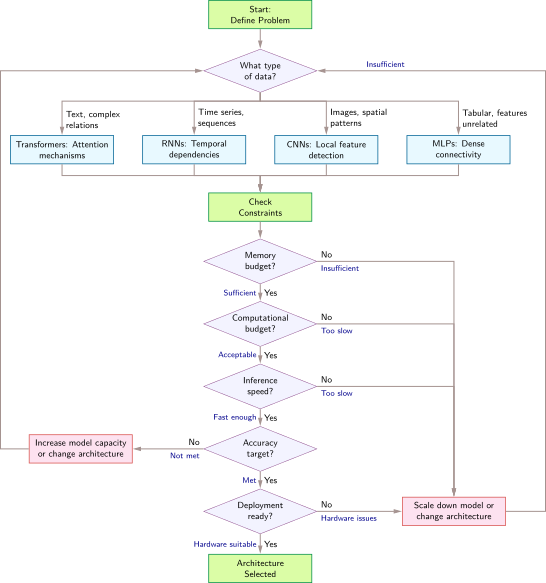

Kiến trúc mạng

Mục đích
Tại sao việc lựa chọn một kiến trúc mạng nơ-ron lại là một cam kết về hạ tầng cũng như một quyết định mô hình hóa?
Việc lựa chọn một kiến trúc mạng nơ-ron vừa là một quyết định mô hình hóa vừa là một hợp đồng với vật lý. Cam kết này bắt đầu từ cấu trúc trong dữ liệu. Một kiến trúc phù hợp với cấu trúc đó có thể học với ít tham số và ví dụ hơn, trong khi một kiến trúc không phù hợp sẽ tốn thêm dữ liệu và thời gian máy để bù đắp cho mô hình tính toán sai. Các cơ chế như tích chập, attention, hồi quy và tra cứu embedding không chỉ thể hiện những giả định khác nhau về dữ liệu; chúng còn tạo ra các kiểu mẫu tính toán, trạng thái và cách dữ liệu di chuyển khác nhau. Những kiểu mẫu đó quyết định liệu công việc có được song song hóa một cách gọn gàng hay không, liệu trạng thái trung gian có vừa với bộ nhớ hay không, và liệu huấn luyện và phục vụ (serving) có còn phải chăng ở quy mô yêu cầu hay không. Hai kiến trúc có thể mang lại chất lượng dự đoán tương tự nhưng lại có dấu vết bộ nhớ và hồ sơ độ trễ khác nhau, đồng thời mở ra các cơ hội khác nhau cho các kỹ thuật tối ưu sau này. Do đó, độ chính xác benchmark đơn thuần không thể tiết lộ thiết kế nào vẫn khả thi. Các cam kết kiến trúc cũng lan tỏa ra ngoài mô hình. Các pipeline dữ liệu áp dụng các cấu trúc đầu vào cụ thể, hạ tầng huấn luyện được cấu hình theo hồ sơ tính toán của mô hình, các hệ thống phục vụ (serving) được điều chỉnh theo đường dẫn yêu cầu của nó, và giám sát kế thừa các chế độ lỗi của nó. Khi những phụ thuộc đó tích lũy, việc thay thế kiến trúc có thể có nghĩa là xây dựng lại phần lớn hệ thống xung quanh. Một quyết định kiến trúc chỉ hợp lý khi những lợi ích dự đoán của nó vẫn tương thích với toàn bộ ngữ cảnh triển khai. Theo thuật ngữ D·A·M, kiến trúc là đồng thiết kế thuật toán-máy móc ở gốc rễ, với đồ thị toán học xác định công việc mà máy phải thực hiện và ngân sách máy giới hạn những đồ thị nào vẫn thực tế.
Learning Objectives
- Phân biệt các đặc điểm tính toán của MLP, CNN, RNN, Transformer và các hệ thống đề xuất kiểu DLRM
- Giải thích cách độ chệch (bias) quy nạp khai thác cấu trúc trong các loại dữ liệu khác nhau
- Phân tích độ phức tạp tính toán và khả năng mở rộng bộ nhớ trên các họ kiến trúc
- Xác định các thành phần cơ bản như skip connections, normalization và gating giúp cho việc huấn luyện sâu các mô hình.
- Áp dụng framework lựa chọn kiến trúc để đối sánh các đặc điểm của dữ liệu với thiết kế của các mô hình.
- Đánh giá xem khả năng tính toán, việc truy cập bộ nhớ và di chuyển dữ liệu ảnh hưởng như thế nào đến hiệu quả ánh xạ lên phần cứng.
- Phân tích các sai lầm thường gặp khi lựa chọn kiến trúc dưới các ràng buộc về độ trễ, băng thông và khả năng song song hóa.
Các nguyên tắc kiến trúc
Một mô hình dày đặc thường lãng phí tham số và bộ nhớ cho những mối quan hệ mà một hình ảnh hiếm khi cần đến. Mạng nơ-ron tích chập (CNN) mã hóa tính cục bộ, trong khi multilayer perceptron (MLP) thì không. Phép nhân ma trận, các hàm activation và tính toán gradient tạo thành các “động từ” của mạng nơ-ron. Các kiến trúc sẽ tập hợp những “động từ” này thành các đồ thị tính toán – những cấu trúc chuyên biệt được tối ưu hóa cho các loại dữ liệu và ràng buộc tính toán cụ thể. Theo hợp đồng silicon (nguyên tắc 4), mỗi kiến trúc đều ngầm định một sự thỏa thuận với phần cứng, đánh đổi các kiểu tính toán để đạt hiệu quả trên các lớp bài toán nhất định.

Độ chệch (bias) quy nạp từ mạnh (CNN) đến yếu (MLP): tiên nghiệm mạnh hơn, cần ít dữ liệu hơn.
1 Độ chệch (bias) quy nạp: Từ tiếng Latin inducere, nghĩa là “dẫn vào”. Việc tích hợp một giả định về cấu trúc sẽ “hướng” mô hình đến một không gian giải pháp nhỏ hơn. Đây chính là lý do khái niệm này là sợi chỉ xuyên suốt chương này: tất cả các kiến trúc được thảo luận ở đây—perceptron đa lớp (MLP), mạng nơ-ron tích chập (CNN), mạng nơ-ron hồi quy (RNN) và transformer—đều được định nghĩa dựa trên lựa chọn độ chệch (bias) của chúng. Độ chệch (bias) cục bộ của CNN giúp giảm số lượng tham số đáng kể (theo cấp số nhân) so với một MLP tương đương, trực tiếp làm giảm các thành phần \(O\) và \(D_{\text{vol}}\) trong định luật sắt. Trong khi đó, cơ chế attention toàn cục đánh đổi việc tính toán điểm số bậc hai để có được khả năng kết nối tầm xa.
Mọi kiến trúc mạng nơ-ron đều quyết định cách tổ chức tính toán sao cho phù hợp với cấu trúc vốn có trong dữ liệu. Chẳng hạn, hình ảnh có tính cục bộ không gian, ngôn ngữ có các phụ thuộc tuần tự, còn các bản ghi dạng bảng thường thiếu một tổ chức không gian hoặc tuần tự cố định. Kiến trúc mã hóa các giả định về những kiểu mẫu này trực tiếp vào đồ thị tính toán, và những giả định đó ảnh hưởng đến số lượng tham số, mức độ sử dụng phần cứng cũng như tính khả thi của việc triển khai. Do đó, lựa chọn kiến trúc là một bài toán kỹ thuật hệ thống ảnh hưởng trực tiếp đến các yếu tố của định luật sắt: số lượng phép toán \(O\) và khối lượng di chuyển dữ liệu \(D_{\text{vol}}\). Các giả định cấu trúc mà mỗi kiến trúc mã hóa được gọi là độ chệch (bias) quy nạp,1 và chúng đóng vai trò là khái niệm chủ đạo cho toàn bộ chương này.
Definition 1.1: Độ chệch (bias) quy nạp
Độ chệch (bias) quy nạp là một ràng buộc về cấu trúc được tích hợp sẵn trong kiến trúc mô hình, giúp giới hạn không gian giả thuyết. Nhờ đó, mô hình có thể tổng quát hóa từ dữ liệu hữu hạn bằng cách mã hóa các giả định đặc thù của miền (như tính cục bộ trong không gian hoặc thứ tự tuần tự) trực tiếp vào đồ thị tính toán.
- Ý nghĩa: Độ chệch (bias) quy nạp có thể làm giảm kích thước tập dữ liệu \((D)\) cần thiết để mô hình có khả năng tổng quát hóa. Với một bộ phát hiện đặc trưng đầu ra, một kết nối đầy đủ (dense connection) sử dụng \(\mathcal{O}(N_{\text{pix}} C_{\text{in}})\) tham số. Trong khi đó, một bộ lọc tích chập dùng chung sử dụng \(\mathcal{O}(K^2 C_{\text{in}})\) tham số và được áp dụng tại mọi vị trí, tiêu tốn \(\mathcal{O}(N_{\text{pix}} K^2 C_{\text{in}})\) phép toán. Đối với một ảnh RGB \(224{\times}224\), do đó, một bộ lọc \(3{\times}3\) dùng chung sẽ sử dụng ít hơn khoảng 5,575.1× tham số so với một bộ phát hiện đặc trưng với kết nối đầy đủ. Điều này giúp giảm dung lượng lưu trữ tham số và thường là lượng dữ liệu cần thiết để tránh overfitting.
- Điểm khác biệt: Không giống như phương pháp chuẩn hóa (thường phạt sự phức tạp của giả thuyết trong quá trình huấn luyện thông qua các thành phần L1/L2), độ chệch (bias) quy nạp lại giới hạn không gian giả thuyết ngay từ giai đoạn thiết kế kiến trúc. Cụ thể, một CNN biểu diễn các hàm không cục bộ kém hiệu quả hơn so với các mẫu cục bộ, còn phương pháp chuẩn hóa thì ngăn chặn sự phức tạp thông qua mục tiêu huấn luyện.
- Cạm bẫy thường gặp: Một quan niệm sai lầm phổ biến là độ chệch (bias) quy nạp càng mạnh thì càng tốt. Một độ chệch cục bộ mạnh (như trong CNN) hoạt động rất tốt với dữ liệu không gian, nhưng lại biểu diễn các phụ thuộc tầm xa trong ngôn ngữ kém hiệu quả hơn so với cơ chế attention toàn cục. Cơ chế này hỗ trợ các phụ thuộc tầm xa, dù phải trả giá bằng chi phí tính toán điểm số \(\mathcal{O}(S^2)\).

Kiến trúc chính là trục thuật toán của D·A·M: nó xác định ngân sách về số lượng phép tính.
Một CNN mã hóa một inductive bias về tính cục bộ không gian, nghĩa là các pixel lân cận quan trọng hơn các pixel ở xa. Một transformer cho phép mỗi phần tử chú ý đến bất kỳ phần tử nào khác, từ đó tạo ra các mối quan hệ tầm xa nhưng với chi phí tính toán bậc hai. Những độ chệch (bias) này giúp các kiến trúc học hiệu quả hơn bằng cách giới hạn không gian các hàm mà chúng có thể biểu diễn. Nếu không có một độ chệch (bias) phù hợp, một mô hình có thể cần nhiều dữ liệu và tài nguyên tính toán hơn đáng kể để học cùng một cấu trúc. framework thống nhất trong section 1.10 sẽ kết nối các họ kiến trúc này lại với nhau, một khi mỗi độ chệch đã được ứng dụng trong thực tế.
Các hệ thống machine learning phải đối mặt với một sự đánh đổi kỹ thuật cốt lõi: khả năng biểu diễn so với hiệu quả tính toán. Theo quy luật sắt của các hệ thống ML (nguyên tắc 3), việc lựa chọn kiến trúc là yếu tố quyết định chính của số lượng phép tính \(O\). Cơ chế attention của transformer cho phép thiết lập các mối quan hệ toàn cục nhưng lại tăng theo \(\mathcal{O}(S^2)\) phép tính với độ dài chuỗi \(S\); trong khi đó, một CNN khai thác tính cục bộ không gian để giảm số phép tính xuống mức tỷ lệ tuyến tính theo số lượng vị trí không gian. Việc kết hợp các inductive bias phù hợp với dữ liệu của một khối lượng công việc (workload), đồng thời đặt ra một ngân sách phép tính có thể quản lý được, chính là thực tiễn của việc lựa chọn kiến trúc mạng nơ-ron.
Example 1.1: Mô hình tổ hợp mà Netflix đã không triển khai (2009)
Cơ chế: Việc đưa cải tiến chiến thắng vào vận hành thực tế đòi hỏi nỗ lực kỹ thuật đáng kể, đúng vào thời điểm kinh doanh của Netflix đang chuyển từ việc gửi DVD qua đường bưu điện sang phát trực tuyến. Sự thay đổi đó cũng tạo ra các tín hiệu xem phong phú hơn và thay đổi những gì mà việc cá nhân hóa cần tối ưu.
Tác động: Độ chính xác tăng thêm không đủ để biện minh cho nỗ lực triển khai, vì vậy Netflix đã không đưa mã đoạt giải thưởng lớn vào sử dụng.
Giải pháp: Netflix đã giữ lại hai thuật toán từ Giải thưởng Tiến bộ trước đó và chuyển hướng công việc đề xuất của mình sang việc cá nhân hóa trong kỷ nguyên phát trực tuyến.
Bài học hệ thống: Việc cải thiện một chỉ số ngoại tuyến chỉ thực sự có giá trị khi chi phí tích hợp và mục tiêu của nó vẫn phải phù hợp với hệ thống vận hành thực tế.
Việc chọn một kiến trúc nền tảng sẽ quyết định cách bố trí bộ nhớ chính và kiểu tính toán cho phần cứng tiếp theo. Table 1 so sánh năm họ mạng nơ-ron chính dựa trên các inductive bias về không gian/thời gian, các phép toán tensor và đặc điểm truy cập bộ nhớ của chúng.
| Kiến trúc | Loại dữ liệu | Đổi mới cốt lõi | Nút thắt hệ thống |
|---|---|---|---|
| MLPs | Dạng bảng/Không cấu trúc | Kết nối dày đặc | Băng thông bộ nhớ |
| CNNs | Không gian (hình ảnh) | Bộ lọc cục bộ + chia sẻ trọng số | Thông lượng tính toán |
| RNNs | Tuần tự (chuỗi thời gian) | Trạng thái lặp lại | Phụ thuộc tuần tự |
| Transformers | Quan hệ (ngôn ngữ) | Cơ chế attention động | Tính toán điểm bậc hai; lưu trữ \(S^2\) tùy chọn |
| DLRM | Phân loại (đề xuất) | Bảng embedding | Dung lượng bộ nhớ (TB+) |
Năm kiến trúc mô hình cụ thể sẽ xuất hiện lặp đi lặp lại trong sách này như những mô hình hải đăng: chúng là các điểm tham chiếu nhất quán giúp liên hệ các khái niệm trừu tượng với thực tế hệ thống cụ thể. Những ví dụ này là các triển khai cụ thể của các Nguyên mẫu Khối lượng công việc (Workload Archetypes) (Quái vật tính toán, Kẻ ngốn băng thông, v.v.) được giới thiệu trong Các nguyên mẫu khối lượng công việc (workload). Để hiểu tại sao những mô hình cụ thể này được chọn, hãy xem xét lịch sử tiến hóa của mô hình qua lăng kính của đường biên Pareto (figure 1).
{kind=link}
Các mô hình này đóng vai trò là các khối lượng công việc (workload) chuẩn để hiểu các ràng buộc của hệ thống. Mỗi mô hình chiếm một vị trí riêng biệt trong sự đánh đổi giữa độ chính xác và chi phí tính toán, như được thể hiện trong figure 1. Đường biên được vẽ nên được xem như một bản đồ lịch sử tổng hợp từ các bài báo kiến trúc tiêu biểu, chứ không phải là một bảng benchmark được kiểm soát chặt chẽ. Nó cho thấy sự tiến triển từ các CNN dày đặc ưu tiên độ chính xác, đến các MobileNet giúp giảm chi phí tính toán trên mỗi đơn vị độ chính xác, rồi đến các kiến trúc Transformer đánh đổi chi phí tính toán lớn để có khả năng mô hình hóa tầm xa linh hoạt. Các lựa chọn kiến trúc được đưa ra trong giai đoạn thiết kế sẽ quyết định vị trí của một hệ thống trên đường biên này.
Danh sách các mô hình tiêu biểu: Tiểu sử mô hình
Năm mô hình này được chọn làm tiêu biểu vì mỗi mô hình làm nổi bật một nút thắt cổ chai thường gặp của hệ thống: tính toán (ResNet-50), băng thông bộ nhớ (GPT-2), dung lượng bộ nhớ (DLRM), độ trễ edge (MobileNetV2) và công suất luôn bật cho phát hiện từ khóa (KWS). Các phần tiểu sử tiếp theo sẽ trình bày bối cảnh lịch sử của từng mô hình và lý do tại sao chúng trở thành những tài liệu tham khảo hữu ích.
ResNet-50 (He et al. 2016a) là một ví dụ điển hình (lighthouse) cho các tác vụ thị giác đòi hỏi nhiều tính toán. Mạng Residual (ResNet) đã giải quyết vấn đề suy giảm hiệu suất trong các mạng phẳng rất sâu: việc thêm các lớp có thể làm tăng lỗi huấn luyện dù mạng có đủ dung lượng. Bằng cách giới thiệu “kết nối bỏ qua” giúp cải thiện tối ưu hóa và luồng gradient, điều này đã giúp xây dựng các mạng có 50, 100 hoặc thậm chí 1000 lớp. Kiến trúc ResNet đã giành chiến thắng trong cuộc thi ImageNet 2015 (với các mô hình 152 lớp rất sâu), và ResNet-50 đã trở thành một kiến trúc nền tảng (backbone) được sử dụng rộng rãi và là một khối lượng công việc (workload) benchmark cho thị giác máy tính. Từ góc độ hệ thống, đây là một khối lượng công việc (workload) có cấu trúc rất đồng đều và đòi hỏi nhiều tính toán, gần như chỉ bao gồm các phép tích chập dày đặc, nhờ đó trở thành một bài kiểm tra hữu ích để đánh giá thông lượng dấu phẩy động của GPU.
2 Tạo sinh tự hồi quy: Đây là một chiến lược giải mã mà mỗi token đầu ra phụ thuộc vào tất cả các token đã được tạo ra trước đó. Điều này đòi hỏi phải chạy toàn bộ mô hình một lượt truyền xuôi cho mỗi token. Ví dụ, với một mô hình 1.5B-tham số ở định dạng FP16, mô hình batch-one chỉ dùng trọng số sẽ đọc khoảng 3 GB trọng số cho mỗi bước giải mã, và cho ra tỷ lệ công việc trên byte khoảng 1 FLOP/byte. Vì cường độ tính toán thấp như vậy, việc giải mã theo batch-one và batch nhỏ thường bị giới hạn bởi băng thông. Các batch lớn hơn có thể giúp dàn trải lưu lượng truy cập trọng số. Trong quá trình tạo sinh, các hệ thống phục vụ (serving) cũng lưu giữ trạng thái chú ý từ các token trước đó; section 1.5 gọi trạng thái này là key-value cache.
GPT-2 (Radford et al. 2019) là một ví dụ điển hình (lighthouse) cho các tác vụ ngôn ngữ bị giới hạn bởi băng thông. Generative Pre-trained Transformer 2 đã chứng minh rằng việc mở rộng một kiến trúc transformer chỉ có bộ giải mã đơn giản trên các tập dữ liệu lớn có thể tạo ra văn bản mạch lạc. Không giống như BERT, một transformer kiểu bộ mã hóa đọc ngữ cảnh theo cả hai hướng, GPT-2 tạo văn bản tuần tự (tự hồi quy2). Điều này gây ra áp lực băng thông bộ nhớ đáng kể trong quá trình giải mã batch-one và batch nhỏ, bởi vì các trọng số mô hình cần được đọc ở mỗi bước giải mã. Nó đóng vai trò là nguyên mẫu của chúng tôi cho các mô hình ngôn ngữ lớn như Llama và ChatGPT.
DLRM (Naumov et al. 2019) là một ví dụ điển hình cho các hệ thống khuyến nghị dữ liệu thưa thớt. Meta đã công khai mã nguồn DLRM để giới thiệu một khối lượng công việc (workload) có sự khác biệt quan trọng so với các mô hình CNN và transformer. Trong khi các mô hình thị giác và ngôn ngữ nặng về tính toán, các hệ thống khuyến nghị lại nặng về bộ nhớ. Các hệ thống này phải tra cứu sở thích của người dùng và các mục trong các bảng embedding khổng lồ, có thể lên tới hàng terabyte. Điều này tạo ra những thách thức đặc biệt cho việc phục vụ (serving) mà độ trễ là yếu tố cực kỳ quan trọng (Phục vụ mô hình). DLRM là một benchmark hữu ích để đánh giá dung lượng bộ nhớ và các mẫu truy cập bộ nhớ thưa thớt trong trung tâm dữ liệu.
Lighthouse 1.1: Các khối lượng công việc (workload) chuẩn tắc
MobileNet (Howard et al. 2017) là ngọn hải đăng về hiệu quả trên edge. MobileNet đã thách thức xu hướng các mô hình ngày càng lớn hơn bằng cách ưu tiên hiệu quả. Nó đã phổ biến kỹ thuật tích chập tách sâu cho các mô hình thị giác hiệu quả, một đổi mới kiến trúc giúp giảm FLOPs đi 8–9\(\times\) cho các kernel \(3{\times}3\) với tổn thất độ chính xác tối thiểu. Nhờ dấu chân tính toán nhỏ gọn đó, MobileNet trở thành lựa chọn lý tưởng cho các kỹ thuật nén và triển khai độ chính xác thấp hơn [lưu trữ và tính toán với ít bit hơn cho mỗi giá trị] được đề cập trong Nén mô hình. MobileNet trở thành một dòng mô hình tham chiếu được dùng để đồng thiết kế các mô hình thị giác, đáp ứng các ràng buộc về pin và độ trễ của điện thoại thông minh và thiết bị nhúng.
KWS (Warden 2018) là ngọn hải đăng của TinyML luôn bật. Các mô hình phát hiện từ khóa (như dùng để nhận diện “Hey Siri” hay “Ok Google”) là ví dụ điển hình nhất về hiệu quả. Được thiết kế để chạy trên các vi điều khiển “luôn bật” với bộ nhớ cỡ kilobyte và ngân sách công suất milliwatt, các mô hình này (thường là CNN tách sâu) minh họa rõ ràng các ràng buộc của TinyML (Warden and Situnayake 2020; C. R. Banbury et al. 2021; C. Banbury et al. 2021). Chúng buộc các kỹ sư phải tính toán kỹ lưỡng từng byte và chu kỳ, từ đó thúc đẩy việc áp dụng lượng tử hoá cực đoan (INT8 và INT4) và phát triển phần cứng chuyên dụng. Tổng hợp lại, những ví dụ này cho thấy vì sao các “ngọn hải đăng” không chỉ là một danh mục mô hình đơn thuần: mỗi ngọn đại diện cho một loại nút thắt cổ chai khác nhau mà phân tích cường độ số học có thể định lượng được.
Dấu hiệu khối lượng công việc (workload): Phổ cường độ số học
ResNet-50 tái sử dụng các trọng số tích chập trên nhiều vị trí không gian, trong khi các mô hình GPT-2/Llama, khi giải mã từng token một với batch kích thước 1, lại phải truyền tải lượng lớn trọng số và trạng thái KV-cache. Sự khác biệt này làm nổi bật khái niệm cường độ số học, tức tỷ lệ FLOP/byte đã được trình bày trong Tính toán nơ-ron và được sử dụng cùng với đường giới hạn hiệu năng phần cứng (hardware roofline) để đánh giá liệu một khối lượng công việc (workload) có khả năng bị giới hạn bởi tính toán hay bộ nhớ.
{kind=link}
Những điểm tắc nghẽn này phản ánh bản chất toán học cơ bản. Tuy nhiên, phép tính ở đây chỉ là một ước lượng (proxy) dựa trên trọng số, chứ không phải là một phép đo đầy đủ về lưu lượng truy cập bộ nhớ chính. Nó tính bằng cách chia khối lượng tính toán dấu phẩy động cho số byte trọng số mô hình FP32, bỏ qua lưu lượng của activation, các giá trị trung gian và KV-cache. Kỹ thuật batching có thể phân tán lưu lượng trọng số trên nhiều ví dụ hoặc token, trong khi việc di chuyển trạng thái bổ sung có thể làm giảm cường độ thực tế. Bảng ghi nhớ độ phức tạp tính toán nêu các công thức tính FLOP và tham số cho từng phép toán được dùng trong phép ước lượng này. Table 2 so sánh ba kịch bản ngọn hải đăng và cho thấy sự chênh lệch khoảng 160.2× dựa trên các giả định này.
| Họ mô hình | Lighthouse | Cường độ \((I)\) | Khả năng tương thích phần cứng |
|---|---|---|---|
| CNN dày đặc | ResNet-50 | ~80.1 FLOP/byte | Giàu tính toán (GPUs/TPUs) |
| Thị giác hiệu quả | MobileNetV2 | ~42.8 FLOP/byte | Cân bằng (Mobile NPUs) |
| Transformer | GPT-2 (Suy luận) | ~0.50 FLOP/byte | Bộ tăng tốc giàu băng thông |
Bảng này cung cấp một yếu tố đầu vào quan trọng để lựa chọn kiến trúc hệ thống. Các yêu cầu của tác vụ sẽ quyết định những họ mô hình nào là khả thi, trong khi kích thước batch, độ chính xác, độ dài chuỗi, cách triển khai, hành vi cache và phần cứng mục tiêu sẽ xác định liệu phép ước lượng (proxy) có dự đoán đúng điểm tắc nghẽn khi triển khai hay không. MobileNet thường phù hợp với các triển khai ứng dụng thị giác có ràng buộc về tài nguyên, và giải mã transformer với kích thước batch là một thường gây áp lực lớn lên băng thông bộ nhớ. Tuy nhiên, cả hai lựa chọn này đều cần được đo lường trong môi trường hoạt động thực tế.
Cột “Bottleneck” (Điểm tắc nghẽn) trong table 3 cần được đặc biệt chú ý: nó chỉ ra tài nguyên hệ thống nào (thông lượng tính toán, băng thông bộ nhớ, dung lượng bộ nhớ, độ trễ hoặc công suất) giới hạn hiệu suất cho từng loại khối lượng công việc (workload). Theo định luật sắt (Định luật sắt của hệ thống ML), điểm tắc nghẽn cho biết liệu \(O\) (các phép toán) hay \(D_{\text{vol}}\) (di chuyển dữ liệu) chiếm ưu thế trong runtime. Những phân biệt này sẽ giúp xác định chiến lược tối ưu hóa nào hiệu quả trong các chương tiếp theo.
| Mô hình | Miền | Tham số | FLOPs/Suy luận | Bộ nhớ | Bottleneck | Vai trò trong Sách giáo khoa |
|---|---|---|---|---|---|---|
| ResNet-50 | Vision | 25.6M | 8.2 GFLOP | 102.4 MB | Compute | Thông lượng Dense vision |
| GPT-2 XL | Language | 1.5B | 3 GFLOP/token | 6 GB | Băng thông bộ nhớ | Phục vụ (serving) từng token |
| DLRM | Recommender | 25B | Thấp | 100 GB | Dung lượng bộ nhớ | Bảng embedding và lập kế hoạch dung lượng |
| MobileNetV2 | Vision trên edge | 3.5M | 600 MFLOP | 14 MB | Độ trễ | Tích chập theo chiều sâu và hiệu quả |
| KWS (DS-CNN) | Audio | 200K | 20 MFLOP | 800 KB | Công suất | Ngân sách công suất luôn bật |
Việc lựa chọn kiến trúc cuối cùng là một sự đánh đổi về mặt kỹ thuật giữa tính toán \((O)\) và việc di chuyển dữ liệu trong bộ nhớ \((D_{\text{vol}})\). Các cơ chế đằng sau các đặc trưng trong table 2 giải thích tại sao mỗi mô hình tiêu biểu lại nằm ở vị trí đó trên phổ cường độ. ResNet-50 có cường độ cao vì các lớp tích chập tái sử dụng mỗi trọng số nhiều lần trên các chiều không gian của một ảnh (các lớp bottleneck sâu hơn có thể đạt 100–200+ FLOP/byte), do đó hiệu suất của nó bị giới hạn bởi tốc độ mà phần cứng có thể thực hiện các phép tính. GPT-2 nằm ở thái cực đối lập: mỗi token sinh ra chỉ tạo ra một phép nhân ma trận-vector, khác với các phép toán ma trận-ma trận trong xử lý theo batch, do đó hệ thống phải tải các trọng số khổng lồ từ bộ nhớ để tính toán cho một token duy nhất, và hiệu suất bị giới hạn bởi tốc độ bộ nhớ có thể di chuyển các bit dữ liệu. MobileNet nằm giữa hai loại này xét trên toàn mô hình, với các lớp depthwise riêng lẻ có cường độ thấp hơn khi tính cả lưu lượng activation: tích chập khả tách depthwise (depthwise separable convolution) làm giảm tổng \(O\) nhưng lại di chuyển nhiều dữ liệu hơn so với khối lượng công việc đó, điều này rất phù hợp với phần cứng di động nhưng thường “bỏ đói” các GPU cao cấp được tối ưu hóa cho tính toán dày đặc.
Checkpoint 1.1: Cường độ số học và kiến trúc
Hãy kết nối lựa chọn kiến trúc với ý nghĩa hệ thống của nó:
Phổ này giúp xác định liệu hệ thống cần bộ xử lý hay bộ nhớ nhanh hơn để cải thiện hiệu suất. Để định lượng các giới hạn này trên phần cứng cụ thể, cuốn sách sử dụng mô hình roofline. Mô hình này vẽ biểu đồ thông lượng đạt được theo cường độ số học, cho thấy khi nào một khối lượng công việc (workload) bị giới hạn bởi bộ nhớ (memory-bound) hay bởi tính toán (compute-bound). Mô hình Roofline trình bày phân tích lý thuyết, cùng các ví dụ ứng dụng trong Tăng tốc phần cứng. Một ví dụ cụ thể: Phân tích A100 sẽ phân loại các nút thắt dựa trên cường độ này bằng cách xem xét một đặc tả bộ tăng tốc thực tế, tính toán điểm đỉnh của một A100 và chỉ ra cách cùng một phép toán có thể nằm ở hai phía của điểm đỉnh đó.
Các đặc trưng đèn hiệu giúp chúng ta cụ thể hóa bước tiếp theo: xem xét từng họ kiến trúc dựa trên mẫu dữ liệu mà nó xử lý, các phép tính mà nó thực hiện, cách nó ánh xạ lên phần cứng và các nút thắt mà nó bộc lộ. Cách tiếp cận bốn khía cạnh này đảm bảo rằng mọi kiến trúc đều được đánh giá dựa trên chi phí vận hành, không chỉ dựa trên khả năng học hỏi của nó.
Self-Check: Question
A team must choose between an MLP and a CNN for classifying \(224 \times 224\) pixel RGB medical images. A single dense first layer would require \(224 \times 224 \times 3 = 150{,}528\) input weights per output unit (yielding roughly 150 million weights for a 1,000-unit layer), whereas a CNN uses a shared \(3 \times 3 \times 3\) filter (27 weights). Using the chapter’s framing of inductive bias, which statement best explains why the CNN is the superior starting point?
- The CNN is strictly more expressive than the MLP, allowing it to approximate non-continuous functions that the Universal Approximation Theorem forbids.
- The MLP is mathematically incapable of representing any 2D spatial feature mapping due to lack of convolutional instruction support.
- The CNN eliminates gradient descent during optimization because convolutional spatial filters are deterministic, handcrafted operators.
- The CNN’s spatial locality and weight-sharing prior directly matches the 2D structure of image data, collapsing parameter storage by over \(5{,}000\times\) and drastically reducing sample complexity and memory traffic.
A dense MLP layer running batch-1 FP32 inference reports an arithmetic intensity of \(\approx 0.5\text{ FLOP/byte}\), while an image convolution bottleneck layer achieves \(>50\text{ FLOP/byte}\) on the same accelerator. Using the roofline model and an accelerator ridge point of \(150\text{ FLOP/byte}\), explain why these kernels occupy opposite execution regimes and diagnose why upgrading to an accelerator with double the peak TFLOP/s will not speed up the batch-1 MLP.
Because an inductive bias restricts the hypothesis space to a smaller set of representable functions, machine learning systems engineers should always select the architecture with the strongest possible inductive bias for every workload.
A production profiler reveals that a model’s embedding tables consume over 1 TB of memory across cluster nodes, inference requests perform sparse random row lookups rather than dense matrix multiplies, and accelerator compute units remain over 95% idle. Which lighthouse archetype best represents this workload’s dominant system constraint?
- DLRM, because the binding constraint is memory capacity for terabyte-scale embedding tables accessed via sparse, irregular memory gathers.
- ResNet-50, because it stresses dense matrix floating-point throughput across regular convolutional grids.
- GPT-2, because autoregressive decoding is the canonical memory-bandwidth-limited serving workload.
- MobileNetV2, because depthwise-separable convolutions produce low arithmetic intensity on server GPUs.
Why does the chapter describe selecting a neural network architecture as ‘signing a contract with physics’ rather than merely selecting a mathematical modeling preference? Explain how architectural graph structure fixes terms in the iron law of ML systems (\(T_{\text{exec}} = D_{\text{vol}}/\text{BW} + O/(R_{\text{peak}} \cdot \eta_{\text{hw}}) + L_{\text{lat}}\)).
MLP: Xử lý các mẫu dày đặc
Hãy xem xét bộ lọc thư rác trên điện thoại thông minh: với một tập hợp các đặc trưng được trích xuất từ email (như điểm uy tín người gửi, số lượng liên kết, sự hiện diện của các từ khóa nhất định), mô hình cần đưa ra một xác suất duy nhất: thư rác hay không. Nhiệm vụ phân loại này, nơi mỗi đặc trưng đầu vào đều kết nối với mọi đầu ra, chính là lĩnh vực của các mạng kết nối đầy đủ. MLP3 là đại diện cho các kiến trúc kết nối đầy đủ đã được giới thiệu trong Tính toán nơ-ron, và giờ đây chúng ta sẽ xem xét chúng qua lăng kính hệ thống bốn phần đã thiết lập trước đó.
3 Perceptron: Từ ‘perceptron’ được ghép từ “perception” (nhận thức) và hậu tố chỉ thiết bị “-tron” (như trong cyclotron và klystron). Thuật ngữ này được Frank Rosenblatt (Rosenblatt 1957) đặt tên cho đơn vị tính toán nơ-ron cơ bản: một tổng có các trọng số, sau đó là một activation phi tuyến. Đây là sự mở rộng của mô hình nơ-ron McCulloch-Pitts trước đó. Các MLP được tạo thành hoàn toàn từ các đơn vị perceptron này, được sắp xếp thành các lớp kết nối đầy đủ. Do đó, hiệu quả của một phép toán cơ bản duy nhất — phép nhân-tích lũy (multiply-accumulate) — sẽ quyết định thông lượng của toàn bộ hệ thống. Các bộ tăng tốc hiện đại có thể thực hiện hơn \(10^{14}\) phép toán này mỗi giây, điều này biến perceptron thành một phép toán cơ bản (computational primitive) mà toàn bộ hệ sinh thái phần cứng ML được tối ưu hóa xoay quanh.
4 Định lý xấp xỉ phổ quát (UAT): Định lý này đưa ra một đảm bảo toán học cho độ chệch quy nạp “không cấu trúc có sẵn” của MLP. Nó chứng minh rằng một mạng lưới đủ rộng có thể xấp xỉ bất kỳ hàm liên tục nào. Tuy nhiên, một hạn chế ở cấp độ hệ thống là để đạt được “đủ rộng”, số lượng nơ-ron cần thiết có thể tăng theo cấp số mũ cùng với số chiều của đầu vào. Điều này khiến cho đảm bảo lý thuyết đó gần như không thể đạt được trong thực tế, ngay cả với các đầu vào có kích thước vừa phải như một hình ảnh \(256{\times}256\).
Các MLP mang một độ chệch quy nạp: chúng không giả định bất kỳ cấu trúc có sẵn nào trong dữ liệu, cho phép mọi đầu vào có thể liên hệ với mọi đầu ra. Lựa chọn kiến trúc này mang lại sự linh hoạt tối đa, vì nó coi tất cả các mối quan hệ giữa các đầu vào đều có khả năng xảy ra như nhau. Nhờ đó, các MLP trở nên linh hoạt nhưng lại đòi hỏi nhiều tính toán hơn so với các phương pháp chuyên biệt khác. Sức mạnh tính toán của chúng đã được chứng minh về mặt lý thuyết thông qua Định lý Xấp xỉ Phổ quát (UAT)4 (Cybenko 1989; Hornik et al. 1989), mà chúng ta đã đề cập trong một chú thích ở Tính toán nơ-ron. Định lý này phát biểu rằng một MLP đủ lớn, sử dụng các hàm activation phi tuyến, có thể xấp xỉ bất kỳ hàm liên tục nào trên một miền compact, miễn là có các trọng số và độ chệch (bias) phù hợp. Sự kết hợp giữa tính phổ quát về mặt lý thuyết và khả năng kết nối dày đặc chính là khái niệm kiến trúc cốt lõi của perceptron đa lớp.
Definition 1.2: Perceptron đa lớp
Mạng perceptron đa lớp (MLP) là các kiến trúc mạng nơ-ron truyền thẳng, sử dụng các lớp kết nối đầy đủ (fully connected layers) theo trình tự. Trong đó, mỗi nơ-ron ở một lớp sẽ kết nối với mọi nơ-ron ở lớp tiếp theo, và không có bất kỳ giả định cấu trúc nào về miền đầu vào được mã hóa.
- Ý nghĩa: Việc thiếu giả định cấu trúc ban đầu khiến các lớp dày đặc (dense layers) có số lượng tham số tăng theo hàm bậc hai (quadratic scaling) dựa trên chiều rộng của lớp. Cụ thể, một lớp duy nhất ánh xạ 1,024 đầu vào tới 1,024 đầu ra sẽ cần 1,048,576 parameters tham số và khoảng 2.1 MB bộ nhớ trọng số ở định dạng FP16. Trong khi đó, một tích chập (convolution) \(3{\times}3\) ánh xạ 1,024 kênh đầu vào tới 1,024 kênh đầu ra chỉ có khoảng 9.4M weights tham số. Lợi thế của tích chập đối với hình ảnh đến từ việc chia sẻ trọng số không gian (spatial weight sharing) giữa các vị trí, chứ không phải từ việc giảm ma trận trộn kênh (channel-mixing matrix) đó. Điều này làm cho MLP không hiệu quả đối với các đầu vào có cấu trúc đa chiều (high-dimensional structured inputs) như hình ảnh.
- Điểm khác biệt: Không giống như mạng nơ-ron tích chập (CNN) vốn khai thác tính cục bộ không gian (spatial locality) để giảm số lượng tham số, MLP xử lý tất cả các phần tử đầu vào một cách đối xứng. Điều này khiến MLP trở thành kiến trúc lý tưởng cho dữ liệu dạng bảng (tabular data) khi không có cấu trúc không gian hay tuần tự nào.
- Cạm bẫy thường gặp: Một quan niệm sai lầm phổ biến là MLP quá đơn giản nên không đủ khả năng giải quyết các tác vụ phức tạp. Thực tế, MLP cung cấp một đường cơ sở dày đặc (dense baseline) hữu ích. Tuy nhiên, CNN, mạng hồi quy (recurrent networks) và transformer đã bổ sung thêm các toán tử và mẫu kết nối mà không thể chỉ quy về việc chia sẻ trọng số.
Trong thực tế, UAT giải thích tại sao MLP thành công trong nhiều tác vụ khác nhau, đồng thời làm rõ khoảng cách giữa khả năng lý thuyết và việc triển khai thực tế. Định lý này đảm bảo rằng một MLP nào đó có thể xấp xỉ bất kỳ hàm nào, nhưng lại không hướng dẫn về kích thước mạng cần thiết hay cách xác định các trọng số. Mặc dù về mặt lý thuyết, MLP có thể giải quyết mọi vấn đề nhận dạng mẫu, nhưng để làm được điều đó có thể đòi hỏi các mạng lớn không thực tế hoặc chi phí tính toán quá cao. Chính sức mạnh lý thuyết này là động lực để chọn MLP cho dữ liệu dạng bảng, hệ thống khuyến nghị và các bài toán mà mối quan hệ đầu vào chưa được biết. Tuy nhiên, chính những hạn chế thực tế này lại thúc đẩy việc phát triển các kiến trúc chuyên biệt, tận dụng cấu trúc dữ liệu để tăng hiệu quả tính toán, như section 1.3, section 1.4 và section 1.6 đã minh họa.
Khoảng cách khả năng học
UAT nghe có vẻ rất khẳng định, nhưng vẫn tồn tại một khoảng cách cơ bản giữa những gì MLP có thể biểu diễn và những gì chúng thực sự học được trong thực tế. Khoảng cách đó xuất phát từ sự khác biệt quan trọng giữa những gì một mạng có thể biểu diễn và những gì nó có thể học.
Khả năng biểu diễn là khả năng một kiến trúc có thể biểu diễn các hàm khi có tài nguyên không giới hạn; UAT đã chứng minh rằng MLP có khả năng biểu diễn phổ quát. Khả năng này đặc biệt hiệu quả nhờ Giả thuyết Manifold,5 vốn cho rằng dữ liệu nhiều chiều thực chất lại có cấu trúc đơn giản hơn nhiều. Khả năng học đề cập đến việc liệu gradient descent có thể tìm thấy các trọng số tốt với số lượng mẫu huấn luyện hữu hạn và ngân sách tính toán cho phép hay không. Một hàm có thể biểu diễn được nhưng thực tế lại không thể học được.
5 Giả thuyết Manifold: Giả định rằng dữ liệu có số chiều lớn nằm trên một bề mặt có số chiều thấp hơn, được nhúng trong không gian đầy đủ. Ví dụ, một hình ảnh \(256{\times}256\) nằm trong không gian 65,536 chiều, nhưng “hình ảnh mèo hợp lệ” chỉ chiếm một vùng cấu trúc rất nhỏ trong không gian đó. Các mạng sâu dần dần làm phẳng manifold bị “nhăn” này thành các biểu diễn có thể tách rời tuyến tính. Về mặt hệ thống, điều này có nghĩa là: nếu dữ liệu thực sự chiếm toàn bộ không gian, thì không kiến trúc nào có thể học được từ các kích thước tập dữ liệu khả thi; chính cấu trúc manifold này là yếu tố giúp cho ngân sách huấn luyện hữu hạn vẫn đủ để học.
Sự phân biệt này giúp giải quyết nghịch lý rõ ràng giữa khả năng xấp xỉ phổ quát và sự tiến bộ của các kiến trúc. Các kiến trúc chuyên biệt như ResNet và transformer cải thiện khả năng học (learnability) bằng cách tích hợp các độ chệch (bias) quy nạp (inductive biases) phù hợp với cấu trúc dữ liệu, ngay cả khi việc này có thể hạn chế khả năng biểu diễn của chúng.
Ba yếu tố tạo ra khoảng cách khả năng học:
- Độ phức tạp mẫu: Định lý xấp xỉ phổ quát (UAT) không đưa ra giới hạn về số lượng ví dụ huấn luyện cần thiết. Với hình ảnh \(28{\times}28\), một MLP xử lý 784 pixel một cách độc lập, đòi hỏi số lượng mẫu tăng theo hàm mũ để học các tương quan không gian. Ngược lại, một CNN tích hợp độ chệch (bias) cục bộ (locality bias), giúp giảm đáng kể yêu cầu về mẫu. Về mặt toán học, độ phức tạp mẫu có thể tăng theo hàm mũ với số chiều đầu vào đối với MLP, nhưng chỉ tăng theo hàm đa thức đối với các kiến trúc phù hợp với cấu trúc dữ liệu.
- Hiệu quả tham số: Định lý xấp xỉ phổ quát (UAT) đảm bảo rằng một độ rộng nhất định là đủ, nhưng không đưa ra các giới hạn mang tính xây dựng cụ thể. Một số lớp hàm yêu cầu độ rộng tăng nhanh theo số chiều đầu vào, trong khi các kiến trúc có cấu trúc thành phần phù hợp có thể biểu diễn chúng một cách nhỏ gọn hơn nhiều.
- Khó khăn tối ưu hóa: Ngay cả khi các trọng số tối ưu tồn tại, gradient descent có thể không tìm thấy chúng. Các bề mặt hàm mất mát của MLP có cấu trúc tô-pô phức tạp, thiếu đi hiệu ứng điều hòa từ các ràng buộc kiến trúc. Các kiến trúc chuyên biệt giúp giảm không gian tìm kiếm, đồng thời tạo ra các đối xứng mà gradient descent có thể khai thác hiệu quả. benchmark MNIST cổ điển về chữ số viết tay minh họa rõ ràng khoảng cách này giữa khả năng biểu diễn và khả năng học.
Example 1.2: MNIST: Biểu diễn so với khả năng học
Chẩn đoán: Một MLP 3 lớp cần 20M tham số vì nó xử lý độc lập tất cả 784 pixel đầu vào, bỏ qua cấu trúc không gian. Một CNN sử dụng các trường tiếp nhận cục bộ và chia sẻ trọng số, giúp giảm số tham số xuống còn 421.4K (ít hơn 47× tham số).
Bài học hệ thống: Độ chệch quy nạp thúc đẩy hiệu quả tham số. Việc tích hợp tính cục bộ không gian vào kiến trúc mô hình giúp giảm lượng tham số theo nhiều bậc độ lớn, từ đó giảm áp lực băng thông bộ nhớ SRAM trong quá trình suy luận.
Khoảng cách khả năng học thúc đẩy nguyên tắc thiết kế cốt lõi của chương này: nhúng các độ chệch quy nạp khớp với cấu trúc dữ liệu. Mỗi kiến trúc đánh đổi tính tổng quát lý thuyết lấy khả năng học thực tế. Định lý No Free Lunch6 (Wolpert and Macready 1997) chính thức hóa sự đánh đổi này: độ chệch giúp ích cho một tác vụ có thể gây hại cho tác vụ khác. Tính bất biến tịnh tiến của CNN hỗ trợ phân loại ảnh nhưng lại gây hại cho các tác vụ mà vị trí tuyệt đối quan trọng. Lựa chọn kiến trúc về cơ bản là hành động khớp độ chệch quy nạp với cấu trúc dữ liệu.
6 Định lý No Free Lunch: Kết quả năm 1997 của Wolpert và Macready đã chứng minh rằng không có thuật toán tối ưu hóa nào vượt trội hơn tìm kiếm ngẫu nhiên trên tất cả các bài toán có thể: tính trung bình trên mọi hàm có thể hình dung được, tất cả các thuật toán đều tương đương. Hệ quả đối với các hệ thống ML là một độ chệch quy nạp (tính cục bộ, tính đồng biến, attention) có thể cải thiện hiệu suất trên các bài toán khớp với độ chệch đó, đồng thời làm giảm hiệu suất khi các giả định của nó không đúng, biến việc lựa chọn kiến trúc thành một cam kết kỹ thuật đối với một lớp bài toán.
Những hiểu biết lý thuyết này dẫn trực tiếp đến các quyết định kỹ thuật. Các độ chệch (bias) quy nạp phù hợp giúp giảm số lượng tham số (nhờ đó có thể triển khai trên edge), tăng tốc quá trình hội tụ (giảm chi phí huấn luyện), và tạo ra các mẫu tính toán có cấu trúc, có thể ánh xạ hiệu quả lên phần cứng chuyên dụng (Tăng tốc phần cứng). Một MLP với 20M tham số không thể triển khai trên edge sẽ trở thành một CNN với 421.4K tham số phù hợp một cách dễ dàng. Đây là mức giảm 47× lần, đạt được nhờ việc khớp kiến trúc với cấu trúc dữ liệu. Câu hỏi tiếp theo là các kiến trúc dày đặc giải quyết những yêu cầu xử lý mẫu cụ thể nào.
Nhu cầu xử lý mẫu
Các mô hình deep learning thường xuyên gặp phải những bài toán mà bất kỳ đặc trưng đầu vào nào cũng có thể ảnh hưởng đến bất kỳ đầu ra nào mà không có ràng buộc cố hữu. Ví dụ, trong phân tích thị trường tài chính, bất kỳ chỉ số kinh tế nào cũng có thể tác động đến bất kỳ kết quả thị trường nào. Trong xử lý ngôn ngữ tự nhiên, nghĩa của từ có thể phụ thuộc vào bất kỳ từ nào khác trong câu. Những kịch bản này đòi hỏi một kiểu kiến trúc có khả năng học các mối quan hệ tùy ý giữa tất cả các đặc trưng đầu vào. Kiến trúc đó phải đảm bảo: các tương tác đặc trưng không giới hạn (trong đó mỗi đầu ra có thể phụ thuộc vào bất kỳ tổ hợp đầu vào nào); khả năng học được mức độ quan trọng của đặc trưng (hệ thống tự xác định những kết nối nào là quan trọng thay vì dựa vào các mối quan hệ được định trước); và khả năng biểu diễn thích nghi (mạng lưới tự điều chỉnh các biểu diễn nội bộ dựa trên chính dữ liệu).
Bài toán nhận dạng chữ số MNIST minh họa rõ ràng sự không chắc chắn này. Mặc dù con người có thể tập trung vào các phần cụ thể của chữ số (như các vòng trong chữ ‘sáu’ hoặc các nét cắt trong chữ ‘tám’), nhưng các tổ hợp pixel quan trọng để phân loại vẫn chưa được xác định rõ. Một chữ ‘bảy’ được viết có nét chân có thể có các mẫu pixel tương tự như một chữ ‘hai’, và các biến thể trong chữ viết tay có nghĩa là các đặc trưng phân biệt có thể xuất hiện ở bất cứ vị trí nào trong ảnh. Sự không chắc chắn về mối quan hệ đặc trưng này đòi hỏi một cách tiếp cận xử lý dày đặc, trong đó mọi pixel đều có khả năng ảnh hưởng đến quyết định phân loại—đây là một cam kết về kiến trúc, dẫn trực tiếp đến nền tảng toán học của các MLP.
Cấu trúc thuật toán
Để xử lý các mẫu này, chúng ta cần một kiến trúc có khả năng liên kết bất kỳ đầu vào nào với bất kỳ đầu ra nào. Mạng MLP giải quyết vấn đề này bằng cách sử dụng kết nối đầy đủ giữa tất cả các nút. Yêu cầu về kết nối này được thể hiện qua một chuỗi các lớp kết nối đầy đủ, trong đó mỗi nơ-ron kết nối với mọi nơ-ron trong các lớp liền kề. Đây chính là mẫu kết nối “dày đặc” đã được giới thiệu trong Tính toán nơ-ron.
Kết nối dày đặc trực tiếp dẫn đến việc sử dụng các lớp kết nối đầy đủ và các phép toán nhân ma trận. Đây chính là nền tảng toán học được giới thiệu trong Biểu diễn bằng phép nhân ma trận, giúp các mạng MLP có thể tính toán được một cách hiệu quả. Figure 2 minh họa cách mỗi lớp biến đổi đầu vào của nó thông qua phép toán cốt lõi này.
{kind=link}
Equation 1 biểu diễn phép biến đổi affine của lớp kết nối đầy đủ, sau đó là hàm activation của nó. \[ \mathbf{h}^{(\ell)} = f\big(\mathbf{h}^{(\ell-1)}\mathbf{W}^{(\ell)} + \mathbf{b}^{(\ell)}\big) \tag{1}\]
Trong đó, \(\mathbf{h}^{(\ell)}\) là đầu ra của lớp \(\ell\), \(\mathbf{h}^{(\ell-1)}\) là đầu vào từ lớp liền trước, \(\mathbf{W}^{(\ell)}\) là ma trận trọng số cho lớp \(\ell\), \(\mathbf{b}^{(\ell)}\) là vectơ độ chệch (bias), và \(f(\cdot)\) là hàm activation. Các hàm activation phi tuyến tính sẽ trình bày chi tiết về đơn vị tuyến tính chỉnh lưu (ReLU) và các hàm phi tuyến tính liên quan. Phép biến đổi từng lớp này, tuy đơn giản về mặt khái niệm, lại tạo ra các mẫu tính toán mà hiệu quả của chúng phụ thuộc rất nhiều vào cách chúng ta tổ chức các phép toán này cho các cấu trúc bài toán khác nhau.
Kích thước của các phép toán này cho thấy quy mô tính toán của việc xử lý các mẫu dày đặc. Vector đầu vào \(\mathbf{h}^{(0)} \in \mathbb{R}^{d_{\text{in}}}\) (trong công thức này, được xem là một vector hàng) biểu diễn tất cả các đặc trưng đầu vào có thể có. Các ma trận trọng số \(\mathbf{W}^{(\ell)} \in \mathbb{R}^{d_{\text{in}}} \times d_{\text{out}}\) thể hiện tất cả các mối quan hệ có thể có giữa đầu vào và đầu ra. Vector đầu ra \(\mathbf{h}^{(\ell)} \in \mathbb{R}^{d_{\text{out}}}\) tạo ra các biểu diễn đã được biến đổi. Một ví dụ với bốn pixel sẽ biến việc mô tả lý thuyết này thành các phép tính số học cụ thể.
Example 1.3: Ví dụ tính toán cụ thể
Đầu vào: \(\mathbf{h}^{(0)} = [0.8, 0.2, 0.9, 0.1]\) (4 cường độ pixel)
Ma trận trọng số: \[ \mathbf{W}^{(1)} = \begin{bmatrix} 0.5 & 0.1 & -0.2 \\ -0.3 & 0.8 & 0.4 \\ 0.2 & -0.4 & 0.6 \\ 0.7 & 0.3 & -0.1 \end{bmatrix}\quad (4{\times}3 \text{ matrix}) \]
Tính toán: \[\begin{gather*} \mathbf{z}^{(1)} = \mathbf{h}^{(0)}\mathbf{W}^{(1)} = \begin{bmatrix} 0.5{\times}0.8 + (-0.3)\times 0.2 + 0.2{\times}0.9 + 0.7{\times}0.1 \\ 0.1{\times}0.8 + 0.8{\times}0.2 + (-0.4)\times 0.9 + 0.3{\times}0.1 \\ (-0.2)\times 0.8 + 0.4{\times}0.2 + 0.6{\times}0.9 + (-0.1)\times 0.1 \end{bmatrix} = \begin{bmatrix} 0.59 \\ -0.09 \\ 0.45 \end{bmatrix} \end{gather*}\] Sau ReLU: \(\mathbf{h}^{(1)} = [0.59, 0, 0.45]\) (các giá trị âm được đặt về 0)
Góc nhìn hệ thống: Mỗi nơ-ron ẩn kết hợp tất cả các pixel đầu vào với các trọng số khác nhau, cho thấy sự tương tác đặc trưng không giới hạn. Các lớp dày đặc đạt được tính tổng quát nhưng phải trả giá bằng chi phí kết nối tối đa.
Ví dụ MNIST giúp hình dung rõ hơn về quy mô này. Đầu vào 784 chiều được kết nối với mọi nơ-ron trong lớp ẩn đầu tiên. Một lớp ẩn với 100 nơ-ron cần một ma trận trọng số \(784{\times}100\) (78.400 tham số), trong đó mỗi trọng số biểu thị mối quan hệ có thể học được giữa một pixel đầu vào và một đặc trưng ẩn. Lớp đơn này sẽ là cơ sở cho các phân tích tính toán trong suốt chương này.
Cấu trúc thuật toán này cho phép các mối quan hệ đặc trưng tùy ý, đồng thời tạo ra các mẫu tính toán cụ thể mà các hệ thống máy tính phải xử lý. Kết nối dày đặc cung cấp khả năng xấp xỉ phổ quát đã được thiết lập trước đó nhưng gây ra sự dư thừa tính toán: mặc dù sức mạnh lý thuyết của MLP cho phép mô hình hóa bất kỳ hàm liên tục nào với độ rộng đủ, sự linh hoạt này lại đòi hỏi rất nhiều tham số để học các mẫu tương đối đơn giản. Mọi đặc trưng đầu vào đều ảnh hưởng đến mọi đầu ra, mang lại khả năng biểu đạt tối đa, nhưng phải trả giá bằng chi phí tính toán tối đa. Những đánh đổi này là động lực cho các chiến lược nén sau này, giúp giảm yêu cầu tính toán mà vẫn duy trì khả năng của mô hình, và Tăng tốc phần cứng khám phá các triển khai dành riêng cho phần cứng, tận dụng cấu trúc hoạt động ma trận thông thường.
Ánh xạ tính toán
Section 1.2.3 định nghĩa những gì một MLP tính toán. Việc ánh xạ tính toán cho thấy cách phép tính đó được chuyển đổi thành các thao tác trên phần cứng. Listing 1 minh họa cách ánh xạ này chuyển từ khái niệm toán học trừu tượng sang hiện thực tính toán.
def mlp_layer_matrix(X, W, b):
"""MLP forward pass using framework-level matrix operations."""
# X: input matrix (batch_size by num_inputs)
# W: weight matrix (num_inputs by num_outputs)
# b: bias vector (num_outputs)
# Single GEMM call: frameworks dispatch to optimized BLAS/cuBLAS
# For MNIST: 784 * 100 = 78,400 MACs per sample
H = activation(matmul(X, W) + b)
return HHàm mlp_layer_matrix phản ánh trực tiếp phương trình toán học, sử dụng các phép toán ma trận cấp cao (matmul) để biểu diễn phép tính chỉ trong một dòng, đồng thời ẩn đi sự phức tạp bên dưới. Kiểu triển khai này là đặc trưng của các framework deep learning, nơi các thư viện tối ưu hóa sẽ quản lý việc tính toán thực tế.
Để hiểu những tác động của kiến trúc này lên hệ thống, chúng ta phải đi sâu vào “bên trong” lời gọi framework cấp cao. Phép nhân ma trận một dòng thanh lịch output = matmul(X, W), từ góc độ phần cứng, thực chất là một chuỗi các vòng lặp lồng nhau, cho thấy những yêu cầu tính toán thực sự của hệ thống. Việc chuyển đổi từ mô hình logic sang thực thi vật lý này sẽ hé lộ các khuôn mẫu quan trọng, quyết định cách truy cập bộ nhớ, chiến lược song song hóa và mức độ tận dụng phần cứng.
Cách triển khai thứ hai trong listing 2 cho thấy khuôn mẫu tính toán thực tế thông qua các vòng lặp lồng nhau, hé lộ điều gì thực sự diễn ra khi chúng ta tính toán đầu ra của một lớp: chúng ta xử lý từng mẫu trong batch, tính toán đầu ra cho từng nơ-ron bằng cách tổng hợp các đóng góp có trọng số từ tất cả các đầu vào. Việc chuyển từ khái niệm toán học trừu tượng sang tính toán cụ thể này cho thấy phép nhân ma trận dày đặc được phân tách thành các vòng lặp lồng nhau của các phép toán đơn giản hơn như thế nào. Vòng lặp ngoài cùng xử lý từng mẫu trong batch. Vòng lặp ở giữa tính toán giá trị cho từng nơ-ron đầu ra. Trong vòng lặp trong cùng, hệ thống thực hiện các phép toán nhân-tích lũy lặp đi lặp lại,7 kết hợp từng đầu vào với trọng số tương ứng của nó.
7 MAC (nhân-tích lũy): Đây là phép toán cơ bản nhất (nguyên tử) của mạng nơ-ron: nhân hai giá trị rồi cộng vào tổng đang chạy. Theo tài liệu tham khảo 45 nm của Horowitz, một phép nhân FP32 cộng với phép cộng tiêu tốn khoảng 4.6 pJ, trong khi một lần truy cập DRAM ngoài chip 32-bit tiêu tốn khoảng 640 pJ (Horowitz 2014). Những giá trị đặc trưng cho công nghệ này cho thấy vì sao việc di chuyển dữ liệu có thể tiêu tốn nhiều năng lượng tính toán hơn cả bản thân phép tính; chúng không phải là hằng số phổ quát cho phần cứng hiện tại.
def mlp_layer_compute(X, W, b):
"""Explicit loop structure exposing MLP computational patterns."""
# Loop 1: Process each sample independently (parallelizable)
for batch in range(batch_size):
# Loop 2: Compute each output neuron
for out in range(num_outputs):
Z[batch, out] = b[out] # Initialize with bias
# Loop 3: Accumulate weighted inputs (innermost loop)
# This is the MAC operation: result += input * weight
for in_ in range(num_inputs):
Z[batch, out] += X[batch, in_] * W[in_, out]
# Total per output: num_inputs MACs +
# num_inputs memory reads
H = activation(Z) # Element-wise nonlinearity
return HTrong lớp MNIST tham chiếu, mỗi nơ-ron đầu ra cần 78,400 MACs chia cho 100, tức là 784, phép toán nhân-tích lũy và ít nhất 1,568 lượt truy cập bộ nhớ (784 cho đầu vào, 784 cho trọng số). Các hệ thống thực tế thường dùng các thư viện ma trận được tối ưu hóa như Basic Linear Algebra Subprograms (BLAS),8 nhưng kiểu vòng lặp lồng nhau này vẫn là yếu tố chính quyết định bài toán thiết kế hệ thống. Các kiến trúc phần cứng giúp tăng tốc các phép toán ma trận này, bao gồm Tensor Cores của GPU9 và các bộ tăng tốc AI chuyên dụng, sẽ được trình bày chi tiết hơn trong Tăng tốc phần cứng.
8 BLAS (thư viện con đại số tuyến tính cơ bản): Đây là một API tiêu chuẩn cho các phép toán ma trận, cho phép sử dụng các thư viện được tối ưu hóa cao (ví dụ: cuBLAS) để tăng tốc 784 phép nhân-tích lũy trên mỗi nơ-ron. Ma trận \(784{\times}100\) trong ví dụ MNIST có thể sử dụng phần cứng kém hiệu quả hơn so với các ma trận transformer lớn hơn, được căn chỉnh tốt, bởi vì hiệu suất sử dụng phụ thuộc vào hình dạng ma trận, batching, kiểu dữ liệu, thư viện và bộ tăng tốc.
9 Tensor Cores: Đây là các đơn vị chuyên biệt trong GPU của NVIDIA, giúp tăng tốc hàng nghìn phép toán nhân-tích lũy bằng cách hợp nhất chúng thành các lệnh ma trận đơn lẻ, có độ song song hóa cao. Tensor Cores hoạt động hiệu quả nhất khi kích thước của ma trận đáp ứng các bội số căn chỉnh cụ thể theo kiểu dữ liệu và kiến trúc. Tuy nhiên, cuBLAS/cuDNN hiện đại vẫn có thể sử dụng Tensor Cores cho nhiều trường hợp không căn chỉnh, dù thường với hiệu quả thấp hơn hoặc cần đệm bên trong. Bài học kiến trúc này không phụ thuộc vào nhà cung cấp: các đơn vị ma trận chuyên biệt sẽ tối ưu hóa tốt cho các khối lượng công việc (workload) nhân ma trận tổng quát (GEMM) dày đặc, được căn chỉnh, nhưng lại kém hiệu quả với các hình dạng nhỏ, không đều mà không thể lấp đầy các đơn vị xử lý.
Hàm ý hệ thống
Section 1.2.4 đã chỉ ra cách các phép toán MLP phân rã thành các vòng lặp lồng nhau của các phép toán nhân-tích lũy. Các ràng buộc ở cấp độ hệ thống phát sinh từ các kiểu mẫu này bao gồm ba khía cạnh chính: yêu cầu về bộ nhớ, nhu cầu tính toán và việc di chuyển dữ liệu.
Đối với việc xử lý các mẫu dày đặc, chi phí bộ nhớ, tính toán và di chuyển dữ liệu đều xuất phát từ cùng một nguồn: kết nối toàn phần (all-to-all). Bộ nhớ chủ yếu được dùng để lưu trữ tham số. Lớp MNIST tham chiếu của chúng ta \((784{\times}100)\) chỉ cần 78.400 tham số. Tuy nhiên, với đầu vào có số chiều lớn, việc mở rộng theo \(\mathcal{O}(M \times N)\) sẽ trở nên không khả thi. Một lớp có 2048 đơn vị điển hình, khi kết nối với một lớp có 2048 đơn vị, sẽ cần 4,194,304 parameters tham số (tương đương 16.8 MB ở định dạng FP32). Vì mỗi trọng số chỉ được sử dụng đúng một lần cho mỗi vector đầu vào, nên không có cơ hội tái sử dụng trọng số khi xử lý từng mẫu đơn lẻ. Điều này làm cho khối lượng công việc (workload) phụ thuộc rất nhiều vào dung lượng và băng thông bộ nhớ.
Phép tính cốt lõi là GEMV dày đặc, hoặc GEMM khi được xử lý theo batch. Phép tính này có tính đều đặn và có thể song song hóa, nhưng cường độ số học (FLOP/byte) thấp đối với các batch nhỏ. Kích thước batch là số lượng mẫu đầu vào được xử lý cùng lúc; các batch lớn hơn sẽ giúp phân tán chi phí tải trọng số trên nhiều phép tính hơn. Các bộ xử lý hiện đại tối ưu hóa các lớp dày đặc bằng các đơn vị lệnh đơn, dữ liệu đa (SIMD) như AVX-512 trên CPU hoặc mảng tâm thu (systolic arrays) trên các Đơn vị Xử lý Tensor (TPU) và GPU, qua đó phân tán chi phí điều khiển trên các khối lớn của phép tính số học song song.
Nút thắt cổ chai ở đây chính là việc di chuyển dữ liệu. Để tính toán 100 giá trị ẩn từ 784 đầu vào, hệ thống phải di chuyển \(784{\times}100\) trọng số từ bộ nhớ đến các đơn vị tính toán. Áp dụng framework cường độ số học từ section 1.1.2 cho lớp này, ta có cường độ khoảng 0.5 FLOP/byte khi thực thi FP32 với kích thước batch bằng 1. Theo một mô hình chỉ tính trọng số (trong đó mỗi trọng số được đọc FP32 một lần và bỏ qua dữ liệu đầu vào, đầu ra, độ chệch (bias) và lưu lượng cache), công thức equation 2 cho ra tỷ lệ này, với \(M\) và \(N\) là kích thước đầu vào và đầu ra. \[ \text{Intensity} \approx \frac{2 \cdot M \cdot N \text{ FLOPs}}{4 \cdot M \cdot N \text{ bytes}} = 0.5 \text{ FLOP/byte} \tag{2}\]
Trên các bộ tăng tốc có điểm đỉnh ở mức hàng trăm FLOP/byte, lớp FP32 với kích thước batch bằng 1 này sẽ bị giới hạn bởi băng thông của bộ nhớ. Việc xử lý theo batch có thể tăng cường độ bằng cách phân tán lưu lượng trọng số, nhưng điểm chuyển đổi (crossover) phụ thuộc vào hình dạng ma trận, độ chính xác, cách triển khai và phần cứng. Đây là lý do tại sao các lớp kết nối đầy đủ có thể trở thành nút thắt cổ chai trong quá trình suy luận, mặc dù chúng thực hiện tổng số FLOPS ít hơn các lớp tích chập.

Việc chia sẻ trọng số giúp lớp tích chập tránh được sự bùng nổ tham số như ở lớp kết nối đầy đủ.
Do đó, kết nối dày đặc giúp xử lý lượng dữ liệu lớn nhất với chi phí tính toán thấp nhất. Đối với dữ liệu có cấu trúc nội tại (như tính cục bộ không gian trong ảnh hoặc thứ tự thời gian trong chuỗi), các kiến trúc chuyên biệt có thể khai thác cấu trúc đó để đạt được cả độ chính xác và hiệu quả tốt hơn. Kiến trúc phổ biến nhất cho việc này là mạng nơ-ron tích chập.
Self-Check: Question
A fully connected layer connecting 2,048 input units to 2,048 output units stores approximately 4.19 million weights (~16.8 MB in FP32). When applied to high-resolution image inputs, dense layers suffer severe parameter explosion. Which statement best captures the systems mechanism behind the MLP’s parameter and memory scaling?
- Dense layers use non-linear activations whose element-wise memory footprints dwarf the weight tensors by several orders of magnitude.
- MLP bias vectors grow quadratically with the output dimension, dominating total layer memory storage.
- The MLP encodes no structural prior about the input, requiring every input-output pair to maintain an independent learnable parameter, yielding \(\mathcal{O}(M \times N)\) parameter storage and weight memory traffic per sample.
- Dense layers require storing three master copies of every weight matrix in hardware registers during inference forward passes.
A team cites the Universal Approximation Theorem (UAT) to argue that a wide 3-layer MLP should be used to classify \(256 \times 256\) RGB images instead of a CNN. Explain why UAT does not justify this design choice in practice, detailing both the statistical failure mode (sample complexity) and the systems failure mode (memory bandwidth and parameter explosion).
The ____ hypothesis states that high-dimensional real-world data (such as natural images) actually resides on a much lower-dimensional structured surface embedded within the full input space, explaining why deep neural networks can generalize from feasible training budgets despite the curse of dimensionality.
A single dense layer (\(2{,}048 \times 2{,}048\)) running FP32 inference on an A100 GPU at batch size 1 achieves only ~4% of peak compute throughput, with profilers reporting an arithmetic intensity of \(\approx 0.5\text{ FLOP/byte}\). What is the most effective engineering solution to move this kernel out of the memory-bandwidth-bound regime and raise hardware utilization?
- Increase the batch size (\(B > 1\)), transforming the matrix-vector multiplication (GEMV) into a matrix-matrix multiplication (GEMM), which amortizes weight loading across \(B\) samples and scales arithmetic intensity.
- Replace the dense matrix multiplication with an unvectorized scalar loop to avoid GPU kernel launch overhead.
- Upgrade to an accelerator with double the peak FP32 TFLOP/s while keeping the batch size at 1.
- Replace the linear transformation with an element-wise activation function to eliminate all weight memory traffic.
In the nested loop implementation of an MLP forward pass (
for batch,for out,for in_), calculate the exact number of multiply-accumulate (MAC) operations and memory accesses required to compute 100 hidden neurons from a 784-dimensional MNIST input vector at batch size 1, and explain how framework-level BLAS libraries optimize this pattern.
CNN: Xử lý mẫu không gian
Giả định của MLP rằng mọi đầu vào có thể tương tác trực tiếp với mọi đầu ra tỏ ra đặc biệt tốn kém đối với dữ liệu có cấu trúc không gian như hình ảnh. Như so sánh MNIST trước đó đã chứng minh, CNN ví dụ sử dụng ít hơn 47× tham số bằng cách khai thác tính cục bộ không gian thay vì xử lý từng pixel một cách độc lập.
Mạng nơ-ron tích chập (CNN)10 nổi lên như một giải pháp cho thách thức này (LeCun et al. 1998; Krizhevsky et al. 2012). Hãy xem xét điều gì xảy ra khi chúng ta nhìn vào một bức ảnh: hệ thống thị giác không nhận biết mọi pixel cùng lúc và mối quan hệ của chúng với nhau. Thay vào đó, nó phát hiện các mẫu cục bộ (như cạnh, kết cấu, góc) rồi tổng hợp chúng lại thành các đối tượng. CNN cũng áp dụng nguyên lý tương tự này vào kiến trúc của chúng.
10 Tích chập: Từ tiếng Latin convolvere (“cuộn lại với nhau”), mô tả một bộ lọc trượt qua đầu vào và kết hợp các phần tử cục bộ tại mỗi vị trí. Việc “cuộn lại với nhau” này tạo ra một ràng buộc cục bộ, chính là nguồn gốc của hiệu quả hoạt động: một kernel \(5{\times}5\) duy nhất tái sử dụng 25 trọng số của nó tại mọi vị trí không gian. Điều này giúp giảm số lượng tham số của một bộ phát hiện đặc trưng cho hình ảnh đơn kênh 1 megapixel từ khoảng 1.000.000 trọng số xuống còn 25, tức là ít hơn khoảng 40.000\(\times\) so với một bộ phát hiện sử dụng kết nối đầy đủ.
Tính cục bộ không gian mang lại hai cải tiến quan trọng, giúp tăng hiệu quả xử lý dữ liệu có cấu trúc không gian. Thứ nhất, chia sẻ tham số cho phép áp dụng cùng một bộ phát hiện đặc trưng (feature detector) tại nhiều vị trí không gian khác nhau. Điều này giúp giảm số lượng tham số từ hàng triệu xuống hàng nghìn, đồng thời cải thiện khả năng tổng quát hóa của mô hình. Thứ hai, kết nối cục bộ giới hạn các kết nối chỉ trong các vùng không gian lân cận. Điều này dựa trên nhận định rằng các đặc trưng gần nhau về mặt không gian thường có liên quan đến nhau hơn. Hai cải tiến này cùng nhau định hình nên họ kiến trúc mạng nơ-ron tích chập.
Definition 1.3: Mạng nơ-ron tích chập
Mạng nơ-ron tích chập (CNN) là các kiến trúc tận dụng tính bất biến dịch chuyển (translation equivariance) và tính cục bộ không gian (spatial locality) để chia sẻ các bộ lọc đã học trên mọi vị trí không gian. Nhờ đó, số lượng tham số của mô hình không còn phụ thuộc vào độ phân giải của dữ liệu đầu vào.
- Ý nghĩa: Cơ chế chia sẻ trọng số giúp giảm đáng kể số lượng tham số. Ví dụ, một lớp tích chập \(3{\times}3\) với 64 kênh đầu vào và 64 kênh đầu ra chỉ cần khoảng \(3 \times 3 \times 64 \times 64 \approx 37{,}000\) tham số, dù ảnh đầu vào có kích thước \(224{\times}224\) hay \(1024{\times}1024\). Trong khi đó, một lớp kết nối đầy đủ (fully connected layer) tương đương, xử lý đầu vào \(224{\times}224{\times}64\), sẽ cần đến \(224^2 \times 64 \times 64 \approx 205\) triệu tham số. Sự khác biệt này lên tới khoảng 5.575 lần. Nhờ việc số lượng tham số không đổi dù kích thước đầu vào thay đổi, CNN có thể xử lý các đầu vào độ phân giải cao trong giới hạn bộ nhớ của một bộ tăng tốc duy nhất.
- Điểm khác biệt: Không như mạng MLP, vốn kết nối mọi phần tử đầu vào với mọi phần tử đầu ra (gọi là kết nối toàn cục), CNN giới hạn mỗi đầu ra chỉ trong một vùng không gian lân cận cục bộ. Điều này dựa trên giả định rằng các pixel gần nhau sẽ có liên quan nhiều hơn các pixel ở xa. Hạn chế này giúp loại bỏ toàn bộ các lớp giả thuyết (hypothesis classes) ngay từ giai đoạn thiết kế kiến trúc, thay vì phải phạt chúng trong quá trình huấn luyện.
- Sai lầm phổ biến: Một hiểu lầm phổ biến là cho rằng CNN chỉ là các mô hình dành riêng cho thị giác máy tính. Thực tế, phép toán tích chập có thể áp dụng cho bất kỳ dữ liệu nào có cấu trúc dạng lưới (grid-like topology): tích chập 1D dùng để xử lý dạng sóng âm thanh và chuỗi thời gian; tích chập 2D dùng cho hình ảnh và phổ đồ; còn tích chập 3D thì xử lý video và dữ liệu thể tích.
Sự đánh đổi ở đây rất rõ ràng: CNN chấp nhận hy sinh tính tổng quát về mặt lý thuyết của MLP để đổi lấy hiệu quả thực tế cao hơn khi dữ liệu có cấu trúc nhất định. Trong khi MLP xử lý từng phần tử đầu vào một cách độc lập, CNN lại khai thác các mối quan hệ không gian, giúp tiết kiệm tính toán và cải thiện độ chính xác cho các tác vụ thị giác.
Nhu cầu xử lý mẫu
Xử lý mẫu không gian áp dụng cho các trường hợp mà mối quan hệ giữa các điểm dữ liệu phụ thuộc vào vị trí tương đối hoặc sự gần kề của chúng. Ví dụ, khi xử lý một hình ảnh tự nhiên, mối quan hệ giữa một pixel với các pixel lân cận rất quan trọng để phát hiện các edge, kết cấu và hình dạng. Các mẫu cục bộ này sau đó kết hợp theo thứ bậc để tạo thành các đặc trưng phức tạp hơn: các edge tạo thành hình dạng, hình dạng tạo thành đối tượng, và đối tượng tạo thành cảnh. Pipeline trong figure 3 minh họa rõ ràng cấu trúc thứ bậc này bằng hình ảnh.
{kind=link}
Quá trình xử lý thứ bậc này xuất hiện trong nhiều lĩnh vực khác nhau: từ các mẫu pixel cục bộ tạo thành các edge rồi kết hợp thành đối tượng (trong thị giác máy tính), đến các tương quan giữa các phân đoạn thời gian gần nhau giúp xác định âm vị (trong xử lý tiếng nói), hay các tương quan giữa các cảm biến lân cận (trong mạng cảm biến), và nhận dạng mẫu mô (trong chẩn đoán hình ảnh y tế). Phương pháp này thành công không phải vì nó bắt chước bộ não, mà vì nó phản ánh đúng cấu trúc thành phần của chính dữ liệu.
Để minh họa các nguyên tắc này, hãy tập trung vào xử lý hình ảnh. Nếu chúng ta muốn phát hiện một con mèo trong ảnh, cần nhận diện các đặc trưng không gian nhất định: hình tam giác của tai, đường nét tròn của khuôn mặt, hay kết cấu của lông. Những đặc trưng này vẫn giữ nguyên ý nghĩa dù chúng xuất hiện ở bất kỳ vị trí nào trong ảnh. Một con mèo vẫn là một con mèo dù nó ở góc trên bên trái hay góc dưới bên phải. Điều này cho thấy hai yêu cầu chính đối với việc xử lý các đặc trưng không gian: khả năng phát hiện các đặc trưng cục bộ và khả năng nhận diện chúng bất kể vị trí.11 Như figure 3 minh họa, mạng nơ-ron tích chập (CNN) đáp ứng cả hai yêu cầu này thông qua quá trình trích xuất đặc trưng theo thứ bậc. Trong đó, các đặc trưng đơn giản sẽ kết hợp lại để tạo thành những biểu diễn ngày càng phức tạp hơn ở các lớp tiếp theo. CNN hiện thực hóa các nguyên tắc xử lý không gian này bằng cách sử dụng chia sẻ tham số, kết nối cục bộ và tính đồng biến dịch chuyển (translation equivariance),12 những đổi mới quan trọng được tiên phong bởi Yann LeCun13 và LeCun et al. (1989).
11 ImageNet: Đây là tập dữ liệu đã xác nhận hai yêu cầu xử lý không gian này ở quy mô lớn. Chiến thắng của AlexNet vào năm 2012 trong Thử thách Nhận dạng Hình ảnh Quy mô Lớn ImageNet đã giúp giảm lỗi top-5 từ 26,2% xuống 15,3% trên thử thách 1000 lớp, sử dụng khoảng 1,2 triệu ảnh huấn luyện (Krizhevsky et al. 2012). Phiên bản ImageNet gốc chứa 3,2 triệu ảnh thuộc 5.247 synset (Deng et al. 2009). Các kiến trúc sau này đã cải thiện độ chính xác nhờ những thay đổi trong kiến trúc, tối ưu hóa, dữ liệu và nguồn lực tính toán, cho thấy sự tương tác giữa độ chệch (bias) quy nạp (inductive bias) và chi phí cơ sở hạ tầng.
12 Tính tương biến tịnh tiến: Đây là một đặc tính vốn có của phép tích chập: khi dịch chuyển đầu vào, bản đồ đặc trưng kết quả cũng sẽ dịch chuyển không gian tương ứng. Đặc tính này khác với tính bất biến, mà các phép gộp (pooling) hoặc tổng hợp sau đó có thể đạt được bằng cách bỏ qua thông tin vị trí chính xác. Ví dụ, phép gộp \(2{\times}2\) với stride 2 sẽ giảm 75% số lượng phần tử không gian.
13 Yann LeCun và LeNet: Kiến trúc của LeCun đã trực tiếp giải quyết vấn đề mở rộng quy mô nan giải khi áp dụng các mạng dày đặc (dense networks) cho ảnh, bằng cách thực hiện các nguyên tắc kết nối cục bộ và chia sẻ tham số. Những ràng buộc này đã giúp giảm số lượng tham số cho một lớp đầu vào giống ảnh (image-like input layer) tới hơn 95%. Nhờ đó, LeNet-5 có thể đạt được độ chính xác cấp sản xuất trên các tác vụ thương mại như đọc séc, chỉ với tổng cộng khoảng 60.000 tham số.
Cấu trúc thuật toán
Equation 3 tính tổng các tích của bộ lọc cục bộ trên từng kênh tại mỗi vị trí đầu ra. \[ \mathbf{H}^{(\ell)}_{i,j,k} = f\left(\sum_{m}\sum_{n}\sum_{c} \mathbf{W}^{(\ell)}_{m,n,c,k}\mathbf{H}^{(\ell-1)}_{i+m,j+n,c} + \mathbf{b}^{(\ell)}_k\right) \tag{3}\]
Phương trình này mô tả cách CNN xử lý dữ liệu không gian. Cụ thể, \(\mathbf{H}^{(\ell)}_{i,j,k}\) là đầu ra tại vị trí không gian \((i,j)\) trong kênh \(k\) của lớp \(\ell\). Phép tổng ba lần lặp này duyệt qua các chiều của bộ lọc: \((m,n)\) duyệt qua kích thước không gian của bộ lọc, và \(c\) là chỉ số của các kênh đầu vào. \(\mathbf{W}^{(\ell)}_{m,n,c,k}\) biểu diễn các trọng số của bộ lọc, giúp nắm bắt các mẫu không gian cục bộ. Không giống như các MLP kết nối tất cả đầu vào với đầu ra, CNN chỉ kết nối các vùng lân cận không gian cục bộ.
Phân tích sâu hơn về ký hiệu, \((i,j)\) tương ứng với các vị trí không gian, \(k\) là chỉ số kênh đầu ra, \(c\) là chỉ số kênh đầu vào, và \((m,n)\) xác định phạm vi của trường tiếp nhận cục bộ.14 Không như phép nhân ma trận dày đặc trong MLP, phép toán này áp dụng cùng một trọng số bộ lọc tại mỗi vị trí không gian.
14 Trường tiếp nhận: Là vùng đầu vào ảnh hưởng đến một nơ-ron đầu ra cụ thể. Với các bộ lọc \(3{\times}3\), trường tiếp nhận tăng thêm 2 pixel mỗi lớp, nghĩa là một nơ-ron ở lớp 3 sẽ “nhìn thấy” một vùng \(7{\times}7\). Tốc độ tăng trưởng này hạn chế chiều sâu của kiến trúc: để phát hiện các đối tượng có kích thước hơn 100 pixel trong một ảnh \(224{\times}224\), chúng ta cần hoặc là nhiều lớp bộ lọc nhỏ (tức là kiến trúc sâu hơn, tốn nhiều bộ nhớ hơn cho activation) hoặc các bộ lọc lớn hơn (tức là nhiều tham số hơn trên mỗi lớp). Đây là một sự đánh đổi cơ bản giữa chiều sâu và chiều rộng trong thiết kế CNN.
Các lớp tích chập xử lý các vùng lân cận (thường là \(3{\times}3\) hoặc \(5{\times}5\)), tái sử dụng cùng một bộ trọng số cho mọi vị trí không gian, và giữ nguyên cấu trúc không gian ở đầu ra. Cơ chế cửa sổ trượt trong figure 4 cho thấy một bộ lọc nhỏ trượt qua ảnh đầu vào, tính tích vô hướng tại mỗi vị trí để tạo ra một bản đồ đặc trưng. Phép toán này giúp nắm bắt các cấu trúc cục bộ, đồng thời duy trì tính tương biến tịnh tiến—nghĩa là cùng một bộ lọc có thể phát hiện cùng một mẫu dù nó xuất hiện ở bất kỳ đâu. Để hiểu rõ hơn về cách các mạng tích chập được xây dựng thông qua một minh họa trực quan tương tác, bạn có thể tham khảo dự án CNN Explainer (Wang et al. 2021).
{kind=link}
Để minh họa, chúng ta hãy xem xét việc áp dụng một CNN cho các ảnh MNIST tương tự như trong phân tích MLP. Mỗi lớp tích chập sẽ áp dụng một tập hợp các bộ lọc (ví dụ, \(3{\times}3\)) trượt qua đầu vào \(28{\times}28\), tính toán các tổng trọng số cục bộ. Với 32 bộ lọc và kỹ thuật đệm (padding) để giữ nguyên kích thước, lớp này sẽ tạo ra đầu ra \(28{\times}28{\times}32\). Ở đầu ra này, mỗi vị trí không gian sẽ chứa 32 phép đo đặc trưng khác nhau của vùng lân cận tương ứng. Điều này khác hẳn với phương pháp MLP, nơi toàn bộ ảnh được làm phẳng thành một vectơ duy nhất trước khi xử lý.
Cấu trúc thuật toán này trực tiếp đáp ứng yêu cầu xử lý các mẫu không gian, tạo ra các kiểu tính toán đặc trưng ảnh hưởng đến thiết kế hệ thống. Không như MLP, mạng tích chập giữ được tính cục bộ không gian, bằng cách sử dụng các nguyên tắc trích xuất đặc trưng theo thứ bậc đã được đề cập trước đó. Những đặc tính này thúc đẩy việc tối ưu hóa kiến trúc trong các bộ tăng tốc AI, nơi các thao tác như tái sử dụng dữ liệu, phân ô (tiling) và tính toán bộ lọc song song đóng vai trò quan trọng để đạt hiệu suất cao.
Tính chất tương biến tịnh tiến là yếu tố then chốt để hiểu tại sao CNN hoạt động hiệu quả với dữ liệu không gian: khi dịch chuyển đầu vào thì bản đồ đặc trưng đầu ra cũng dịch chuyển tương ứng. Có bốn khía cạnh liên quan đến tính chất này trong thiết kế hệ thống: sự khác biệt giữa tương biến và bất biến, công thức toán học, khái quát hóa lý thuyết nhóm và ý nghĩa triển khai.
Tương biến và bất biến là những khái niệm có liên quan nhưng khác biệt, quyết định cách các kiến trúc xử lý các phép biến đổi. Tương biến có nghĩa là khi biến đổi đầu vào thì đầu ra cũng biến đổi tương tự, như được định nghĩa trong equation 4: \[ f(\mathcal{T}(\mathbf{x})) = \mathcal{T}(f(\mathbf{x})) \tag{4}\]
Đối với CNN với phép tịnh tiến \(\mathcal{T}_v\) (dịch chuyển theo vectơ \(v\)), trong phép tích chập stride 1, tránh các hiệu ứng biên (và trước bất kỳ phép gộp hay lấy mẫu xuống theo stride nào), nếu đầu vào dịch chuyển năm pixel sang phải, thì các bản đồ đặc trưng cũng dịch chuyển năm pixel sang phải. Thông tin vị trí được giữ nguyên sau phép biến đổi. Ngược lại, bất biến có nghĩa là việc biến đổi đầu vào không làm thay đổi đầu ra, như được định nghĩa trong equation 5: \[ f(\mathcal{T}(\mathbf{x})) = f(\mathbf{x}) \tag{5}\]
Gộp trung bình toàn cục trên toàn bộ bản đồ đặc trưng cho thấy tính bất biến tịnh tiến: việc dịch chuyển đầu vào không làm thay đổi giá trị trung bình ở đầu ra. Thông tin vị trí bị mất đi.
Tính tương biến quan trọng trong học máy vì nó bảo toàn thông tin cần thiết cho các biểu diễn có cấu trúc. Hãy xem xét các mối quan hệ không gian: một bộ phát hiện đặc trưng phát hiện một con mắt ở vị trí \((x, y)\) cũng sẽ phát hiện con mắt đó ở vị trí \((x+5, y)\), nhưng vị trí phát hiện sẽ dịch chuyển để phản ánh vị trí mới. Mạng có thể học các mối quan hệ không gian như “mắt ở trên mũi”, điều này rất quan trọng cho việc phát hiện khuôn mặt. Tính bất biến hoàn toàn sẽ làm mất thông tin quan hệ này, chỉ còn lại “mắt và mũi đều có mặt ở đâu đó”, điều này tỏ ra không đủ cho nhiều tác vụ.
Bài toán phát hiện đối tượng minh họa rõ vì sao tính equivariance lại cần thiết cho việc định vị. Kết quả phát hiện thường là các hộp bao quanh đối tượng (bounding box) như “ô tô tại \((100, 200)\) với kích thước \(50{\times}80\)”. Điều này đòi hỏi các lớp equivariant phải theo dõi vị trí xuyên suốt mạng, trong khi các lớp cuối cùng (mang tính bất biến) sẽ xác định lớp của đối tượng. Lựa chọn kiến trúc này rất phù hợp với cấu trúc của bài toán: tính equivariance dùng cho định vị, còn tính invariance dùng cho phân loại.
Tính equivariance còn hỗ trợ việc kết hợp các đặc trưng theo thứ bậc. Cụ thể, các lớp đầu tiên sẽ phát hiện các edge một cách equivariant ở mọi vị trí; các lớp giữa sẽ kết hợp các edge này thành các hình dạng phức tạp hơn, đồng thời vẫn duy trì tính equivariance; và các lớp cuối cùng có thể dùng pooling để đạt được tính bất biến một phần, phục vụ cho việc phân loại. Cấu trúc phân cấp này hoạt động hiệu quả chính là vì các đặc trưng trung gian vẫn giữ được cấu trúc không gian, giúp chúng có thể kết hợp với nhau.
Để hiểu rõ hơn, chúng ta có thể hình thức hóa các trực giác này. Với một lớp tích chập sử dụng bộ lọc \(\mathbf{w}\) và đầu vào \(\mathbf{x}\), phép tích chập được định nghĩa là: \[ (\mathbf{x} * \mathbf{w})[i, j] = \sum_{m,n} \mathbf{w}[m, n] \cdot \mathbf{x}[i + m, j + n]. \] Khi áp dụng phép tịnh tiến \(\mathcal{T}_v\) (dịch chuyển theo vector \(v = (v_1, v_2)\)) cho đầu vào, ta có \((\mathcal{T}_v \mathbf{x})[i, j] = \mathbf{x}[i - v_1, j - v_2]\). Thay biểu thức này vào phép tích chập và điều chỉnh lại chỉ số, ta sẽ có: \[ ((\mathcal{T}_v \mathbf{x}) * \mathbf{w})[i, j] = (\mathbf{x} * \mathbf{w})[i - v_1, j - v_2] = \mathcal{T}_v(\mathbf{x} * \mathbf{w})[i, j], \] Điều này chứng minh tính equivariance tịnh tiến (translation equivariance), tùy thuộc vào quy ước xử lý biên đã chọn: \(f(\mathcal{T}_v \mathbf{x}) = \mathcal{T}_v(f(\mathbf{x}))\).
Trong thực tế, sự khác biệt rất rõ ràng: một lớp tích chập equivariant sẽ theo dõi một đặc trưng khi nó bị dịch chuyển đến vị trí mới, đồng thời bảo toàn các mối quan hệ không gian (ví dụ: “râu gần miệng”, “tai trên mắt”) mà quá trình nhận dạng dựa vào. Ngược lại, một lớp gộp toàn cục (global pooling layer) bất biến sẽ trả về cùng một giá trị vô hướng (scalar) dù đặc trưng xuất hiện ở bất kỳ đâu, tức là loại bỏ hoàn toàn thông tin về vị trí. Ví dụ minh họa tiếp theo sẽ cho thấy rõ cách theo dõi sự dịch chuyển này thông qua các ma trận cụ thể.
Example 1.4: Equivariance: Phát hiện đặc trưng
Thiết lập: Xem xét một ảnh \(7{\times}7\) với một edge dọc tại cột 3: \[ \mathbf{x} = \begin{bmatrix} 0 & 0 & 1 & 0 & 0 & 0 & 0 \\ 0 & 0 & 1 & 0 & 0 & 0 & 0 \\ 0 & 0 & 1 & 0 & 0 & 0 & 0 \\ 0 & 0 & 1 & 0 & 0 & 0 & 0 \\ 0 & 0 & 1 & 0 & 0 & 0 & 0 \\ 0 & 0 & 1 & 0 & 0 & 0 & 0 \\ 0 & 0 & 1 & 0 & 0 & 0 & 0 \end{bmatrix} \]
Bộ lọc phát hiện edge dọc: \[ \mathbf{w} = \begin{bmatrix} -1 & 0 & 1 \\ -1 & 0 & 1 \\ -1 & 0 & 1 \end{bmatrix} \]
Tích chập ảnh gốc:
Bản đồ đặc trưng đầu ra cho thấy activation dương khi bộ lọc chuyển từ tối sang sáng (phía bên trái của edge) và activation âm khi nó chuyển từ sáng sang tối (phía bên phải): \[ f(\mathbf{x}) = \begin{bmatrix} 3 & 0 & -3 & 0 & 0 \\ 3 & 0 & -3 & 0 & 0 \\ 3 & 0 & -3 & 0 & 0 \\ 3 & 0 & -3 & 0 & 0 \\ 3 & 0 & -3 & 0 & 0 \end{bmatrix} \]
Đầu vào đã dịch chuyển (edge di chuyển đến cột 5): \[ \mathcal{T}_2 \mathbf{x} = \begin{bmatrix} 0 & 0 & 0 & 0 & 1 & 0 & 0 \\ 0 & 0 & 0 & 0 & 1 & 0 & 0 \\ 0 & 0 & 0 & 0 & 1 & 0 & 0 \\ 0 & 0 & 0 & 0 & 1 & 0 & 0 \\ 0 & 0 & 0 & 0 & 1 & 0 & 0 \\ 0 & 0 & 0 & 0 & 1 & 0 & 0 \\ 0 & 0 & 0 & 0 & 1 & 0 & 0 \end{bmatrix} \]
Tích chập ảnh đã dịch chuyển: \[ f(\mathcal{T}_2 \mathbf{x}) = \begin{bmatrix} 0 & 0 & 3 & 0 & -3 \\ 0 & 0 & 3 & 0 & -3 \\ 0 & 0 & 3 & 0 & -3 \\ 0 & 0 & 3 & 0 & -3 \\ 0 & 0 & 3 & 0 & -3 \end{bmatrix} = \mathcal{T}_2(f(\mathbf{x})) \]
Hiểu biết về hệ thống: Activation của đặc trưng dịch chuyển một lượng tương tự như đầu vào, điều này thể hiện tính equivariance. Mạng biết rằng edge nằm ở cột 5 trong ảnh đã dịch chuyển, chứ không chỉ đơn thuần là có một edge tồn tại ở đâu đó.
Equivariance mang lại những tác động quan trọng đến hệ thống, không chỉ dừng lại ở vẻ đẹp toán học. Lợi ích rõ ràng nhất là hiệu quả sử dụng tham số: nhờ chia sẻ tham số, equivariance giúp giảm đáng kể kích thước mô hình. Hãy lấy ví dụ xử lý một ảnh RGB \(224{\times}224\). Một MLP sẽ cần mỗi neuron ẩn kết nối với tất cả 150,528 input pixels. Trong khi đó, một CNN với bộ lọc \(3{\times}3\) chỉ cần 27 parameters tham số cho mỗi bộ lọc, và được dùng lại cho tất cả các vị trí \(224{\times}224\). Điều này có nghĩa là mỗi bộ phát hiện đặc trưng sử dụng ít hơn khoảng 5,575.1× tham số. Nhờ tiết kiệm bộ nhớ, ta có thể chạy các mô hình lớn hơn và các batch lớn hơn trên cùng một phần cứng.
Cấu trúc tính toán mà equivariance tạo ra cũng rất hữu ích cho việc tối ưu hóa hệ thống. Kiểu cửa sổ trượt (sliding window) áp dụng cùng một phép toán tại mọi vị trí không gian, tạo ra các phép tính lặp lại, có quy luật mà phần cứng có thể tận dụng. Các pixel đầu vào được nhiều vị trí bộ lọc sử dụng, điều này cho phép tối ưu hóa im2col để sắp xếp lại dữ liệu, giúp các phép toán ma trận hiệu quả hơn. Kết quả là các phép tính này rất phù hợp với kiến trúc SIMD, vì các GPU hiện đại có thể thực hiện đồng thời các lệnh giống nhau trên nhiều vị trí không gian khác nhau. Chính sự đều đặn trong cấu trúc này giải thích tại sao TPU và các bộ tăng tốc AI có các đơn vị chuyên biệt cho phép tích chập: phép toán này được ánh xạ hiệu quả lên silicon chính là vì equivariance tạo ra các mẫu tính toán có thể dự đoán và song song hóa được.
Equivariance cũng cải thiện hiệu quả sử dụng mẫu dữ liệu theo những cách có lợi cho toàn bộ pipeline huấn luyện. Khi một mạng học cách phát hiện cạnh tại một vị trí, equivariance đảm bảo rằng bộ phát hiện đó cũng sẽ tự động hoạt động tốt ở mọi vị trí khác. Việc huấn luyện không còn cần các ví dụ có cạnh ở mọi vị trí có thể nữa, điều này giống như một hình thức tăng cường dữ liệu (data augmentation) được tích hợp sẵn. Các lợi ích về mặt hệ thống sẽ lan tỏa: ít dữ liệu huấn luyện hơn đồng nghĩa với việc giảm yêu cầu về lưu trữ, huấn luyện nhanh hơn và tiêu thụ ít băng thông hơn khi tải dữ liệu.
Theorem 1.1: Công thức equivariance nhóm
Framework toán học được tổng quát hóa một cách rõ ràng: đối với nhóm \(G\) tác động lên không gian đầu vào \(X\) và không gian đầu ra \(Y\), một hàm \(f: X \to Y\) được gọi là \(G\)-equivariant nếu: \[ f(g \cdot \mathbf{x}) = g \cdot f(\mathbf{x}) \quad \forall g \in G, \mathbf{x} \in X \]
Mạng CNN tiêu chuẩn có tính equivariant với phép tịnh tiến (translation-equivariant), trong khi các mạng equivariant với phép quay (rotation-equivariant) mở rộng nguyên lý này cho các nhóm quay. Nguyên tắc kiến trúc được tổng quát hóa là: các đối xứng của dữ liệu nên được tích hợp dưới dạng các tính equivariant vào kiến trúc. Đối với kỹ thuật hệ thống, việc xác định các đối xứng của dữ liệu sẽ trực tiếp định hướng việc lựa chọn kiến trúc: các kiến trúc bị ràng buộc chặt chẽ hơn với các đối xứng mạnh mẽ hơn thường tạo ra các mô hình nhỏ hơn. Hơn nữa, các tính equivariant chuyên biệt có thể đòi hỏi các phép toán tùy chỉnh, ví dụ như tích chập quay, cần có sự hỗ trợ từ phần cứng hoặc các triển khai phần mềm hiệu quả.
Trong thực tế, tính equivariant hoàn hảo thường bị hy sinh để đổi lấy hiệu quả tính toán hoặc sự ổn định khi huấn luyện. Việc đệm không đối xứng (asymmetric padding) tại các biên ảnh làm mất tính equivariant tịnh tiến hoàn hảo, tương tự như lấy mẫu xuống với bước nhảy (strided downsampling). Điều này dẫn đến lượng tử hoá, khi một dịch chuyển một pixel ở đầu vào lại tạo ra một dịch chuyển không phải số nguyên ở đầu ra. Chuẩn hóa batch (Batch normalization), một lớp chuẩn hóa sau đó giúp ổn định các activation bằng cách sử dụng thống kê batch, cũng làm mất tính equivariant khi các thống kê đó được tính toán theo từng vị trí trong một số triển khai. Các mạng hiện đại chấp nhận những sai lệch này như những đánh đổi cần thiết, và việc mất đi một chút tính thuần túy về mặt lý thuyết này hiếm khi ảnh hưởng đến hiệu suất thực tế.
Checkpoint 1.2: Độ chệch quy nạp không gian
Mạng CNN thành công vì chúng phù hợp với cấu trúc của dữ liệu ảnh. Hãy kiểm tra xem bạn đã hiểu cách thức này như thế nào:
Các tác vụ khác nhau đặt ra những yêu cầu khác nhau về việc khi nào cần duy trì tính đồng biến với phép dịch chuyển và khi nào cần đưa vào tính bất biến. - Đối với phân loại ảnh, chỉ cần nhãn lớp cuối cùng là bất biến; các lớp trung gian nên duy trì tính đồng biến với phép dịch chuyển để bảo toàn thông tin không gian, phục vụ việc học đặc trưng phân cấp. - Phát hiện đối tượng đòi hỏi tính đồng biến với phép dịch chuyển trên toàn mạng vì tọa độ hộp giới hạn phải theo dõi vị trí của đối tượng. - Phân đoạn ngữ nghĩa yêu cầu tính đồng biến với phép dịch chuyển hoàn toàn đến lớp đầu ra, bởi vì nhãn của từng pixel phải khớp với vị trí đầu vào. - Tạo ảnh cũng tương tự, cần tính đồng biến với phép dịch chuyển để duy trì cấu trúc không gian trong kết quả đầu ra. Quyết định kiến trúc về việc đưa vào tính bất biến thông qua gộp (pooling) hoặc lấy trung bình toàn cục (global averaging) hay duy trì tính đồng biến với phép dịch chuyển, đều phản ánh các yêu cầu của tác vụ và trực tiếp định hình thiết kế mạng.
Các yêu cầu cụ thể theo từng tác vụ vừa nêu minh họa nguyên lý thiên kiến quy nạp được định nghĩa trong section 1.1: bằng cách giới hạn kết nối chỉ trong các vùng lân cận cục bộ và chia sẻ tham số trên khắp các vị trí không gian, mạng CNN đã mã hóa kiến thức nền tảng về cấu trúc của dữ liệu thị giác—rằng các đặc trưng quan trọng thường cục bộ và bất biến với phép dịch chuyển. Ràng buộc kiến trúc này giúp thu hẹp không gian giả thuyết mà mạng cần tìm kiếm, từ đó cho phép học hiệu quả hơn từ lượng dữ liệu hạn chế so với các mạng kết nối đầy đủ.
Mạng CNN tự nhiên thực hiện việc học biểu diễn phân cấp (Bengio et al. 2013) thông qua cấu trúc lớp của chúng. Các lớp ban đầu phát hiện các đặc trưng cấp thấp như các edge và kết cấu với các trường tiếp nhận nhỏ, trong khi các lớp sâu hơn kết hợp chúng thành các mẫu ngày càng phức tạp với các trường tiếp nhận lớn hơn. Tổ chức phân cấp này cho phép mạng CNN xây dựng các biểu diễn thành phần: các đối tượng phức tạp được biểu diễn dưới dạng các thành phần của các phần đơn giản hơn. Cơ sở toán học cho điều này xuất phát từ việc xếp chồng các lớp tích chập, tạo ra một cấu trúc phụ thuộc dạng cây, trong đó mỗi neuron sâu hơn phụ thuộc vào một vùng đầu vào ngày càng lớn; với các kernel nhỏ cố định, chiều dài cạnh của trường tiếp nhận tăng gần như tuyến tính theo độ sâu và diện tích trường tiếp nhận tăng gần như bậc hai cho đến khi nó bao phủ toàn bộ ảnh.
Việc chia sẻ tham số được giới thiệu trong section 1.3.1 làm giảm đáng kể độ phức tạp so với mạng MLP. Sự chia sẻ này thể hiện giả định rằng các đặc trưng hữu ích có thể xuất hiện ở bất cứ đâu trong ảnh, làm cho cùng một bộ phát hiện đặc trưng có giá trị trên tất cả các vị trí không gian.
Ánh xạ tính toán
Hiệu quả kiến trúc này trong thực tế phụ thuộc vào cách tính toán cửa sổ trượt của tích chập được ánh xạ lên phần cứng. Các phép toán tích chập tạo ra các mẫu tính toán khác biệt so với phép nhân ma trận dày đặc của MLP. Mặc dù các framework cấp cao trừu tượng hóa điều này dưới dạng cửa sổ trượt, việc triển khai phần cứng cơ bản thường biến đổi bài toán để tận dụng các đơn vị nhân ma trận được tối ưu hóa cao.
Biến đổi phổ biến nhất là im2col (image-to-column), nó sắp xếp lại các phần ảnh đầu vào thành các cột của một ma trận lớn, cho phép phép tích chập được thực hiện dưới dạng một phép nhân ma trận tổng quát (GEMM) duy nhất. Phần thảo luận về các nguyên thủy tính toán sẽ sử dụng biến đổi này để kết nối cấu trúc CNN với phần cứng ma trận.
Cầu nối giữa mô hình logic và thực thi vật lý trở nên quan trọng để hiểu các yêu cầu hệ thống CNN. Mặc dù listing 3 cho thấy sự trừu tượng hóa cấp framework dưới dạng một lệnh gọi hàm đơn giản, phần cứng phải điều phối các mẫu di chuyển dữ liệu phức tạp và khai thác tính cục bộ không gian để đạt hiệu quả.
def conv_layer_spatial(input, kernel, bias):
"""Framework-level convolution.
Single call dispatches to optimized kernel (often via im2col + GEMM).
"""
# Convolution applies shared weights across all positions
# For a 3x3 kernel on 28x28 input (padded): 9 MACs per position x 784 positions
output = convolution(input, kernel) + bias
return activation(output)Listing 4 cho thấy bảy vòng lặp lồng nhau xử lý từng vị trí không gian. Dù về mặt chức năng thì đúng, nhưng cách triển khai đơn giản này hiếm khi được dùng trong thực tế vì hiệu suất truy cập bộ nhớ kém. Thay vào đó, phương pháp im2col chấp nhận đánh đổi bộ nhớ (bằng cách nhân đôi các pixel đầu vào chồng chéo) để đổi lấy sự đồng nhất trong tính toán, chuyển đổi các vòng lặp lồng nhau phức tạp thành một phép nhân ma trận được sắp xếp hợp lý, giúp tận dụng tối đa các đơn vị xử lý dấu phẩy động (FP) của phần cứng.
Bảy vòng lặp lồng nhau cho thấy những khía cạnh khác nhau của quá trình tính toán. Cấu trúc vòng lặp này được chia làm ba nhóm chính: các vòng lặp bên ngoài quản lý vị trí, tức là xác định ảnh nào và vùng nào trong ảnh đang được xử lý; vòng lặp ở giữa xử lý các đặc trưng đầu ra, tính toán các mẫu đã học khác nhau; và các vòng lặp bên trong thực hiện phép tích chập thực tế, bằng cách trượt cửa sổ kernel qua dữ liệu đầu vào.
Khi xem xét chi tiết quá trình này, hai vòng lặp bên ngoài (for y và for x) sẽ duyệt qua từng vị trí không gian trên bản đồ đặc trưng đầu ra. Tại mỗi vị trí đó, các giá trị sẽ được tính toán cho từng kênh đầu ra (qua vòng lặp for out_channel). Các giá trị này đại diện cho các đặc trưng hoặc mẫu đã học khác nhau, ví dụ như 32 bộ phát hiện đặc trưng khác nhau.
def conv_layer_compute(input, kernel, bias):
# Logical view of convolution (usually implemented via im2col +
# GEMM)
# Loop 1: Process each image in batch
for image in range(batch_size):
# Loop 2&3: Move across image spatially
for y in range(height):
for x in range(width):
# Loop 4: Compute each output feature
for out_channel in range(num_output_channels):
result = bias[out_channel]
# Loop 5&6: Move across kernel window
for ky in range(kernel_height):
for kx in range(kernel_width):
# Loop 7: Process each input feature
for in_channel in range(num_input_channels):
# ... MAC operations ...Ba vòng lặp bên trong thực hiện phép tích chập thực tế tại mỗi vị trí. Để tính toán mỗi giá trị đầu ra, chúng ta xử lý một vùng cục bộ \(3{\times}3\) của dữ liệu đầu vào (qua các vòng lặp ky và kx), đồng thời duyệt qua tất cả các kênh đầu vào (vòng lặp for in_channel). Quá trình này tạo ra hiệu ứng cửa sổ trượt: cùng một bộ lọc \(3{\times}3\) sẽ di chuyển qua ảnh, thực hiện các phép nhân-tích lũy giữa các trọng số của bộ lọc và các giá trị đầu vào cục bộ. Không như kết nối toàn cục của MLP, kiểu xử lý cục bộ này có nghĩa là mỗi giá trị đầu ra chỉ phụ thuộc vào một vùng lân cận nhỏ của đầu vào.
Với bộ lọc \(3{\times}3\) và 32 kênh đầu ra, mỗi vị trí đầu ra chỉ cần 9 phép toán nhân-tích lũy trên mỗi kênh đầu vào, trong khi lớp MLP tham chiếu cần tới 784 phép. Phép toán này được lặp lại cho mọi vị trí không gian và mọi kênh đầu ra.
Dù sử dụng ít phép toán hơn cho mỗi đầu ra, nhưng cấu trúc không gian lại tạo ra các kiểu truy cập bộ nhớ và tính toán khác nhau mà các hệ thống phải xử lý. Những kiểu này ảnh hưởng đến thiết kế hệ thống, vừa tạo ra thách thức vừa mở ra cơ hội để tối ưu hóa. Việc hiểu rõ những hàm ý cấp hệ thống này sẽ giúp chúng ta thấy được lý do tại sao CNN lại thống trị lĩnh vực thị giác máy tính, dù chúng có vẻ đơn giản.
Những hàm ý về mặt hệ thống
Các biến đổi cửa sổ trượt và im2col được mô tả trong section 1.3.3 cho thấy CNN tính toán như thế nào; phần này sẽ trình bày chi phí của quá trình tính toán đó về bộ nhớ, năng lực tính toán và việc di chuyển dữ liệu. Những chi phí này phụ thuộc vào độ sâu của lớp, thời gian tồn tại của activation, và việc các bản đồ đặc trưng được lưu trong cache SRAM hay phải tràn ra bộ nhớ băng thông cao (HBM).
Yêu cầu bộ nhớ
Đối với các lớp tích chập, yêu cầu bộ nhớ tập trung vào hai thành phần chính: trọng số bộ lọc và bản đồ đặc trưng. Không như MLP phải lưu trữ toàn bộ ma trận kết nối, CNN dùng các bộ lọc nhỏ, có thể tái sử dụng. Với một CNN điển hình xử lý ảnh ImageNet \(224{\times}224\), một lớp tích chập có 64 bộ lọc kích thước \(3{\times}3\) áp dụng cho một kênh đầu vào duy nhất chỉ cần lưu trữ 576 tham số trọng số; ngay cả với nhiều kênh đầu vào, tích của kernel và kênh vẫn nhỏ hơn đáng kể so với hàng triệu trọng số cần cho xử lý kết nối đầy đủ tương đương. Hệ thống cần lưu trữ bản đồ đặc trưng cho tất cả các vị trí không gian, điều này tạo ra một yêu cầu bộ nhớ khác. Một đầu vào \(224{\times}224\) với 64 kênh đầu ra yêu cầu lưu trữ 3.2M giá trị activation.
Các mẫu truy cập bộ nhớ này gợi mở cơ hội tối ưu hóa thông qua việc tái sử dụng trọng số và quản lý bản đồ đặc trưng một cách cẩn thận. Các bộ xử lý tối ưu hóa các mẫu không gian này bằng cách cache trọng số bộ lọc để tái sử dụng ở nhiều vị trí, đồng thời truyền dữ liệu bản đồ đặc trưng. CPU dùng hệ thống phân cấp cache của mình để giữ các bộ lọc thường dùng luôn có sẵn, còn GPU sử dụng các kiến trúc bộ nhớ chuyên biệt được thiết kế riêng cho các mẫu truy cập không gian trong xử lý ảnh. Các nguyên tắc thiết kế kiến trúc chi tiết cho các bộ xử lý chuyên biệt này được đề cập trong Tăng tốc phần cứng.
Nhu cầu tính toán
Phép tính cốt lõi trong CNN là việc lặp đi lặp lại việc áp dụng các bộ lọc nhỏ trên các vị trí không gian. Mỗi giá trị đầu ra đòi hỏi một phép toán nhân-tích lũy cục bộ trên vùng bộ lọc. Với xử lý ImageNet dùng bộ lọc \(3{\times}3\) và 64 kênh đầu ra, việc tính toán một vị trí không gian sẽ cần 576 phép nhân-tích lũy cho mỗi kênh đầu vào, và thao tác này phải được lặp lại cho tất cả 50,176 vị trí không gian. Dù mỗi phép tính riêng lẻ có ít thao tác hơn một lớp MLP, nhưng tổng tải tính toán vẫn rất lớn do sự lặp lại về mặt không gian.
Kiểu tính toán này mang lại các cơ hội tối ưu hóa khác so với MLP. Vì các phép toán tích chập có tính chất lặp lại và đều đặn, chúng ta có thể tận dụng song song hóa có cấu trúc để sử dụng phần cứng hiệu quả hơn. Các bộ xử lý hiện đại khai thác kiểu tính toán này theo nhiều cách. CPU sử dụng các lệnh SIMD15 để xử lý nhiều vị trí bộ lọc cùng lúc, trong khi GPU song song hóa tính toán trên các vị trí không gian và kênh. Các kỹ thuật tối ưu hóa mô hình, giúp giảm thêm yêu cầu tính toán (như tối ưu hóa tích chập chuyên biệt và các mẫu thưa thớt), sẽ được trình bày chi tiết trong Nén mô hình.
15 SIMD (single instruction, multiple data): Các lệnh CPU áp dụng cùng một phép toán cho nhiều phần tử dữ liệu cùng lúc; AVX-512 có thể xử lý 16 giá trị độ chính xác đơn trên mỗi lệnh vector. Tốc độ tăng thực tế so với mã scalar còn phụ thuộc vào thông lượng lệnh, khả năng vector hóa và cách truy cập bộ nhớ. Khi suy luận CNN trên các CPU edge không có GPU, việc tận dụng SIMD có thể quyết định liệu mô hình có đạt được các mục tiêu độ trễ thời gian thực hay không. Các framework như TFLite và Open Neural Network Exchange (ONNX) Runtime sử dụng các kernel tích chập được vector hóa để khai thác tính song song này.
Di chuyển dữ liệu
Kiểu cửa sổ trượt trong phép tích chập tạo ra một đặc điểm di chuyển dữ liệu riêng biệt. Không như MLP, nơi mỗi trọng số chỉ được dùng một lần trong mỗi lượt truyền xuôi, các trọng số bộ lọc của CNN được tái sử dụng nhiều lần khi bộ lọc trượt qua các vị trí không gian. Khi xử lý ImageNet, mỗi trọng số bộ lọc \(3{\times}3\) được tái sử dụng 50,176 lần, tức là một lần cho mỗi vị trí trong bản đồ đặc trưng \(224{\times}224\). Thách thức ở đây là làm sao để truyền các đặc trưng đầu vào qua đơn vị tính toán, trong khi vẫn giữ các trọng số bộ lọc ổn định.
Kiểu truy cập không gian có thể dự đoán được cho phép chúng ta tối ưu hóa di chuyển dữ liệu một cách chiến lược. Các chiến lược bộ nhớ đệm của CPU/GPU đã mô tả trước đó áp dụng trực tiếp cho việc di chuyển dữ liệu: các framework điều phối tính toán để tối đa hóa 50,176 lần sử dụng mỗi trọng số bộ lọc và giảm thiểu các truy cập bản đồ đặc trưng dư thừa. Điều này khai thác cùng một tính cục bộ không gian giúp CNN hiệu quả về bộ nhớ.
Các kiểu hoạt động về bộ nhớ, tính toán và di chuyển dữ liệu này tập trung vào một mô hình duy nhất. Mô hình này đóng vai trò là điểm tham chiếu của chương cho các khối lượng công việc thị giác bị giới hạn bởi tính toán: kiến trúc ResNet-50.
Lighthouse 1.2: ResNet-50 (ngọn hải đăng thị giác)
Tại sao điều này quan trọng: ResNet-50 là một điểm tham chiếu cho các khối lượng công việc thị giác thông thường, sử dụng nhiều phép tích chập. Kiến trúc của nó gần như hoàn toàn bao gồm các lớp tích chập dày đặc, giúp nó có cấu trúc rất đồng nhất và hiệu quả trên GPU. Khi thực thi theo batch với khả năng tái sử dụng dữ liệu tốt, hiệu suất của ResNet-50 thường bị giới hạn bởi thông lượng dấu phẩy động (FLOP/s). Do đó, nó là một ví dụ điển hình để giải thích các chiến lược song song dữ liệu, lượng tử hoá và xử lý theo batch. Table 4 tóm tắt các thuộc tính định lượng và hệ quả hệ thống của chúng:
| Thuộc tính | Giá trị | Hàm ý hệ thống |
|---|---|---|
| Tham số | 25.6M | Kích thước mô hình 102.4 MB ở FP32; vừa vặn thoải mái trong bộ nhớ GPU. |
| FLOPs/Ảnh | 8.2 GFLOP \((224{\times}224)\) | Tích chập \(3{\times}3\) là lớp kernel đơn lớn nhất, chiếm khoảng 48% của MACs. |
| Ràng buộc | Nặng về tính toán khi được xử lý theo batch | Bị giới hạn bởi FLOP/s đỉnh khi việc tái sử dụng trọng số và activation cao; suy luận kích thước batch nhỏ có thể chuyển sang chế độ giới hạn bộ nhớ. |
| Bottleneck | Thông lượng FP | Hưởng lợi tối đa từ các Đơn vị Ma trận chuyên dụng (Tensor Cores). |
| Hồ sơ | Cường độ số học hiệu quả cao khi tái sử dụng | Cường độ số học phụ thuộc vào kích thước batch, thuật toán tích chập và lưu lượng bộ nhớ được hiện thực hóa. |
Hồ sơ bị giới hạn bởi tính toán của ResNet-50 giả định tài nguyên phần cứng dồi dào. Tuy nhiên, hầu hết các tác vụ suy luận lại chạy trên các thiết bị có ngân sách công suất nhỏ hơn ba bậc độ lớn so với GPU của trung tâm dữ liệu. MobileNetV2 chứng minh rằng đổi mới kiến trúc có thể nhắm đến phân khúc này, đạt được độ chính xác cạnh tranh với một phần nhỏ chi phí tính toán.
Lighthouse 1.3: MobileNetV2 (ngọn hải đăng hiệu quả)
Tại sao điều này quan trọng: MobileNetV2 đại diện cho các khối lượng công việc edge bị giới hạn độ trễ. Các tích chập tách sâu của nó đánh đổi khả năng trộn kênh để đạt được tốc độ cao hơn, khiến nó trở thành một nền tảng hữu ích cho các ứng dụng di động, thị giác nhúng và tìm kiếm kiến trúc mạng nơ-ron (NAS) – một phương pháp tìm kiếm tự động các thiết kế mô hình. Table 5 tóm tắt các thuộc tính định lượng của ngọn hải đăng hiệu quả:
| Thuộc tính | Giá trị | Hàm ý hệ thống |
|---|---|---|
| Tham số | 3.5M | 14 MB ở FP32; 7.3× nhỏ hơn ResNet-50. |
| FLOPs/Ảnh | 600 MFLOP | 13.7× ít hơn ResNet-50 để đạt độ chính xác tương tự. |
| Ràng buộc | Giới hạn độ trễ | Tốc độ suy luận hình ảnh đơn là ưu tiên hàng đầu. |
| Bottleneck | Chi phí chung/Truy cập bộ nhớ | Điều phối toán tử và truy cập bộ nhớ có thể chiếm ưu thế so với tính toán thực tế. |
| Hồ sơ | Cường độ số học thấp | Truy cập bộ nhớ và logic điều khiển quan trọng hơn FLOP/s đỉnh. |
Từ hồ sơ của ResNet-50 và MobileNetV2, chúng ta có thể kỳ vọng một cách tự nhiên rằng: một mô hình với 13.7× FLOPs ít hơn sẽ thực thi nhanh hơn tương ứng. Tuy nhiên, liệu điều này có xảy ra hay không còn phụ thuộc vào hình dạng các phép toán, cách triển khai, cường độ tính toán số học và sự cân bằng roofline của phần cứng mục tiêu. MobileNetV2 có thể không đạt được mức tăng tốc tương xứng trên một số GPU của trung tâm dữ liệu, đặc biệt khi các kernel của nó sử dụng kém hiệu quả các đơn vị tính toán có sẵn.
Với những lưu ý về việc ánh xạ lên phần cứng, hiệu quả kiến trúc của CNN cho phép chúng ta tối ưu hóa hơn nữa thông qua các kỹ thuật chuyên biệt như tích chập tách sâu và tỉa (pruning) [loại bỏ các trọng số hoặc kênh có giá trị thấp], được trình bày chi tiết trong Nén mô hình. Các chiến lược tối ưu hóa này dựa trên các nguyên tắc cục bộ không gian, trong đó Tăng tốc phần cứng sẽ trình bày chi tiết cách các bộ xử lý hiện đại khai thác các mẫu tái sử dụng dữ liệu vốn có của tích chập.
Systems Perspective 1.1: Quan niệm sai lầm: FLOPs bằng tốc độ
Giải thích: Trên một số GPU cao cấp, MobileNetV2 có thể chạy chậm hơn ResNet-50 mặc dù sử dụng ít phép toán hơn nhiều. Các tích chập tách sâu của MobileNetV2 có cường độ tính toán số học thấp: chúng di chuyển nhiều dữ liệu hơn so với lượng tính toán thực hiện. Các GPU được tối ưu hóa cho các phép toán ma trận dày đặc có thể sử dụng kém hiệu quả các đơn vị tính toán của chúng trên các kernel này. FLOPs đo lường công việc; thông lượng phụ thuộc vào mức độ ánh xạ công việc đó vào phần cứng. Sự không khớp giữa phần cứng và kiến trúc này là một ngụy biện thường gặp, được nhắc lại trong section 1.11.
Các kiến trúc hiệu quả: Phát hiện từ khóa
Những cân nhắc về hệ thống trong section 1.3.4 giả định các kiến trúc CNN tiêu chuẩn dùng tích chập đầy đủ. Tuy nhiên, các tích chập tiêu chuẩn có độ phức tạp tính toán là \(\mathcal{O}(N \times K^2 \times C_{\text{in}} \times C_{\text{out}})\), chi phí này thường quá lớn đối với các thiết bị edge luôn hoạt động (always-on) như đã giới thiệu với ví dụ KWS của chúng ta. Để giải quyết vấn đề này, các kiến trúc hiệu quả như CNN tách biệt theo chiều sâu (DS-CNN) tách tích chập tiêu chuẩn thành hai phép toán đơn giản và ít tốn kém hơn. Kỹ thuật tách này, được Sifre giới thiệu khi trích xuất đặc trưng (Sifre and Mallat 2014) và được MobileNet phổ biến rộng rãi (Howard et al. 2017), giúp giảm chi phí bằng cách tách riêng các phép tính không gian và phép tính trên kênh. Tích chập chiều sâu áp dụng các bộ lọc cho từng kênh đầu vào một cách độc lập (với \(K \times K \times C_{\text{in}}\) tham số), và tích chập điểm sử dụng tích chập \(1{\times}1\) để chiếu các kênh sang chiều đầu ra (với \(1 \times 1 \times C_{\text{in}} \times C_{\text{out}}\) tham số). Cách tách này giúp giảm số lượng tham số và FLOPs xuống chỉ còn khoảng \(\frac{1}{C_{\text{out}}} + \frac{1}{K^2}\) so với tích chập tiêu chuẩn. Điều này mang lại hệ số giảm xấp xỉ \(K^2 \times\) (hoặc khoảng 8–9\(\times\) đối với bộ lọc \(3 \times 3\) khi \(C_{\text{out}}\) lớn), nhờ đó việc xử lý âm thanh thời gian thực trở nên khả thi trên các phần cứng nhỏ.
Lighthouse 1.4: KWS (hải đăng TinyML)
KWS đòi hỏi các kỹ sư phải tính toán kỹ lưỡng từng byte và chu kỳ xử lý. Đây là ví dụ điển hình cho việc áp dụng lượng tử hoá cực đoan (INT8/INT4, chi tiết trong Nén mô hình) và các thành phần kiến trúc chuyên biệt (như Tích chập tách biệt theo chiều sâu) đánh đổi khả năng biểu diễn lý thuyết để đạt được hiệu suất tối đa trên mỗi watt.
Từ các tích chập tiêu chuẩn đòi hỏi nhiều tính toán của ResNet-50, đến các biến thể tách biệt theo chiều sâu hiệu quả của MobileNet, rồi đến thiết kế hạn chế công suất cực đoan của KWS, các mạng CNN cho thấy các ràng buộc kiến trúc có thể biến những thách thức tính toán thành lợi thế về hiệu quả cho dữ liệu có cấu trúc không gian. Tuy nhiên, giả định cốt lõi của chúng – rằng các phần tử gần nhau là quan trọng nhất – không còn đúng khi các mẫu (pattern) phụ thuộc vào thứ tự thời gian, chứ không phải sự gần gũi về không gian. Nhóm kiến trúc tiếp theo sẽ giải quyết chính xác hạn chế này.
Self-Check: Question
A \(3 \times 3\) convolutional layer with 64 input channels and 64 output channels processes a \(224 \times 224\) feature map. How does the parameter count of this convolutional layer compare to an equivalent fully connected layer operating on the flattened input of the same dimensions?
- The CNN requires \(205\text{ million}\) parameters, whereas the dense layer requires only \(36{,}864\) parameters due to flattened matrix vectorization.
- The CNN requires \(3 \times 3 \times 64 \times 64 = 36{,}864\) parameters (~37K), whereas the equivalent dense layer requires \(224^2 \times 64 \times 64 \approx 205\text{ million}\) parameters, representing a \(>5{,}500\times\) parameter reduction.
- Both architectures require exactly the same number of parameters because both perform 64-to-64 channel transformations.
- The CNN requires 9 parameters because spatial weight sharing reduces all kernel weights across all channels to a single \(3 \times 3\) matrix.
Distinguish between translation equivariance (\(f(\mathcal{T}(\mathbf{x})) = \mathcal{T}(f(\mathbf{x}))\)) and translation invariance (\(f(\mathcal{T}(\mathbf{x})) = f(\mathbf{x})\)). Explain why intermediate convolutional layers must maintain equivariance for object detection while final classification layers often apply global average pooling to achieve invariance.
Order the sequence of operations performed when executing a 2D convolution layer via the standard im2col lowering transformation followed by activation:
- Multiply the unfolded patch matrix by the stacked filter weight matrix using a standard GEMM library call
- Reshape and fold the resulting 2D GEMM output matrix back into the 4D spatial feature map tensor \((B, C_{\text{out}}, H_{\text{out}}, W_{\text{out}})\)
- Unfold overlapping \(K \times K\) receptive field input patches into columns (or rows) of a 2D matrix
- Add channel bias vectors and apply the element-wise nonlinear activation function (e.g., ReLU)
- Receive the 4D input activation tensor of shape \((B, C_{\text{in}}, H_{\text{in}}, W_{\text{in}})\)
Because MobileNetV2 requires roughly 14–15\(\times\) fewer FLOPs than ResNet-50 per \(224 \times 224\) image, it is guaranteed to execute at least 10\(\times\) faster on any data center GPU.
A depthwise separable convolution decomposes standard convolution into two sequential operations: a ____ convolution that applies spatial filters to each input channel independently, followed by a \(1 \times 1\) pointwise convolution that projects and mixes channels across the depth dimension.
In a deep CNN using stacked \(3 \times 3\) convolutional filters with stride 1 and padding, by how much does the receptive field side length increase with each additional layer, and what is the architectural implication for detecting large objects?
- Receptive field increases by 9 pixels per layer, allowing a 3-layer network to cover an entire \(224 \times 224\) image.
- Receptive field side length doubles with each layer, scaling exponentially as \(3^L\).
- Receptive field side length grows linearly by 2 pixels per layer (a 3-layer stack sees a \(7 \times 7\) region), requiring deep stacks of layers or downsampling (pooling/striding) to detect objects spanning \(100+\) pixels in high-resolution images.
- Receptive field remains strictly fixed at \(3 \times 3\) across all layers because convolutional filter weights are shared across positions.
RNN: Xử lý mẫu tuần tự
Mạng tích chập tận dụng cấu trúc không gian: các pixel lân cận có liên quan chặt chẽ hơn các pixel ở xa. Tuy nhiên, nhiều tín hiệu trong thế giới thực lại có cấu trúc thời gian: ví dụ như các từ trong một câu, các mẫu âm thanh trong một luồng dữ liệu, hay các giá trị đo từ cảm biến theo thời gian. Để xử lý các chuỗi dữ liệu, cần có các kiến trúc có khả năng duy trì trạng thái qua từng bước thời gian.
Definition 1.4: Mạng nơ-ron hồi quy
Mạng nơ-ron hồi quy (RNN) là các kiến trúc xử lý chuỗi dữ liệu, duy trì một trạng thái ẩn \(\mathbf{h}_t = f(\mathbf{h}_{t-1}, \mathbf{x}_t)\) được cập nhật ở mỗi bước thời gian. Điều này thể hiện giả định rằng đầu ra hiện tại phụ thuộc vào tất cả các đầu vào trước đó thông qua vector trạng thái có kích thước cố định này.
- Ý nghĩa: Trạng thái có kích thước cố định giúp bộ nhớ cho quá trình suy luận là \(\mathcal{O}(1)\), bất kể độ dài của chuỗi (xử lý một chuỗi 10.000 token yêu cầu lượng bộ nhớ tương đương với một chuỗi 10 token). Tuy nhiên, quy tắc cập nhật tuần tự tạo ra một nút thắt cổ chai mang tính tuần tự, khiến tất cả \(S\) bước phải được thực hiện theo đúng thứ tự. Điều này đóng góp trực tiếp vào thành phần \(L_{\text{lat}}\) trong định luật sắt và làm cho RNN không thể tận dụng khả năng song song hóa của GPU theo chiều thời gian trong quá trình huấn luyện.
- Điểm khác biệt: Không giống như các cơ chế attention, vốn truy cập toàn bộ lịch sử token cùng lúc và tạo ra một ma trận điểm có độ phức tạp \(\mathcal{O}(S^2)\) khi xử lý một chuỗi đầy đủ, RNN nén lịch sử vào một trạng thái nút thắt cổ chai. Điều này có nghĩa là tín hiệu gradient phải lan truyền ngược qua tất cả \(S\) bước, dẫn đến biểu thức \(\partial \mathcal{L} / \partial \mathbf{h}_0 \propto \prod_{t=1}^{S} \partial \mathbf{h}_t / \partial \mathbf{h}_{t-1}\). Đây là tích của \(S\) ma trận Jacobian, có thể biến mất (vanishing gradient) hoặc bùng nổ (exploding gradient) theo cấp số nhân khi độ dài chuỗi tăng lên.
- Sai lầm phổ biến: Một quan niệm sai lầm thường gặp là mạng nơ-ron hồi quy (RNN) đã lỗi thời. Tuy nhiên, đối với các tác vụ suy luận trực tuyến trên phần cứng có tài nguyên hạn chế, chẳng hạn như phát hiện từ khóa trên vi điều khiển, nơi mà bộ nhớ cần cho cơ chế attention với độ phức tạp \(\mathcal{O}(S^2)\) là quá lớn và không khả thi, thì việc RNN chỉ cần kích thước trạng thái \(\mathcal{O}(1)\) vẫn là lựa chọn tối ưu, được các yêu cầu hệ thống chứng minh.

Mạng nơ-ron hồi quy (RNN) duy trì bộ nhớ trạng thái cố định, nhưng độ trễ của chúng lại tăng theo độ dài của chuỗi.
Hạn chế này thể hiện rõ ràng trong các lĩnh vực như xử lý ngôn ngữ tự nhiên, nơi ý nghĩa của từ phụ thuộc vào ngữ cảnh câu, và phân tích chuỗi thời gian, nơi các giá trị tương lai phụ thuộc vào các mẫu lịch sử. Dữ liệu tuần tự đặt ra một thách thức khác biệt so với xử lý không gian: các mẫu có thể trải dài qua các khoảng cách thời gian bất kỳ, khiến các kernel kích thước cố định trở nên kém hiệu quả. Tích chập không gian dựa trên nguyên tắc rằng các pixel lân cận thường có mối liên hệ với nhau. Tuy nhiên, các mối quan hệ thời gian lại hoạt động khác biệt, bởi vì các kết nối quan trọng có thể kéo dài hàng trăm hoặc hàng nghìn bước thời gian mà không hề liên quan đến sự gần kề. Các kiến trúc truyền thẳng truyền thống, bao gồm cả mạng nơ-ron tích chập (CNN), xử lý từng đầu vào một cách độc lập và không thể duy trì ngữ cảnh thời gian cần thiết cho các phụ thuộc tầm xa này.
Các mạng nơ-ron hồi quy (RNN) cổ điển, từ mạng hồi quy đơn giản của Elman đến các biến thể bộ nhớ dài-ngắn (LSTM) có cổng, giải quyết hạn chế về kiến trúc này (Elman 1990; Hochreiter and Schmidhuber 1997) bằng một khuynh hướng học tập theo thời gian (temporal inductive bias): đó là thứ tự của dữ liệu rất quan trọng, và quá khứ ảnh hưởng đến hiện tại. Giả định về sự phụ thuộc tuần tự này đã dẫn đến việc đưa bộ nhớ vào làm thành phần cốt lõi của mô hình tính toán. Thay vì xử lý từng đầu vào một cách độc lập, mạng nơ-ron hồi quy (RNN) duy trì một trạng thái nội bộ để truyền thông tin từ các bước thời gian trước đó, cho phép mạng điều chỉnh đầu ra hiện tại dựa trên ngữ cảnh lịch sử. Kiến trúc này thể hiện một sự đánh đổi đặc trưng: trong khi mạng nơ-ron tích chập (CNN) hy sinh tính tổng quát về mặt lý thuyết để đạt được hiệu quả không gian, thì mạng nơ-ron hồi quy lại tạo ra các phụ thuộc tính toán gây khó khăn cho việc thực thi song song, nhưng đổi lại có khả năng xử lý dữ liệu theo thời gian.
Nhu cầu xử lý mẫu
Xử lý các mẫu tuần tự áp dụng cho những trường hợp mà việc hiểu đầu vào hiện tại phụ thuộc vào thông tin đi trước nó. Ví dụ, hãy xét từ “bank”: trong “river bank” (bờ sông) nó có nghĩa là bờ sông, nhưng trong “bank account” (tài khoản ngân hàng) nó lại chỉ một tổ chức tài chính. Để hiểu đúng nghĩa, chúng ta không chỉ dựa vào bản thân từ đó mà còn phải xem xét các từ đứng trước nó. Sự phụ thuộc vào ngữ cảnh này rất phổ biến, chẳng hạn như trong ngôn ngữ tự nhiên, nhận dạng giọng nói (khi hiểu một âm vị cần dựa vào các âm thanh xung quanh), hay dự báo tài chính (khi các giá trị tương lai phụ thuộc vào các mẫu dữ liệu trong quá khứ).
Thách thức ở đây là làm sao để duy trì và cập nhật ngữ cảnh phù hợp theo thời gian. Khi con người đọc hiểu văn bản, họ không bắt đầu lại từ đầu với mỗi từ; thay vào đó, sự hiểu biết của họ liên tục được phát triển khi có thông tin mới. Với dữ liệu chuỗi thời gian, thách thức này còn phức tạp hơn vì các mẫu dữ liệu có thể kéo dài qua nhiều khoảng thời gian khác nhau, từ những phụ thuộc tức thời cho đến các xu hướng dài hạn. Vì vậy, một kiến trúc tuần tự hiệu quả cần phải duy trì trạng thái theo thời gian và cập nhật trạng thái đó khi có đầu vào mới. Cụ thể, nó phải: thu thập ngữ cảnh thời gian vào trạng thái nội bộ, cập nhật trạng thái đó khi dữ liệu đầu vào mới đến, và học cách xác định thông tin lịch sử nào vẫn còn phù hợp cho các dự đoán hiện tại. Tất cả những điều này phải được thực hiện trong khi vẫn xử lý được các chuỗi có độ dài khác nhau, điều mà các mô hình MLP và CNN không thể xử lý một cách tự nhiên.
Cấu trúc thuật toán
Section 1.4.1 đòi hỏi một kiến trúc có khả năng duy trì và cập nhật trạng thái theo thời gian. Mạng nơ-ron hồi quy (RNN) giải quyết vấn đề này bằng cách sử dụng các kết nối hồi quy, điều này làm cho chúng khác biệt so với các mô hình MLP và CNN. Thay vì chỉ đơn thuần ánh xạ đầu vào sang đầu ra, RNN duy trì một trạng thái nội bộ được cập nhật ở mỗi bước thời gian. Điều này tạo ra một cơ chế bộ nhớ giúp truyền thông tin đi xa hơn theo thời gian. Khả năng mô hình hóa các phụ thuộc theo thời gian này đã được Elman (1990) chứng minh một cách có sức ảnh hưởng lớn, thông qua các thí nghiệm của ông đã chỉ ra cấu trúc trong dữ liệu phụ thuộc thời gian. Tuy nhiên, các RNN cơ bản thường gặp phải vấn đề gradient biến mất, làm hạn chế khả năng học các phụ thuộc dài hạn của chúng.
Equation 6 cập nhật trạng thái ẩn từ đầu vào hiện tại và trạng thái trước đó. \[ \mathbf{h}_t = f(\mathbf{W}_{\text{hh}}\mathbf{h}_{t-1} + \mathbf{W}_{\text{hx}}\mathbf{x}_t + \mathbf{b}_h) \tag{6}\] trong đó \(\mathbf{h}_t\) là trạng thái ẩn tại thời điểm \(t\), \(\mathbf{x}_t\) là đầu vào tại thời điểm \(t\), \(\mathbf{W}_{\text{hh}}\) là các trọng số của kết nối hồi quy, \(\mathbf{W}_{\text{hx}}\) là các trọng số đầu vào, \(\mathbf{b}_h\) là vectơ độ chệch (bias) của trạng thái ẩn, và \(f\) là hàm activation. Phương trình này sử dụng các vectơ cột; các ví dụ sau này sẽ dùng các tensor batch theo hàng chính, nên các phép nhân với trọng số sẽ nằm bên phải. Hãy so sánh phần bên trái và bên phải của figure 5: phần bên trái thể hiện vòng lặp hồi quy gọn gàng, còn phần bên phải thì mở rộng vòng lặp này qua các bước thời gian, làm rõ các phụ thuộc theo thời gian mà cơ chế hồi quy này tạo ra.
{kind=link}
Trong xử lý chuỗi từ, mỗi từ có thể được biểu diễn bằng một vectơ 100 chiều \((\mathbf{x}_t)\), và có trạng thái ẩn 128 chiều \((\mathbf{h}_t)\). Ở mỗi bước thời gian, mạng kết hợp đầu vào hiện tại với trạng thái trước đó để cập nhật hiểu biết tuần tự của mình, từ đó tạo ra một cơ chế bộ nhớ có khả năng nắm bắt các mẫu qua các bước thời gian.
Cấu trúc hồi quy này đáp ứng yêu cầu xử lý tuần tự nhờ các kết nối duy trì trạng thái nội bộ và truyền thông tin theo thời gian. Thay vì xử lý độc lập từng đầu vào, RNN xử lý dữ liệu tuần tự bằng cách cập nhật lặp đi lặp lại một trạng thái ẩn dựa trên đầu vào hiện tại và trạng thái ẩn ở bước trước đó. Kiến trúc này phù hợp với các tác vụ như mô hình hóa ngôn ngữ, nhận dạng giọng nói và dự báo chuỗi thời gian.
RNN triển khai thuật toán đệ quy, trong đó mỗi lần gọi hàm ở một bước thời gian sẽ phụ thuộc vào kết quả của lần gọi trước đó. Tương tự như các hàm đệ quy duy trì trạng thái qua stack (ngăn xếp) lời gọi, RNN duy trì trạng thái qua các vector trạng thái ẩn của chúng. Công thức toán học \(\mathbf{h}_t = f(\mathbf{h}_{t-1}, \mathbf{x}_t)\) tương tự trực tiếp với định nghĩa hàm đệ quy f(n) = g(f(n-1), input(n)). Sự tương đồng này giải thích tại sao RNN có thể xử lý các chuỗi có độ dài khác nhau: cũng như các thuật toán đệ quy xử lý danh sách với độ dài bất kỳ bằng cách áp dụng lặp đi lặp lại cùng một hàm, RNN xử lý chuỗi bằng cách thực hiện cùng một phép tính lặp. Sự phụ thuộc tuần tự này ảnh hưởng trực tiếp đến phần cứng. Tính lặp lại này tạo ra sự phụ thuộc ở mỗi bước thời gian, bởi vì \(\mathbf{h}_t\) chỉ có thể bắt đầu tính toán khi \(\mathbf{h}_{t-1}\) đã có kết quả. Đường dẫn tới hạn \(\mathcal{O}(S)\) này giới hạn khả năng song song hóa các bước thời gian. Hiệu suất sử dụng bộ tăng tốc thực tế phụ thuộc vào các yếu tố như chiều ẩn, kích thước batch, cách triển khai kernel, độ dài chuỗi và phần cứng.
Xử lý tuần tự tạo ra các nút thắt cổ chai trong tính toán, nhưng lại mang đến những đặc tính hiệu quả độc đáo về việc sử dụng bộ nhớ. Chi phí bộ nhớ cho suy luận của RNN là \(\mathcal{O}(d_{\text{hidden}})\), không thay đổi theo độ dài chuỗi. Trong khi đó, cache khóa-giá trị của một transformer tự hồi quy lại tăng theo \(\mathcal{O}(S \cdot d_{\text{model}})\), điều này cho phép xử lý các chuỗi dài hàng nghìn bước trên phần cứng khiêm tốn. Tuy nhiên, trong quá trình huấn luyện bằng lan truyền ngược qua thời gian (BPTT), RNN phải lưu trữ tất cả các activation của mọi bước thời gian, đòi hỏi bộ nhớ \(\mathcal{O}(S \cdot d_{\text{hidden}})\). Ma trận trọng số lặp thường chứa các kết nối ít đóng góp vào các phụ thuộc thời gian, cho phép nén đáng kể bằng các phương pháp được trình bày trong Nén mô hình.
Ánh xạ tính toán
Xử lý tuần tự của RNN tạo ra các mẫu tính toán khác biệt so với cả MLP và CNN, mở rộng sự đa dạng kiến trúc đã được thảo luận trong section 1.1. Cách tiếp cận triển khai này cho thấy các phụ thuộc thời gian được chuyển đổi thành các yêu cầu tính toán cụ thể.
Listing 5 minh họa cơ chế một bước thời gian bằng cách sử dụng các phép toán ma trận ở cấp framework: kết hợp trạng thái ẩn trước đó với đầu vào hiện tại, thêm độ chệch (bias) và áp dụng activation để tạo ra trạng thái ẩn tiếp theo. Đoạn mã này được thiết kế chỉ để xử lý một bước, vì chi phí hệ thống không nằm ở bản thân bước tính toán đó, mà ở chuỗi phụ thuộc ngăn cản việc thực thi song song qua các bước thời gian.
def rnn_layer_step(x_t, h_prev, W_hh, W_hx, b):
# x_t: input at time t (batch_size × input_dim)
# h_prev: previous hidden state (batch_size × hidden_dim)
# W_hh: recurrent weights (hidden_dim × hidden_dim)
# W_hx: input weights (input_dim × hidden_dim)
h_t = activation(matmul(h_prev, W_hh) + matmul(x_t, W_hx) + b)
return h_tHàm này xử lý một bước thời gian duy nhất, nhận đầu vào hiện tại x_t và trạng thái ẩn trước đó h_prev, cùng với hai ma trận trọng số: W_hh cho các kết nối ẩn-tới-ẩn và W_hx cho các kết nối đầu vào-tới-ẩn. Thông qua các phép nhân ma trận (matmul), hàm này kết hợp trạng thái trước đó và đầu vào hiện tại để tạo ra trạng thái ẩn tiếp theo.
Công thức lặp đơn giản \(\mathbf{h}_t = \tanh(\mathbf{W}_{\text{hh}} \mathbf{h}_{t-1} + \mathbf{W}_{\text{hx}} \mathbf{x}_t + \mathbf{b})\) ẩn chứa một cấu trúc tính toán với những thách thức riêng: các phụ thuộc tuần tự ngăn cản việc song song hóa, các mẫu truy cập bộ nhớ khác với mạng truyền thẳng, và các yêu cầu quản lý trạng thái ảnh hưởng đến thiết kế hệ thống. Cách triển khai chi tiết trong listing 6 cho thấy thực tế tính toán ẩn sau công thức toán học trừu tượng. Cấu trúc vòng lặp lồng nhau của nó cho thấy cách xử lý tuần tự tạo ra cả hạn chế và cơ hội trong tối ưu hóa hệ thống.
def rnn_layer_compute(x_t, h_prev, W_hh, W_hx, b):
# Initialize next hidden state
h_t = np.zeros_like(h_prev)
# Loop 1: Process each sequence in the batch
for batch in range(batch_size):
# Loop 2: Compute recurrent contribution (h_prev × W_hh)
for i in range(hidden_dim):
for j in range(hidden_dim):
h_t[batch, i] += h_prev[batch, j] * W_hh[j, i]
# Loop 3: Compute input contribution (x_t × W_hx)
for i in range(hidden_dim):
for j in range(input_dim):
h_t[batch, i] += x_t[batch, j] * W_hx[j, i]
# Loop 4: Add bias and apply activation
for i in range(hidden_dim):
h_t[batch, i] = activation(h_t[batch, i] + b[i])
return h_tCác vòng lặp lồng nhau trong rnn_layer_compute cho thấy rõ mẫu tính toán cốt lõi của RNN. Vòng lặp một xử lý từng chuỗi trong batch một cách độc lập, cho phép song song hóa ở cấp batch. Trong mỗi mục của batch, Vòng lặp hai tính toán cách trạng thái ẩn trước đó ảnh hưởng đến trạng thái tiếp theo thông qua các trọng số lặp \(\mathbf{W}_{\text{hh}}\). Vòng lặp ba sau đó kết hợp thông tin mới từ đầu vào hiện tại thông qua các trọng số đầu vào \(\mathbf{W}_{\text{hx}}\). Cuối cùng, Vòng lặp bốn thêm độ chệch (bias) và áp dụng hàm activation để tạo ra trạng thái ẩn mới.
Đối với một tác vụ xử lý chuỗi với chiều đầu vào 100 và chiều trạng thái ẩn 128, mỗi bước thời gian yêu cầu hai phép nhân ma trận: một phép \(128{\times}128\) cho kết nối lặp và một phép \(100{\times}128\) cho phép chiếu đầu vào. Mặc dù các bước thời gian riêng lẻ có thể được xử lý song song trên các phần tử của batch, nhưng bản thân các bước thời gian phải thực thi tuần tự. Điều này tạo ra một mẫu tính toán với các đặc điểm song song hóa khác biệt cơ bản so với MLP hoặc CNN.
Những hệ quả đối với hệ thống
RNN đặt ra một hạn chế cố hữu của hệ thống: sự phụ thuộc tuần tự. Không giống như MLP và CNN, nơi khả năng song song hóa tăng theo số lượng neuron hoặc pixel, khả năng song song hóa của RNN bị giới hạn theo chiều chuỗi. Dù có tăng tốc độ tính toán tối đa hay băng thông bộ nhớ, ta cũng chỉ có thể tăng tốc từng bước một, nhưng không thể loại bỏ chuỗi phụ thuộc trên đường dẫn tới hạn tuần tự.
Phép toán cốt lõi \(\mathbf{h}_t = \tanh(\mathbf{W}_{\text{hh}}\mathbf{h}_{t-1} + \mathbf{W}_{\text{hx}}\mathbf{x}_t)\) tạo ra một thứ tự thực hiện nghiêm ngặt. Bước thời gian \(t\) không thể bắt đầu cho đến khi bước \(t-1\) hoàn thành. Nếu xử lý một tài liệu có 1.000 từ, hệ thống phải thực hiện 1.000 phép nhân ma trận-vector phụ thuộc. Phần cứng bổ sung có thể giảm độ trễ của mỗi phép nhân nhưng không thể song song hóa các bước thời gian phụ thuộc. Điều này giới hạn khả năng song song hóa ở kích thước batch, trong khi CNN có thể tận dụng khả năng song song hóa trên các chiều không gian, kênh và batch.
RNNs có hiệu quả bộ nhớ đặc biệt đối với các chuỗi dài trong quá trình suy luận. Chúng duy trì một vector trạng thái ẩn có kích thước cố định (ví dụ: 2 KB cho trạng thái 512 chiều) bất kể độ dài chuỗi là 10 hay 10.000. Việc mở rộng trạng thái theo \(\mathcal{O}(d_{\text{hidden}})\) này trái ngược với cơ chế attention (sẽ được giới thiệu sau), vốn duy trì trạng thái chuỗi tăng theo độ dài: cơ chế attention đầy đủ của transformer khi huấn luyện hoặc xử lý prompt sẽ lưu trữ các tương tác điểm số, với mức độ mở rộng theo \(\mathcal{O}(S^2)\), trong khi phục vụ (serving) transformer tự hồi quy duy trì một cache khóa-giá trị \(\mathcal{O}(S d_{\text{model}})\). Tuy nhiên, việc nén này phải trả giá: trạng thái kích thước cố định trở thành nút thắt thông tin, buộc mạng nơ-ron phải nén lịch sử tùy ý vào một vector nhỏ và dẫn đến các vấn đề gradient biến mất đã thúc đẩy sự ra đời của LSTM và cuối cùng là transformer.
RNN thể hiện tính cục bộ thời gian cao đối với trọng số (được tái sử dụng ở mỗi bước) nhưng tính cục bộ thấp đối với các activation. Các ma trận trọng số \(\mathbf{W}_{\text{hh}}\) và \(\mathbf{W}_{\text{hx}}\) nằm trong cache (hoặc bộ nhớ trên chip) trong toàn bộ thời gian xử lý chuỗi, đạt được cường độ tính toán cao nếu kích thước batch đủ lớn. Tuy nhiên, yêu cầu đọc và ghi trạng thái ẩn ở mỗi bước tạo ra một luồng cập nhật cường độ thấp liên tục có thể gây căng thẳng cho băng thông bộ nhớ nếu không được quản lý cẩn thận.
Sự căng thẳng giữa hiệu quả bộ nhớ và thực thi tuần tự đã định hình kỷ nguyên trước transformer. RNN nén các chuỗi dữ liệu đầu vào có độ dài bất kỳ vào một trạng thái ẩn kích thước cố định, điều này hiệu quả về bộ nhớ nhưng lại tạo ra hai vấn đề phức tạp: sự phụ thuộc tuần tự ngăn cản phần cứng song song hóa qua các bước thời gian, và trạng thái ẩn có dung lượng cố định trở thành một nút thắt thông tin, khiến các thông tin đầu vào ban đầu bị mờ dần khi chuỗi dữ liệu dài ra (vấn đề gradient biến mất). Tổng hợp lại, những hạn chế này đã thúc đẩy các kiến trúc có thể truy cập trực tiếp bất kỳ vị trí nào trong một chuỗi, mà không cần xử lý tất cả các phần tử trung gian. Khả năng truy cập trực tiếp đó, được phát triển trong section 1.5, chính là cơ chế attention. Các chiến lược phần cứng để quản lý các nút thắt tuần tự trong khối lượng công việc (workload) của RNN vẫn đang được dùng trong thực tế, bao gồm song song hóa pipeline và hợp nhất toán tử, được phân tích trong Tối ưu hóa luồng dữ liệu.
Self-Check: Question
An RNN processes a sequence of length \(S = 1{,}000\) tokens with hidden state dimension \(d_{\text{hidden}} = 128\). Which statement correctly describes the scaling of its inference state memory versus its training activation memory?
- Inference state memory is \(\mathcal{O}(d_{\text{hidden}})\) (constant \(\mathcal{O}(1)\) with respect to sequence length \(S\)), whereas training with backpropagation through time (BPTT) requires storing activations across all steps, scaling as \(\mathcal{O}(S \cdot d_{\text{hidden}})\).
- Both inference state memory and training activation memory scale quadratically as \(\mathcal{O}(S^2)\) due to recurrent hidden-to-hidden weight matrices.
- Inference state memory scales linearly as \(\mathcal{O}(S \cdot d_{\text{hidden}})\), while training memory is constant because weights are shared across all time steps.
- Inference requires zero memory because recurrent states are discarded immediately after computing output probabilities.
Explain why upgrading an accelerator from 10 TFLOP/s to 100 TFLOP/s cannot reduce the sequential critical path length of an RNN processing a single long sequence, and contrast this with the parallel sequence processing capability of a transformer.
Because transformers offer superior parallelization and representational capacity for long-range dependencies, recurrent neural networks are entirely obsolete and have no valid deployment use cases in modern ML systems.
Order the mathematical and dataflow operations executed during a single time-step forward pass of a standard Elman RNN cell:
- Multiply the previous hidden state vector \(\mathbf{h}_{t-1}\) by the recurrent weight matrix \(\mathbf{W}_{\text{hh}}\)
- Multiply the current input vector \(\mathbf{x}_t\) by the input weight matrix \(\mathbf{W}_{\text{hx}}\)
- Sum the recurrent contribution, input contribution, and hidden bias vector \(\mathbf{b}_h\)
- Apply the nonlinear activation function (e.g., \(\tanh\)) to generate the new hidden state \(\mathbf{h}_t\)
- Multiply the new hidden state \(\mathbf{h}_t\) by the output weight matrix \(\mathbf{W}_{\text{yh}}\) to produce output \(\mathbf{y}_t\)
During backpropagation through time (BPTT) over \(S\) time steps, the gradient of the loss with respect to the initial hidden state satisfies \(\frac{\partial \mathcal{L}}{\partial \mathbf{h}_0} \propto \prod_{t=1}^S \frac{\partial \mathbf{h}_t}{\partial \mathbf{h}_{t-1}}\). Explain the mathematical mechanism that causes gradients to vanish or explode as \(S\) grows large.
In a standard RNN layer with input dimension \(d_{\text{in}} = 100\) and hidden state dimension \(d_{\text{hidden}} = 128\), how many total multiply-accumulate (MAC) operations are performed per sequence step to compute the unactivated hidden state?
- 12,800 MACs, because only the input projection performs matrix multiplication.
- 29,184 MACs, consisting of \(128 \times 128 = 16{,}384\text{ MACs}\) for the recurrent projection plus \(100 \times 128 = 12{,}800\text{ MACs}\) for the input projection.
- 1,280,000 MACs, because recurrence multiplies all hidden states across all past time steps simultaneously.
- 256 MACs, because an RNN updates only a single vector addition per step.
Attention: Xử lý động
Các nút thắt của RNN được phân tích trong section 1.4.4 trở nên cụ thể hơn với một ví dụ đơn giản. Hãy xem xét câu “The cat, which was sitting by the window overlooking the garden, was sleeping.” (Con mèo, đang ngồi bên cửa sổ nhìn ra vườn, thì đang ngủ.) Ở đây, “cat” và “sleeping” bị ngăn cách bởi nhiều từ trung gian, nhưng chúng tạo thành mối quan hệ chủ-vị cốt lõi. Một RNN sẽ xử lý tất cả các phần tử trung gian một cách tuần tự, có khả năng làm mất kết nối này trong trạng thái ẩn có dung lượng cố định của nó. Hạn chế này thúc đẩy một giải pháp thay thế: một kiến trúc tính toán trực tiếp mức độ liên quan giữa hai vị trí bất kỳ bất kể khoảng cách.
Các cơ chế attention16 giải quyết chính xác thách thức này (Bahdanau et al. 2015) bằng cách giới thiệu các mẫu kết nối động thích ứng dựa trên nội dung đầu vào. Thay vì dựa vào một biểu diễn có độ dài cố định duy nhất, cơ chế attention mã hóa-giải mã ban đầu tính toán mức độ liên quan giữa mỗi trạng thái giải mã và các vị trí nguồn của bộ mã hóa, sau đó trọng số hóa các tương tác đó một cách phù hợp.
16 Cơ chế attention của Bahdanau: Phương pháp này đã khắc phục hạn chế về “vector độ dài cố định” của các mô hình tuần tự-sang-tuần tự trước đây. Nó cho phép bộ giải mã truy vấn linh hoạt tất cả các phần tử đầu vào ở mỗi bước đầu ra, từ đó tạo ra kết nối thích ứng như đã mô tả. Điều này đã thay thế ràng buộc về cấu trúc của một kênh có dung lượng cố định bằng một hệ thống trọng số dựa trên nội dung, được học từ dữ liệu. Điểm đánh đổi chính là: chấp nhận chi phí bộ nhớ tuyến tính \(\mathcal{O}(S)\) để lưu trữ tất cả các trạng thái đầu vào, nhưng bù lại, nó giúp khắc phục tình trạng mất mát thông tin vốn có khi chỉ dùng một vector duy nhất.
Definition 1.5: Các cơ chế attention
Các cơ chế attention là các phép toán trong mạng nơ-ron. Chúng tính tổng trọng số của các vector giá trị, trong đó các trọng số được tính từ điểm số tương đồng đã học giữa một vector truy vấn và một tập hợp các vector khóa. Điều này giúp định tuyến thông tin một cách linh hoạt, phụ thuộc vào nội dung, giữa hai vị trí bất kỳ trong một chuỗi.
- Ý nghĩa: Cơ chế attention kết nối bất kỳ hai token nào với độ sâu \(\mathcal{O}(1)\) nhưng lại phải tính toán \(S^2\) tương tác điểm số. Nếu các điểm số này được lưu trữ, một chuỗi 4,096 token với điểm số 16-bit sẽ tiêu tốn 33.6 MB cho mỗi lớp và mỗi head (khoảng 16.8M điểm số, mỗi điểm 2 byte). Điều này làm tăng trực tiếp các thành phần \(D_{\text{vol}}\) và \(\text{BW}\) trong định luật sắt. Các kernel attention chính xác dạng lát gạch giúp tránh lưu trữ toàn bộ ma trận, nhưng việc tính toán điểm số dày đặc vẫn có độ phức tạp bậc hai.
- Điểm khác biệt: Không giống như RNN, vốn nén tất cả ngữ cảnh trước đó vào một vector trạng thái duy nhất có kích thước cố định, các cơ chế attention giữ lại các biểu diễn của token và tính toán trực tiếp điểm số liên quan. Trong quá trình huấn luyện hoặc khi điền đầy đủ chuỗi (full-sequence prefill) – tức là lượt xử lý ban đầu toàn bộ prompt – các tương tác điểm số tăng theo hàm bậc hai so với độ dài chuỗi. Ngược lại, trong quá trình phục vụ (serving) tự hồi quy, cache KV (là các vector khóa và giá trị đã lưu từ các token trước đó) sẽ tăng theo \(\mathcal{O}(S d_{\text{model}})\), trong khi mỗi token mới sẽ chú ý đến các khóa và giá trị từ các token trước đó.
- Lỗi thường gặp: Một quan niệm sai lầm phổ biến là cơ chế attention là một cách gán trọng số linh hoạt có thể được áp dụng tự do. Việc tính toán điểm số bậc hai là một hạn chế nghiêm trọng về khả năng mở rộng: tăng gấp đôi ngữ cảnh sẽ làm tăng gấp bốn lần tương tác điểm số. Các cách triển khai cơ bản cũng làm tăng gấp bốn lần không gian lưu trữ điểm số; các thuật toán chính xác dựa trên kỹ thuật lát (tiled) như FlashAttention tránh việc tạo ra toàn bộ ma trận, trong khi các biến thể thưa thớt giúp giảm số điểm số cần tính toán.
Mặc dù các cơ chế attention ban đầu được sử dụng làm thành phần trong các kiến trúc đệ quy, nhưng khả năng kết nối bất kỳ vị trí nào với bất kỳ vị trí nào khác của chúng đã khiến cấu trúc đệ quy trở nên không cần thiết cho nhiều tác vụ chuỗi. Kiến trúc transformer17 (Vaswani et al. 2017) đã kết hợp attention với các lớp lan truyền tiến, kết nối dư, chuẩn hóa và thông tin vị trí mà không cần đệ quy. Sự thay đổi kiến trúc này đã đánh đổi đường dẫn tuần tự \(\mathcal{O}(S)\) của RNN để có độ dài đường dẫn không đổi giữa các vị trí trong một lớp attention, cho phép song song hóa trên các vị trí chuỗi trên các bộ tăng tốc thông lượng cao.
17 Transformer: Bài báo nền tảng, “Attention Is All You Need,” đã đưa ra tuyên bố rõ ràng về hệ thống rằng một cơ chế attention song song có thể thay thế hoàn toàn quá trình xử lý đệ quy tuần tự. Sự đánh đổi kiến trúc này loại bỏ ràng buộc về độ dài đường dẫn \(\mathcal{O}(S)\) của RNN đối với tính song song nhưng lại giới thiệu tính toán điểm số dày đặc \(\mathcal{O}(S^2)\); các cách triển khai cơ bản cũng đòi hỏi không gian lưu trữ điểm số \(\mathcal{O}(S^2)\). Tính toán bậc hai này tiếp tục định hình kỹ thuật cửa sổ ngữ cảnh.
Kiến trúc transformer trong section 1.6 kế thừa mọi thuộc tính hệ thống quan trọng từ chính attention: định tuyến động, xử lý chuỗi song song và xây dựng điểm số bậc hai. Bước tiếp theo do đó là xác định loại vấn đề xử lý mẫu nào mà attention giải quyết trước khi coi transformer là một kiến trúc hoàn chỉnh.
Nhu cầu xử lý mẫu
Xử lý các mẫu động đề cập đến những trường hợp mà mối quan hệ giữa các thành phần không cố định theo kiến trúc, mà lại hình thành dựa trên nội dung. Ví dụ, dịch thuật ngôn ngữ cho thấy rõ thách thức này: khi dịch “the bank by the river,” việc hiểu “bank” đòi hỏi phải chú ý đến “river,” nhưng trong “the bank approved the loan,” mối quan hệ quan trọng là với “approved” và “loan.” Không như RNN xử lý thông tin tuần tự, hay CNN dùng các mẫu không gian cố định, chúng ta cần một kiến trúc có khả năng tự động xác định mối quan hệ nào là quan trọng. Sơ đồ giải quyết đại từ trong figure 6 minh họa rõ ràng cách định tuyến động này hoạt động.
{kind=link}
Việc xử lý phụ thuộc vào đầu vào không chỉ giới hạn trong lĩnh vực ngôn ngữ. Trong dự đoán cấu trúc protein, tương tác axit amin phụ thuộc vào tính chất hóa học và sắp xếp không gian, không chỉ vị trí chuỗi. Trong phân tích đồ thị, mạng tích chập đồ thị (GCN) tập hợp các đặc trưng từ các láng giềng được quan sát của mỗi nút (Kipf and Welling 2017). Không như CNN truy cập bộ nhớ theo các bước không gian đều đặn, hay transformer làm việc với các tensor chuỗi dày đặc, việc tập hợp láng giềng của GCN lại tuân theo cấu trúc kề không đều của đồ thị đầu vào. Mỗi bước thu thập sẽ chạm vào một tập hợp các embedding nút cụ thể theo từng đầu vào, điều này làm vô hiệu hóa các bộ tìm nạp trước cache và ngăn chặn việc truy cập bộ nhớ hợp nhất. Do đó, các mẫu thu thập láng giềng không đều có thể làm giới hạn hiệu suất thực thi bởi băng thông bộ nhớ và lỗi cache, thay vì thông lượng tính toán. Trong phân tích tài liệu, các kết nối giữa các phần phụ thuộc vào nội dung ngữ nghĩa hơn là sự gần kề.
Sự phụ thuộc vào đầu vào không có nghĩa là mọi phần tử đều kết nối với mọi phần tử khác. Cụ thể, cơ chế attention dày đặc sẽ đánh giá mối quan hệ giữa mọi cặp phần tử trong chuỗi, trong khi GCN (Graph Convolutional Network) chỉ giới hạn việc tổng hợp thông tin trong các edge của đồ thị đã cho. Các đồ thị đặc thù cho từng đầu vào có thể đòi hỏi các lịch trình thu thập dữ liệu khác nhau và thể hiện các đặc tính cục bộ riêng biệt. Thách thức chung của các hệ thống là cách tính toán hoặc truy cập bộ nhớ phải thay đổi tùy theo đầu vào, chứ không theo một khuôn mẫu cố định. Ngay cả khi kích thước tensor không đổi, các điểm số phụ thuộc vào nội dung sẽ quyết định thông tin nào được ưu tiên. Attention cung cấp một cơ chế để học các mối quan hệ này, và self-attention dày đặc chính là nền tảng của kiến trúc transformer.
Khi xử lý đại từ “they” trong câu, một cơ chế attention có thể gán các trọng số lớn hơn cho các từ ngữ cảnh như “student” và “finish”, như minh họa bằng độ dày của các đường nét trong sơ đồ. Sự tương tác trực tiếp này giúp biểu diễn các phụ thuộc tầm xa mà không cần xử lý lặp đi lặp lại từng token trung gian.
Cấu trúc thuật toán
Section 1.5.1 đòi hỏi phải tính toán các mối quan hệ một cách linh hoạt dựa trên nội dung. Các cơ chế attention thực hiện điều này bằng cách tính toán các kết nối có trọng số giữa các phần tử dựa trên nội dung của chúng (Bahdanau et al. 2015). Nhờ đó, các mối quan hệ được xử lý sẽ phát sinh từ chính dữ liệu, chứ không phải được cố định bởi kiến trúc. Các mô hình Transformer sử dụng dạng tích vô hướng có tỷ lệ (scaled dot-product) được giới thiệu bởi Vaswani et al. (2017): \[ \text{Attention}(\mathbf{Q}, \mathbf{K}, \mathbf{V}) = \text{softmax} \left(\frac{\mathbf{Q}\mathbf{K}^T}{\sqrt{d_k}}\right)\mathbf{V} \]
18 Softmax: Được đặt tên là phiên bản “mềm” (khả vi) của argmax, với nguồn gốc toán học từ cơ học thống kê của Boltzmann, softmax chuẩn hóa các điểm số trên mỗi hàng truy vấn. Một cách triển khai attention đơn giản sẽ tạo ra toàn bộ ma trận \(S{\times}S\) trước khi chuẩn hóa. Ngược lại, kỹ thuật softmax trực tuyến và tiling, như FlashAttention sử dụng, duy trì các thống kê chuẩn hóa liên tục và tính toán attention chính xác mà không cần lưu trữ toàn bộ ma trận đó trong HBM. Do đó, softmax yêu cầu thực hiện phép rút gọn trên mỗi hàng, nhưng không đòi hỏi bộ nhớ phụ bậc hai; việc tính toán điểm số giữa các cặp phần tử vẫn là bậc hai.
Phương trình này mô tả cơ chế attention tích vô hướng có tỷ lệ (scaled dot-product attention). Cụ thể, \(\mathbf{Q}\) (queries) và \(\mathbf{K}\) (keys) được nhân ma trận với nhau để tính toán điểm số tương đồng bằng tích vô hướng; Tích vô hướng như một thước đo độ tương đồng giải thích chi tiết tích vô hướng như một thước đo độ tương đồng. Các điểm số này sau đó được chia cho \(\sqrt{d_k}\) (chiều của key) để đảm bảo tính ổn định số học, rồi được chuẩn hóa bằng softmax18 để tạo ra các trọng số attention. Các trọng số này được áp dụng cho \(\mathbf{V}\) (values) để tạo ra đầu ra cuối cùng. Kết quả là một tổ hợp có trọng số, trong đó mỗi vị trí nhận được thông tin từ tất cả các vị trí liên quan khác dựa trên độ tương đồng về nội dung.
Trong phương trình này, \(\mathbf{Q}\) (queries), \(\mathbf{K}\) (keys), và \(\mathbf{V}\) (values)19 đại diện cho các phép chiếu (projection) đã học từ dữ liệu đầu vào. Đối với một chuỗi có độ dài \(S\) với chiều \(d\), phép toán này tạo ra một ma trận attention \(S{\times}S\), cho biết mức độ mỗi vị trí tương tác với tất cả các vị trí khác.
19 Query-key-value (QKV): Thuật ngữ này được mượn từ lĩnh vực truy xuất thông tin, giải thích lý do phương trình sử dụng ba phép chiếu đã học riêng biệt để tính toán điểm số tương tác giữa các cặp phần tử. Để tạo ra các phép chiếu này, cần ba ma trận trọng số độc lập, tiêu tốn \(3 \times d_{\text{model}}^2\) tham số cho mỗi lớp. Về mặt hệ thống, hệ quả trực tiếp là sự cần thiết của “KV cache” cho quá trình suy luận tự hồi quy: tất cả các vector key và value trước đó phải được lưu trữ để xử lý token tiếp theo. Điều này khiến bộ nhớ tăng tuyến tính (\(\mathcal{O}(S)\)) theo độ dài chuỗi và có thể chiếm phần lớn bộ nhớ phục vụ (serving memory) trong các ngữ cảnh dài hoặc khi có độ đồng thời cao.
Phép toán attention bao gồm một số bước chính. Đầu tiên, nó tính toán các phép chiếu query, key và value cho mỗi vị trí trong chuỗi. Trong figure 7, mỗi ô trong ma trận attention \(S{\times}S\) đại diện cho một tương tác query-key. Trong một mô hình đã huấn luyện, các giá trị lớn nhất trong ma trận này cho biết vị trí nào tương tác mạnh nhất với vị trí nào khác. Cuối cùng, các trọng số attention này sẽ kết hợp các vector value để tạo ra đầu ra.
{kind=link}
Không như các ma trận trọng số cố định trong các kiến trúc trước đây, trọng số attention được tính toán động cho mỗi đầu vào. Hãy xem các chiều của ma trận trong figure 8 để hiểu rõ hơn về quá trình tính toán động này: ma trận embedding nhân với các ma trận trọng số QKV trong một phép toán batch duy nhất, và các phép chiếu thu được sẽ thay đổi theo từng chuỗi đầu vào mới.
{kind=link}
Ánh xạ tính toán
Self-attention tăng theo bình phương với độ dài chuỗi \(S\), gây áp lực lớn lên bộ nhớ HBM đối với các đầu vào dài. Listing 7 sử dụng các query, key và value đã được chiếu, sau đó đếm số phép toán nhân-tích lũy mà ma trận điểm của tất cả các cặp và quá trình tổng hợp value cần đến.
Việc chuyển đổi từ vẻ đẹp toán học của attention sang thực thi trên phần cứng cho thấy chi phí tính toán của việc kết nối động. Mặc dù phương trình attention \(\text{Attention}(\mathbf{Q}, \mathbf{K}, \mathbf{V}) = \text{softmax}(\mathbf{Q}\mathbf{K}^T/\sqrt{d_k})\mathbf{V}\) trông có vẻ là một phép toán ma trận đơn giản, nhưng việc triển khai vật lý đòi hỏi phải điều phối rất nhiều phép tính cặp đôi bậc hai, điều này tạo ra những yêu cầu hệ thống khác biệt so với các kiến trúc trước đây. Các vòng lặp lồng nhau trong attention_layer_compute cho thấy đặc trưng tính toán này. Vòng lặp đầu tiên xử lý độc lập từng chuỗi trong batch. Vòng lặp thứ hai và thứ ba tính toán điểm attention giữa tất cả các cặp vị trí, tạo ra kiểu tính toán bậc hai khiến attention vừa mạnh mẽ vừa tốn kém về mặt tính toán. Vòng lặp thứ tư sử dụng các trọng số attention này để kết hợp các giá trị từ tất cả các vị trí, hoàn thiện mô hình kết nối động, vốn là đặc trưng của các cơ chế attention.
def attention_layer_matrix(Q, K, V):
# Q, K, V: (batch_size × seq_len × d_model)
# Compute attention scores
scores = matmul(Q, K.transpose(-2, -1)) / sqrt(d_k)
weights = softmax(scores) # Normalize scores
output = matmul(weights, V) # Combine values
return output
def attention_layer_compute(Q, K, V):
# Initialize outputs
scores = np.zeros((batch_size, seq_len, seq_len))
outputs = np.zeros_like(V)
# Loop 1: Process each sequence in batch
for b in range(batch_size):
# Loop 2: Compute attention for each query position
for i in range(seq_len):
# Loop 3: Compare with each key position
for j in range(seq_len):
# Compute attention score
for d in range(d_model):
scores[b, i, j] += Q[b, i, d] * K[b, j, d]
scores[b, i, j] /= sqrt(d_k)
# Apply softmax to scores
for i in range(seq_len):
scores[b, i] = softmax(scores[b, i])
# Loop 4: Combine values using attention weights
for i in range(seq_len):
for j in range(seq_len):
for d in range(d_model):
outputs[b, i, d] += scores[b, i, j] * V[b, j, d]
return outputsHàm ý hệ thống
Các cơ chế attention thể hiện những đặc điểm cấp hệ thống riêng biệt, khác với các kiến trúc trước đây, do yêu cầu về kết nối động của chúng. Theo định luật sắt (Định luật sắt của hệ thống ML), attention chuyển điểm nghẽn từ đường dẫn tuần tự bị giới hạn bởi độ trễ của RNN sang các tương tác điểm bậc hai và việc di chuyển dữ liệu phụ thuộc vào cách triển khai. Các cách triển khai đơn giản tạo ra một ma trận attention \(\mathcal{O}(S^2)\), trong khi các thuật toán tiled (xếp lát) như FlashAttention tránh lưu trữ toàn bộ ma trận bằng cách tính toán lại và truyền các khối qua bộ nhớ nhanh hơn (xem Lát ô FlashAttention & Chứng minh công thức truy hồi Softmax trực tuyến để biết công thức đệ quy softmax trực tuyến từng bước và cách suy ra việc giảm thiểu I/O).
Yêu cầu bộ nhớ
Các cơ chế attention cần bộ nhớ để lưu trữ các phép chiếu truy vấn-khóa-giá trị và các biểu diễn đặc trưng trung gian. Một cách triển khai đơn giản sẽ tạo ra một ma trận trọng số attention kích thước \(S{\times}S\) cho mỗi chuỗi và mỗi head, gây ra một nút thắt cổ chai về bộ nhớ với độ phức tạp bậc hai, bên cạnh các đầu vào và đầu ra có kích thước \(S{\times}d\). Đối với các chuỗi dài, các giá trị điểm tạm thời này có thể chiếm phần lớn bộ nhớ của bộ tăng tốc, mặc dù các ma trận chiếu đã học có kích thước cố định. Các nhân (kernel) của cơ chế attention chính xác được phân chia theo lát (tiled exact-attention kernels) như FlashAttention, truyền các khối điểm số qua bộ nhớ nhanh hơn và tránh lưu trữ toàn bộ ma trận trong HBM, trong khi vẫn tính toán \(S^2\) tương tác dày đặc. Điều này cho thấy chi phí tính toán bậc hai là không thể tránh khỏi đối với cơ chế attention dày đặc, nhưng việc lưu trữ điểm số với độ phức tạp bậc hai lại là tùy chọn. Một phép tính nhanh sẽ chỉ ra giới hạn bộ nhớ do cách lưu trữ đơn giản này nhanh chóng xuất hiện như thế nào khi mở rộng quy mô.
{kind=link}
Việc tăng gấp đôi ngữ cảnh sẽ làm tăng gấp bốn lần số lượng tương tác điểm số và dung lượng lưu trữ điểm số theo cách đơn giản.
Napkin Math 1.1: Nút thắt cổ chai bậc hai
Toán học:
- Kích thước ma trận: Ma trận điểm số của cơ chế attention \((\mathbf{Q}\mathbf{K}^T)\) có kích thước \(S{\times}S\) cho mỗi head, trên tổng số \(N_{\text{heads}}\) head (ví dụ này có 12 head).
- Số phần tử: 100,000 \(\times\) 100,000 \(\times\) 12 head = 1.2 × 10¹¹ phần tử.
- Bộ nhớ: Với định dạng FP16 (2 byte/phần tử): 1.2 × 10¹¹ \(\times\) 2 byte = 240 GB.
- Các lớp được giữ lại: 240 GB mỗi lớp \(\times\) 32 lớp được giữ lại = 7,680 GB.
Thông tin chuyên sâu về hệ thống: Một ma trận attention đã được tính toán và lưu trữ sẽ tiêu thụ 240 GB bộ nhớ cho mỗi lớp. Cách huấn luyện cơ bản, nếu giữ lại tất cả các điểm số của 32 lớp để phục vụ quá trình lan truyền ngược, sẽ cần tới 7,680 GB, vượt xa dung lượng của bất kỳ GPU đơn lẻ nào. Hạn chế về bộ nhớ này đã thúc đẩy hai chiến lược triển khai chính được phát triển sau này: một là tránh tạo ra toàn bộ ma trận bằng cách chia nhỏ phép tính (tiling), hai là giảm số lượng điểm số cần tính toán ngay từ đầu.
Tính toán và di chuyển dữ liệu
Quá trình tính toán attention được chia thành hai giai đoạn chính: tạo ra các trọng số attention và áp dụng chúng cho các giá trị. Với mỗi lớp attention, hệ thống thực hiện nhiều phép toán nhân-tích lũy qua nhiều bước tính toán. Chỉ riêng các tương tác giữa query và key đã đòi hỏi \(S \times S \times d\) phép nhân-tích lũy, và cần một số lượng tương đương để áp dụng các trọng số attention cho các giá trị. Ngoài ra, còn cần các phép tính bổ sung cho các ma trận chiếu và các phép toán softmax. Mô hình tính toán này khác biệt so với các kiến trúc trước đây, chủ yếu do khả năng mở rộng bậc hai theo độ dài chuỗi và việc cần thực hiện các phép tính mới cho mỗi đầu vào.
Checkpoint 1.3: Trực giác về mở rộng bậc hai
Khả năng mở rộng ngữ cảnh dài bị ảnh hưởng bởi chi phí của attention. Hãy kiểm tra trực giác của bạn:
Việc di chuyển dữ liệu trong các cơ chế attention đặt ra những thách thức khác biệt so với tất cả các kiến trúc trước đây. Mỗi phép toán attention đòi hỏi phải chiếu và di chuyển các vector query, key, và value cho từng vị trí, sau đó điều phối sự di chuyển của các giá trị trong quá trình kết hợp có trọng số. Một cách triển khai cơ bản cũng sẽ lưu trữ và truy cập toàn bộ ma trận attention \(S{\times}S\), khiến các điểm số trung gian trở thành một yếu tố tiêu tốn băng thông đáng kể. Tuy nhiên, kỹ thuật attention chính xác dạng lát (tiled exact attention) đã thay đổi mô hình lưu lượng dữ liệu này. Không giống như các mô hình truy cập không gian có thể dự đoán được của CNN hay truy cập tuần tự của RNN, attention di chuyển các điểm số và vector được tính toán động xuyên suốt hệ thống phân cấp bộ nhớ, làm phức tạp các chiến lược cache đơn giản.
Example 1.5: Rào cản bậc hai
Chẩn đoán: Cơ chế self-attention tiêu chuẩn sẽ tạo ra một ma trận điểm số \(S \times S\) mà kích thước bộ nhớ của nó tăng theo hàm bậc hai (\(\mathcal{O}(S^2)\)). Việc tăng độ dài chuỗi từ 512 lên 4,096 sẽ làm tăng bộ nhớ cần dùng cho ma trận điểm số lên 64× lần, dẫn đến lỗi tràn bộ nhớ GPU.
Bài học về hệ thống: Khi bộ nhớ cần dùng tăng trưởng siêu tuyến tính, độ phức tạp của thuật toán sẽ trở thành nút thắt cổ chai về phần cứng. Để phục vụ (serving) các chuỗi dài, chúng ta cần dùng đến các kỹ thuật như FlashAttention IO-tiling, sparse attention, hoặc cắt bớt token một cách nghiêm ngặt nhằm giới hạn dung lượng activation trên SRAM.
Các đặc tính về bộ nhớ, tính toán và luân chuyển dữ liệu của cơ chế attention đã định hình cách thiết kế hệ thống, đồng thời đặt ra câu hỏi liệu đệ quy (recurrence) có còn thực sự cần thiết hay không. Các hệ thống transformer đời đầu thường chỉ cho phép các cửa sổ ngữ cảnh ngắn, bởi vì việc tính toán các điểm số attention có thể làm cạn kiệt bộ nhớ của thiết bị. Mặc dù tốn kém như vậy, attention lại có thể kết nối bất kỳ hai vị trí nào trong một độ sâu không đổi và thay thế hoàn toàn đường xử lý tuần tự của các kiến trúc đệ quy. Chính sự đánh đổi này đã thúc đẩy sự ra đời của kiến trúc transformer.
Self-Check: Question
Why does scaled dot-product attention divide the query-key dot product \(\mathbf{Q}\mathbf{K}^T\) by \(\sqrt{d_k}\) prior to applying the softmax normalization function?
- To convert the matrix multiplication into a sparse graph lookup that reduces compute complexity from \(\mathcal{O}(S^2)\) to \(\mathcal{O}(S)\).
- Under independent zero-mean unit-variance components, the dot product of two \(d_k\)-dimensional vectors has variance \(d_k\); dividing by \(\sqrt{d_k}\) scales variance back to 1, preventing softmax from saturating into regions with vanishing gradients or causing 16-bit float overflow.
- To force the sum of all elements in the unnormalized query-key matrix to equal exactly 1.0 before applying softmax.
- To eliminate the need for Key weight matrices by making Query and Value representations mathematically identical.
Consider a single transformer self-attention layer processing a sequence of length \(S = 4{,}096\) with \(N_{\text{heads}} = 12\) attention heads in FP16 precision (2 bytes per score). Calculate the memory required to store the materialized attention score matrices \((\mathbf{Q}\mathbf{K}^T)\) for this single layer, and explain why doubling the context length to \(S = 8{,}192\) creates a super-linear memory wall.
IO-aware algorithms like FlashAttention reduce the computational complexity of dense self-attention from \(\mathcal{O}(S^2)\) down to \(\mathcal{O}(S)\) floating-point operations.
In the scaled dot-product attention mechanism, the input sequence is projected into three distinct learned representations known as Queries, Keys, and ____, drawing a direct analogy to content-addressable retrieval systems.
In an attention layer with sequence length \(S = 512\) and per-head feature dimension \(d_k = 64\), how many multiply-accumulate (MAC) operations are required to compute the query-key attention scores \((\mathbf{Q}\mathbf{K}^T)\) for a single attention head, excluding softmax normalization and value aggregation?
- 32,768 MACs, calculated as \(512 \times 64\).
- 262,144 MACs, calculated as \(512 \times 512\).
- 1,048,576 MACs, calculated as \(512 \times 512 \times 4\).
- 16,777,216 MACs (~16.8 million MACs), calculated as \(S \times S \times d_k = 512 \times 512 \times 64\).
Transformers: Xử lý chuỗi song song
Cơ chế attention cung cấp khối xây dựng tính toán cơ bản để định tuyến động, phụ thuộc vào nội dung giữa các vị trí. Tuy nhiên, ban đầu nó được đặt trên các kiến trúc đệ quy, do đó kế thừa nút thắt cổ chai tuần tự của chúng. Kiến trúc transformer đã loại bỏ đệ quy bằng cách kết hợp attention với các lớp truyền thẳng (feed-forward layers), kết nối dư (residual connections), chuẩn hóa (normalization) và thông tin vị trí (positional information). Điều này cho phép tính toán song song trên các vị trí chuỗi trong quá trình xử lý toàn bộ chuỗi, đồng thời vẫn giữ được khả năng kết nối động. Sự đánh đổi này cũng tạo ra các chi phí hệ thống quan trọng: tính toán điểm số dày đặc theo hàm bậc hai, trạng thái key-value tăng lên trong quá trình phục vụ (serving), và áp lực băng thông cao trong một số chế độ tạo sinh tự hồi quy.
Definition 1.6: Transformers
Transformers là các kiến trúc mạng nơ-ron kết hợp self-attention, các lớp truyền thẳng, kết nối dư, chuẩn hóa và thông tin vị trí mà không có đệ quy, cho phép xử lý song song trên các vị trí chuỗi trong quá trình huấn luyện và prefill.
- Ý nghĩa: Khả năng song song hóa chính là lợi ích lớn mà hệ thống mang lại. Một RNN khi xử lý chuỗi \(S\)-token sẽ thực hiện \(S\) bước phụ thuộc. Trong khi đó, một transformer có thể xử lý song song các vị trí trong toàn bộ chuỗi, và một lớp attention cung cấp độ dài đường dẫn không đổi giữa bất kỳ hai vị trí nào. Hiệu suất sử dụng ma trận phụ thuộc vào độ dài chuỗi, kích thước batch, chiều của mô hình, cách triển khai, kiểu dữ liệu và phần cứng. Cơ chế dense attention tính toán \(\mathcal{O}(S^2)\) tương tác điểm số; các cách triển khai đơn giản cũng cần \(\mathcal{O}(S^2)\) bộ nhớ để lưu trữ điểm số.
- Điểm khác biệt: Không giống như attention được sử dụng bên trong một kiến trúc nền đệ quy (recurrent backbone) vốn thừa hưởng đường dẫn tuần tự \(\mathcal{O}(S)\) từ kiến trúc gốc, các transformer sử dụng attention làm phép toán trộn chính giữa các vị trí và kết hợp nó với các lớp truyền thẳng theo vị trí (position-wise feed-forward layers) cùng các thành phần hỗ trợ khác.
- Lỗi thường gặp: Một quan niệm sai lầm phổ biến là các transformer có “ngữ cảnh vô hạn.” Tuy nhiên, độ dài ngữ cảnh bị giới hạn bởi hai loại chi phí bộ nhớ khác nhau: ma trận điểm số attention trong quá trình huấn luyện và prefill, cùng với cache KV tích lũy trong quá trình phục vụ (serving) theo cơ chế tự hồi quy. Với ngữ cảnh dài, chỉ riêng cache đã có thể lớn bằng trọng số của mô hình. Đây là lý do tại sao việc nén cache KV và các tối ưu hóa phục vụ (serving) liên quan lại là những lĩnh vực kỹ thuật đang được tích cực nghiên cứu, chứ không phải là những cải tiến tùy chọn.
Nhu cầu xử lý mẫu
Các cơ chế attention ban đầu xuất hiện như các bổ sung cho những kiến trúc đã có, đặc biệt là các tác vụ sequence-to-sequence dựa trên RNN (Sutskever et al. 2014; Bahdanau et al. 2015). Những hệ thống lai này đã cải thiện khả năng kết nối động nhưng vẫn còn nút thắt cổ chai của cơ chế đệ quy: khả năng song song hóa còn hạn chế và gặp khó khăn với các chuỗi rất dài. Phần về transformer này sẽ bắt đầu bằng việc phân tích quyết định kiến trúc nhằm loại bỏ hoàn toàn nút thắt cổ chai đó, sau đó sẽ xem xét các chi phí phát sinh từ quyết định đó, liên quan đến bộ nhớ, băng thông và trạng thái phục vụ (serving).
Các transformer, được giới thiệu trong bài báo “Attention Is All You Need” của Vaswani et al. (2017), thể hiện một thiên kiến quy nạp (inductive bias) khác: self-attention cho phép tương tác tất cả-đến-tất cả, còn các cơ chế vị trí thì mã hóa thứ tự của chuỗi. Thay vì thêm attention vào RNN, các transformer đã xây dựng kiến trúc xoay quanh self-attention như là phép toán trộn chính. Quyết định kiến trúc này đã đánh đổi hiệu quả tham số của CNN và tính đệ quy của RNN để đạt được khả năng tương tác linh hoạt và xử lý song song toàn bộ chuỗi.
Cấu trúc thuật toán
Điểm đổi mới chính của các transformer nằm ở việc chúng sử dụng các lớp tự chú ý. Trong cơ chế tự chú ý này, các vector truy vấn (query), khóa (key) và giá trị (value) đều được tạo ra từ cùng một chuỗi đầu vào. Đây là điểm khác biệt cốt lõi so với các cơ chế chú ý trước đây, nơi truy vấn có thể đến từ một bộ giải mã (decoder) trong khi các khóa và giá trị đến từ một bộ mã hóa (encoder). Bằng cách khiến cho tất cả các thành phần này đều tự tham chiếu, cơ chế tự chú ý giúp mô hình đánh giá mức độ quan trọng của các vị trí khác nhau trong cùng một chuỗi khi mã hóa từng vị trí. Ví dụ, khi xử lý câu “The animal did not cross the street because it was too wide” (Con vật không băng qua đường vì nó quá rộng), tự chú ý cho phép mô hình liên kết “it” (nó) với “street” (đường), từ đó nắm bắt các mối quan hệ phụ thuộc tầm xa, điều mà các mô hình tuần tự truyền thống rất khó thực hiện.
Cơ chế tự chú ý khác với cơ chế chú ý trước đó ở một điểm mấu chốt: mọi truy vấn, khóa và giá trị đều được tạo ra từ cùng một đầu vào \(\mathbf{X}\), như công thức equation 7 trình bày rõ: \[ \text{SelfAttention}(\mathbf{X}) = \text{softmax} \left(\frac{\mathbf{X}\mathbf{W}_Q(\mathbf{X}\mathbf{W}_K)^T}{\sqrt{d_k}}\right)\mathbf{X}\mathbf{W}_V \tag{7}\]
Ở đây, \(\mathbf{X}\) là chuỗi đầu vào, còn \(\mathbf{W}_Q\), \(\mathbf{W}_K\), và \(\mathbf{W}_V\) là các ma trận trọng số được học cho truy vấn, khóa và giá trị tương ứng. Cách trình bày này cho thấy rõ cơ chế tự chú ý tạo ra tất cả các thành phần của nó từ cùng một đầu vào, từ đó tạo ra một cách xử lý động, phụ thuộc vào nội dung.
Phát triển dựa trên nền tảng này, các transformer sử dụng cơ chế chú ý đa đầu (multi-head attention). Cơ chế này mở rộng tự chú ý bằng cách chạy nhiều hàm chú ý song song. Mỗi “đầu” có một tập hợp riêng biệt các phép chiếu cho truy vấn, khóa và giá trị, giúp nó tập trung vào các khía cạnh khác nhau của đầu vào. Nhờ đó mô hình có thể cùng lúc chú ý đến thông tin từ các không gian con biểu diễn khác nhau. Cấu trúc đa đầu này giúp mô hình có khả năng biểu diễn phong phú hơn, cho phép nó nắm bắt đồng thời nhiều loại mối quan hệ khác nhau trong dữ liệu.
Mỗi đầu học một phép chiếu riêng biệt vào không gian con của chính nó, và các đầu ra của chúng được nối (concatenate) và trộn tuyến tính với nhau, như công thức equation 8 trình bày rõ: \[ \text{MultiHead}(\mathbf{Q}, \mathbf{K}, \mathbf{V}) = \text{Concat}(\text{head}_1, \ldots, \text{head}_{N_{\text{heads}}})\mathbf{W}^O \tag{8}\] trong đó mỗi đầu chú ý được tính như sau: \[ \text{head}_i = \text{Attention}(\mathbf{Q}\mathbf{W}_i^Q, \mathbf{K}\mathbf{W}_i^K, \mathbf{V}\mathbf{W}_i^V) \]
Một thành phần then chốt trong cả cơ chế tự chú ý (self-attention) và chú ý đa đầu (multi-head attention) là hệ số tỉ lệ \(\sqrt{d_k}\). Hệ số này có vai trò toán học rất quan trọng: nó ngăn không cho tích vô hướng (dot product) trở nên quá lớn, nếu không, hàm softmax sẽ bị đẩy vào những vùng có gradient cực kỳ nhỏ. Cụ thể, nếu các thành phần truy vấn (query) và khóa (key) độc lập, có giá trị trung bình bằng 0 và phương sai bằng 1, thì tích vô hướng của chúng sẽ có phương sai là \(d_k\). Do đó, việc chia cho \(\sqrt{d_k}\) sẽ chuẩn hóa phương sai này về 1, giúp duy trì gradient ổn định và tạo điều kiện cho quá trình huấn luyện hiệu quả.20
20 Tỉ lệ hóa chú ý \((\sqrt{d_k})\): Việc chuẩn hóa này trực tiếp khắc phục sự tăng trưởng tuyến tính của phương sai \((d_k)\) trong tích vô hướng giữa truy vấn và khóa. Nhờ đó, nó ngăn hàm softmax bị bão hòa, điều mà nếu xảy ra sẽ làm gradient biến mất. Tác động của vấn đề này rõ rệt nhất trong quá trình huấn luyện độ chính xác hỗn hợp (mixed-precision training): khi các activation có giá trị lớn, các tích vô hướng chưa được tỉ lệ hóa có thể tạo ra các logit vượt quá dải giá trị của số thực 16-bit, dẫn đến mất ổn định hoặc làm dừng hẳn quá trình huấn luyện.
Ngoài các cơ chế toán học, cơ chế chú ý còn có thể được hình dung như việc triển khai một dạng hệ thống bộ nhớ truy cập theo nội dung (content-addressable memory). Tương tự như cách bảng băm (hash table) truy xuất giá trị dựa trên việc khớp khóa, cơ chế chú ý tính toán độ tương đồng giữa một truy vấn (query) và tất cả các khóa (key) có sẵn. Sau đó, nó truy xuất một tổ hợp có trọng số của các giá trị (value) tương ứng. Độ tương đồng tích vô hướng \(\mathbf{q}_i \cdot \mathbf{k}_j\) hoạt động như một hàm băm, đo lường mức độ khớp của từng khóa với truy vấn. Việc chuẩn hóa softmax đảm bảo tổng các trọng số bằng 1, từ đó tạo ra một cơ chế truy xuất mang tính xác suất. Mối liên hệ này lý giải vì sao cơ chế chú ý lại hiệu quả cho các tác vụ cần truy xuất thông tin một cách linh hoạt: nó cung cấp một phép xấp xỉ khả vi (differentiable approximation) cho các thao tác tra cứu cơ sở dữ liệu.
Từ góc độ lý thuyết thông tin, cơ chế chú ý triển khai việc tổng hợp thông tin một cách mượt mà (smooth information aggregation). Các trọng số softmax tạo thành một phân phối xác suất trên các khóa, và entropy của phân phối này đo lường mức độ tập trung hay phân tán của các trọng số đó (Cover and Thomas 2006). Việc gán trọng số mượt mà này cho phép cơ chế kết hợp thông tin từ nhiều vị trí, thay vì phải đưa ra một quyết định truy xuất cứng nhắc.
Các cơ chế attention thường có sự dư thừa đáng kể (nhiều head học các mẫu tương tự), và phép toán softmax lại nhạy cảm với việc giảm độ chính xác. Những đặc điểm này mở ra cơ hội tối ưu hóa thông qua tỉa (pruning), phân tích nhân tử, các mẫu attention thưa, và lượng tử hoá chuyên biệt. Tất cả sẽ được trình bày chi tiết trong Nén mô hình.
Cách diễn giải theo lý thuyết thông tin này cho thấy vì sao attention lại hiệu quả trong việc xử lý chọn lọc. Cơ chế này cân bằng hai mục tiêu đối lập: tập trung khối lượng xác suất vào các vị trí có điểm số cao, đồng thời duy trì đủ entropy để tránh việc chọn lọc quá cứng nhắc và dễ gãy đổ. Việc gán trọng số một cách mượt mà này giúp các transformer xử lý tốt các chuỗi dài và các phụ thuộc phức tạp.
Self-attention học các mẫu activation động trên toàn bộ chuỗi đầu vào. Không như CNN áp dụng các bộ lọc cố định hay RNN dùng các mẫu lặp lại cố định, attention học cách các phần tử nên kích hoạt cùng nhau dựa trên nội dung của chúng. Điều này tạo ra một dạng kết nối thích ứng, trong đó cấu trúc liên kết mạng thực tế thay đổi theo từng đầu vào. Nghiên cứu gần đây cho thấy các head attention trong các mô hình đã huấn luyện thường chuyên biệt trong việc phát hiện các mẫu ngôn ngữ hoặc ngữ nghĩa cụ thể (Clark et al. 2019), điều này gợi ý rằng cơ chế này tự nhiên khám phá các quy luật cấu trúc có thể diễn giải được trong dữ liệu.
Kiến trúc transformer áp dụng cơ chế self-attention này trong một cấu trúc lớn hơn, thường bao gồm các lớp truyền thẳng, chuẩn hóa lớp và kết nối dư. Figure 9 minh họa các token đầu vào đi qua các khối attention và truyền thẳng lặp lại, mỗi khối được bao bọc bởi các kết nối dư và chuẩn hóa, sau đó tạo ra các biểu diễn được ngữ cảnh hóa. Vì tất cả các vị trí có thể được xử lý song song thay vì tuần tự, kiến trúc này đánh đổi trạng thái đệ quy để thực hiện các phép toán ma trận lớn, vốn rất phù hợp với việc huấn luyện trên bộ tăng tốc.
{kind=link}
Ánh xạ tính toán
Dù tốn kém về mặt tính toán, nhưng hiệu quả của cơ chế chú ý đã thúc đẩy các kỹ sư không ngừng nỗ lực mở rộng giới hạn ngữ cảnh. Figure 10 là một sơ đồ minh họa tại một thời điểm cụ thể: các báo cáo ban đầu về Transformer, vốn được sử dụng rộng rãi, cho thấy cửa sổ ngữ cảnh chỉ khoảng 512–2K token cho các mô hình như BERT, GPT-2 và GPT-3 (Devlin et al. 2019; Radford et al. 2019; Brown et al. 2020). Trong khi đó, các thông báo sản phẩm và kỹ thuật sau này đã công bố các cửa sổ lớn hơn nhiều, ví dụ như GPT-4 Turbo (128K), Claude 2.1 (200K) và Gemini 1.5 (1M+) (OpenAI 2023; Anthropic 2023; Google 2024). Hãy xem các tên sản phẩm này như những mốc quy mô đã cũ. Bài học quan trọng về hệ thống là: ngữ cảnh càng dài thì càng phải đánh đổi sự phức tạp trong việc truy xuất và phân đoạn dữ liệu bên ngoài để có được ngân sách lớn hơn cho cơ chế chú ý và KV-cache. Các kỹ thuật như FlashAttention (Dao et al. 2022), chú ý thưa (sparse attention) và các cải tiến kiến trúc giúp giảm chi phí cho sự đánh đổi này, nhưng không thay đổi nguyên tắc về việc mở rộng bộ nhớ.
{kind=link}
Listing 8 trình bày một cách triển khai điển hình, cho thấy cách tự chú ý tạo ra các truy vấn, khóa và giá trị từ cùng một chuỗi đầu vào.
Sơ đồ tính toán trước đó cho thấy cách các transformer xử lý toàn bộ chuỗi một cách song song. Tuy nhiên, mọi thứ thay đổi khi suy luận, lúc mô hình tạo ra từng token một. section 1.6.4 sẽ định lượng những hệ quả về mặt hệ thống của sự thay đổi này, lấy ví dụ điển hình là GPT-2 XL.
Những hệ quả đối với hệ thống
Nút thắt cổ chai bậc hai được phân tích trong section 1.5.4 biểu hiện khác nhau tùy theo chế độ thực thi. Trong quá trình huấn luyện toàn bộ chuỗi và prefill, tất cả các vị trí token được tính toán cùng lúc, trong khi giải mã tự hồi quy lại tạo ra từng token một. Các nút thắt về tính toán, bộ nhớ và di chuyển dữ liệu của chúng phụ thuộc vào độ dài chuỗi, kích thước batch, kích thước mô hình, cách triển khai và phần cứng.
Huấn luyện: Bức tường tính toán bậc hai
Trong quá trình huấn luyện, tất cả các vị trí token có thể được xử lý song song, trong khi phép tính điểm của cơ chế chú ý dày đặc tăng theo \(\mathcal{O}(S^2)\). Đối với các chuỗi dài (ví dụ: 32k token), việc tạo ra ma trận chú ý \(32k{\times}32k\) đòi hỏi hàng gigabyte bộ nhớ cho mỗi lớp trên nhiều head. Chi phí này thúc đẩy các tối ưu hóa như FlashAttention, vốn phân mảnh tính toán để tránh tạo ra toàn bộ ma trận trong HBM. Hệ thống phân cấp bộ nhớ phần cứng (HBM, SRAM, các tập tin thanh ghi) giúp việc phân mảnh này hiệu quả sẽ được trình bày chi tiết trong Tăng tốc phần cứng.
Giải mã tự hồi quy với batch nhỏ: Bức tường băng thông bộ nhớ
Giải mã tự hồi quy tạo ra từng token một và thường bị giới hạn bởi băng thông bộ nhớ khi kích thước batch là một hoặc nhỏ. Để tạo ra một token, hệ thống thực hiện ba thao tác chính:
- Đọc trọng số mô hình, với khả năng tái sử dụng được xác định bởi cơ chế batching và hệ thống phân cấp bộ nhớ (ví dụ: một mô hình 70 tỷ tham số lưu trữ 140 GB trọng số FP16; GPT-2 XL làm rõ chi phí của bước đầu tiên đó).
- Thực hiện các phép nhân ma trận-vector.
- Đọc/ghi KV Cache.
def self_attention_layer(X, W_Q, W_K, W_V, d_k):
# X: input tensor (batch_size × seq_len × d_model)
# W_Q, W_K, W_V: weight matrices (d_model × d_k)
Q = matmul(X, W_Q)
K = matmul(X, W_K)
V = matmul(X, W_V)
scores = matmul(Q, K.transpose(-2, -1)) / sqrt(d_k)
attention_weights = softmax(scores, dim=-1)
output = matmul(attention_weights, V)
return output
def multi_head_attention(X, W_Q, W_K, W_V, W_O, num_heads, d_k):
outputs = []
for i in range(num_heads):
head_output = self_attention_layer(
X, W_Q[i], W_K[i], W_V[i], d_k
)
outputs.append(head_output)
concat_output = torch.cat(outputs, dim=-1)
final_output = matmul(concat_output, W_O)
return final_outputKV cache21 tăng tuyến tính theo độ dài chuỗi (\(\mathcal{O}(N_L \times 2 \times N_{\text{heads}} \times S \times d_{\text{head}})\) cho mỗi yêu cầu, khác với ma trận điểm chú ý \(\mathcal{O}(S^2)\) trong quá trình huấn luyện). Nó lưu trữ các vector khóa và giá trị của tất cả các token trước đó để tránh phải tính toán lại (Pope et al. 2023; Kwon et al. 2023). Với ngữ cảnh dài, cache này có thể rất lớn (ví dụ: hơn 100 GB), và mỗi bước giải mã sẽ đọc các khóa và giá trị đã lưu trước đó. Áp lực băng thông phát sinh phụ thuộc vào độ dài ngữ cảnh, cách chia batch, kiến trúc chú ý, bố cục cache và phần cứng.
21 Mở rộng bộ nhớ cache KV: Với một transformer 7 tỷ tham số dùng định dạng FP16, trọng số của mô hình tiêu tốn khoảng 14 GB. Cache cho một yêu cầu đơn lẻ cần 32 lớp \(\times\) 2 (K,V) \(\times\) 32 head \(\times\) 2,048 vị trí \(\times\) 128 chiều \(\times\) 2 byte, tức là khoảng 1.07 GB. Khi có 8 người dùng đồng thời, dung lượng cache sẽ là khoảng 8.6 GB. Đây là một phần bổ sung đáng kể so với trọng số của mô hình, và nó tăng tuyến tính theo ngữ cảnh và số lượng yêu cầu đồng thời. Do đó, để tăng thông lượng, ta buộc phải lựa chọn các giải pháp như grouped-query attention (Ainslie et al. 2023), sử dụng ngữ cảnh ngắn hơn, hoặc phân trang và đẩy tải KV (Kwon et al. 2023). Phân trang và đẩy tải giúp giữ nguyên đầu ra của mô hình, trong khi grouped-query attention thay đổi kiến trúc và ngữ cảnh ngắn hơn làm thay đổi thông tin mà mô hình có thể truy cập.
Việc triển khai này cho thấy ba đặc điểm tính toán chính. Tự chú ý (self-attention) cho phép xử lý song song trên tất cả các vị trí trong một chuỗi đầy đủ. Việc tính toán điểm dày đặc tăng theo bậc hai theo độ dài chuỗi, tạo ra nút thắt cổ chai khi xử lý chuỗi dài. Giải mã tự hồi quy (autoregressive decoding) tạo ra một sự phụ thuộc tuần tự và có thể bị giới hạn bởi băng thông khi kích thước batch nhỏ.
Khi phân tích các mô hình MLP, CNN, RNN, cơ chế attention và transformer, chúng ta thấy rằng mỗi loại giải quyết một kiểu dữ liệu khác nhau thông qua tương tác đặc trưng dày đặc, tính cục bộ không gian, sự phụ thuộc tuần tự hoặc các mối quan hệ phụ thuộc vào đầu vào. Tuy nhiên, các loại mô hình này không bao phủ hết mọi khối lượng công việc (workload) thực tế trong sản xuất. Chẳng hạn, các hệ thống khuyến nghị thường kết hợp việc tra cứu embedding thưa thớt (mà dung lượng và cách truy cập của chúng sẽ định hình vị trí và cơ chế cache) với các lớp dày đặc vẫn đòi hỏi năng lực tính toán và băng thông.
Sự kết hợp (lai) này rất quan trọng ở quy mô sản xuất: Meta đã báo cáo rằng các mô hình khuyến nghị chiếm phần lớn chu kỳ suy luận AI của họ (Gupta et al. 2020), mặc dù những khối lượng công việc (workload) này nhận được ít sự quan tâm từ giới học thuật hơn so với các mô hình ngôn ngữ hoặc thị giác. Section 1.7 sẽ xem xét hệ thống khuyến nghị như là mô hình cuối cùng của chương này.
Lighthouse 1.5: GPT-2 XL (điển hình về băng thông)
Tại sao điều này quan trọng: GPT-2 XL là một ví dụ điển hình cho quá trình giải mã batch-one bị giới hạn bởi băng thông bộ nhớ. Trong mô hình chỉ chứa trọng số được sử dụng ở đây, mỗi bước giải mã đọc 6 GB trọng số FP32 và thực hiện các phép toán ma trận-vector. Cường độ số học thu được xấp xỉ 0.5 FLOP/byte với trọng số FP32 hoặc 1 FLOP/byte với trọng số FP16. Việc xử lý theo batch có thể giúp phân bổ (giảm gánh nặng) lưu lượng trọng số này, trong khi lưu lượng KV-cache và activation lại làm tăng thêm. Table 6 tóm tắt các thuộc tính định lượng của trường hợp điển hình về băng thông này:
| Thuộc tính | Giá trị | Hàm ý hệ thống |
|---|---|---|
| Tham số | 1.5B | Tải trọng số chiếm ưu thế về độ trễ suy luận. |
| Kích thước mô hình | 6 GB (FP32) | Vừa trên một GPU nhưng làm bão hòa băng thông HBM. |
| Compute | 3 GFLOP/token | Tính toán trên mỗi token thấp; nút thắt cổ chai là di chuyển dữ liệu, không phải toán học. |
| Ràng buộc | Băng thông bộ nhớ | Số token/giây giới hạn bởi trọng số của batch-one phụ thuộc mạnh mẽ vào băng thông HBM. |
| Hồ sơ | Giới hạn bởi băng thông (giải mã batch nhỏ) | Các batch lớn hơn có thể phân bổ lưu lượng trọng số và chuyển nút thắt cổ chai. |
Self-Check: Question
Why do standard Transformer self-attention layers require explicit positional encodings (such as sinusoidal signals or learned positional embeddings) added to token embeddings?
- Because matrix multiplication hardware cannot process tensors without fixed static padding across all dimensions.
- Because layer normalization removes the mean and variance of token vectors, destroying word identity.
- Because self-attention is mathematically permutation-invariant across sequence positions, meaning that without positional encodings, any permutation of the input tokens produces identical output representations.
- Because positional encodings reduce the computational complexity of the attention matrix from \(\mathcal{O}(S^2)\) to \(\mathcal{O}(S)\).
Under a weight-only memory model in FP16 precision, an autoregressive language model generates 1 token per forward pass at batch size 1, performing approximately 2 FLOPs per parameter while streaming the entire weight matrix from High Bandwidth Memory (HBM). Calculate the theoretical arithmetic intensity of this decoding step and explain why it causes accelerator matrix units (Tensor Cores) to remain severely underutilized.
Order the sub-layer operations executed within a single standard Transformer encoder block during a forward pass:
- Project input activations into Query, Key, and Value tensors via linear weight matrices
- Compute multi-head scaled dot-product self-attention across all sequence positions
- Apply residual skip connection addition and layer normalization to the attention output
- Pass normalized representations through a position-wise two-layer feed-forward network (MLP)
- Apply residual skip connection addition and layer normalization to the feed-forward output
A production serving system deploys a 32-layer transformer with 32 attention heads, head dimension \(d_{\text{head}} = 128\), and context length \(S = 2{,}048\) in FP16 precision (2 bytes per value). Calculate the memory footprint of the Key-Value (KV) cache for a single user request, and explain why KV-cache memory can surpass model weight memory under high concurrent batching.
During autoregressive language model inference, single-token generation at batch size 1 achieves near-peak GPU floating-point throughput (TFLOP/s) because the matrix-vector multiplication is highly optimized.
In a Multi-Head Attention layer with model dimension \(d_{\text{model}} = 768\) and \(N_{\text{heads}} = 12\) heads, what is the per-head dimension \(d_k\), and how does multi-head projection affect total computational FLOP complexity compared to a single attention head operating on the full 768 dimensions?
- The per-head dimension is \(d_k = 768\), increasing total projection FLOPs by \(12\times\) compared to a single head.
- The per-head dimension is \(d_k = 768 / 12 = 64\); running 12 heads of dimension 64 has the exact same total projection and score FLOP complexity as a single head of dimension 768, while enabling the model to jointly attend to information from 12 distinct representation subspaces.
- The per-head dimension is \(d_k = 12\), reducing total computational complexity by \(64\times\).
- Multi-head attention eliminates the output projection matrix \(\mathbf{W}^O\), halving layer parameter count.
Kiến trúc thưa: RecSys
Khi người dùng mở một dịch vụ streaming, hệ thống phải chọn ra một vài khuyến nghị từ danh mục hàng triệu mục—chỉ trong vòng chưa đầy 50 mili giây. Thách thức cơ bản ở đây là biểu diễn cả người dùng và các mục dưới dạng vector dày đặc trong một không gian embedding chung, sau đó tính toán độ tương đồng trên quy mô lớn.
Không như các kiến trúc đã xem xét trước đây, vốn thường bị giới hạn bởi hiệu năng tính toán hoặc băng thông, các mô hình khuyến nghị lại đặc biệt bị giới hạn bởi dung lượng bộ nhớ. Điều này là do chúng phải sử dụng các bảng embedding rất lớn. Sự khác biệt này giải thích tại sao cùng một GPU có thể xử lý các mô hình transformer hiệu quả nhưng lại gặp khó khăn với các khối lượng công việc (workload) khuyến nghị.
Yêu cầu xử lý các kiểu mẫu
Thách thức cốt lõi trong RecSys là xử lý các đặc trưng phân loại có tính đa dạng cao (high-cardinality categorical features). Một mô hình có thể cần xử lý ID người dùng (hàng tỷ người dùng duy nhất) và ID mục (hàng triệu video hoặc sản phẩm). Các ID thô không mang ý nghĩa hình học: người dùng 1042 không “gần” người dùng 1043 theo bất kỳ nghĩa nào, và một mạng nơ-ron không thể suy luận sự tương đồng chỉ từ bản thân số nguyên đó.
Các embedding giải quyết vấn đề biểu diễn bằng cách ánh xạ mỗi ID thành một vector dày đặc, gọi là embedding22 (Mikolov et al. 2013). Về mặt hệ thống, chi phí phát sinh là mỗi lần tra cứu sẽ trở thành một thao tác đọc ngẫu nhiên vào một bảng có thể rất lớn. Vì vậy, các khối lượng công việc (workload) khuyến nghị đã phải đối mặt với vấn đề về dung lượng và băng thông ngay cả trước khi các lớp mạng nơ-ron dày đặc bắt đầu xử lý.
22 Embedding: Xuất phát từ khái niệm toán học về việc nhúng một không gian này vào một không gian khác: các embedding nơ-ron ánh xạ các token rời rạc (ID người dùng, từ) vào các không gian vector liên tục, nơi sự tương đồng ngữ nghĩa trở thành sự gần gũi về mặt hình học. Word2vec đã phổ biến các embedding từ nơ-ron vào năm 2013. Trong các hệ thống, các bảng embedding tạo ra một kiểu truy cập bộ nhớ đặc trưng: mỗi lần tra cứu là một thao tác đọc ngẫu nhiên vào một bảng có thể có kích thước lên đến terabyte, từ đó tạo ra một khối lượng công việc (workload) thưa thớt và bị giới hạn bởi băng thông. Đây chính là điểm khác biệt cơ bản của DLRM so với các kiến trúc bị giới hạn bởi hiệu năng tính toán như ResNet.
Cấu trúc thuật toán
Kiến trúc DLRM (Naumov et al. 2019) chuẩn hóa kiểu mẫu này thành một pipeline bốn giai đoạn, được phân tách thành các chế độ dày đặc và thưa thớt. Các đặc trưng liên tục như tuổi người dùng hoặc thời gian trong ngày trước tiên sẽ đi qua một MLP phía dưới. Đây là giai đoạn tốn nhiều tính toán nhưng lại nhẹ về bộ nhớ. Sau đó, giai đoạn thưa thớt sẽ tra cứu các ID phân loại trong các bảng embedding. Và đây chính là nơi xuất hiện giới hạn về dung lượng:
Các đặc trưng phân loại như ID người dùng hay ID vật phẩm được tra cứu trong các bảng embedding khổng lồ. Một bảng cho một tỷ người dùng với các vector 128 chiều cần \(10^9 \times 128 \times 4\) byte \(\approx\) 512 GB bộ nhớ. Điều này làm cho giai đoạn này tiêu tốn nhiều bộ nhớ nhưng lại nhẹ về tính toán, vì mỗi lần tra cứu về cơ bản chỉ là một thao tác sao chép bộ nhớ. Sau đó, lớp tương tác kết hợp các vector dày đặc từ MLP với các vector embedding thưa thớt, thường thông qua các tích vô hướng để nắm bắt mối quan hệ giữa người dùng và vật phẩm. Cuối cùng, một MLP ở tầng trên cùng xử lý các đặc trưng đã kết hợp để đưa ra một xác suất, ví dụ như tỷ lệ nhấp (click-through rate). Sự kết hợp giữa tính toán dày đặc và thưa thớt này khiến DLRM trở thành mô hình khuyến nghị tiêu biểu của chương này; section 1.7.3 sẽ định lượng đặc điểm giới hạn dung lượng (capacity-bound profile) của nó.
Ánh xạ tính toán và ý nghĩa đối với hệ thống
Ánh xạ tính toán của DLRM được chia thành hai phần, mỗi phần đặt ra yêu cầu khác nhau cho các hệ thống con phần cứng. Các MLP dày đặc là các phép toán GEMM tiêu chuẩn, tương tự như ánh xạ tính toán của MLP đã thảo luận trong section 1.2.4 và được xử lý hiệu quả bởi Tensor Cores. Tuy nhiên, các thao tác tra cứu embedding thưa thớt lại khác biệt về bản chất: chúng là các thao tác sao chép bộ nhớ dựa trên chỉ mục (thao tác gather) mà không có phép toán số học nào. Điều này khiến chúng hoàn toàn bị giới hạn bởi băng thông bộ nhớ ở cấp độ thao tác. Điểm này khác với hạn chế về dung lượng đã mô tả trước đó: tổng kích thước của các bảng embedding là yếu tố làm cho mô hình bị giới hạn bởi dung lượng bộ nhớ, trong khi tốc độ của mỗi thao tác gather riêng lẻ lại làm cho các thao tác tra cứu bị giới hạn bởi băng thông bộ nhớ. Vì mỗi mẫu huấn luyện truy cập một tập hợp các hàng embedding khác nhau, nên mẫu truy cập thực tế là ngẫu nhiên, làm vô hiệu hóa các chiến lược bộ nhớ đệm (caching) và tìm nạp trước (prefetching) vốn có lợi cho CNN và MLP.
Lighthouse 1.6: DLRM (mô hình khuyến nghị tiêu biểu)
Tại sao điều này quan trọng: DLRM là ví dụ điển hình cho các khối lượng công việc bị giới hạn bởi dung lượng bộ nhớ. Các bảng embedding khổng lồ của nó thường vượt quá bộ nhớ của một bộ tăng tốc hoặc máy chủ đơn lẻ, vì vậy hệ thống phải quyết định nơi lưu trữ các bảng đó trước khi có thể tối ưu hóa thông lượng tính toán. Lớp tương tác sau đó thu thập các vector embedding được chọn và kết hợp chúng với các đặc trưng dày đặc, khiến dung lượng và việc di chuyển dữ liệu không đồng nhất trở thành các ràng buộc chi phối. Điều này tương phản rõ rệt với CNN (bị giới hạn bởi tính toán) và transformer (bị giới hạn bởi băng thông bộ nhớ), đòi hỏi các lựa chọn phần cứng và triển khai khác nhau. Table 7 tóm tắt các thuộc tính định lượng của ngọn hải đăng khuyến nghị:
| Thuộc tính | Giá trị | Hàm ý hệ thống |
|---|---|---|
| Tham số embedding | 25B | Tham số \(\times\) 4 bytes; chiếm ưu thế trong tổng kích thước mô hình. |
| Kích thước mô hình | 100 GB (FP32) | Có thể vượt quá bộ nhớ nhanh của một thiết bị. |
| Ràng buộc | Dung lượng bộ nhớ | Kích thước mô hình \(> \text{Bộ nhớ GPU đơn}\). |
| Bottleneck | Di chuyển dữ liệu không đều | Các phép toán thu thập chiếm ưu thế trong xử lý đặc trưng thưa. |
| Hồ sơ | Hỗn hợp (Thưa/Đặc) | Kết hợp các tra cứu tốn nhiều bộ nhớ với các MLP tốn nhiều tính toán. |
Khi các bảng embedding vượt quá một thiết bị, dung lượng—chứ không phải tính toán—trở thành ràng buộc hệ thống đầu tiên. Một ResNet-50 (102.4 MB) hoặc thậm chí GPT-3 (350 GB) có thể vừa trên một nút đơn, nhưng các mô hình khuyến nghị công nghiệp có thể đạt đến terabyte hoặc petabyte vì các bảng embedding khổng lồ của chúng. Theo thuật ngữ của định luật sắt (Định luật sắt của hệ thống ML), cả \(O\) lẫn \(D_{\text{vol}}\) đều không phải là ràng buộc chính—chính dung lượng bộ nhớ thô giới hạn hệ thống, một trạng thái mà định luật sắt không được thiết kế để nắm bắt.
{kind=link}
Các tra cứu embedding của DLRM có thể phụ thuộc vào các vector được lưu trữ bên ngoài phân vùng bộ nhớ cục bộ.
Do đó, kiến trúc này phá vỡ giả định về một thiết bị đơn lẻ vốn hiệu quả với các họ trước đó. Một nhà thiết kế có ba lựa chọn rộng, và mỗi lựa chọn thay đổi một phần khác nhau của hệ thống:
- Thu nhỏ các bảng: Nén, băm (hashing) hoặc tỉa (pruning) có thể giảm áp lực dung lượng, nhưng các kỹ thuật này có thể làm mất thông tin về người dùng hoặc vật phẩm hiếm.
- Di chuyển bảng: Các embedding có thể được lưu trữ trong bộ nhớ CPU, bộ nhớ chính (host memory) hoặc một hệ thống đặc trưng dùng bộ nhớ lưu trữ. Tuy nhiên, mỗi lần tra cứu embedding sẽ phải chịu chi phí di chuyển dữ liệu.
- Phân vùng bảng: Các bảng có thể được chia nhỏ trên nhiều tài nguyên bộ nhớ, nhờ đó không thiết bị nào phải lưu trữ toàn bộ mô hình. Tuy nhiên, mỗi yêu cầu có thể cần các vector từ nhiều phân vùng khác nhau.
Về mặt kiến trúc, DLRM biến bài toán khuyến nghị thành một vấn đề quản lý dung lượng trước khi nó trở thành vấn đề tối ưu hóa tính toán. Chẳng hạn, với 100 triệu ID và 128 giá trị FP32 cho mỗi ID, một bảng embedding đã tiêu tốn phần lớn dung lượng của một bộ tăng tốc 80 GB. Các chiến lược thực thi tương ứng bao gồm phân vùng trong quá trình huấn luyện (xem Huấn luyện mô hình) và hỗ trợ phần cứng để di chuyển dữ liệu nhanh chóng (xem Tăng tốc phần cứng).
{kind=link}
Napkin Math 1.2: Bức tường dung lượng
Tính toán:
- Số lượng mục trong bảng: 100M vật phẩm.
- Kích thước vector: 128 phần tử.
- Độ chính xác: FP32 (4 byte mỗi phần tử).
- Kích thước bảng: 100M vật phẩm \(\times\) 128 \(\times\) 4 byte ≈ 51.2 GB.
- Tỷ lệ sử dụng dung lượng: 51.2 GB \(\div\) 80 GB = 64 percent dung lượng của thiết bị.
- Kiểm tra với hai bảng: Hai bảng, mỗi bảng chiếm 64 percent dung lượng, sẽ vượt quá 100% dung lượng của thiết bị.
Thông tin chuyên sâu về hệ thống: Một bảng embedding duy nhất cho một đặc trưng (Items) đã tiêu thụ 64 percent của một GPU A100 80 GB. Nếu thêm một bảng User có cùng kích thước, các bảng embedding sẽ không còn đủ chỗ trên một GPU A100 80 GB. Điều này buộc chúng ta phải dùng các bảng nhỏ hơn, bộ nhớ ngoài thiết bị, hoặc phân chia các bảng này trên nhiều tài nguyên bộ nhớ. DLRM bị giới hạn dung lượng: vấn đề đầu tiên không phải là bộ tăng tốc có thể xử lý bao nhiêu FLOPs, mà là trạng thái embedding thực sự sẽ được lưu trữ ở đâu.
Khi các bảng không còn đủ chỗ trên một thiết bị, các tra cứu thưa thớt sẽ phải truy cập qua ranh giới bộ nhớ và mạng. Một yêu cầu có thể cần các hàng thuộc sở hữu của nhiều thiết bị, vì vậy MLP dày đặc của nó phải chờ trong khi hệ thống thu thập chúng. Trong cùng một nút, việc trao đổi này gây áp lực lên kết nối giữa các bộ tăng tốc; còn giữa các nút, nó trở thành giao tiếp nhiều-nhiều. Hệ quả về kiến trúc là cách bố trí bộ nhớ của DLRM sẽ quyết định kiểu giao tiếp mà quá trình phục vụ (serving) và huấn luyện phải chịu chi phí, từ đó tạo ra một vấn đề phối hợp ở quy mô toàn hệ thống.
Checkpoint 1.4: DLRM và phân tán thưa thớt
Các hệ thống khuyến nghị đặt nặng yêu cầu lên một phần khác của kiến trúc máy tính so với các mạng CNN hay transformer.
Năm họ kiến trúc đã được xem xét trước đó (MLP, CNN, RNN, transformer và các mô hình thưa thớt kiểu DLRM) tuy có vẻ khác biệt cơ bản, nhưng chúng lại có một điểm hội tụ đáng chú ý: nhiều biến thể sâu hiện đại tái sử dụng một tập hợp nhỏ các thành phần cơ bản (primitives) như phép chiếu dày đặc, chuẩn hóa, kết nối bỏ qua và cơ chế gating. Mỗi khối transformer đều chứa một MLP truyền thẳng, và cơ chế gating, vốn được phát minh cho RNN, lại xuất hiện trong định tuyến hỗn hợp chuyên gia. Các khối xây dựng này có tính linh hoạt cao (portable): chúng khởi nguồn từ một họ kiến trúc nhưng sau đó đã được áp dụng rộng rãi vì các vấn đề chúng giải quyết (như luồng gradient, ổn định activation, định tuyến tín hiệu) thường xuyên tái diễn trên nhiều loại dữ liệu và độ chệch (bias) quy nạp khác nhau. Đối với các kỹ sư hệ thống, tính linh hoạt này rất quan trọng vì nó cho biết những tối ưu hóa phần cứng nào có thể áp dụng cho nhiều khối lượng công việc (workload) và những tối ưu hóa nào vẫn chỉ đặc thù cho từng kiến trúc.
Self-Check: Question
In the Deep Learning Recommendation Model (DLRM) architecture, what is the primary computational role of the Interaction Layer?
- It applies 2D convolutions over user and item IDs to extract hierarchical spatial features.
- It normalizes categorical IDs across the batch using running mean and variance statistics.
- It performs autoregressive token decoding to predict the next search query.
- It computes pairwise dot products between the dense feature representations from the Bottom MLP and the sparse embedding vectors gathered from categorical tables to capture explicit feature interactions.
Explain why industrial recommendation models like DLRM are classified as memory-capacity-bound rather than compute-bound, and why the standard execution form of the Iron Law of ML Systems (\(T_{\text{exec}} = D_{\text{vol}}/\text{BW} + O/(R_{\text{peak}} \cdot \eta_{\text{hw}}) + L_{\text{lat}}\)) cannot directly determine whether a DLRM model can be deployed on a single accelerator.
Order the four primary computational stages executed during an end-to-end inference pass in a DLRM recommendation model:
- Process continuous numerical features through the dense Bottom MLP to produce a dense representation
- Look up sparse categorical IDs across embedding tables to gather discrete embedding vectors
- Compute pairwise dot products (interactions) between the Bottom MLP output and all gathered embedding vectors
- Concatenate interaction dot products with Bottom MLP features and pass through the Top MLP to predict click-through probability
An e-commerce recommendation system maintains an item embedding table with 100 million items (\(10^8\)) and a user embedding table with 1 billion users (\(10^9\)), each using 128-dimensional FP32 vectors (4 bytes per parameter). Calculate the memory footprint of each table, verify why they cannot fit on a single 80 GB A100 GPU, and describe two systems strategies to handle this capacity wall.
Why do sparse embedding table lookups in recommendation workloads resist standard hardware caching and memory prefetching mechanisms that accelerate CNNs and MLPs?
- Because each incoming request queries arbitrary, non-contiguous row indices determined by sparse user and item IDs, producing irregular random gathers with minimal spatial locality across batches.
- Because embedding tables are permanently encrypted in DRAM, preventing hardware prefetchers from reading address buses.
- Because embedding lookups require performing high-order tensor contractions that stall CPU prefetch queues.
- Because recommendation systems execute only on storage-class memory where hardware caching is disabled by operating system kernels.
Các Khối Xây Dựng Chung
Một khối transformer tái sử dụng nhiều ý tưởng có nguồn gốc từ các kiến trúc khác: phép chiếu dày đặc từ MLP, các đường dẫn dư từ CNN sâu, chuẩn hóa để ổn định activation, và định tuyến dùng cơ chế gating trong các biến thể sau này. Năm họ kiến trúc này khác nhau về các giả định dữ liệu, nhưng nhiều vấn đề kỹ thuật của chúng lại lặp lại. Vì vậy, câu hỏi thực tế là những khối xây dựng và tối ưu hóa nào có thể áp dụng được cho các kiến trúc khác. Table 8 cho thấy các thành phần cơ bản này đã được tích lũy như thế nào khi các kiến trúc ngày càng trở nên phức tạp: mỗi kỷ nguyên đều kế thừa các công cụ từ những kỷ nguyên trước đó, đồng thời bổ sung thêm cơ chế để giải quyết các nút thắt mới.
| Khối xây dựng | Ra đời tại | Vấn đề đã giải quyết | Hiện đang được sử dụng trong |
|---|---|---|---|
| GEMM | MLPs | Xấp xỉ hàm phổ quát | Tất cả các kiến trúc (các lớp truyền thẳng) |
| Chia sẻ tham số | CNNs | Hiệu quả không gian | Transformers (phép chiếu được chia sẻ), RNNs (tái sử dụng trọng số theo thời gian) |
| Kết nối bỏ qua | ResNets (CNNs) | Luồng gradient ở độ sâu | Transformers, DenseNets, U-Nets, nhiều mạng sâu hiện đại |
| Chuẩn hóa | CNNs (BatchNorm) | Ổn định activation | LayerNorm (Transformers), RMSNorm (root-mean-square normalization), GroupNorm (grouped channels) |
| Gating | LSTMs (RNNs) | Định tuyến tín hiệu chọn lọc | Transformers (mixture-of-experts routing), GRUs, highway networks |
Những khối cấu thành này được định hình bởi phần cứng có sẵn vào thời điểm đó. LeNet-5 (LeCun et al. 1998) được huấn luyện trên CPU với các mạng đủ nhỏ để vừa trong megabyte bộ nhớ. AlexNet đã huấn luyện mạng 60 triệu tham số của nó trên hai GPU GTX 580, thực hiện các phép tích chập song song trên phần cứng đồ họa (Krizhevsky et al. 2012). ResNet-152 (He et al. 2016a) trở nên có thể huấn luyện được vì các kết nối dư và chuẩn hóa batch đã cải thiện tối ưu hóa ở độ sâu, nhờ tận dụng hạ tầng huấn luyện GPU sẵn có, chứ không phải do đạt đến một ngưỡng dung lượng bộ nhớ cụ thể. Transformer (Vaswani et al. 2017) trở nên khả thi trên các GPU đương đại và sau đó mở rộng đáng kể khi băng thông bộ nhớ GPU/TPU và hạ tầng huấn luyện phân tán được cải thiện. Xu hướng này tiếp diễn: mỗi khối cấu thành khai thác các tài nguyên tính toán mới có sẵn, đồng thời đẩy lùi giới hạn của các hệ thống hiện có.
Các phép toán dày đặc: Nền tảng chung
GEMM là phép toán cơ bản duy nhất được chia sẻ bởi mọi kiến trúc trong chương này. Mặc dù section 1.2 đã xem xét MLP như các bộ xử lý mẫu dày đặc, di sản kỹ thuật hệ thống của GEMM mở rộng vượt xa MLP. Nó là lớp truyền thẳng bên trong mọi khối transformer, phép tích chập điểm \(1{\times}1\) trong MobileNets, các phép chiếu đầu vào và lặp lại bên trong mọi ô RNN, và MLP dưới cùng trong mọi DLRM.
MLP đã giới thiệu cấu hình tính toán chủ yếu là GEMM, điều này đã thúc đẩy các nhà cung cấp GPU phát triển Tensor Core. Các mẫu truy cập bộ nhớ của thuật toán lan truyền ngược23, với các lượt truyền xuôi và ngược xen kẽ lưu trữ các activation trung gian, đã ảnh hưởng đến các hệ thống phân cấp bộ nhớ của bộ tăng tốc. Mô hình xử lý theo batch, được tiên phong cho huấn luyện MLP, đã thiết lập việc tối ưu hóa thông lượng ở quy mô trung tâm dữ liệu, định hình nên hạ tầng ML hiện đại. Những mẫu cơ bản này (các phép toán ma trận dày đặc, tối ưu hóa dựa trên gradient, xử lý theo batch) xuất hiện trong mọi kiến trúc được xem xét trong chương này, ngay cả khi chúng bị che khuất bởi các thuật ngữ chuyên biệt theo miền.
23 Lan truyền ngược: Rumelhart, Hinton và Williams đã chỉ ra vào năm 1986 cách áp dụng hiệu quả quy tắc chuỗi để huấn luyện mạng nhiều lớp. Trong quá trình huấn luyện theo chế độ ngược tiêu chuẩn, hệ thống cần lưu giữ các activation từ lượt truyền xuôi để phục vụ cho lượt truyền ngược. Do đó, bộ nhớ dành cho activation thường tăng theo độ sâu của mạng. Các kỹ thuật như Checkpointing, tính toán lại (recomputation) và tải bớt (offloading) có thể giúp giảm lượng activation cần lưu trữ, đổi lại là tăng thêm tính toán hoặc di chuyển dữ liệu. Vì vậy, việc lưu trữ activation, chứ không phải lưu trữ trọng số, có thể là yếu tố hạn chế bộ nhớ chính, quyết định kích thước batch tối đa mà một bộ tăng tốc nhất định có thể xử lý.
Kết nối dày đặc đã đặt ra một chuẩn chi phí mà mọi kiến trúc sau này đều phải tính đến. Với \(\mathcal{O}(n^2)\) tham số và phép toán cho các lớp có chiều rộng \(n\), GEMM trở thành điểm tham chiếu để các kiến trúc chuyên biệt chứng minh khả năng tăng hiệu quả của mình. Các mạng CNN đạt được xử lý không gian với \(\mathcal{O}(k^2)\) tham số trên mỗi vị trí (trong đó \(k\) là kích thước kernel). Các mô hình transformer đánh đổi hiệu quả về tham số để có khả năng tính toán động với độ phức tạp attention \(\mathcal{O}(S^2)\). Trong khi đó, các kiến trúc thưa thớt như DLRM tận dụng tra cứu embedding để xử lý các chiều dữ liệu phân loại, vốn sẽ làm tăng đáng kể kích thước của các lớp dày đặc nếu không có giải pháp này. Mỗi cải tiến này đại diện cho một chiến lược khác nhau nhằm vượt ra khỏi chuẩn kết nối dày đặc. Tuy nhiên, không có kiến trúc nào thực sự thoát khỏi GEMM—nó vẫn xuất hiện bên trong mọi kiến trúc như là công cụ chủ chốt để biến đổi đặc trưng.
Kết nối bỏ qua: Giải quyết vấn đề độ sâu
Chia sẻ tham số (ra đời trong CNN) đã giúp các mạng sâu trở nên hiệu quả. Tuy nhiên, chỉ riêng hiệu quả không thể giải quyết hết những thách thức trong quá trình huấn luyện chúng. Khi các nhà nghiên cứu và kỹ sư cố gắng xây dựng các mạng CNN sâu hơn cho những tác vụ phức tạp hơn, họ đã đối mặt với một rào cản mà hiện nay mọi kiến trúc sâu đều phải đương đầu: vấn đề luồng gradient. Nền tảng toán học cho các kết nối bỏ qua bắt nguồn từ những hạn chế của mạng sâu: hiện tượng gradient biến mất (vanishing gradients), gradient bùng nổ (exploding gradients), những giới hạn của hàm activation ReLU, và giải pháp residual đã giúp các mạng có thể vượt quá 100 lớp.
Vấn đề độ sâu
Quá trình lan truyền ngược qua \(N_L\) lớp sẽ áp dụng quy tắc chuỗi một cách lặp đi lặp lại. Tính toán gradient và lan truyền ngược trình bày cách chứng minh chính thức cho lan truyền ngược và quy tắc chuỗi. Đối với một mạng sâu có các lớp \(f_1, f_2, \ldots, f_{N_L}\), gradient của hàm mất mát \(\mathcal{L}\) theo các trọng số ở lớp 1 là: \[ \frac{\partial \mathcal{L}}{\partial W_1} = \frac{\partial \mathcal{L}}{\partial a_{N_L}} \cdot \frac{\partial a_{N_L}}{\partial z_{N_L}} \cdot \frac{\partial z_{N_L}}{\partial a_{N_L-1}} \cdot \ldots \cdot \frac{\partial z_2}{\partial a_1} \cdot \frac{\partial a_1}{\partial z_1} \cdot \frac{\partial z_1}{\partial W_1} \] trong đó \(z_\ell\) là giá trị preactivation và \(a_\ell = \sigma(z_\ell)\) là đầu ra postactivation của lớp \(\ell\). Gradient lúc này là tích của \(N_L\) số hạng, mỗi số hạng phụ thuộc vào đạo hàm của hàm activation \(\sigma'(z_\ell)\).
Gradient biến mất gây ra lỗi huấn luyện thầm lặng trong các kiến trúc sâu. Đối với hàm activation sigmoid, đạo hàm là \(\sigma'(z) = \sigma(z)(1 - \sigma(z))\), với giá trị cực đại \(\sigma'(0) = 0.25\). Khi đi qua \(N_L\) lớp, độ lớn gradient sẽ bị nhân với xấp xỉ \((0.25)^{N_L}\). Với mức suy giảm cực độ như vậy, các lớp đầu tiên chỉ nhận được tín hiệu gradient vô cùng nhỏ. Việc cập nhật trọng số trở nên không đáng kể, từ đó ngăn chặn hiệu quả quá trình huấn luyện các lớp này.
Gradient bùng nổ là mặt trái nghiêm trọng của gradient biến mất. Các giá trị riêng lớn trong ma trận Jacobian của các lớp có thể khuếch đại hướng gradient một cách lặp đi lặp lại qua nhiều lớp. Ví dụ, nếu mỗi ma trận Jacobian mở rộng một hướng chung khoảng 1.5 lần, thì thành phần đó sẽ tăng theo cấp số nhân. Sự tăng trưởng như vậy có thể dẫn đến tràn số, các giá trị không phải là số (NaN), cập nhật tham số cực đoan và làm cho quá trình huấn luyện bị phân kỳ. Không giống như gradient biến mất âm thầm ngăn cản quá trình học, gradient bùng nổ có thể gây ra lỗi huấn luyện ngay lập tức.
Phân tích định lượng: Mạng sâu đơn giản
Hãy xem xét việc huấn luyện một mạng tích chập sâu đơn giản trên tập dữ liệu CIFAR-10 mà không có bất kỳ can thiệp kiến trúc nào. Ngay cả khi sử dụng các activation ReLU (vốn có đạo hàm bằng một cho các đầu vào dương), quá trình tối ưu hóa vẫn có thể suy giảm khi độ sâu mạng tăng lên. Bài báo ResNet gốc đã báo cáo rằng một mạng đơn giản 56 lớp có lỗi kiểm tra trên CIFAR-10 tệ hơn đáng kể so với một mạng đơn giản 20 lớp (khoảng 13.6% so với 8.8%). Điều này cho thấy rằng việc chỉ đơn giản thêm các lớp có thể làm cho quá trình tối ưu hóa kém hiệu quả hơn, mặc dù mạng có khả năng biểu diễn lớn hơn (He et al. 2016a).
Vấn đề “suy giảm” này không phải là overfitting. Các mạng sâu hơn lại huấn luyện kém hơn các mạng nông, điều này mâu thuẫn với trực giác thông thường rằng việc có nhiều lớp hơn sẽ mang lại khả năng biểu diễn lớn hơn.
Tại sao ReLU hữu ích nhưng chưa đủ
Activation ReLU (\(\text{ReLU}(z) = \max(0, z)\)) có đạo hàm: \[ \text{ReLU}'(z) = \begin{cases} 1 & \text{if } z > 0 \\ 0 & \text{if } z \leq 0 \end{cases} \]
Khi \(z > 0\) (trên các nhánh/đường kích hoạt), đạo hàm bằng 1, giúp tránh hiện tượng gradient bị suy giảm do hàm activation gây ra. Đây là một cải tiến đáng kể so với hàm sigmoid, nhờ đó có thể huấn luyện các mạng sâu tới 10-20 lớp.
Tuy nhiên, ReLU lại phát sinh một vấn đề khác: nơ-ron chết. Khi \(z \leq 0\), gradient bằng 0, ngăn chặn dòng gradient truyền qua activation đó. Một nơ-ron được khởi tạo không tốt hoặc một cập nhật trọng số quá lớn có thể khiến giá trị của một đơn vị ReLU luôn âm trên toàn bộ dữ liệu huấn luyện, làm cho nó bị “chết”. ReLU cũng không giải quyết được các vấn đề về dòng gradient phát sinh từ bản thân các ma trận trọng số. Các giá trị suy biến (singular values) quá nhỏ hoặc quá lớn so với 1 vẫn có thể làm suy yếu hoặc khuếch đại gradient khi truyền qua các lớp sâu.
Giải pháp phần dư
Các khối ResNet áp dụng cơ chế học phần dư thông qua các kết nối tắt, giúp thay đổi cách dòng gradient truyền đi. Cụ thể, Equation 9 cộng đường dẫn đồng nhất (identity path) \(\mathbf{x}\) vào ánh xạ phần dư \(\mathcal{F}(\mathbf{x})\). \[ \mathbf{y} = \mathcal{F}(\mathbf{x}) + \mathbf{x} \tag{9}\] trong đó \(\mathcal{F}(\mathbf{x})\) là hàm phần dư (thường bao gồm hai lớp tích chập với chuẩn hóa batch và ReLU) và \(\mathbf{x}\) là kết nối tắt đồng nhất.
Theorem 1.2: Điều kiện hóa Jacobian phần dư
Đối với các mạng thông thường, \(\mathbf{J}_\ell\) có thể là bất kỳ giá trị nào. Cận \(\left\|\prod_\ell \mathbf{J}_\ell\right\|_2 \leq \prod_\ell \|\mathbf{J}_\ell\|_2\) có nghĩa là nếu các chuẩn (norm) nhỏ hơn 1 một cách đồng nhất thì gradient sẽ biến mất (vanishing); ngược lại, \(\sigma_{\min}(\prod_\ell \mathbf{J}_\ell) \geq \prod_\ell \sigma_{\min}(\mathbf{J}_\ell)\) có nghĩa là nếu các giá trị suy biến tối thiểu (minimum singular values) lớn hơn 1 một cách đồng nhất thì gradient sẽ bùng nổ (exploding). Các ma trận Jacobian hỗn hợp, không chuẩn (non-normal) còn phụ thuộc vào các vector suy biến (singular vectors) cũng như các giá trị riêng (eigenvalues), do đó, chỉ riêng bán kính phổ (spectral radius) không đủ để xác định hành vi của gradient.
Đối với ResNet, hàm lớp là \(\mathbf{x}_{\ell+1} = \mathbf{x}_\ell + \mathcal{F}(\mathbf{x}_\ell)\), do đó Jacobian là: \[ \mathbf{J}_\ell = \mathbf{I} + \frac{\partial \mathcal{F}}{\partial \mathbf{x}_\ell} \] trong đó \(\mathbf{I}\) là ma trận đơn vị. Nếu \(\varepsilon_\ell=\|\mathcal{F}'_\ell\|_2<1\), thì \(1-\varepsilon_\ell \leq \sigma_{\min}(\mathbf{J}_\ell) \leq \sigma_{\max}(\mathbf{J}_\ell) \leq 1+\varepsilon_\ell\). Như vậy, một khối có Jacobian của phần dư nhỏ sẽ gần với ma trận đơn vị và được điều kiện hóa tốt tại chỗ. Khi đi qua nhiều khối, những sai lệch này vẫn có thể tích lũy, nhưng kết nối tắt vẫn giúp cải thiện luồng gradient mà không cần đảm bảo độ lợi đơn vị hay ngăn chặn hoàn toàn sự triệt tiêu.
Trong quá trình lan truyền ngược, gradient đi qua phép cộng này: \[ \frac{\partial \mathcal{L}}{\partial \mathbf{x}} = \frac{\partial \mathcal{L}}{\partial \mathbf{y}} \cdot \frac{\partial \mathbf{y}}{\partial \mathbf{x}} = \frac{\partial \mathcal{L}}{\partial \mathbf{y}} \cdot \frac{\partial (\mathcal{F}(\mathbf{x}) + \mathbf{x})}{\partial \mathbf{x}} \]
Áp dụng quy tắc chuỗi: \[ \frac{\partial \mathcal{L}}{\partial \mathbf{x}} = \frac{\partial \mathcal{L}}{\partial \mathbf{y}} \cdot \left(\frac{\partial \mathcal{F}(\mathbf{x})}{\partial \mathbf{x}} + \mathbf{I}\right) = \frac{\partial \mathcal{L}}{\partial \mathbf{y}} \cdot \mathcal{F}'(\mathbf{x}) + \frac{\partial \mathcal{L}}{\partial \mathbf{y}} \]
Phương trình này cho thấy một điều rất quan trọng. Gradient được chia thành hai thành phần đóng góp. Thành phần đóng góp từ phần dư, \(\frac{\partial \mathcal{L}}{\partial \mathbf{y}}\mathcal{F}'(\mathbf{x})\), có thể nhỏ, trong khi số hạng đồng nhất đóng góp trực tiếp \(\frac{\partial \mathcal{L}}{\partial \mathbf{y}}\). Thành phần đóng góp từ phần dư vẫn có thể triệt tiêu một phần số hạng đồng nhất, nhưng khi \(\mathcal{F}'(\mathbf{x})\) nhỏ, Jacobian của khối vẫn gần với ma trận đơn vị và giúp cải thiện điều kiện hóa. Tuy nhiên, đường dẫn cộng thêm này không đảm bảo gradient sẽ không bị suy giảm khi đi qua độ sâu tùy ý.
Luồng gradient qua nhiều khối
Qua \(N_L\) khối phần dư, gradient trở thành: \[ \frac{\partial \mathcal{L}}{\partial \mathbf{x}_0} = \frac{\partial \mathcal{L}}{\partial \mathbf{x}_{N_L}} \cdot \prod_{\ell=1}^{N_L} \left(\mathcal{F}'_\ell(\mathbf{x}_\ell) + \mathbf{I}\right) \]
Mỗi thừa số \((\mathcal{F}'_\ell + \mathbf{I})\) đều chứa số hạng đồng nhất, giúp thừa số này gần với ma trận đơn vị khi Jacobian của nhánh phần dư nhỏ. Không như các mạng thông thường vốn nhân các ma trận Jacobian của các lớp bất kỳ, ResNet nhân các thừa số gần với ma trận đơn vị này. Những sai lệch vẫn có thể cộng dồn, nhưng cấu trúc này giúp cải thiện điều kiện hóa và cho phép huấn luyện các mạng có hơn 100 lớp.
Xác nhận thực nghiệm ở 56 lớp
Các thí nghiệm ResNet trên bộ dữ liệu CIFAR-10 đã cho thấy sự khác biệt rõ ràng qua thực nghiệm: mạng phần dư tránh được tình trạng suy giảm hiệu suất thường thấy ở các mạng thông thường sâu hơn, đồng thời đạt được lỗi huấn luyện và lỗi kiểm tra thấp hơn khi độ sâu tăng lên. Trong cùng loạt thí nghiệm đó, một mạng phần dư 56 lớp đạt lỗi kiểm tra khoảng 7.0%, cải thiện so với mạng thông thường sâu hơn thay vì suy giảm hiệu suất theo độ sâu (He et al. 2016a). Sự khác biệt mấu chốt nằm ở luồng gradient và quá trình tối ưu hóa: các đường tắt đồng nhất cung cấp cho các lớp sau một đường dẫn trực tiếp để tinh chỉnh các biểu diễn từ các lớp trước đó, thay vì buộc mỗi lớp phải học một phép biến đổi hoàn chỉnh từ đầu.
Các kết nối tắt giúp cải thiện luồng gradient nhưng có thể phát sinh chi phí ở cấp độ hệ thống. Cụ thể, phép cộng \(\mathbf{y} = \mathcal{F}(\mathbf{x}) + \mathbf{x}\) đòi hỏi đầu vào phần dư \(\mathbf{x}\) phải được giữ lại cho đến khi các đường dẫn này hợp nhất. Những chi phí tăng thêm về bộ nhớ và runtime sẽ phụ thuộc vào thời gian tồn tại của tensor, việc checkpointing, cơ chế hợp nhất (fusion), cách triển khai và kiến trúc tổng thể. Bản thân phép cộng này thường tốn rất ít tài nguyên so với hàm phần dư \(\mathcal{F}(\mathbf{x})\).
Các mạng phần dư đã khắc phục được hiện tượng suy giảm hiệu suất thường thấy ở các mạng thông thường có cấu trúc tương đương (He et al. 2016a). Không có một độ sâu cố định nào mà tại đó các kết nối tắt trở nên cần thiết hay không đủ; khả năng huấn luyện của mô hình còn phụ thuộc vào nhiều yếu tố khác như khởi tạo, chuẩn hóa, tối ưu hóa, loại lớp và cách thiết kế phần dư (He et al. 2016b).
Việc cải thiện luồng gradient nhờ các kết nối tắt đã giải quyết được một vấn đề lớn trong quá trình huấn luyện, nhưng lại để lại một thách thức khác: đó là kiểm soát phân phối của các activation qua các lớp. Ngay cả khi các kết nối tắt giúp cải thiện luồng gradient, các activation có điều kiện không tốt vẫn có thể làm mất ổn định quá trình huấn luyện. Các kết nối tắt cung cấp một đường dẫn gradient trực tiếp, còn chuẩn hóa thì giúp kiểm soát được tỷ lệ (scale) của activation. Chính sự khác biệt này lý giải tại sao nhiều kiến trúc sâu thường kết hợp cả chuẩn hóa với các kết nối tắt.
Chuẩn hóa: Ổn định các activation ở độ sâu
Các kết nối tắt giúp cải thiện luồng gradient tới các lớp ban đầu, còn chuẩn hóa thì giúp kiểm soát tỷ lệ (scale) của activation. Tương tự như các kết nối tắt, chuẩn hóa cũng là một khối xây dựng linh hoạt: nó bắt đầu với chuẩn hóa batch (batch normalization) trong các mạng CNNs24 (Ioffe and Szegedy 2015), sau đó phát triển thành chuẩn hóa lớp (layer normalization) cho các mô hình transformer, và gần đây nhất được đơn giản hóa thành RMSNorm25 cho các mô hình ngôn ngữ lớn hiệu quả. Nhiều kiến trúc sâu hiện đại đều sử dụng một biến thể nào đó của chuẩn hóa. Việc hiểu rõ cơ sở toán học của chuẩn hóa sẽ cho chúng ta thấy tại sao các lớp này có thể cải thiện đáng kể quá trình huấn luyện mạng sâu.
24 Chuẩn hóa batch (BatchNorm): Đây là lớp chuẩn hóa gốc (Ioffe and Szegedy 2015), giúp điều chỉnh lại các activation dựa trên thống kê tính toán trên từng mini-batch. Trong một thử nghiệm ImageNet, nó đạt được độ chính xác mục tiêu với số bước huấn luyện ít hơn 14 lần. Sự phụ thuộc vào kích thước batch và độ lệch giữa huấn luyện và phục vụ (serving) (tức là chuyển từ thống kê của batch sang trung bình động khi suy luận) là những hạn chế về mặt hệ thống, từ đó thúc đẩy việc phát triển các giải pháp thay thế: LayerNorm đã loại bỏ sự phụ thuộc vào batch cho các transformer, còn RMSNorm thì loại bỏ bước căn chỉnh về giá trị trung bình.
25 RMSNorm (chuẩn hóa theo căn bậc hai trung bình): Được Zhang and Sennrich (2019) giới thiệu tại NeurIPS, RMSNorm đơn giản hóa LayerNorm bằng cách chỉ chuẩn hóa dựa trên căn bậc hai trung bình, bỏ qua bước căn chỉnh về giá trị trung bình. Trong các mô hình và cách triển khai được thử nghiệm trong bài báo, RMSNorm đã giúp giảm tổng thời gian chạy từ 7–64% so với LayerNorm. Các báo cáo về transformer thuộc họ LLaMA và kiểu Mixtral đều sử dụng RMSNorm (Touvron, Lavril, et al. 2023; Touvron, Martin, et al. 2023; Jiang et al. 2024), cho thấy tại sao một bước giảm bớt tính toán lại có thể quan trọng đối với độ trễ suy luận của transformer.
Chuẩn hóa batch: Định nghĩa và công thức
Chuẩn hóa batch chuẩn hóa các activation dựa trên thống kê tính toán trên mini-batch cho mỗi đặc trưng hoặc kênh trong quá trình huấn luyện. Đối với các activation kết nối đầy đủ, trục lấy trung bình là batch. Với các activation tích chập, các triển khai thường tính toán thống kê trên mỗi kênh, bao gồm cả batch và các vị trí không gian. Đối với một mini-batch \(\mathcal{B} = \{x_1, \ldots, x_B\}\) các activation ở một lớp cụ thể, phép biến đổi này diễn ra theo hai giai đoạn.
Đầu tiên, tính toán thống kê batch: \[ \mu_{\mathcal{B}} = \frac{1}{B}\sum_{i=1}^{B} x_i \qquad \sigma_{\mathcal{B}}^2 = \frac{1}{B}\sum_{i=1}^{B} (x_i - \mu_{\mathcal{B}})^2 \]
Sau đó, trên batch, ta chuẩn hóa và áp dụng phép co giãn và dịch chuyển có thể học được. Bước chuẩn hóa trong equation 10 sẽ căn giữa và co giãn các activation, trong khi equation 11 áp dụng các tham số có thể học được, cho phép mạng khôi phục phép biến đổi đồng nhất nếu đạt được trạng thái tối ưu: \[ \hat{x}_i = \frac{x_i - \mu_{\mathcal{B}}}{\sqrt{\sigma_{\mathcal{B}}^2 + \epsilon}} \tag{10}\] \[ y_i = \gamma \hat{x}_i + \beta \tag{11}\]
Trong quá trình huấn luyện, các tham số \(\gamma\) (hệ số tỉ lệ) và \(\beta\) (độ dịch chuyển) sẽ được học. Còn \(\epsilon\) (thường là \(10^{-5}\)) có vai trò ngăn chặn phép chia cho 0. Phép biến đổi affine giúp khôi phục khả năng điều chỉnh tỉ lệ và dịch chuyển đã học. Tuy nhiên, với \(\gamma\) và \(\beta\) cố định, chúng ta không thể đảo ngược chính xác các thống kê thay đổi cho từng batch. Chuẩn hóa thường cho phép sử dụng tốc độ học lớn hơn trong một số kiến trúc và chế độ huấn luyện, từ đó có thể tăng tốc độ hội tụ so với một mạng không chuẩn hóa tương đương.
Theorem 1.3: Điều kiện hóa Jacobian của chuẩn hóa
Chuẩn hóa batch có thể cải thiện quá trình tối ưu hóa trên thực tế bằng cách chuẩn hóa các hệ số tỉ lệ trung gian. Tuy nhiên, tự nó không thể ngăn chặn hiện tượng gradient biến mất (vanishing gradients) hoặc bùng nổ (exploding gradients) trên toàn bộ mạng. Hiệu quả định lượng của nó phụ thuộc vào kiến trúc, thống kê của batch, thuật toán tối ưu hóa và cách tham số hóa, chứ không phải là một phạm vi gradient chung từ hai đến bốn lần.
Chuẩn hóa lớp: Độc lập kiến trúc
Mặc dù chuẩn hóa batch đã giúp huấn luyện được các mạng CNN sâu hơn nhiều, nhưng nó lại tạo ra một sự phụ thuộc đáng lo ngại vào thống kê của batch. Điều này gây ra vấn đề khi kích thước batch nhỏ (dẫn đến thống kê nhiễu), khi độ dài chuỗi thay đổi (kích thước batch không tương thích), và trong quá trình suy luận (yêu cầu ước tính trung bình/phương sai động). Chuẩn hóa lớp giải quyết những hạn chế này bằng cách chuẩn hóa theo các đặc trưng thay vì theo batch (Ba et al. 2016).
Đối với một vector đầu vào \(\mathbf{x} \in \mathbb{R}^{d_{\text{model}}}\) với \(d_{\text{model}}\) đặc trưng: \[ \mu_{\text{LN}} = \frac{1}{d_{\text{model}}}\sum_{i=1}^{d_{\text{model}}} x_i \qquad \sigma_{\text{LN}}^2 = \frac{1}{d_{\text{model}}}\sum_{i=1}^{d_{\text{model}}} (x_i - \mu_{\text{LN}})^2 \]
Equation 12 định nghĩa phép toán chuẩn hóa lớp hoàn chỉnh, trong đó \(\odot\) ký hiệu phép nhân từng phần tử: \[ \text{LayerNorm}(\mathbf{x}) = \frac{\mathbf{x} - \mu_{\text{LN}}}{\sqrt{\sigma_{\text{LN}}^2 + \epsilon}} \odot \boldsymbol{\gamma} + \boldsymbol{\beta} \tag{12}\]
Chuẩn hóa lớp (LayerNorm) thực hiện chuẩn hóa riêng biệt cho từng mẫu. Điều này giúp phép toán không bị ảnh hưởng bởi kích thước batch và rất phù hợp cho các mô hình tự hồi quy, nơi mỗi mẫu cần được xử lý độc lập (vì nếu dùng thống kê của cả batch sẽ làm rò rỉ thông tin giữa các mẫu). Chính sự khác biệt về kiến trúc này giải thích tại sao các mô hình transformer lại thường áp dụng chuẩn hóa lớp: cơ chế tự chú ý của chúng xử lý các chuỗi có độ dài khác nhau, và quá trình tạo sinh tự hồi quy đòi hỏi mỗi vị trí phải được chuẩn hóa độc lập với cấu trúc của batch.
Phân tích so sánh: Khi nào sử dụng từng biến thể
Việc lựa chọn giữa các biến thể chuẩn hóa phụ thuộc vào ngữ cảnh tính toán. Table 9 tóm tắt những đánh đổi chính. BatchNorm thường lưu trữ các tham số scale và shift đã học, cùng với các bộ đệm trung bình và phương sai chạy (running mean/variance) không cần học. Ngược lại, LayerNorm tính toán thống kê cho từng mẫu tại runtime và thường lưu trữ các tham số scale và shift đã học, nhưng không có bộ đệm thống kê chạy nào.
Các ràng buộc về kích thước batch phát sinh là do chuẩn hóa batch ước tính thống kê từ các giá trị có trong mỗi kênh. Số lượng mẫu hiệu quả nhỏ có thể làm cho các thống kê này bị nhiễu, nhưng ngưỡng chấp nhận được sẽ phụ thuộc vào kiến trúc, kích thước không gian, tác vụ và cách triển khai. Ràng buộc này đặc biệt ảnh hưởng đến các tình huống bị giới hạn bộ nhớ, ví dụ như khi xử lý ảnh độ phân giải cao hoặc các mô hình lớn.
Chi phí tính toán để tính giá trị trung bình và phương sai sẽ tăng thêm \(\mathcal{O}(B \times d_{\text{model}})\) phép toán cho mỗi lớp chuẩn hóa batch, với \(B\) là kích thước batch và \(d_{\text{model}}\) là số chiều đặc trưng. Đối với chuẩn hóa lớp (LayerNorm), chi phí là \(\mathcal{O}(d_{\text{model}})\) cho mỗi mẫu. RMSNorm còn giảm chi phí này hơn nữa bằng cách loại bỏ hoàn toàn phép tính giá trị trung bình.
| Đặc điểm | BatchNorm | LayerNorm | RMSNorm |
|---|---|---|---|
| Trục chuẩn hóa | Batch và, đối với CNNs, vị trí không gian | Chiều đặc trưng | Chiều đặc trưng |
| Sự phụ thuộc vào kích thước batch | Cao (nhiễu đối với các batch nhỏ) | Không có | Không có |
| Trường hợp sử dụng điển hình | CNNs, vision models | Transformers, RNNs | LLaMA, efficient transformers |
| Chi phí tính toán | Cao hơn (trung bình + phương sai) | Cao hơn (trung bình + phương sai) | Thấp hơn (chỉ RMS) |
| Huấn luyện/Suy luận | Khác nhau (thống kê đang chạy) | Giống hệt | Giống hệt |
Do sự khác biệt trong cách hoạt động giữa quá trình huấn luyện và suy luận, ta cần chuyển đổi chế độ rõ ràng cho batch normalization. Kỹ thuật này hoạt động khác nhau giữa huấn luyện (dùng thống kê của từng batch) và suy luận (dùng thống kê tích lũy). Việc xử lý chế độ không đúng cách thường là nguyên nhân gây ra độ lệch huấn luyện-phục vụ (training-serving skew). Trong khi đó, layer normalization hoạt động giống nhau ở cả hai chế độ, giúp đơn giản hóa việc triển khai.
Các kết nối bỏ qua (skip connections) và kỹ thuật chuẩn hóa giúp giải quyết các vấn đề liên quan đến độ sâu của mạng, cụ thể là vấn đề về luồng gradient và độ ổn định của activation. Còn khối xây dựng di động thứ ba, cơ chế cổng (gating), lại giải quyết một vấn đề hoàn toàn khác: đó là chọn lọc định tuyến thông tin trong mạng.
Cơ chế cổng (Gating): Kiểm soát luồng thông tin
Các cơ chế cổng (gating) ra đời trong các mạng RNN, khi các mô hình chuỗi ban đầu gặp phải một “rào cản thời gian”: đó là hiện tượng gradient biến mất hoặc bùng nổ khi xử lý các chuỗi dài. Điều này cho thấy rằng cơ chế đệ quy đơn giản không đủ để học các phụ thuộc dài hạn. Để giải quyết vấn đề này, các mạng LSTM26 (Hochreiter and Schmidhuber 1997) và GRU27 (Cho et al. 2014) đã giới thiệu các cổng: đây là các MLP nhỏ học cách kiểm soát luồng thông tin trong mạng. Chúng hoạt động như những van có thể đạo hàm được, giúp chọn lọc bảo vệ, quên hoặc định tuyến tín hiệu.
26 LSTM (bộ nhớ dài-ngắn hạn): Được phát minh bởi Hochreiter và Schmidhuber vào năm 1997, các mạng LSTM đã giới thiệu khái niệm “Constant Error Carousel” (Vòng xoay lỗi không đổi) – một trạng thái ô (cell state) có cổng giúp bảo vệ tín hiệu lỗi khỏi sự suy giảm theo cấp số mũ trong quá trình lan truyền ngược theo thời gian (backpropagation through time). Tuy nhiên, chi phí hệ thống của giải pháp này là: một mạng LSTM tiêu chuẩn cần tính toán các cổng đầu vào (input), quên (forget), đầu ra (output) cùng với một cập nhật ô ứng cử viên (candidate cell update). Điều này dẫn đến khoảng bốn phép biến đổi affine cho mỗi bước thời gian, so với chỉ một phép trong một RNN thông thường (vanilla RNN). Chi phí tính toán tăng thêm này giải thích lý do tại sao các transformer, vốn giải quyết các phụ thuộc tầm xa thông qua cơ chế attention có thể song song hóa, đã thay thế các mạng LSTM trong nhiều khối lượng công việc (workload) xử lý ngôn ngữ quy mô lớn.
27 GRU (đơn vị đệ quy có cổng): Cho et al. (2014) mô tả một đơn vị ẩn có cổng dùng cho dịch máy theo kiến trúc mã hóa-giải mã (encoder-decoder). Đơn vị này sử dụng các cổng đặt lại (reset gate) và cập nhật (update gate) để kiểm soát cách trạng thái ẩn được cập nhật. So với các cổng đầu vào, quên và đầu ra của LSTM cùng với cập nhật ô ứng cử viên, GRU mang lại một cơ chế đệ quy có cổng đơn giản hơn. Bài học hệ thống rộng hơn ở đây là: việc đơn giản hóa kiến trúc có thể giúp giảm các phép toán trạng thái và ma trận, miễn là vẫn giữ được hiệu suất tác vụ. Đây là một nguyên tắc thường thấy trong các thiết kế hướng đến hiệu quả, từ MobileNet đến các transformer chưng cất (distilled transformers).
Điểm mấu chốt là cơ chế cổng (gating) không phải là kỹ thuật chỉ dành riêng cho mạng RNN. Đây là một nguyên tắc chung: dùng một tín hiệu đã học để điều chỉnh một tín hiệu đã học khác. Mạng Highway đã áp dụng ý tưởng này cho các lớp truyền thẳng (feedforward layers), cho phép mạng tự quyết định có nên biến đổi đầu vào hay chỉ truyền thẳng nó đi. Điều này khiến Highway Network trở thành tiền thân quan trọng của các kết nối bỏ qua (skip connections). Cơ chế attention cũng dùng nguyên tắc tương tự ở cấp độ chuỗi: attention mã hóa-giải mã (Bahdanau et al. 2015), ban đầu dùng trong dịch máy, giúp mô hình học cách các vị trí đầu vào (nguồn) tác động đến từng vị trí đầu ra. Trong các transformer, các trọng số attention softmax trở thành tín hiệu định tuyến, kiểm soát mức độ đóng góp của mỗi vị trí vào đầu ra. Các biến thể quy mô lớn sau này còn mở rộng ý tưởng này sang việc định tuyến chuyên gia (expert routing) một cách rõ ràng. Tính linh hoạt (portability) của cơ chế cổng củng cố chủ đề chính: các khối xây dựng quan trọng nhất không gắn liền với một kiến trúc cụ thể nào, mà chúng giải quyết các vấn đề chung. Trong trường hợp này, đó là vấn đề chọn lọc định tuyến thông tin qua các mạng sâu và phức tạp.
Tổng hợp: Cách các transformer kết hợp lại mọi thứ
Transformer kết hợp lại nhiều khối xây dựng đã được đề cập trước đó. Một khối transformer hoàn chỉnh kết hợp ý tưởng đường dẫn dư (residual path) như minh họa trong figure 11, cùng với các phép chiếu dày đặc (dense projections), chuẩn hóa (normalization) và cơ chế cổng attention (attention gating). Các phép toán GEMM dày đặc trong các mạng truyền thẳng kiểu MLP (MLP-style feedforward networks) xử lý các đặc trưng giữa các lớp attention. Các đường dẫn dư bao quanh mỗi lớp con, giúp gradient có thể truyền qua các chồng lớp sâu. LayerNorm, phát triển từ vấn đề ổn định tương tự mà BatchNorm đã giải quyết trong các CNN, giúp ổn định các activation ở mỗi lớp con (Ba et al. 2016). Sau đó, các trọng số attention softmax điều khiển mức độ đóng góp của mỗi vị trí. Trong khi đó, các biến thể hỗn hợp chuyên gia (mixture-of-experts) mở rộng ý tưởng định tuyến này sang việc lựa chọn chuyên gia một cách rõ ràng.
{kind=link}
Sự kết hợp lại này không phải là ngẫu nhiên. Việc chuyển đổi từ RNN sang transformer đánh dấu một sự thay đổi kỹ thuật mang tính quyết định, từ quản lý trạng thái tuần tự sang song song. Bằng cách thay thế các phụ thuộc theo bước thời gian bằng cơ chế định tuyến toàn cục, phụ thuộc vào dữ liệu (attention), các mô hình chuỗi đã chuyển từ độ phức tạp tuần tự \(\mathcal{O}(S)\) sang chỉ \(\mathcal{O}(1)\) bước tuần tự để thông tin có thể truyền giữa hai vị trí bất kỳ, từ đó cho phép tận dụng tối đa tính song song của bộ tăng tốc. Tuy nhiên, các khối xây dựng khác vẫn được giữ nguyên: GEMM, kết nối bỏ qua (skip connection) và chuẩn hóa vẫn là những thành phần thiết yếu trong tất cả các kiến trúc thuộc họ này.
Khả năng ứng dụng rộng rãi này tiếp tục được thể hiện trong các kiến trúc sau này. Vision Transformer28 đã áp dụng transformer cho bài toán xử lý ảnh, đồng thời vẫn duy trì cả bốn khối xây dựng (Dosovitskiy et al. 2021). Ví dụ, GPT-3 mở rộng các mẫu transformer này và sử dụng cơ chế attention thưa theo dải cục bộ, xen kẽ với attention dày đặc, nhưng vẫn dựa trên các nguyên thủy cốt lõi tương tự (Brown et al. 2020). Các thách thức và tối ưu hóa trong triển khai thực tế sẽ được khám phá trong Nén mô hình.
28 Vision Transformer (ViT): Bài báo về ViT năm 2020 của Google đã chia ảnh \(224{\times}224\) thành các miếng (patch) \(16{\times}16\) (tạo ra 196 “token”) và áp dụng cơ chế attention tiêu chuẩn của transformer. ViT thay thế các phép tích chập cục bộ trong CNN bằng cơ chế attention toàn cục \(\mathcal{O}(S^2)\) trên các token của miếng (patch). Trong nghiên cứu ban đầu, việc tiền huấn luyện trên quy mô lớn đã giúp ViT cạnh tranh tốt hơn, cho thấy dữ liệu và năng lực tính toán có thể bù đắp cho độ chệch (bias) quy nạp không gian yếu hơn (Dosovitskiy et al. 2021).
Table 10 minh họa cụ thể sự tổng hợp này. Transformer vẫn giữ các phép toán GEMM cốt lõi, vốn phổ biến ở mọi kiến trúc, nhưng lại đưa vào các phép giảm (reduction) dạng ‘tất cả-đến-tất cả’ phụ thuộc vào nội dung thông qua cơ chế attention. Điều này kết hợp các phép toán broadcast của MLP với các phép toán gather và reduce của các kiến trúc linh hoạt hơn.
| Kiểu nguyên thủy | MLP | CNN | RNN | Transformer |
|---|---|---|---|---|
| Tính toán | Dense GEMM | Tích chập | Sequential GEMM | GEMM + Attention |
| Truy cập bộ nhớ | Tuần tự | Strided | Tuần tự + Trạng thái | Tiled QKV streams |
| Di chuyển Dữ liệu | Broadcast | Cửa sổ trượt | Broadcast theo thời gian | Gather + Reduce |
| Song song hóa | Cao | Cao | Thấp (phụ thuộc thời gian) | Cao (vị trí) |
Đối với các kỹ sư hệ thống, cách nhìn theo khối xây dựng này giúp phân biệt các tối ưu hóa có thể di động (portable) với các tối ưu hóa dành riêng cho từng kiến trúc. Việc lát gạch GEMM và tính toán độ chính xác hỗn hợp mang lại lợi ích cho mọi kiến trúc. Quản lý bộ nhớ kết nối bỏ qua (skip connection) áp dụng cho bất kỳ mạng dư nào. Hợp nhất kernel chuẩn hóa giúp ích cho cả CNN và transformer. Các tối ưu hóa dành riêng cho cơ chế attention vẫn gắn chặt với kiểu truy cập bộ nhớ của chính cơ chế attention đó, nhưng ngay cả chúng cũng được xây dựng dựa trên các nguyên thủy GEMM và truy cập bộ nhớ cơ bản tương tự. Để hiểu tại sao các tối ưu hóa này lại có thể chuyển giao, section 1.9 phân tích các lớp dùng chung thành các nguyên thủy mà máy thực thi.
Self-Check: Question
In a residual block implementing \(\mathbf{y} = \mathcal{F}(\mathbf{x}) + \mathbf{x}\), how does the additive identity shortcut mathematically condition the layer Jacobian \(\mathbf{J} = \frac{\partial \mathbf{y}}{\partial \mathbf{x}}\) during backpropagation to prevent vanishing gradients in 100+ layer networks?
- The shortcut forces the residual function \(\mathcal{F}(\mathbf{x})\) to have zero weights, turning the network into an immutable linear identity operator.
- The Jacobian takes the form \(\mathbf{J} = \mathbf{I} + \frac{\partial \mathcal{F}}{\partial \mathbf{x}}\), ensuring that even when residual path derivatives \(\frac{\partial \mathcal{F}}{\partial \mathbf{x}}\) are small, the block Jacobian remains near the identity matrix \(\mathbf{I}\), providing an unattenuated gradient pathway across layers.
- The shortcut doubles the singular values of the weight matrix at every layer, ensuring gradients explode exponentially rather than vanish.
- The shortcut eliminates the backpropagation chain rule by replacing gradient updates with forward-only finite differences.
Compare Batch Normalization (BatchNorm) and Layer Normalization (LayerNorm) along two critical systems dimensions: (a) sensitivity to mini-batch size during training, and (b) operational differences between training and inference (including training-serving skew).
Order the historical emergence and cross-architecture migration of deep learning building blocks from earliest innovation to modern synthesis:
- Dense linear operations (GEMM) established as the universal baseline in Multilayer Perceptrons
- Local parameter sharing and spatial weight reuse introduced in Convolutional Neural Networks
- Gating mechanisms (input/forget/output gates) introduced in LSTMs to control signal propagation
- Additive identity skip connections and Batch Normalization introduced in ResNets to enable 100+ layer depth
- Transformers synthesize GEMM projections, skip connections, layer normalization, and attention gating into a unified parallel architecture
Modern efficient large language models (such as the LLaMA family) frequently replace standard LayerNorm with ____, which omits the mean-centering step and scales activations using only the root mean square of feature values, reducing memory reduction passes and improving inference latency.
Why did the Transformer architecture adopt Layer Normalization rather than Batch Normalization as its standard normalization building block?
- Because Batch Normalization requires \(10\times\) more learnable parameters than Layer Normalization.
- Because Layer Normalization can only run on CPU hardware, matching early NLP training cluster setups.
- Because Transformers process variable-length sequences where batch padding distorts mini-batch statistics, and autoregressive generation requires each sequence position to be normalized independently of batch composition.
- Because the Universal Approximation Theorem forbids using Batch Normalization with multi-head attention mechanisms.
Các Nguyên thủy Tính toán
Các khối chức năng cơ bản này cuối cùng cũng được quy về một tập hợp nhỏ hơn các phép toán; chính những phép toán nguyên thủy đó sẽ quyết định phần cứng phải thực thi điều gì. Một lượt truyền xuôi của ResNet-50 thực hiện hàng tỷ phép toán nhân-tích lũy; một lớp attention của transformer truyền hàng gigabyte dữ liệu qua các cấp bộ nhớ khác nhau; một tra cứu DLRM phân tán các lần đọc ngẫu nhiên trên các bảng quy mô terabyte. Mặc dù có sự khác biệt về kiến trúc, cả ba đều quy về một tập hợp nhỏ các nguyên thủy tính toán mà phần cứng và phần mềm thực sự phải thực thi. Tổng hợp những đặc điểm hệ thống của từng kiến trúc từ các phần trước vào một cái nhìn chung sẽ giúp chúng ta thấy được những cơ hội tối ưu hóa phổ biến.
Mỗi nguyên thủy đại diện cho một phép toán không thể phân tách thêm mà vẫn giữ được các đặc điểm thiết yếu của nó. Việc hiểu rõ các phép toán này sẽ cho thấy nơi phát sinh các nút thắt cổ chai về hiệu suất trên phần cứng cụ thể, đồng thời hướng dẫn các chiến lược tối ưu hóa được trình bày chi tiết trong Tăng tốc phần cứng.
Các nguyên thủy tính toán cốt lõi
Vấn đề cốt lõi của các nguyên thủy là mỗi kiến trúc sẽ yêu cầu hệ thống tối ưu hóa một kiểu thực thi cụ thể nào: đó có thể là tính toán tensor dày đặc, tái sử dụng dữ liệu cục bộ nhiều lần, hay định tuyến phụ thuộc vào đầu vào. Phép nhân ma trận, các phép toán cửa sổ trượt và tính toán động xuất hiện lặp đi lặp lại trong các nhóm kiến trúc khác nhau, bởi vì mỗi loại đều giữ một đặc tính hiệu suất riêng biệt khi được triển khai trên phần cứng. Chúng được gọi là nguyên thủy theo nghĩa kỹ thuật: nếu phân tách chúng thêm nữa, các đặc tính hiệu suất mà hệ thống cần tối ưu hóa sẽ bị mất đi.
Phép nhân ma trận là kiểu tính toán tensor dày đặc. Khi nhân một ma trận đầu vào với một ma trận trọng số, ta sẽ tính được các tổ hợp có trọng số – đây chính là phép toán cốt lõi của mạng nơ-ron (hãy nhớ lại lớp MLP tham chiếu từ section 1.2.3). Kiểu tính toán này xuất hiện ở khắp mọi nơi: MLP dùng trực tiếp cho các phép tính trong lớp, CNN có thể biến đổi các phép tích chập thành phép nhân ma trận, và transformer sử dụng rất nhiều trong các cơ chế attention của chúng. Figure 12 minh họa một cách sắp xếp theo hàng chính: mỗi vị trí cửa sổ trượt sẽ được mở ra thành một hàng của ma trận đã biến đổi.
{kind=link}
Kỹ thuật im2col29 (image to column, ảnh sang cột) là cầu nối giúp chuyển đổi đặc tính cục bộ của cửa sổ trượt thành phép nhân ma trận. Kỹ thuật này trải phẳng các vùng ảnh chồng lấn thành một ma trận dày đặc. Trong cách sắp xếp theo hàng chính như minh họa ở figure 12, mỗi vị trí cửa sổ trượt sẽ trở thành một hàng, còn các giá trị bộ lọc được xếp chồng thành một cột. Tuy nhiên, các cách biểu diễn chuyển vị cũng khá phổ biến. Nhờ đó, phép toán tích chập có thể được biểu diễn dưới dạng một phép toán GEMM tiêu chuẩn.
29 im2col (ảnh sang cột): Thay vì là một thuật toán học mới, kỹ thuật im2col là một phương pháp triển khai được các framework và thư viện CNN như Caffe và cuDNN (Jia et al. 2014; Chetlur et al. 2014) sử dụng: nó chuyển đổi các phép tích chập thành các lệnh gọi GEMM tiêu chuẩn bằng cách biến đổi các vùng chồng lấn thành các cột ma trận. Sự đánh đổi ở đây là về bộ nhớ: trong một phép biến đổi \(K{\times}K\) với bước nhảy 1 được triển khai đơn giản, các phần tử đầu vào bên trong có thể xuất hiện trong tối đa \(K^2\) cột (gấp 9 lần đối với bộ lọc \(3{\times}3\)). Tuy nhiên, các yếu tố như biên, bước nhảy, đệm, xếp gạch và các thuật toán tích chập trực tiếp sẽ làm giảm mức độ mở rộng thực tế này. Sự đánh đổi giữa bộ nhớ và sự đơn giản này giải thích tại sao các framework di động (TFLite, NNAPI) ưa chuộng tích chập trực tiếp, trong khi các GPU trong trung tâm dữ liệu với bộ nhớ HBM dồi dào có thể sử dụng kỹ thuật biến đổi sang GEMM khi nó giúp cải thiện thông lượng.
Sự đánh đổi trong tối ưu hóa ở đây rất thực tế: im2col chấp nhận tốn bộ nhớ để có thể tận dụng các triển khai GEMM đã được tối ưu hóa và hoàn thiện như cuBLAS, MKL và OpenBLAS. Phép biến đổi này nhân đôi dữ liệu ở những vùng cửa sổ bị chồng lấn. Do đó, việc kỹ thuật hạ cấp này có hiệu quả hơn phép tích chập trực tiếp hay không sẽ phụ thuộc vào khối lượng công việc (workload), cách triển khai và phần cứng mục tiêu.
Độ thưa thớt có cấu trúc và không cấu trúc sẽ được trình bày chi tiết trong Tỉa (pruning). Trong khi đó, việc thực thi thưa thớt có nhận biết phần cứng và đồng thiết kế thuật toán và phần cứng sẽ được thảo luận trong Tăng tốc phần cứng.
Các phép toán cửa sổ trượt là cơ chế tái sử dụng cục bộ. Chúng tính toán các mối quan hệ cục bộ bằng cách áp dụng cùng một phép toán lên các khối dữ liệu. Một bộ lọc tích chập \(3{\times}3\) trượt qua đầu vào, tạo ra một đầu ra tương ứng với mỗi vị trí cửa sổ (ví dụ: \(26{\times}26\) cửa sổ cho đầu vào \(28{\times}28\) với bước nhảy 1). Các bộ tăng tốc phần cứng hiện đại triển khai điều này bằng cách sử dụng các mẫu truy cập bộ nhớ chuyên biệt và các lược đồ đệm dữ liệu nhằm tối ưu hóa việc tái sử dụng dữ liệu. Ví dụ, TPU sử dụng mảng systolic30 nơi dữ liệu luân chuyển một cách có hệ thống qua các phần tử xử lý, cho phép mỗi giá trị đầu vào được tái sử dụng qua nhiều phép tính mà không cần phải truy cập bộ nhớ ngoài chip nhiều lần.
30 Mảng systolic: Được đặt tên theo sự co bóp nhịp nhàng của tim, nhịp đập dữ liệu đồng bộ của mảng qua một lưới các bộ xử lý giúp triển khai trực tiếp việc tái sử dụng dữ liệu hiệu quả mà các phép toán cửa sổ trượt đòi hỏi. Bằng cách truyền các giá trị đầu vào giữa các bộ xử lý lân cận, chúng ta tránh được việc phải thực hiện một chuyến đi khứ hồi tốn kém đến DRAM ngoài chip cho mỗi phép nhân trong tích chập. Điều này rất quan trọng đối với hiệu quả, vì một lần truy cập bộ nhớ ngoài chip có thể tiêu tốn năng lượng gấp hơn 100 lần so với một phép nhân-tích lũy dấu phẩy động, và thậm chí còn nhiều hơn nữa so với các phép tính số học độ chính xác thấp.
Việc tính toán trọng số phụ thuộc vào nội dung là một cách định tuyến thích ứng. Trong cơ chế chú ý dày đặc của Transformer (dense transformer attention), trọng số của mỗi truy vấn phụ thuộc vào đầu vào. Tuy nhiên, hình dạng của các tensor và đồ thị tính toán dày đặc vẫn giữ được tính đều đặn, và thường được triển khai bằng các phép nhân ma trận tổng quát (GEMM) cùng các phép giảm theo khối (tiled reductions). Cơ chế chú ý thưa thớt (sparse attention) và định tuyến hỗn hợp chuyên gia (mixture-of-experts routing) còn có thể làm cho các phép toán được thực thi phụ thuộc vào dữ liệu.
Các kiến trúc thực tế kết hợp những cách tiếp cận này, đó là lý do tại sao việc phân tích ở cấp độ nguyên thủy là một công cụ thiết kế, chứ không phải là một cách phân loại đơn thuần. Một lớp Transformer sử dụng phép nhân ma trận với kích thước \([S,d_{\text{model}}] \times [d_{\text{model}},d_{\text{proj}}]\) để chiếu các đặc trưng và tính toán một ma trận điểm \(S{\times}S\) cho cơ chế chú ý dày đặc. Một số biến thể sử dụng cửa sổ trượt (sliding windows) hoặc định tuyến thưa thớt (sparse routing) phụ thuộc vào dữ liệu. Sự tương tác giữa các nguyên thủy này tạo ra những yêu cầu cụ thể đối với thiết kế hệ thống, từ việc tổ chức hệ thống phân cấp bộ nhớ cho đến việc lập lịch tính toán.
Các nguyên thủy tính toán cốt lõi đã đề cập ở trên giải thích lý do tồn tại của một số tính năng phần cứng nhất định (như Tensor Cores cho phép nhân ma trận) và lý do các framework phần mềm tổ chức các phép tính theo những cách đặc biệt (ví dụ: gộp các phép toán tương tự thành batch). Tuy nhiên, các nguyên thủy tính toán chỉ là một phần của câu chuyện: cách các phép toán truy cập bộ nhớ thường quyết định hiệu suất thực tế nhiều hơn chính bản thân các phép toán đó.
Các nguyên thủy truy cập bộ nhớ
Quyết định tối ưu hóa tiếp theo là liệu nguyên thủy có thể cung cấp dữ liệu cho các đơn vị tính toán một cách dự đoán được hay không. Truy cập bộ nhớ thường là nút thắt cổ chai chính trong các hệ thống ML: ngay cả một đơn vị nhân ma trận có khả năng thực hiện hàng nghìn phép toán mỗi chu kỳ cũng sẽ phải chờ nếu dữ liệu không có sẵn kịp thời. Việc truy cập dữ liệu từ DRAM thường yêu cầu hàng trăm chu kỳ, trong khi tính toán trên chip chỉ yêu cầu một vài, khiến việc di chuyển dữ liệu trở thành một ràng buộc năng lượng bậc nhất.
Các kiểu truy cập liên quan là truy cập tuần tự, truy cập theo bước và truy cập ngẫu nhiên. Chúng quyết định mức độ mà hệ thống có thể dự đoán và tái sử dụng luồng bộ nhớ. Mỗi kiểu truy cập tạo ra các yêu cầu khác nhau đối với hệ thống bộ nhớ và mang lại các cơ hội tối ưu hóa khác nhau. Điều quan trọng là, mỗi kiểu truy cập phải chịu chi phí năng lượng khác nhau đáng kể dựa trên nguyên tắc đã nêu trước đó.
Systems Perspective 1.2: Chi phí năng lượng của việc di chuyển *dữ liệu*
Hãy xem xét lại các kiến trúc trước đó dưới góc độ năng lượng này: MLP ít tái sử dụng dữ liệu (mỗi trọng số chỉ được tải một lần cho mỗi mẫu) nên năng lượng tiêu thụ chủ yếu do lưu lượng DRAM. CNN tái sử dụng các trọng số của bộ lọc trên nhiều vị trí không gian, giúp phân tán chi phí tải trên \(H \times W\) lần áp dụng; chính tính cục bộ này vừa khiến chúng bị giới hạn bởi tính toán, vừa giúp chúng tiết kiệm năng lượng. RNN tái sử dụng trọng số qua các bước thời gian (mức độ tái sử dụng theo thời gian cao), nhưng lại phải chịu chi phí đọc/ghi trạng thái ẩn lặp đi lặp lại ở mỗi bước. Transformer kết hợp việc tính điểm theo cặp với di chuyển key-value, khiến cho cơ chế attention toàn chuỗi dày đặc có độ phức tạp tính toán bậc hai; cách triển khai và kỹ thuật tiling sẽ quyết định lưu lượng bộ nhớ phụ trợ và năng lượng tiêu thụ. Các đặc tính năng lượng này tương ứng trực tiếp với cột tắc nghẽn trong table 3.
Nguyên tắc này là nền tảng cho các chiến lược tối ưu hóa sau này: Lượng tử hoá và Độ chính xác cho thấy lượng tử hoá làm giảm số bit di chuyển trên mỗi giá trị, tỉa (pruning) loại bỏ việc di chuyển dữ liệu không cần thiết, và kỹ thuật tiling giúp giữ các tập dữ liệu đang làm việc trong các cache nhanh hơn, tiêu thụ ít năng lượng hơn.
Truy cập tuần tự là kiểu truy cập đơn giản, hiệu quả và tiết kiệm năng lượng nhất. Hãy xem xét một MLP thực hiện phép nhân ma trận: nó truy cập các ma trận trọng số và vector đầu vào theo thứ tự liền kề. Kiểu truy cập này rất phù hợp với các hệ thống bộ nhớ hiện đại; DRAM có thể hoạt động ở chế độ burst khi đọc tuần tự (đạt tốc độ lên đến hàng trăm GB/s trong các GPU hiện đại), và các bộ prefetcher phần cứng có thể dự đoán, lấy trước dữ liệu sắp tới một cách hiệu quả. Các framework phần mềm tối ưu hóa điều này bằng cách đảm bảo dữ liệu được sắp xếp liền kề trong bộ nhớ và căn chỉnh dữ liệu theo các ranh giới dòng cache.
Truy cập bước nhảy (strided access) rất phổ biến trong CNN. Ở đó, mỗi vị trí đầu ra cần truy cập một vùng các giá trị đầu vào theo các khoảng đều đặn. Cụ thể, mỗi vị trí đầu ra cần truy cập chín giá trị đầu vào (cho bộ lọc \(3{\times}3\)) với bước nhảy bằng với chiều rộng đầu vào. Dù kém hiệu quả hơn truy cập tuần tự, phần cứng vẫn hỗ trợ kiểu truy cập này thông qua các chiến lược cache nhận biết mẫu và bộ điều khiển bộ nhớ chuyên biệt. Các framework phần mềm thường chuyển đổi các kiểu truy cập bước nhảy này thành truy cập tuần tự bằng cách tổ chức lại bố cục dữ liệu. Ví dụ, phép biến đổi im2col trong các framework deep learning sẽ chuyển đổi kiểu truy cập bước nhảy của phép tích chập thành các phép nhân ma trận hiệu quả.
Truy cập ngẫu nhiên là thách thức lớn nhất đối với hiệu quả hệ thống. Ví dụ điển hình là việc tra cứu embedding thưa thớt trong các mô hình khuyến nghị. Mỗi yêu cầu có thể truy cập các hàng khác nhau trong bảng, khiến việc truyền dữ liệu (streaming) trở nên khó dự đoán, dẫn đến lỗi cache hoặc độ trễ bộ nhớ không đồng đều. Tuy nhiên, cơ chế attention dày đặc trong transformer lại khác. Các trọng số của nó phụ thuộc vào nội dung, nhưng Q, K và V được lưu trữ trong các tensor liền kề. Các kernel được tối ưu hóa sẽ thực hiện tiling các tensor này qua SRAM/thanh ghi, đồng thời giảm kích thước trên toàn chuỗi. Do đó, thách thức hệ thống đối với attention dày đặc nằm ở cấu trúc tính toán điểm bậc hai và việc giảm kích thước, chứ không phải ở các lần tìm nạp địa chỉ ngẫu nhiên tùy ý.
Table 11 định lượng mức độ các mẫu truy cập bộ nhớ khác nhau này ảnh hưởng đến tổng yêu cầu bộ nhớ của mỗi kiến trúc, bằng cách so sánh MLP, CNN, RNN và transformer dựa trên lưu trữ tham số, lưu trữ activation và hành vi mở rộng.
| Kiến trúc | Phụ thuộc đầu vào | Lưu trữ tham số | Lưu trữ activation | Hành vi mở rộng |
|---|---|---|---|---|
| MLP | Tuyến tính | \(\mathcal{O}(N_{\text{in}} \times d_{\text{width}})\) | \(\mathcal{O}(B \times d_{\text{width}})\) | Có thể dự đoán |
| CNN | Hằng số đối với độ phân giải | \(\mathcal{O}(K^2 C_{\text{in}} C_{\text{out}})\) | \(\mathcal{O}(B \times H_{\text{img}} \times W_{\text{img}} \times C)\) | Hiệu quả |
| RNN | Tuyến tính | \(\mathcal{O}(d_{\text{hidden}}^2)\) | \(\mathcal{O}(B \times S \times d_{\text{hidden}})\) | Thử thách |
| Transformer | Attention bậc hai | \(\mathcal{O}(d_{\text{model}}^2 + d_{\text{model}} d_{\text{ff}})\) trên mỗi block | \(\mathcal{O}(B \times S^2)\) attention, cộng thêm \(\mathcal{O}(B S d_{\text{model}})\) activations | Có vấn đề |
Trong đó:
- \(N_{\text{in}}\): Kích thước đầu vào
- \(d_{\text{width}}\): Chiều rộng lớp
- \(B\): Kích thước batch
- \(K\): Kích thước kernel
- \(C\): Số kênh
- \(C_{\text{in}}, C_{\text{out}}\): Kênh đầu vào và đầu ra
- \(H_{\text{img}}\): Chiều cao của bản đồ đặc trưng đầu vào (CNN)
- \(W_{\text{img}}\): Chiều rộng của bản đồ đặc trưng đầu vào (CNN)
- \(d_{\text{hidden}}\): Chiều của trạng thái ẩn RNN
- \(S\): Độ dài chuỗi
- \(d_{\text{model}}\): Chiều của mô hình Transformer
Table 11 cho biết dữ liệu nằm ở đâu và cách các mẫu truy cập thay đổi theo quy mô. table 12 tiếp theo sẽ bổ sung thông tin về lượng tính toán mà mỗi kiến trúc yêu cầu, bao gồm số FLOPs cho quá trình forward-pass, khả năng song song hóa, và các nút thắt cổ chai phát sinh. Kết hợp lại, hai bảng này giúp trả lời các câu hỏi về hệ thống như “cần bao nhiêu công việc?” và “hệ thống bộ nhớ xử lý dữ liệu đó ra sao?”, từ đó cung cấp một cái nhìn tổng quan về tài nguyên, hỗ trợ các quyết định thiết kế như lựa chọn cấu hình hệ thống phân cấp bộ nhớ và phát triển các chiến lược tối ưu hóa bộ nhớ.
Tầm quan trọng của các mẫu này trở nên rõ ràng khi ta xem xét các cơ hội tái sử dụng dữ liệu. Trong CNN, mỗi điểm ảnh đầu vào tham gia vào nhiều cửa sổ tích chập (thường là chín lần đối với bộ lọc \(3{\times}3\)), điều này khiến việc tái sử dụng dữ liệu hiệu quả trở nên cần thiết để đạt hiệu suất cao. Các GPU hiện đại cung cấp các hệ thống phân cấp cache đa cấp (L1, L2, bộ nhớ chia sẻ) để tận dụng khả năng tái sử dụng này, trong khi các kỹ thuật phần mềm như loop tiling giúp đảm bảo dữ liệu vẫn còn trong cache sau khi được nạp vào.
Kích thước tập làm việc – tức là lượng dữ liệu cần thiết cùng lúc cho quá trình tính toán – thay đổi đáng kể tùy theo từng kiến trúc. Một lớp MLP có thể chỉ cần vài trăm KB (gồm các trọng số và activation), trong khi một transformer xử lý các chuỗi dài có thể cần đến vài MB chỉ để lưu trữ các mẫu attention. Những khác biệt này ảnh hưởng trực tiếp đến các quyết định thiết kế phần cứng, chẳng hạn như sự cân bằng giữa các đơn vị tính toán và bộ nhớ trên chip, cũng như các tối ưu hóa phần mềm như activation checkpointing – giúp tiết kiệm bộ nhớ bằng cách tính toán lại các activation được chọn trong quá trình lan truyền ngược thay vì lưu trữ tất cả chúng – hoặc các kỹ thuật xấp xỉ attention.
| Kiến trúc | Tham số | Forward Pass | Bộ nhớ | Song song hóa | Bottleneck |
|---|---|---|---|---|---|
| MLPs | \(\mathcal{O}(d_{\text{in}} \times d_{\text{out}})\) trên mỗi lớp | \(\mathcal{O}(d_{\text{in}} \times d_{\text{out}})\) trên mỗi lớp | \(\mathcal{O}(d_{\text{in}}d_{\text{out}})\) trọng số \(\mathcal{O}(B d_{\text{out}})\) activations | Các phép toán ma trận song song xuất sắc | Băng thông bộ nhớ |
| CNNs | \(\mathcal{O}(k^2 \times c_{\text{in}} \times c_{\text{out}})\) trên mỗi lớp | \(\mathcal{O}(H_{\text{img}} \times W_{\text{img}} \times k^2 \times c_{\text{in}} \times c_{\text{out}})\) | \(\mathcal{O}(H_{\text{img}} \times W_{\text{img}} \times c)\) đặc trưng \(\mathcal{O}(k^2 \times c^2)\) trọng số | Độc lập không gian tốt | Thường là thông lượng tính toán; băng thông cho các trường hợp depthwise hoặc kích thước batch nhỏ |
| RNNs | Tổng cộng \(\mathcal{O}(d_{\text{hidden}}^2+d_{\text{hidden}} \times d_{\text{in}})\) | \(\mathcal{O}(S \times d_{\text{hidden}}^2)\) cho \(S\) bước thời gian | Trạng thái lặp lại \(\mathcal{O}(d_{\text{hidden}})\) (suy luận); activations \(\mathcal{O}(S d_{\text{hidden}})\) (huấn luyện) | Phụ thuộc tuần tự kém | Phụ thuộc tuần tự |
| Transformers | Các phép chiếu QKV/O \(\mathcal{O}(d_{\text{model}}^2)\) cộng với các lớp feed-forward \(\mathcal{O}(d_{\text{model}}d_{\text{ff}})\) | \(\mathcal{O}(S^2 \times d_{\text{model}} + S \times d_{\text{model}}^2)\) trên mỗi lớp | Attention \(\mathcal{O}(S^2)\) các chuỗi \(\mathcal{O}(S \times d_{\text{model}})\) | Xuất sắc (vị trí) Bị giới hạn bởi bộ nhớ | Bộ nhớ \((S^2)\) |
Việc hiểu rõ các mẫu truy cập bộ nhớ này là rất cần thiết khi các kiến trúc tiếp tục phát triển. Chẳng hạn, sự chuyển đổi từ CNN sang transformer đã thúc đẩy phát triển phần cứng với bộ nhớ trên chip lớn hơn và các chiến lược bộ nhớ đệm tiên tiến hơn, nhằm xử lý khối lượng dữ liệu làm việc lớn hơn và các mẫu truy cập động hơn. Các kiến trúc trong tương lai có lẽ sẽ tiếp tục được định hình bởi đặc điểm truy cập bộ nhớ của chúng, song song với các yêu cầu tính toán.
Các nguyên thủy di chuyển dữ liệu
Các mẫu truy cập bộ nhớ cho biết dữ liệu nằm ở đâu, nhưng có một khía cạnh bổ sung khác quyết định hiệu suất hệ thống: đó là luồng thông tin giữa các thành phần. Các nguyên thủy di chuyển dữ liệu sẽ đặc trưng hóa các luồng này. Như đã trình bày trong section 1.9.2, việc di chuyển dữ liệu thường chiếm phần lớn cả về ngân sách thời gian lẫn năng lượng, do đó, các mẫu luồng này trở thành mục tiêu tối ưu hóa cực kỳ quan trọng.
Khi di chuyển dữ liệu, chúng ta cần quyết định cách phân tán và hội tụ: liệu một giá trị cần được gửi đến nhiều nơi nhận, nhiều giá trị cần được tập hợp lại, hay các giá trị khác nhau cần được chuyển đến các đích khác nhau. Figure 13 chỉ ra bốn kiểu mẫu phổ biến: broadcast, scatter, gather và reduction. Các thao tác broadcast gửi cùng một dữ liệu đến nhiều đích cùng lúc. Ví dụ, trong phép nhân ma trận với kích thước batch là 32, mỗi trọng số phải được broadcast để xử lý song song các đầu vào khác nhau. Phần cứng hiện đại hỗ trợ điều này thông qua các kết nối chuyên dụng và khả năng multicast phần cứng, với băng thông lên đến hàng trăm GB/s trong các kết nối của bộ tăng tốc cao cấp. Một số bộ tăng tốc còn dùng các mạch broadcast chuyên biệt ngay trên chip. Các framework phần mềm tối ưu hóa broadcast bằng cách tái cấu trúc các phép tính (như xếp lát ma trận) để tận dụng tối đa việc tái sử dụng dữ liệu.
{kind=link}
Các phép toán scatter dùng để phân phối các phần tử khác nhau đến các đích khác nhau. Chẳng hạn, khi song song hóa phép nhân ma trận \(512{\times}512\) trên các lõi của bộ tăng tốc, mỗi lõi sẽ nhận một phần nhỏ của phép tính. Việc song song hóa này rất quan trọng để đạt hiệu suất cao, nhưng cũng đi kèm nhiều thách thức. Ví dụ, xung đột bộ nhớ và mất cân bằng tải có thể làm giảm đáng kể hiệu quả. Phần cứng cung cấp các kết nối tốc độ cao với băng thông lớn linh hoạt (thường đạt hàng trăm GB/s trong một nút), trong khi các framework phần mềm sử dụng các thuật toán phân phối công việc chuyên biệt để duy trì hiệu suất sử dụng cao. Trong các mô hình ngôn ngữ lớn, kiến trúc mixture-of-experts cho thấy một kiểu scatter phức tạp hơn nhiều: một mạng cổng (gating network) được huấn luyện sẽ định tuyến mỗi token tới một tập hợp con nhỏ các mạng con chuyên gia được phân tán trên các bộ tăng tốc. Điều này đòi hỏi giao tiếp all-to-all (tất cả-đến-tất cả) mà khả năng mở rộng phụ thuộc vào số lượng thiết bị. Không giống như phép scatter từ các khối (tile) đến lõi có thể dự đoán được trong kỹ thuật chia khối ma trận, việc định tuyến chuyên gia lại phụ thuộc vào dữ liệu. Do đó, tình trạng mất cân bằng tải giữa các chuyên gia rất phổ biến và có thể khiến phần lớn năng lực của bộ tăng tốc bị bỏ phí, trong khi một số ít chuyên gia “nóng” lại trở thành nút thắt cổ chai. Chi phí giao tiếp này là một hạn chế lớn khi mở rộng các mô hình như vậy lên hàng trăm chuyên gia.
Các phép toán gather dùng để thu thập dữ liệu từ nhiều nguồn. Chẳng hạn, cơ chế attention dày đặc trong transformer kết hợp thông tin từ mọi vị trí khóa-giá trị, nhưng các cài đặt thường xử lý trên các tensor dày đặc thông thường và thường chia nhỏ (tile) các phép giảm này để tăng tính cục bộ của dữ liệu. Ngược lại, các phép gather ngẫu nhiên không đều lại xuất hiện trong các khối lượng công việc (workload) như các embedding thưa, các vùng lân cận trong đồ thị và định tuyến phụ thuộc vào dữ liệu.
Các phép toán rút gọn (reduction operations) kết hợp nhiều giá trị thành một kết quả duy nhất thông qua các phép toán như tổng hợp. Khi tính toán điểm attention trong transformer hoặc đầu ra của các lớp trong MLP, việc rút gọn hiệu quả là rất cần thiết. Phần cứng triển khai các mạng rút gọn cấu trúc cây (giúp giảm độ trễ từ \(\mathcal{O}(n)\) xuống \(\mathcal{O}(\log n)\)), trong khi các framework phần mềm sử dụng các thuật toán rút gọn song song tối ưu có thể đạt được hiệu suất đỉnh gần lý thuyết.
Trong thực tế, các mẫu này được kết hợp với nhau theo nhiều lớp. Chẳng hạn, trong một phép toán attention của transformer với độ dài chuỗi là 512 và kích thước batch là 32, đối với mỗi chuỗi và mỗi attention head, quá trình tính toán sẽ bao gồm: phát tán các vector truy vấn (\(512{\times}64\) phần tử), thu thập các khóa và giá trị liên quan (\(512{\times}512{\times}64\) phần tử), và tổng hợp điểm attention (\(512{\times}512\) phần tử). Kích thước batch 32 sẽ nhân các số lượng này lên 32 lần.
Sự phát triển từ CNN sang transformer đã làm tăng sự phụ thuộc vào các phép toán thu thập (gather) và rút gọn (reduction), từ đó thúc đẩy các đổi mới về phần cứng như các kết nối linh hoạt hơn và bộ nhớ trên chip lớn hơn. Khi các mô hình ngày càng lớn (một số hiện đã vượt quá 100 tỷ tham số), việc di chuyển dữ liệu hiệu quả trở thành một ràng buộc về kiến trúc, chứ không còn là một vấn đề được xem xét sau khi triển khai. Điều này dẫn đến các đổi mới như xử lý gần bộ nhớ (near-memory processing) và tối ưu hóa luồng dữ liệu có định hướng.
Tác động của thiết kế hệ thống
Các nguyên thủy về tính toán, truy cập bộ nhớ và di chuyển dữ liệu mà chúng ta đã khám phá trước đó trở thành những ràng buộc trong thiết kế hệ thống, vì chúng đòi hỏi phải phân bổ tài nguyên trên silicon và trong phần mềm. Các khối lượng công việc (workload) chủ yếu liên quan đến ma trận sẽ cần đến các đơn vị tensor; trong khi các khối lượng công việc (workload) chủ yếu liên quan đến truy cập ngẫu nhiên và thu thập dữ liệu sẽ cần đến việc đầu tư vào hệ thống phân cấp bộ nhớ và các kết nối. Cách các nguyên thủy này tác động đến thiết kế phần cứng, tạo ra các nút thắt cổ chai phổ biến và thúc đẩy các đánh đổi, đã biến việc lựa chọn kiến trúc thành việc lập kế hoạch hạ tầng.
Kết quả rõ ràng nhất là phần cứng chuyên dụng. Sự phổ biến của phép nhân ma trận và tích chập trong deep learning đã dẫn đến sự phát triển của TPU31 và Tensor Cores trong GPU, được thiết kế đặc biệt để thực hiện các phép toán này một cách hiệu quả. Tăng tốc phần cứng xem xét cách các đơn vị chuyên dụng này ánh xạ các nguyên thủy kiến trúc lên silicon, từ mảng systolic cho GEMM đến công cụ luồng dữ liệu cho tích chập.
31 TPU (đơn vị xử lý tensor): TPU đầu tiên của Google ánh xạ phép nhân ma trận lên một mảng systolic lớn. Việc này giúp nó đánh đổi các tính năng đa năng như cache và luồng điều khiển phức tạp để đạt được hiệu quả suy luận cao hơn cho một lĩnh vực cụ thể (Jouppi et al. 2017). Bài học kiến trúc quan trọng ở đây là một nhận định mang tính định tính: khi một nguyên thủy (primitive) chiếm ưu thế trong một khối lượng công việc (workload), việc sử dụng các đường dẫn dữ liệu chuyên dụng và khả năng tái sử dụng cục bộ có thể mang lại hiệu suất vượt trội so với tính linh hoạt đa năng. Tăng tốc phần cứng sẽ trình bày chi tiết về các lựa chọn độ chính xác, thông số kỹ thuật phần cứng và các đánh đổi về hiệu suất.
Các hệ thống bộ nhớ cũng đã phát triển để đáp ứng các nguyên thủy deep learning. Nhu cầu hỗ trợ hiệu quả cả kiểu truy cập tuần tự và truy cập ngẫu nhiên đã thúc đẩy sự phát triển của các hệ thống phân cấp bộ nhớ đa cấp. HBM—DRAM xếp chồng 3D cung cấp băng thông 2–3 TB/s, gấp hơn 20\(\times\) RAM máy chủ tiêu chuẩn—đã trở nên phổ biến trong các bộ tăng tốc AI để đáp ứng các yêu cầu di chuyển dữ liệu lớn, đặc biệt đối với các phép toán như chú ý của transformer. Các hệ thống phân cấp bộ nhớ trên chip ngày càng phức tạp hơn, với nhiều cấp độ cache và bộ nhớ scratchpad—SRAM do lập trình viên điều khiển mà ưu tiên khả năng kiểm soát rõ ràng việc di chuyển dữ liệu và tính cục bộ có thể dự đoán được, thay vì sự tiện lợi của cache—nhằm hỗ trợ các kích thước tập làm việc đa dạng của các lớp mạng nơ-ron khác nhau.
Các nguyên thủy di chuyển dữ liệu đã ảnh hưởng đáng kể đến thiết kế của các hệ thống kết nối và mạng trên chip. Nhu cầu hỗ trợ hiệu quả các thao tác phát tán (broadcast), thu thập (gather) và rút gọn (reduction) đã thúc đẩy sự phát triển của các kết nối linh hoạt hơn và có băng thông cao hơn. Hiện nay, một số chip AI còn tích hợp các mạng trên chip (networks-on-chip) chuyên dụng, được thiết kế để tăng tốc các kiểu di chuyển dữ liệu phổ biến trong mạng nơ-ron.
Những nguyên tắc cơ bản này có ý nghĩa quan trọng đối với hệ thống, liên quan đến phần cứng, phần mềm và hiệu suất. Bảng Table 13 chuyển đổi việc ánh xạ từ các nguyên tắc cơ bản sang hệ thống thành một danh sách kiểm tra thiết kế: mỗi hàng liên kết một nguyên tắc kiến trúc cơ bản với các hỗ trợ phần cứng, tối ưu hóa phần mềm và những nút thắt cổ chai mà nó thường gây ra. Dù đã có phần cứng chuyên dụng được phát triển để hỗ trợ các nguyên tắc cơ bản này, nhưng vẫn còn một số nút thắt cổ chai. Băng thông bộ nhớ thường vẫn là một hạn chế lớn, đặc biệt với các mô hình có working set lớn hoặc cần truy cập ngẫu nhiên thường xuyên. Chi phí năng lượng để di chuyển dữ liệu, nhất là giữa bộ nhớ ngoài (off-chip memory) và các đơn vị xử lý, vẫn là một vấn đề đáng lo ngại. Với các mô hình lớn, chi phí giao tiếp trong huấn luyện phân tán có thể trở thành nút thắt cổ chai, làm giảm hiệu quả mở rộng.
| Nguyên thủy | Tác động của phần cứng | Tối ưu hóa phần mềm | Các thách thức chính |
|---|---|---|---|
| Phép nhân ma trận | Lõi tensor | Xử lý theo batch, thư viện GEMM | Song song hóa, độ chính xác |
| Cửa sổ trượt | Các đường dẫn dữ liệu chuyên biệt | Tối ưu hóa bố cục dữ liệu | Xử lý stride |
| Tính toán động | Định tuyến linh hoạt | Thực thi đồ thị động | Cân bằng tải |
| Truy cập tuần tự | DRAM chế độ burst | Cấp phát liên tục | Độ trễ truy cập |
| Truy cập ngẫu nhiên | Các caches lớn | Lập lịch nhận biết bộ nhớ | Lỗi cache (miss) |
| Broadcast | Các kết nối nội bộ chuyên biệt | Hợp nhất thao tác | băng thông |
| Gather/Scatter | Bộ nhớ băng thông cao | Phân phối công việc | Cân bằng tải |
Việc ánh xạ các nguyên thủy tương tự cũng quyết định ngân sách năng lượng. Mỗi mẫu kiến trúc thể hiện các đặc tính năng lượng riêng biệt, từ đó định hướng các quyết định triển khai và chiến lược tối ưu hóa cho các hệ thống trong trung tâm dữ liệu và ở edge.
{kind=link}
Các phép toán GEMM với batch lớn trong MLP có thể đạt được hiệu suất tính toán cao, nhưng suy luận MLP với batch nhỏ thường ít có khả năng tái sử dụng dữ liệu và có thể tiêu tốn nhiều năng lượng cho việc di chuyển dữ liệu. Một phép nhân FP32 chuẩn tốn khoảng 3.7 pJ/FLOP, trong khi một lần truy cập DRAM 32-bit tốn 640 pJ (Horowitz 2014), gấp khoảng 173× lần so với phép nhân cho mỗi sự kiện. Riêng tỷ lệ này chưa đủ để khẳng định sự vượt trội hoàn toàn vì năng lượng của khối lượng công việc (workload) còn phụ thuộc vào số lượng phép toán, số lần truyền dữ liệu và khả năng tái sử dụng. Tuy nhiên, việc di chuyển dữ liệu vẫn có thể chiếm phần lớn năng lượng trong các tác vụ suy luận ít tái sử dụng dữ liệu, khiến băng thông và tính cục bộ trở thành các yếu tố quan trọng cần tối ưu để tiết kiệm năng lượng. Chính sự chênh lệch năng lượng này đã thúc đẩy các nhà thiết kế bộ tăng tốc tối đa hóa dung lượng SRAM trên chip, để giữ các trọng số và activation thường xuyên được tái sử dụng gần với bộ tính toán hơn, từ đó tránh được chi phí phạt khi truy cập DRAM. Các kiến trúc giữ các tập dữ liệu đang xử lý (working set) hoặc các khối dữ liệu (active tile) trên chip, dù là qua các ngân hàng SRAM xếp lát hay tích hợp quy mô wafer, đều giúp giảm năng lượng cho quá trình suy luận bằng cách tránh các lần truyền dữ liệu ra ngoài chip một cách lặp đi lặp lại.
Các phép toán tích chập giúp giảm tiêu thụ năng lượng nhờ khả năng tái sử dụng dữ liệu, nhưng hiệu quả của chúng lại thay đổi tùy thuộc vào cách triển khai. Các cách triển khai tích chập dùng kỹ thuật Im2col thường đánh đổi việc sử dụng nhiều bộ nhớ hơn để đạt được sự đơn giản trong cài đặt; một quá trình chuyển đổi đầy đủ (fully materialized lowering) có thể làm tăng đáng kể dung lượng lưu trữ tạm thời và lưu lượng bộ nhớ, lên tới \(K^2\) đối với các bộ lọc \(K{\times}K\) với bước nhảy (stride) 1 khi không ở gần biên. Các cách triển khai tích chập trực tiếp có thể đạt được hiệu quả năng lượng tốt hơn đáng kể bằng cách loại bỏ các thao tác di chuyển dữ liệu dư thừa, đặc biệt với các kích thước kernel lớn, nơi sự trùng lặp dữ liệu do im2col gây ra là nghiêm trọng nhất.
Việc xử lý tuần tự trong các mạng RNN mang lại cơ hội nâng cao hiệu quả năng lượng nhờ khả năng tái sử dụng dữ liệu theo thời gian. Kích thước bộ nhớ cố định (constant memory footprint) của các trạng thái ẩn trong RNN cho phép áp dụng các chiến lược bộ nhớ đệm (caching) hiệu quả, giúp giảm đáng kể năng lượng truy cập DRAM cho các chuỗi dài bằng cách lưu trữ trạng thái đệ quy (recurrent state) trong SRAM trên chip. Tuy nhiên, các phụ thuộc tuần tự này lại hạn chế khả năng song song hóa, thường dẫn đến việc sử dụng phần cứng chưa tối ưu và tiêu tốn nhiều năng lượng hơn cho mỗi phép toán.
Các cơ chế attention trong transformer có thể tiêu thụ nhiều năng lượng cho mỗi phép toán. Điều này là do việc di chuyển dữ liệu và, trong các cách triển khai đơn giản, việc lưu trữ các ma trận attention (gây ra nút thắt cổ chai bậc hai, xem section 1.5.4). Việc di chuyển dữ liệu của attention có thể làm tăng năng lượng tiêu thụ trên mỗi FLOP hữu ích so với phép nhân ma trận thông thường. Điều này khiến việc xử lý chuỗi dài trở nên tốn kém nếu không có các triển khai tối ưu như FlashAttention.
Những đặc điểm tiêu thụ năng lượng này khiến việc hỗ trợ các phép toán cơ bản trở thành một sự đánh đổi khi triển khai. Việc tối ưu hóa cho các phép toán ma trận dày đặc thường gặp trong MLP và CNN có thể phải đánh đổi sự linh hoạt cần thiết cho các tính toán động hơn trong cơ chế attention. Hỗ trợ các tập dữ liệu làm việc lớn cho transformer có thể yêu cầu hy sinh hiệu quả năng lượng.
Sự cân bằng tối ưu phụ thuộc vào các khối lượng công việc (workload) mục tiêu và các kịch bản triển khai. Việc hiểu rõ bản chất của từng phép toán cơ bản sẽ định hướng cho việc phát triển các giải pháp tối ưu hóa cả về phần cứng lẫn phần mềm trong các hệ thống ML, từ đó giúp các nhà thiết kế đưa ra quyết định sáng suốt về kiến trúc hệ thống và phân bổ tài nguyên.
Việc phân tích các mẫu kiến trúc, các phép toán cơ bản và những tác động đến hệ thống sẽ tạo nền tảng khái niệm để ta hiểu cách các kiến trúc hoạt động và chi phí của chúng. Trong thực tế, vấn đề lựa chọn là làm sao để chọn được một kiến trúc phù hợp cho một bài toán cụ thể, trong các ràng buộc triển khai nhất định. Quá trình lựa chọn này không chỉ cần xem xét hiệu suất thuật toán mà còn phải tính đến các ràng buộc triển khai được đề cập trong Hệ thống ML và các yêu cầu vòng đời được giới thiệu trong Quy trình ML.
Self-Check: Question
Based on Horowitz’s reference energy models for CMOS hardware, roughly how does the energy required to read a single 32-bit word from off-chip DRAM compare to executing a single 32-bit floating-point multiply-accumulate (MAC) arithmetic operation?
- Off-chip DRAM access requires exactly the same energy as a 32-bit floating-point multiply-accumulate operation (~4.6 pJ each).
- A 32-bit floating-point multiply-accumulate operation requires over \(100\times\) more energy (~640 pJ) than reading from DRAM (~4.6 pJ).
- Off-chip DRAM access requires roughly \(2\times\) less energy than arithmetic because DRAM capacitors store passive electrostatic charge.
- Off-chip DRAM access requires over \(100\times\) more energy (~640 pJ) than executing an FP32 arithmetic operation (~4.6 pJ), making data movement rather than arithmetic the dominant energy cost in memory-heavy workloads.
Define the four fundamental collective data movement primitives (Broadcast, Scatter, Gather, Reduction) and identify one concrete neural network operation that exemplifies each primitive.
The im2col transformation converts a 2D convolution into a standard matrix multiplication (GEMM) without requiring any additional memory or duplicated data buffers in RAM.
Google’s Tensor Processing Unit (TPU) accelerates matrix multiplication and 2D convolution by organizing processing elements into a 2D ____ array, where activations and weights flow rhythmically across adjacent hardware registers to maximize data reuse without repeatedly accessing external DRAM.
Explain the architectural difference between hardware-managed caches (such as L1/L2 caches in general-purpose CPUs/GPUs) and programmer-controlled scratchpad SRAM in specialized AI accelerators, and explain why scratchpads provide superior energy efficiency and predictable latency for regular neural network tensor workloads.
Which memory access pattern is the most energy-efficient and hardware-friendly for memory controllers due to DRAM burst-mode capability and hardware prefetching?
- Contiguous sequential memory access, because it maximizes DRAM burst transfer efficiency, cache line utilization, and predictable prefetcher streaming.
- Random pointer-chasing access, because it distributes memory requests across different physical memory banks to avoid bank conflicts.
- Strided access with prime-numbered step sizes, because prime strides prevent cache line collision.
- Scattered indirect gather access, because it minimizes total bytes transferred by reading single scalar floats.
Framework Lựa chọn Kiến trúc
Một cảm biến giám sát động vật hoang dã có thể cần phân loại hình ảnh từ bẫy ảnh bằng năng lượng mặt trời, trong khi một dịch vụ đề xuất có thể cần truy xuất các embedding có kích thước terabyte trong thời gian dưới một mili giây. Những ràng buộc triển khai này ngay lập tức loại bỏ nhiều kiến trúc khác dù chúng có độ chính xác cao. Các nhóm kiến trúc đã được xem xét trước đây đều dựa trên những giả định cụ thể về cấu trúc dữ liệu và các mẫu tính toán: MLP giả định các mối quan hệ đặc trưng bất kỳ, CNN tận dụng tính cục bộ không gian, RNN nắm bắt các mối phụ thuộc theo thời gian, và transformer mô hình hóa các mẫu quan hệ phức tạp. Vấn đề lựa chọn chính là làm sao để khớp các giả định đó với một trường hợp sử dụng cụ thể, trước khi tiến hành tối ưu hóa mô hình.
Để lựa chọn kiến trúc thành công, chúng ta cần hiểu rõ các nguyên tắc, thay vì chạy theo xu hướng. Cụ thể, cần: kết hợp các đặc điểm dữ liệu với điểm mạnh của kiến trúc; đánh giá các ràng buộc về tính toán so với khả năng của hệ thống; và cân bằng giữa yêu cầu về độ chính xác với thực tế triển khai. Framework được trình bày ở đây dựa trên các mẫu tính toán và những tác động của chúng đối với hệ thống đã được khám phá trong chương này, cùng với các phương pháp triển khai từ Hệ thống ML và các ràng buộc trong vòng đời hệ thống từ Quy trình ML. Logic lựa chọn này cũng áp dụng cho Lựa chọn dữ liệu và Vận hành machine learning, nơi việc chuẩn bị dữ liệu và các hoạt động sản xuất đặt ra thêm những ràng buộc riêng.
Ánh xạ dữ liệu-kiến trúc
Bước đầu tiên trong việc lựa chọn kiến trúc một cách có hệ thống là ánh xạ dữ liệu-kiến trúc: nghĩa là, hiểu cách các kiểu dữ liệu khác nhau phù hợp với ưu điểm của từng kiến trúc. Các họ kiến trúc được giới thiệu trong section 1.1 cung cấp nền tảng: MLP cho dữ liệu dạng bảng có mối quan hệ tùy ý; CNN cho dữ liệu không gian có các mẫu cục bộ; RNN cho dữ liệu tuần tự có các phụ thuộc theo thời gian; transformer cho dữ liệu quan hệ phức tạp, trong đó bất kỳ phần tử nào cũng có thể ảnh hưởng đến các phần tử khác; và các kiến trúc embedding thưa thớt như DLRM cho dữ liệu đề xuất dạng phân loại có tính đa dạng cao.
Sự phù hợp này không phải là ngẫu nhiên; nó phản ánh những đánh đổi tính toán cơ bản. Các kiến trúc phù hợp với đặc điểm dữ liệu có thể khai thác cấu trúc tự nhiên để đạt hiệu quả, trong khi các kiến trúc không phù hợp sẽ phải hoạt động ngược lại với các giả định thiết kế của chúng, dẫn đến hiệu suất kém hoặc tiêu thụ tài nguyên quá mức.
Trong thực tế, MLP nổi bật trong các lĩnh vực như mô hình hóa tài chính, đo lường y tế và dự đoán có cấu trúc, đặc biệt khi các mối quan hệ giữa các đặc trưng chưa được biết trước. CNN thống trị nhận dạng hình ảnh, xử lý cảm biến 2D và phân tích tín hiệu, nơi tính cục bộ không gian đóng vai trò quan trọng. RNN vẫn hữu ích cho dự báo chuỗi thời gian và các tác vụ tuần tự đơn giản, nơi khả năng ghi nhớ thông tin theo thời gian là rất quan trọng. Transformer được sử dụng rộng rãi cho dịch máy và hiểu ngôn ngữ (Vaswani et al. 2017; Devlin et al. 2019), và các biến thể lớn hỗ trợ các tác vụ suy luận dựa trên gợi ý (Wei et al. 2022). Các kiến trúc thưa thớt kiểu DLRM là lựa chọn tự nhiên cho các hệ thống khuyến nghị sử dụng ID người dùng, ID mục và các đặc trưng phân loại có tính đa dạng cao khác, trong đó các bảng embedding của chúng chiếm phần lớn dung lượng bộ nhớ.
Ngoài việc đảm bảo các kiểu dữ liệu khớp nhau, các ràng buộc về tính toán thường là yếu tố quyết định cuối cùng đến tính khả thi của một hệ thống. Khi hiểu rõ cách mỗi kiến trúc mở rộng, chúng ta có thể lập kế hoạch tài nguyên một cách thực tế và tránh được những sai sót kiến trúc tốn kém trong quá trình triển khai.
Các cân nhắc về độ phức tạp tính toán
Khi chọn kiến trúc, chúng ta cần cân nhắc các đánh đổi giữa yêu cầu tính toán và bộ nhớ, vì chúng quyết định liệu việc triển khai có khả thi hay không. Mỗi kiến trúc có cách mở rộng khác nhau, dẫn đến các nút thắt khác nhau khi quy mô bài toán tăng lên. Việc hiểu rõ những đặc điểm này sẽ giúp chúng ta lập kế hoạch tài nguyên một cách thực tế.
Các phần trước đã phân tích từng kiến trúc dưới góc độ bốn khía cạnh: nhu cầu xử lý mẫu, cấu trúc thuật toán, ánh xạ tính toán và các vấn đề hệ thống liên quan. Như bảng table 12 và table 11 đã chỉ ra, việc xem xét các kiến trúc này từ cả góc độ khả năng mở rộng tính toán và truy cập bộ nhớ sẽ giúp chúng ta khám phá các cơ hội tối ưu hóa và các cân nhắc khác nhau khi thiết kế hệ thống.
Khả năng mở rộng và các cân nhắc sản xuất
Việc triển khai trong môi trường sản xuất đặt ra những ràng buộc vượt xa hiệu suất thuật toán, bao gồm: yêu cầu về độ trễ, giới hạn bộ nhớ, ngân sách năng lượng và khả năng chịu lỗi. Đây không phải là bốn yếu tố độc lập. Hành vi trong môi trường sản xuất của mỗi loại kiến trúc đều bắt nguồn từ một thuộc tính cấu trúc duy nhất đã định nghĩa nó, chẳng hạn như: kết nối dày đặc, tính cục bộ không gian, phụ thuộc tuần tự, hoặc cơ chế attention toàn phần. Chính thuộc tính này không chỉ quyết định độ chính xác của kiến trúc mà còn chi phối cách nó có thể song song hóa, cách độ trễ của nó thay đổi theo quy mô, và lượng bộ nhớ mà nó tiêu thụ.
MLP và CNN thường dễ vận hành hơn vì chúng phần lớn không lưu trạng thái giữa các ví dụ và có thể mở rộng tốt khi các đầu vào độc lập được phân chia cho nhiều thiết bị. Tuy nhiên, hành vi về độ trễ và bộ nhớ của chúng vẫn có sự khác biệt. Độ trễ của MLP thường dễ dự đoán dựa trên kích thước của các lớp, giúp nó đáp ứng các thỏa thuận mức dịch vụ (SLA) nghiêm ngặt. Ngược lại, độ trễ của CNN phụ thuộc nhiều hơn vào chiến lược triển khai, thuật toán tích chập, hình dạng mô hình, độ chính xác và sự hỗ trợ của phần cứng. MLP chỉ cần một lượng bộ nhớ cố định, tỷ lệ với kích thước mô hình, trong khi CNN cần thêm bộ nhớ cho các bản đồ đặc trưng, lượng bộ nhớ này tăng lên theo độ phân giải của đầu vào.
RNN và transformer đặt ra những thách thức khác nhau khi triển khai trong môi trường sản xuất. RNN duy trì một trạng thái ẩn nhỏ gọn, nhưng vì bước thời gian \(t\) phụ thuộc vào bước thời gian \(t-1\), nên việc bổ sung phần cứng không thể loại bỏ được đường dẫn tới hạn của chuỗi, và trạng thái thời gian này cũng làm phức tạp quá trình khôi phục. Ngược lại, transformer có khả năng song song hóa tốt trên các vị trí trong chuỗi và mang lại thông lượng cao cho các batch. Tuy nhiên, nút thắt cổ chai attention bậc hai (section 1.5.4) lại giới hạn kích thước batch hiệu quả, độ trễ cho một yêu cầu đơn lẻ và tính khả thi của checkpoint khi quy mô mô hình tăng lên. Hiệu quả phần cứng thay đổi tùy theo hình dạng hoạt động, kích thước batch, cách triển khai và loại bộ tăng tốc được sử dụng. Các phụ thuộc tuần tự thường làm giảm hiệu suất sử dụng RNN, trong khi các batch transformer nhỏ thường sử dụng các đơn vị tính toán kém hiệu quả hơn so với các batch lớn. Huấn luyện mô hình sẽ trình bày chi tiết hơn về các chiến lược mở rộng quy mô tương ứng dưới dạng song song dữ liệu, song song mô hình, song song pipeline và song song tensor.
Ánh xạ phần cứng và các chiến lược tối ưu hóa
Mỗi loại kiến trúc lại đòi hỏi các chiến lược tối ưu hóa riêng biệt để ánh xạ hiệu quả lên phần cứng. Vì vậy, việc tinh chỉnh hiệu suất thường bắt đầu bằng cách khớp hình dạng của các phép toán với đường dẫn phần cứng. Các phép toán ma trận dày đặc trong MLP ánh xạ một cách tự nhiên tới các đơn vị xử lý tensor và Tensor Core của GPU (Tăng tốc phần cứng sẽ trình bày chi tiết cách chúng được ánh xạ tới các triển khai silicon cụ thể). Các phép toán này được hưởng lợi từ ba kỹ thuật tối ưu hóa thường gặp: phân ô ma trận (matrix tiling) giúp giữ các khối dữ liệu đang hoạt động gần các đơn vị tính toán, thường dùng kích thước ô như \(64{\times}64\) cho cache L1, \(256{\times}256\) cho cache L2 và các khối Tensor Core \(16{\times}16\) trên các GPU lớp Volta; tính toán độ chính xác hỗn hợp (mixed-precision computation) giúp tăng số phép toán hữu ích mỗi giây khi độ chính xác cho phép; và hợp nhất phép toán (operation fusion) giúp giảm lưu lượng bộ nhớ bằng cách kết hợp các bước liền kề. Các Framework ML sẽ xem xét cách các framework dịch các phép toán cấp cao này thành các lần khởi chạy kernel được tối ưu hóa trên phần cứng cụ thể.
Mạng CNN được hưởng lợi từ các thuật toán tích chập chuyên biệt và cách tối ưu hóa bố cục dữ liệu. Những cách này khác biệt đáng kể so với các phép toán ma trận thông thường. Các phép biến đổi Im2col có thể chuyển đổi tích chập thành phép nhân ma trận. Tuy nhiên, chúng có thể làm tăng đáng kể bộ nhớ tạm thời và lưu lượng bộ nhớ, lên tới \(K^2\) đối với các bộ lọc \(K{\times}K\) có stride-1 được hiện thực hóa hoàn toàn (tức là không tính các vùng biên). Các thuật toán Winograd32 giúp giảm số phép nhân xuống còn 2.25× cho các phép tích chập \(3{\times}3\). Mặc dù vậy, chúng có thể làm tăng lỗi số. Việc tích chập trực tiếp với các kernel tùy chỉnh có thể tránh được việc hiện thực hóa im2col, nhưng lại đòi hỏi phải tinh chỉnh riêng cho từng kiến trúc.
32 Thuật toán Winograd: Đối với một ô đầu ra \(2{\times}2\) với bộ lọc \(3{\times}3\), phương pháp này thay thế 36 phép nhân trực tiếp bằng 16 phép nhân từng phần tử trong miền Winograd. Ngoài ra, nó còn yêu cầu thêm các phép biến đổi và phép cộng. Các phép biến đổi này có thể làm tăng lỗi làm tròn. Vì vậy, việc áp dụng phương pháp này cho các tính toán độ chính xác thấp phụ thuộc vào biến thể, cách triển khai và yêu cầu về độ chính xác.
Mạng RNN đòi hỏi các cách tối ưu hóa khác nhau. Bởi vì, như section 1.4.4 đã chỉ ra, đường dẫn tới hạn (critical path) tuần tự của chúng không thể được rút ngắn bằng cách bổ sung thêm phần cứng. Do đó, các giải pháp tối ưu hóa hiện có tập trung vào việc giảm thiểu các chi phí phụ (overhead) xung quanh đường dẫn này. Kỹ thuật khai triển vòng lặp (loop unrolling) giúp loại bỏ chi phí điều khiển phát sinh ở mỗi bước, từ đó giảm độ trễ. Tuy nhiên, nó lại làm tăng kích thước mã và bộ nhớ activation. Vector hóa trạng thái (state vectorization) cho phép xử lý nhiều chuỗi độc lập trong cùng một batch ở mỗi bước. Điều này giúp khôi phục thông lượng SIMD mà không làm rút ngắn đường dẫn tới hạn của bất kỳ chuỗi đơn lẻ nào. Song song hóa dạng sóng (wavefront parallelization) tận dụng sự độc lập giữa lượt truyền xuôi và truyền ngược trong các mô hình hai chiều. Nhờ đó, nó có thể gần như tăng gấp đôi mức sử dụng tài nguyên, miễn là cấu trúc mô hình cho phép. Tuy nhiên, không có phương pháp nào trong số này loại bỏ hoàn toàn sự phụ thuộc tuần tự. Chúng chỉ giúp phân bổ hoặc né tránh nó mà thôi.
Cơ chế attention trong Transformer cần các tối ưu hóa chuyên biệt để giảm mức tiêu thụ bộ nhớ và độ phức tạp. Nguyên lý chung là giữ các điểm attention gần các đơn vị tính toán hoặc tránh tính toán những điểm mà cấu trúc mô hình không cần đến. FlashAttention: Tối ưu hóa attention nhận biết I/O sẽ xem xét FlashAttention33 như một ví dụ cụ thể về kỹ thuật tiling, trong khi các mẫu attention thưa vẫn là một phương pháp tối ưu hóa dựa trên cấu trúc mô hình.
33 FlashAttention: Một thuật toán tối ưu cho I/O (Dao et al. 2022) giúp tránh việc tạo ra toàn bộ ma trận attention \(S{\times}S\) trong HBM. Nó thực hiện điều này bằng cách gộp các phép tính vào một kernel duy nhất, được chia nhỏ (tiled) để vừa với SRAM. Kết quả là: tăng tốc 2–4 lần về thời gian thực và giảm bộ nhớ từ \(\mathcal{O}(S^2)\) xuống \(\mathcal{O}(S)\), cho phép huấn luyện trên các chuỗi dài hơn 4–16 lần so với attention tiêu chuẩn. FlashAttention chứng minh rằng việc tối ưu hóa thuật toán cho luồng dữ liệu \((D_{\text{vol}})\) có thể mang lại tốc độ tăng đáng kể hơn so với việc chỉ tăng công suất tính toán thô \((R_{\text{peak}})\) – đây là một minh chứng cụ thể cho vai trò của dữ liệu trong định luật sắt.
Các đặc điểm độ phức tạp được trình bày chi tiết trong phần ‘Hàm ý hệ thống’ của mỗi kiến trúc sẽ xác định các lĩnh vực mà kiến trúc đó phù hợp nhất. MLP hoạt động tốt khi hiệu quả tham số không phải là yếu tố then chốt; CNN vượt trội đối với dữ liệu không gian có độ phân giải vừa phải; RNN vẫn khả thi cho các chuỗi rất dài khi bộ nhớ bị hạn chế; và Transformer xuất sắc trong các tác vụ quan hệ phức tạp, nơi chi phí tính toán của chúng được biện minh bởi hiệu suất vượt trội. Những ràng buộc này cung cấp các yếu tố đầu vào cho một framework quyết định có hệ thống để lựa chọn kiến trúc.
Framework quyết định
Việc lựa chọn kiến trúc hiệu quả đòi hỏi phải cân bằng nhiều yếu tố cạnh tranh: đặc điểm dữ liệu, tài nguyên tính toán, yêu cầu hiệu suất và các ràng buộc triển khai. Trong thực tế, các nhóm thường đưa ra lựa chọn này dựa trên sự quen thuộc (“chúng tôi luôn dùng Transformer”) hoặc theo xu hướng (“các bài báo mới dùng X”), dẫn đến các kiến trúc hoặc là quá mạnh so với vấn đề (lãng phí tài nguyên) hoặc quá yếu (không đáp ứng được yêu cầu). Mặc dù các mẫu dữ liệu cung cấp hướng dẫn ban đầu và phân tích độ phức tạp thiết lập giới hạn khả thi, nhưng các lựa chọn kiến trúc cuối cùng thường liên quan đến các đánh đổi tinh tế cần được đánh giá một cách có hệ thống.
Lưu đồ quyết định trong Framework Quyết định Lựa chọn Kiến trúc bắt đầu bằng việc xác định loại dữ liệu, sau đó phân nhánh tới các kiến trúc dày đặc tiềm năng (Transformer, RNN, CNN hoặc MLP), rồi kiểm tra từng điều kiện ràng buộc. Các khối lượng công việc (workload) khuyến nghị có cardinality cao nằm ngoài lưu đồ này và nên được chuyển hướng đến nhóm embedding thưa/DLRM (section 1.7) trước khi áp dụng các bước kiểm tra tương tự về bộ nhớ, tính toán, tốc độ, độ chính xác và triển khai. Nếu bất kỳ kiểm tra nào không đạt, đường “Không” sẽ quay lại để xem xét lại. Cấu trúc lặp này đảm bảo xem xét mọi yếu tố liên quan, tránh việc lựa chọn chỉ dựa trên sự mới lạ hay vẻ phức tạp bề ngoài.
::: {#fig-dnn-fm-framework fig-env=“figure” fig-pos=“htb” fig-cap=“Framework Quyết định Lựa chọn Kiến trúc: Một lưu đồ có hệ thống giúp lựa chọn các kiến trúc mạng nơ-ron dày đặc dựa trên đặc điểm dữ liệu và các ràng buộc triển khai. Quá trình bắt đầu bằng việc xác định loại dữ liệu (văn bản/chuỗi/hình ảnh/dạng bảng) để chọn các ứng viên kiến trúc ban đầu (Transformer/RNN/CNN/MLP), sau đó đánh giá lặp lại các yếu tố như ngân sách bộ nhớ, chi phí tính toán, tốc độ suy luận, mục tiêu độ chính xác và khả năng tương thích phần cứng. Các khối lượng công việc (workload) khuyến nghị có cardinality cao sẽ được xử lý riêng bởi nhóm embedding thưa (DLRM) trong section 1.7, sau đó quay lại các bước kiểm tra ràng buộc tương tự.” fig-alt=“Lưu đồ bắt đầu từ bước”Xác định Vấn đề”, phân nhánh theo loại dữ liệu đến các kiến trúc Transformer, RNN, CNN, MLP. Các điểm kiểm tra hình thoi sẽ kiểm tra bộ nhớ, tính toán, tốc độ, độ chính xác và triển khai. Mỗi đường “Không” sẽ quay lại qua “Thu nhỏ” hoặc “Tăng dung lượng”; mỗi đường “Có” sẽ dẫn đến “Đã chọn”.”}

:::
Khi các ràng buộc đòi hỏi phải thu nhỏ, các kỹ thuật nén mô hình trong Nén mô hình cung cấp các phương pháp có hệ thống để giảm bộ nhớ, tính toán và độ trễ mà vẫn giữ được độ chính xác. Framework này được áp dụng qua ba bước theo thứ tự:
- Phân tích dữ liệu: Các dạng mẫu trong dữ liệu cung cấp tín hiệu khởi đầu mạnh mẽ nhất. Dữ liệu không gian thường phù hợp với CNN, còn dữ liệu tuần tự thì phù hợp với RNN.
- Xác thực ràng buộc lũy tiến: Mỗi kiểm tra ràng buộc (bộ nhớ, ngân sách tính toán, tốc độ suy luận) hoạt động như một bộ lọc. Nếu không vượt qua bất kỳ ràng buộc nào, ta cần thu nhỏ kiến trúc hiện tại hoặc xem xét một phương pháp tiếp cận hoàn toàn khác.
- Xử lý đánh đổi lặp đi lặp lại: Khi các mục tiêu độ chính xác không đạt được, có thể cần tăng thêm năng lực cho mô hình, điều này đòi hỏi phải quay lại bước kiểm tra ràng buộc. Nếu phần cứng triển khai không thể hỗ trợ kiến trúc đã chọn, việc xem xét lại toàn bộ phương pháp kiến trúc có thể là cần thiết.
Hệ thống phân cấp độ chệch quy nạp
Framework quyết định đưa ra hướng dẫn thực tế cho việc chọn kiến trúc. Tuy nhiên, toàn bộ quá trình này dựa trên một nguyên lý thống nhất sâu sắc hơn: các kiến trúc đa dạng tạo thành một dải các ràng buộc cấu trúc, hay còn gọi là độ chệch quy nạp. Năm nhóm kiến trúc, framework lựa chọn thực tế và các phép toán cơ bản được xem xét trong chương này đều có chung nền tảng lý thuyết này, đã được giới thiệu trong section 1.1. Việc so sánh các độ chệch của chúng sẽ cho thấy một hệ thống phân cấp các hệ quả đối với hệ thống, mà không cần phải định nghĩa lại từng thuật ngữ.
Các kiến trúc khác nhau tạo thành một thứ bậc với độ chệch quy nạp giảm dần. Mạng CNN thể hiện các ràng buộc mạnh nhất thông qua kết nối cục bộ, chia sẻ tham số và tính tương đương tịnh tiến. Điều này giúp giảm đáng kể không gian tham số, nhưng lại hạn chế tính linh hoạt khi làm việc với dữ liệu không gian. Mạng RNN thể hiện độ chệch vừa phải thông qua xử lý tuần tự và các trọng số được chia sẻ theo thời gian. Mạng MLP có độ chệch kiến trúc tối thiểu, do đó cần nhiều dữ liệu hơn để học các cấu trúc mà các kiến trúc khác đã mã hóa một cách rõ ràng. Cuối cùng, Transformer thể hiện độ chệch quy nạp thích ứng, tự động điều chỉnh dựa trên dữ liệu thông qua các mẫu chú ý đã được học.
Nhiều kiến trúc sâu thực hiện việc học biểu diễn phân cấp, nhưng thông qua các cơ chế khác nhau: CNN thông qua việc mở rộng dần trường tiếp nhận (section 1.3), RNN thông qua sự biến đổi của trạng thái ẩn (section 1.4), và Transformer thông qua cơ chế tự chú ý đa đầu (section 1.5). Cấu trúc phân cấp này phản ánh một nguyên lý chung: các mẫu phức tạp có thể được biểu diễn hiệu quả bằng cách kết hợp các thành phần đơn giản hơn. Trong kỹ thuật hệ thống, điều này có nghĩa là các mô hình tính toán phải kết hợp hiệu quả các đặc trưng cấp thấp thành các khái niệm trừu tượng cấp cao hơn; các hệ thống phân cấp bộ nhớ phải tương thích với các hệ thống phân cấp biểu diễn để giảm thiểu việc di chuyển dữ liệu; các chiến lược song song hóa phải tuân thủ cấu trúc phụ thuộc phân cấp; và các bộ tăng tốc phần cứng phải hỗ trợ hiệu quả các phép toán ma trận dùng để kết hợp các đặc trưng.
Lựa chọn kiến trúc trong thực tế
Một kịch bản giám sát động vật hoang dã thời gian thực sẽ tổng hợp các khái niệm của chương bằng cách áp dụng toàn bộ quy trình lựa chọn kiến trúc. Đầu tiên, một tính toán sơ bộ sẽ giúp xác định ngưỡng thông lượng, từ đó định hướng việc lựa chọn phần cứng.
Napkin Math 1.3: Ngưỡng thông lượng
Tính toán:
- Chi phí mô hình: Mô hình ResNet-50 yêu cầu khoảng 8.2 GFLOP cho mỗi ảnh \(224{\times}224\).
- Tốc độ khung hình: Cần đạt 30 FPS.
- Thông lượng duy trì: 30 FPS \(\times\) 8.2 GFLOP = 246 GFLOP/s.
- Thông lượng hiệu quả: 10 TFLOP/s (đỉnh) \(\times\) 50–60% hiệu suất sử dụng = 5 TFLOP/s–6 TFLOP/s.
- Khoảng dự phòng dành cho ResNet-50: 5 TFLOP/s \(\div\) 246 GFLOP/s = 20.3×.
- Kiểm tra mô hình phát hiện: 30 FPS \(\times\) 100 GFLOP = 3 TFLOP/s, để lại 1.7× khoảng dự phòng (với ước tính thông lượng hiệu quả thấp hơn).
Thông tin chuyên sâu về hệ thống: Một GPU tầm trung có khả năng đạt thông lượng đỉnh lý thuyết là 10 TFLOP/s sẽ đạt mức sử dụng khoảng 50–60% trong kịch bản lập kế hoạch này, cho hiệu suất thực tế là 5 TFLOP/s–6 TFLOP/s. Đối với mô hình ResNet-50 ở 30 FPS, hệ thống có 20.3× dự phòng. Tuy nhiên, khi chuyển sang mô hình phát hiện đối tượng với 100 GFLOP mỗi khung hình, hệ thống đòi hỏi hiệu suất duy trì là 3 TFLOP/s, chỉ còn lại 1.7× dự phòng. Những hạn chế về kích thước batch hoặc xử lý đa luồng nhanh chóng đẩy hệ thống đến giới hạn tính toán. ResNet-50 bị giới hạn bởi năng lực tính toán, nhưng mức độ giới hạn này phụ thuộc vào bộ tăng tốc và hiệu suất sử dụng đạt được.
Ngưỡng thông lượng biến một yêu cầu tính toán trừu tượng thành một tỷ lệ phần trăm sử dụng phần cứng cụ thể. Một triển khai thực tế sẽ có thêm những ràng buộc vật lý mà bản thân ngưỡng này không thể lường trước.
Ví dụ minh họa: Giám sát động vật hoang dã thời gian thực
Nhiệm vụ là thiết kế một hệ thống ML nhận dạng các loài động vật hoang dã từ ảnh bẫy ảnh trong một công viên quốc gia. Hệ thống phải xử lý ảnh cục bộ mà không cần kết nối đám mây, hoạt động bằng nguồn pin trong sáu tháng và đạt độ chính xác 90 percent trên 50 loài mục tiêu. Quá trình ra quyết định dưới đây sẽ đi qua năm bước: mô tả dữ liệu, phân tích các ràng buộc, đánh giá các kiến trúc tiềm năng, kiểm tra dựa trên giới hạn phần cứng và đánh giá rủi ro khi triển khai.
Bước đầu tiên là mô tả dữ liệu. Đầu vào là dữ liệu không gian (ảnh từ bẫy ảnh, thường có độ phân giải \(1920{\times}1080\), được giảm kích thước xuống \(224{\times}224\) để xử lý). Nhiệm vụ yêu cầu nhận dạng các mẫu hình ảnh (kết cấu lông, hình dạng cơ thể, dấu hiệu đặc trưng) có các đặc điểm sau:
- Cục bộ về mặt không gian: Việc nhận dạng loài dựa trên các đặc trưng cục bộ (như hình dạng tai, mẫu sọc).
- Bất biến tịnh tiến: Một con nai ở góc trên bên trái vẫn được nhận dạng là nai khi nó ở góc dưới bên phải.
- Phân cấp: Các cạnh cấp thấp kết hợp lại thành kết cấu, sau đó là các bộ phận cơ thể, rồi đến toàn bộ con vật.
Ba thuộc tính này (tính cục bộ không gian, tính bất biến tịnh tiến và cấu trúc phân cấp) gợi ý trực tiếp đến việc sử dụng một CNN, vì độ chệch (bias) quy nạp của CNN rất phù hợp với chúng. Khi chọn CNN, chúng ta có thể tự nhiên nắm bắt các bất biến thị giác này, tránh được việc bùng nổ tham số như khi dùng một MLP không ràng buộc.
Tiếp theo là phân tích các ràng buộc. Table 14 liệt kê năm ràng buộc triển khai và các lựa chọn kiến trúc mà mỗi ràng buộc yêu cầu:
| Ràng buộc | Yêu cầu | Hàm ý |
|---|---|---|
| Khả năng kết nối | Không (offline) | Tất cả suy luận phải chạy trên thiết bị |
| Công suất | ~2 W trung bình (solar + battery) | Loại trừ GPUs; phải sử dụng MCU tiêu thụ điện năng thấp hoặc NPU edge |
| Độ trễ | <500 ms mỗi phát hiện | Cho phép kích thước batch 1, không có truyền phát thời gian thực |
| Bộ nhớ | 512 MB RAM, 2 GB bộ nhớ | Mô hình, activation và các bộ đệm runtime phải nằm gọn trong bộ nhớ cục bộ |
| Độ chính xác | 90%+ trên 50 loài | Yêu cầu dung lượng mô hình đủ lớn |
Sau khi các ràng buộc đã được xác định, bước thứ ba sẽ đánh giá các kiến trúc tiềm năng dựa trên các mô hình tiêu biểu của chương:
- ResNet-50 (25.6M tham số, 8.2 GFLOP): Đòi hỏi quá nhiều tính toán và tiêu thụ công suất cho thiết bị này. Với 102.4 MB ở định dạng FP32, nó cũng chỉ vừa đủ so với mức 100 MB mà việc triển khai này phân bổ cho trọng số mô hình, chưa kể đến trọng số độ chính xác thấp hơn, các activation và bộ đệm runtime. Các trở ngại chính là chi phí GFLOP và mức tiêu thụ công suất, chứ không chỉ riêng dung lượng lưu trữ thô.
- MobileNetV1 (4.2M tham số, 1138 MFLOP): Đầy hứa hẹn. Nó cần 16.8 MB ở FP32, hoặc 4.2 MB khi mỗi trọng số được lưu trữ dưới dạng số nguyên 8 bit (INT8). Các tích chập phân tách theo chiều sâu của nó tiết kiệm công suất.
- KWS DS-CNN (200K tham số, 20 MFLOP): Quá nhỏ. Được thiết kế cho 12 lớp âm thanh, dung lượng của nó không đủ để xử lý 50 loài hình ảnh.
MobileNetV1 là dòng mô hình phù hợp, và phiên bản kế nhiệm của nó làm được điều tương tự nhưng tốn ít tài nguyên hơn. Các khối residual đảo ngược của MobileNetV2 cho độ chính xác tương đương nhưng với ít tham số hơn. Do đó, chúng ta chọn biến thể MobileNetV2 với hệ số nhân chiều rộng 0.75. Mô hình này có khoảng 2.6M tham số (10.4 MB FP32, 2.6 MB với trọng số INT8) và tiêu tốn khoảng 418 MFLOP cho ảnh đầu vào \(224{\times}224\). Đây là một ứng viên tiềm năng cho bài toán 50 lớp; tuy nhiên, độ chính xác cần được đo lường trên dữ liệu mục tiêu. Mô hình này nằm trong giới hạn bộ nhớ cho phép, thậm chí còn có dư, và các phép tích chập phân tách theo chiều sâu của nó giúp tiết kiệm công suất.
Bước thứ tư là kiểm tra lại lựa chọn mô hình dựa trên phần cứng thực tế. Ngân sách bộ nhớ đã được xác nhận là đủ: \[ \text{$\underbrace{\text{2.6 MB}}_{\text{Model}} + \underbrace{224 \times 224 \times 64 \times 4 \approx \text{12.8 MB}}_{\text{Activations}} + \underbrace{\text{50 MB}}_{\text{OS/Buffers}} = \text{65.4 MB} \ll \text{512 MB}~\checkmark$} \]
Ngân sách tính toán cũng được đảm bảo trên thiết bị mục tiêu, là chip ARM Cortex-A53 tốc độ 1.2 GHz có hỗ trợ NEON SIMD (~2 GOPS INT8): \(\frac{418 \times 10^6 \text{ INT8 ops}}{0.002 \times 10^{12} \text{ INT8 ops/s}} = 209 ms \text{ latency} \ll 500 ms \text{ target}~\checkmark\)
Kiểm tra cuối cùng là về công suất. Công suất suy luận ước tính là ~200 mW với độ trễ 209 ms, tức là 41.8 mJ cho mỗi lần suy luận. Với 100 inferences/day lần suy luận mỗi ngày, tổng năng lượng tiêu thụ là 4.2 J/ngày. Con số này chưa tính đến năng lượng cho cảm biến, chế độ ngủ, lưu trữ và giao tiếp; để đánh giá tuổi thọ pin khả thi, chúng ta vẫn cần xem xét toàn bộ ngân sách năng lượng của thiết bị.
Bước thứ năm là đánh giá rủi ro. Table 15 liệt kê các rủi ro hàng đầu về độ chính xác, nhiệt độ và phạm vi bao phủ loài, cùng với các biện pháp kỹ thuật được chọn để giảm thiểu từng rủi ro đó:
| Rủi ro | Biện pháp giảm thiểu |
|---|---|
| Độ chính xác 90% không đạt được | Huấn luyện trên tập dữ liệu đã được tăng cường; cân nhắc EfficientNet-Lite nếu MobileNet không đủ |
| Giảm hiệu năng do nhiệt trong vỏ thiết bị | Thêm tản nhiệt thụ động; giảm tần suất suy luận trong điều kiện nhiệt độ cao |
| Các loài mới được thêm vào sau triển khai | Mở rộng hoặc huấn luyện lại lớp đầu ra và lên kế hoạch cơ chế cập nhật qua mạng (OTA) |
Giải pháp được chọn là MobileNetV2 (với hệ số nhân chiều rộng 0.75×) sử dụng lưu trữ trọng số INT8, được triển khai trên hệ thống trên chip (SoC) Cortex-A53 với 512 MB RAM. Điểm mấu chốt về hệ thống là kiến trúc này phù hợp với các ngân sách về mô hình, tính toán và công suất hoạt động đã đề ra, xử lý ảnh trong khoảng 209 ms với giả định thông lượng đã nêu và để lại đủ bộ nhớ cho các hoạt động của hệ thống. Chúng ta vẫn cần xác nhận các mục tiêu về độ chính xác và thời lượng pin sáu tháng khi triển khai. Quyết định này được đưa ra dựa trên việc điều chỉnh độ chệch (bias) quy nạp của CNN sao cho phù hợp với đặc điểm dữ liệu không gian, sau đó kiểm tra định lượng các ràng buộc phần cứng.
Ví dụ minh họa này áp dụng các nguyên tắc kiến trúc của chương này vào một quyết định kỹ thuật. Việc lựa chọn kiến trúc vẫn liên quan đến những đánh đổi tưởng chừng phi lý. Một mô hình có ít FLOPS hơn có thể chạy chậm hơn trên một phần cứng nhất định. Một kiến trúc có khả năng biểu diễn mạnh mẽ hơn có thể cho độ chính xác kém hơn đối với các vấn đề không phù hợp với độ chệch (bias) quy nạp của nó. Một kiến trúc hoạt động tốt trong phòng thí nghiệm cũng có thể không đạt được các mục tiêu đề ra khi chạy trên phần cứng sản xuất với một hệ thống phân cấp bộ nhớ khác. Các lỗi phổ biến nhất được liệt kê tiếp theo, mỗi lỗi đều dựa trên các nguyên tắc hệ thống được phát triển trong suốt chương này.
Self-Check: Question
For computing a \(2 \times 2\) output feature tile with a \(3 \times 3\) convolutional filter, how does the Winograd minimal filtering algorithm \(F(2 \times 2, 3 \times 3)\) accelerate computation compared to standard direct convolution?
- It eliminates all floating-point additions by transforming the convolution into a lookup table in DRAM.
- It reduces the required multiplications from 36 down to 16, achieving a \(2.25\times\) multiplication reduction at the cost of additional transforms and sensitivity to numerical rounding errors.
- It factorizes the \(3 \times 3\) kernel into two \(1 \times 1\) convolutions, halving parameter count.
- It converts the 2D spatial convolution into a 1D recurrent sequence, reducing memory traffic by \(9\times\).
In the wildlife monitoring edge deployment case study (50 species classification on a 2W battery-powered Cortex-A53 device with 512 MB RAM and a <500 ms latency target), explain why MobileNetV2 (0.75 width multiplier with INT8 quantization) was selected over ResNet-50 and KWS DS-CNN.
Order the five systematic stages of the Architecture Selection Framework when designing an edge or data center ML system:
- Characterize input data structure (spatial, sequential, relational, tabular, categorical) and select candidate architectural families via inductive bias matching
- Analyze physical deployment constraints (connectivity, power budget, latency ceiling, memory capacity, accuracy target)
- Evaluate candidate model variants against hardware throughput and memory limits using roofline and capacity models
- Validate runtime footprints (model weights + activations + OS/workspace buffers) and benchmark latency on target hardware
- Perform deployment risk assessment and implement engineering mitigations (e.g., INT8 quantization, thermal throttling controls, OTA update pipeline)
In a real-time video inference application requiring 30 FPS processing with ResNet-50 (~8.2 GFLOPs per frame), calculate the sustained compute throughput required. On a mid-range GPU delivering 10 TFLOP/s peak at 50% utilization (5 TFLOP/s effective), calculate the compute headroom factor and explain what happens to this headroom if the team switches to an object detection model requiring 100 GFLOPs per frame.
In the systematic Architecture Selection Decision Framework, if a candidate model fails the inference speed or memory budget constraint check on the target device, the engineer must immediately abandon on-device edge execution and route all inference to a cloud data center.
When matching data characteristics to architecture families, which workload is best suited for a Multilayer Perceptron (MLP) rather than a CNN or Transformer?
- A 4K satellite image stream where local texture patterns determine deforestation boundaries.
- A multi-lingual speech audio stream with continuous temporal phoneme transitions.
- A tabular customer credit-risk dataset with 50 heterogeneous, unordered financial indicators (age, income, credit score, debt ratio) where no spatial adjacency or sequential ordering exists.
- A document translation dataset where word meaning depends on complex cross-paragraph attention interactions.
Ngụy biện và Cạm bẫy
Lựa chọn kiến trúc là một quyết định hệ thống, không phải là lựa chọn bảng xếp hạng. Những sai lầm phổ biến trong phần này thường xảy ra khi các nhóm xem các họ kiến trúc như những công cụ đo độ chính xác có thể thay thế cho nhau, mà bỏ qua độ chệch (bias) quy nạp, lưu lượng bộ nhớ, ánh xạ phần cứng và trạng thái triển khai.
Ngụy biện: Các kiến trúc phức tạp hơn luôn hoạt động tốt hơn các kiến trúc đơn giản hơn.
Các kỹ sư thường cho rằng transformer vượt trội hơn các kiến trúc đơn giản hơn trên tất cả các tác vụ. Trong môi trường sản xuất, sự tinh vi của kiến trúc phải phù hợp với độ phức tạp của vấn đề: thuật toán phải tương thích với cả cấu trúc của dữ liệu và chi phí của máy. So sánh MNIST trong section 1.2.1 cho thấy CNN ví dụ sử dụng ít hơn 47× tham số so với MLP ví dụ, bởi vì độ chệch (bias) cục bộ của nó phù hợp với cấu trúc hình ảnh. Độ chính xác, chi phí huấn luyện và độ trễ suy luận vẫn cần được đo lường cho từng triển khai và tác vụ cụ thể.
Cạm bẫy: Chọn kiến trúc chỉ dựa trên các chỉ số độ chính xác mà không phân tích các yêu cầu tính toán.
Những người làm thực tế thường chọn các kiến trúc dựa trên các bài báo cáo về độ chính xác cao nhất, mà bỏ qua các hệ quả về mặt tính toán. RNN có một đường xử lý tuần tự, là nút thắt giới hạn khả năng song song hóa. Trong khi đó, transformer phải đối mặt với việc tính toán ma trận điểm (dense-score) có độ phức tạp bậc hai, và với các cách triển khai đơn giản (naive), việc lưu trữ ma trận điểm cũng có độ phức tạp bậc hai. Do đó, chuỗi có độ dài 2,048 sẽ cần lượng bộ nhớ để lưu trữ ma trận điểm nhiều gấp 16× lần so với chuỗi có độ dài 512. Các hệ thống bỏ qua những đặc điểm này có thể không đáp ứng được mục tiêu về độ trễ, vượt quá giới hạn bộ nhớ và dẫn đến hiệu suất sử dụng phần cứng thấp hơn nhiều so với kỳ vọng.
Ngụy biện: Một kiến trúc chỉ có một nút thắt cổ chai chính xuyên suốt quá trình huấn luyện và suy luận.
Cùng một đồ thị tính toán có thể hoạt động trong các chế độ hệ thống khác nhau. Ví dụ, quá trình huấn luyện và prefill của transformer xử lý nhiều vị trí cùng lúc và có thể bị giới hạn bởi việc tính toán dense attention; trong khi quá trình giải mã tự hồi quy với batch nhỏ liên tục truyền các trọng số và trạng thái của KV-cache, và có thể bị giới hạn bởi băng thông bộ nhớ. Các yếu tố như batching, độ dài chuỗi, độ chính xác và bố cục cache có thể thay đổi giới hạn này. Do đó, một benchmark từ một chế độ không thể dùng để xác định nút thắt cổ chai của chế độ khác; hãy đo lường từng trường hợp theo quy luật bất biến.
Cạm bẫy: Kết hợp các mẫu kiến trúc mà không phân tích các hiệu ứng tương tác ở cấp độ hệ thống.
Các kỹ sư thường thêm attention vào CNN hoặc tích chập vào transformer với kỳ vọng sẽ có thêm lợi ích. Tuy nhiên, mỗi mẫu kiến trúc tạo ra các đặc điểm truy cập bộ nhớ riêng biệt: CNN tận dụng tính cục bộ không gian thông qua các cửa sổ trượt, trong khi dense attention lại liên quan đến việc tính toán ma trận điểm (score) theo kiểu tất cả-đến-tất cả (all-to-all). Việc kết hợp chúng có thể làm tăng lưu lượng dữ liệu trung gian và phá vỡ tính cục bộ, do đó thông lượng của hệ thống lai không thể được suy ra chỉ bằng cách cộng các lợi ích của từng thành phần riêng lẻ. Tương tự, việc thêm các kết nối hồi quy vào transformer cũng lại đưa các phụ thuộc tuần tự trở lại. Các hệ thống lai thành công đòi hỏi phải phân tích chi tiết (profiling) việc truy cập bộ nhớ và hành vi của cache trước khi kết hợp các mẫu này.
Ngụy biện: Những ưu điểm về kiến trúc trên phần cứng huấn luyện có thể áp dụng trực tiếp cho phần cứng triển khai.
Các nhóm thường thiết kế cho các cụm GPU cao cấp, nhưng sau đó lại gặp lỗi khi triển khai trên phần cứng thực tế. Chẳng hạn, một kiến trúc dùng 8 GPU A100 (tổng bộ nhớ 640 GB) không thể triển khai nguyên trạng lên một nút edge điển hình như NVIDIA Jetson Orin NX (với bộ nhớ hệ thống 16 GB). Như section 1.10.3 đã nhấn mạnh, việc lựa chọn kiến trúc cần phân tích toàn bộ hệ thống, bởi vì ngân sách cho lưu trữ, độ trễ và công suất sẽ khác nhau tùy theo mục tiêu triển khai.
Cạm bẫy: Bỏ qua việc KV cache tăng lên khi ước tính chi phí phục vụ mô hình transformer.
Các nhóm thường lập ngân sách triển khai mô hình transformer chỉ dựa vào bộ nhớ của các trọng số, mà bỏ qua KV cache (bộ nhớ đệm khóa-giá trị) dùng trong quá trình sinh văn bản tự hồi quy (Pope et al. 2023; Kwon et al. 2023). Kích thước của bộ nhớ đệm này tăng theo \(\mathcal{O}(B \times N_L \times 2 \times N_{\text{heads}} \times S \times d_{\text{head}})\), trong đó \(B\) là số chuỗi xử lý đồng thời, \(N_L\) là số lớp, hệ số 2 là để lưu trữ cả khóa và giá trị, \(N_{\text{heads}}\) là số head, \(S\) là chiều dài chuỗi, và \(d_{\text{head}}\) là chiều của head. Khi ngữ cảnh dài hoặc độ đồng thời cao, chi phí này có thể trở thành một hạn chế then chốt đối với việc phục vụ (serving). Section 1.6.4.2 sẽ hướng dẫn chúng ta từng bước một qua ví dụ về mô hình có 32 lớp và 32 head trong chương này. Với các head có chiều 128, chuỗi 2,048 token và lưu trữ ở định dạng FP16, mỗi yêu cầu đồng thời sẽ cần \(\approx\) 1 GB bộ nhớ cho KV cache. Với 2–4 người dùng, chỉ riêng KV cache đã tiêu thụ 2 GB–4 GB, chưa kể đến chi phí cho bộ cấp phát, activation và không gian làm việc. Những giá trị này không làm cạn kiệt bộ nhớ của một thiết bị 80 GB, nhưng chúng tiêu tốn một phần dung lượng bộ nhớ còn lại sau khi đã tải trọng số và tăng tuyến tính theo ngữ cảnh và số lượng yêu cầu đồng thời. Do đó, việc lập kế hoạch dung lượng cần phải tính toán ngân sách cho trọng số, bộ nhớ đệm và các bộ đệm runtime một cách tổng thể. Sau đó, nếu tổng dung lượng này gần bằng bộ nhớ thiết bị, chúng ta cần giảm số lượng yêu cầu đồng thời, độ dài ngữ cảnh, hoặc dung lượng bộ nhớ đệm, hoặc tăng dung lượng bộ nhớ.
Self-Check: Question
Why is estimating LLM transformer serving memory based solely on static model parameter footprint (e.g., 14 GB for a 7B FP16 model) a critical engineering pitfall in production deployments?
- Because model weights expand by \(10\times\) in memory due to framework compilation graph overhead.
- Because inference requires storing three full optimizer states (momentum and variance buffers) in GPU RAM.
- Because transformers delete their weights after processing each token and must reload them from disk.
- Because autoregressive decoding dynamically accumulates a Key-Value (KV) cache that scales linearly with context length and concurrency (\(\mathcal{O}(B \times S)\)), which at high concurrency or long context windows can rival or exceed the static weight memory.
Explain the fallacy: ‘An architecture has one dominant bottleneck across training and inference.’ Use the Transformer architecture to illustrate how execution regime (full-sequence training/prefill vs. batch-1 autoregressive decoding) shifts the primary hardware bottleneck.
Because a hybrid neural network architecture combining convolutional layers with self-attention achieves higher top-1 accuracy on a benchmark leaderboard, it is guaranteed to maintain the high throughput and low memory traffic of the pure CNN baseline.
A vision model trained on a cluster of \(8 \times \text{A100}\) GPUs (640 GB total memory) achieves state-of-the-art accuracy. Why is assuming this model will deploy successfully to an edge device such as an NVIDIA Jetson Orin NX (16 GB memory) a dangerous fallacy, even if the model weights require only 8 GB?
- Because total runtime memory during inference includes intermediate activation tensors, workspace scratchpads, and operating system buffers; under high batch sizes or high input resolutions, these activation and workspace buffers easily exceed the remaining 8 GB memory ceiling.
- Because edge devices are mathematically incapable of executing the floating-point multiplication instructions used by server GPUs.
- Because models trained on 8 GPUs permanently hardcode an 8-way tensor parallel communication protocol that fails if fewer than 8 physical GPUs are connected.
- Because PyTorch and TensorFlow models can only run on cloud-hosted Linux kernels and cannot execute on embedded SoCs.
Tóm tắt
Kiến trúc là hạ tầng. Việc lựa chọn giữa các mô hình như MLP, CNN, RNN, transformer và mô hình khuyến nghị (DLRM) không chỉ đơn thuần là một siêu tham số thuật toán. Thay vào đó, nó xác định các yếu tố vật lý trong định luật sắt của các hệ thống ML (\(T_{\text{exec}} = D_{\text{vol}}/\text{BW} + O / (R_{\text{peak}} \cdot \eta_{\text{hw}}) + L_{\text{lat}}\)). Khi chúng ta xem xét từng kiến trúc qua bốn khía cạnh (nhu cầu xử lý mẫu, cấu trúc thuật toán, ánh xạ tính toán và các hàm ý hệ thống), ta sẽ thấy rằng độ chệch cảm ứng toán học của một kiến trúc sẽ ảnh hưởng mạnh mẽ đến việc yếu tố nào trong định luật sắt có khả năng giới hạn hiệu suất phần cứng.
Năm mô hình tiêu biểu được giới thiệu ở đầu chương tương ứng trực tiếp với các giới hạn vật lý này. Việc tái sử dụng trọng số không gian của ResNet-50 làm tăng cường độ số học (\(I = O/D_{\text{vol}}\)), đẩy quá trình thực thi vào chế độ bị giới hạn bởi tính toán (\(O/R_{\text{peak}}\)). Việc tạo sinh GPT-2 tự hồi quy với batch nhỏ có cường độ số học thấp, khiến quá trình thực thi bị giới hạn bởi băng thông bộ nhớ (\(D_{\text{vol}}/\text{BW}\)). Các đệ quy thời gian của RNN áp đặt một đường dẫn tuần tự quan trọng không thể song song hóa, làm tăng độ trễ tối thiểu (\(L_{\text{lat}}\)). Các embedding thưa của DLRM gặp phải giới hạn dung lượng nằm ngoài định luật sắt: các bảng của chúng có thể vượt quá bộ nhớ của bộ tăng tốc trước khi bất kỳ yếu tố nào trong quá trình thực thi trở thành rào cản khả thi đầu tiên. Cuối cùng, MobileNetV2 và KWS cho thấy rõ rằng số lượng FLOP thấp không đảm bảo thông lượng nếu các hình dạng hoạt động không thể bão hòa các đơn vị chức năng của phần cứng.
Key Takeaways: Kiến trúc là hạ tầng
- Độ chệch cảm ứng (Inductive bias) là khái niệm thống nhất: Mỗi kiến trúc mã hóa các giả định cấu trúc: tính cục bộ cho CNN, chuỗi cho RNN, ngữ cảnh toàn cục cho transformer. Những độ chệch (bias) này đánh đổi tính tổng quát để lấy hiệu quả mẫu và xác định những vấn đề mà một kiến trúc có thể giải quyết hiệu quả.
- Cường độ số học giúp xác định nút thắt cổ chai: So sánh cường độ số học của một khối lượng công việc (workload) với cân bằng roofline của phần cứng mục tiêu giúp xác định liệu tính toán hay băng thông bộ nhớ có khả năng trở thành ràng buộc.
- Chi phí bậc hai là những ràng buộc vĩnh viễn: Cơ chế attention dày đặc của transformer tính toán \(\mathcal{O}(S^2)\) tương tác điểm. Các triển khai ngây thơ cũng sử dụng lưu trữ điểm bậc hai; cơ chế attention chính xác được lát gạch loại bỏ chi phí lưu trữ đó nhưng không loại bỏ tính toán dày đặc.
- Các mô hình hải đăng giúp xác định rõ các nút thắt cổ chai khác nhau: ResNet-50 (tính toán), GPT-2 (băng thông), DLRM (dung lượng), MobileNetV2 (độ trễ), KWS (công suất). Những mô hình mẫu này giúp chẩn đoán xem hạn chế vật lý nào đang chi phối một hệ thống cụ thể.
- Độ sâu được hưởng lợi từ hỗ trợ kiến trúc: Các kết nối bỏ qua (skip connections) và chuẩn hóa giúp cải thiện quá trình tối ưu hóa trong các mạng rất sâu, chứ không phải là những điều kiện tiên quyết chung cho mọi mạng vượt quá một độ sâu nhất định. Những khối xây dựng này, vốn xuất hiện trong CNN, đã được áp dụng cho nhiều kiến trúc sâu khác, bao gồm cả transformer.
- FLOPs không đồng nghĩa với tốc độ: MobileNetV2 sử dụng ít hơn 13.7× FLOPs so với ResNet-50 nhưng có thể chạy chậm hơn trên một số GPU của trung tâm dữ liệu, đặc biệt khi các kiểu phép toán và cường độ số học của nó không tận dụng hiệu quả các đơn vị tính toán có sẵn. Do đó, sự phù hợp giữa kiến trúc và phần cứng, chứ không phải chỉ số lượng phép toán, mới là yếu tố quyết định thông lượng.
- Lựa chọn kiến trúc cũng chính là lựa chọn triển khai: Việc chọn một transformer thay vì một CNN sẽ quyết định các yêu cầu về bộ nhớ, ngưỡng độ trễ tối thiểu, mức độ sử dụng phần cứng và chi phí hạ tầng. Kiến trúc chính là yếu tố ràng buộc của hệ thống.
Độ chệch (bias) cảm ứng và chi phí hệ thống là hai góc nhìn của cùng một sự lựa chọn. Các giả định giúp một mô hình tổng quát hóa từ các mẫu hạn chế, ví dụ như tính cục bộ, đệ quy hay tương tác token không giới hạn, cũng đồng thời quyết định hình dạng, khả năng tái sử dụng và vòng đời của dữ liệu trung gian. Do đó, một lựa chọn thuật toán sẽ ảnh hưởng đến dung lượng bộ nhớ, băng thông và các yêu cầu lập lịch trước khi một framework chọn các kernel.
Việc lựa chọn kiến trúc sẽ tạo ra một ràng buộc chặt chẽ với phần cứng. Một CNN tận dụng tính cục bộ không gian và việc tái sử dụng trọng số; cơ chế dense attention đòi hỏi việc tính toán điểm số \(\mathcal{O}(S^2)\); và một RNN phụ thuộc vào các bước thời gian tuần tự. Những lựa chọn kiến trúc này sẽ xác định các yếu tố cơ bản của khối lượng công việc (workload) như \(O\), \(D_{\text{vol}}\), và \(L_{\text{lat}}\), từ đó quyết định dung lượng bộ nhớ, yêu cầu về băng thông và hiệu suất song song. Các kỹ thuật runtime có thể cải thiện hiệu quả của ràng buộc này nhưng không thể loại bỏ nó: ví dụ, kỹ thuật tiled exact attention giúp loại bỏ việc lưu trữ điểm số trung gian mà không làm thay đổi giới hạn dưới về mặt tính toán bậc hai, trong khi việc song song hóa pipeline phân chia công việc lặp lại nhưng không loại bỏ được sự phụ thuộc tuần tự theo bước thời gian. Vì vậy, các kỹ sư hệ thống có thể dự đoán những thay đổi về nút thắt cổ chai có thể xảy ra trước khi triển khai, bằng cách đối chiếu độ chệch (bias) quy nạp của mô hình và cấu trúc dữ liệu với các đặc tính vật lý của silicon.
What’s Next: Từ bản thiết kế đến xây dựng
Self-Check: Question
According to the chapter’s summary, how does choosing a neural network architecture act as ‘signing a physical contract with hardware’?
- By forcing hardware vendors to synthesize custom ASIC chips for every newly published neural network paper.
- By compiling the model graph into immutable read-only memory (ROM) upon framework initialization.
- By fixing the fundamental mathematical operations \(O\), data movement volumes \(D_{\text{vol}}\), and sequential critical paths \(L_{\text{lat}}\), which dictates hardware cluster provisioning, memory bandwidth demands, and latency ceilings before code is compiled.
- By locking in the optimizer learning rate schedule so that training convergence is guaranteed regardless of dataset quality.
Summarize how the five lighthouse models in this chapter isolate five distinct system bottlenecks, identifying each model along with its primary hardware constraint and representative workload archetype.
Which statement correctly synthesizes the relationship between inductive bias strength, sample complexity, and hardware resource demands across neural network architecture families?
- Architectures with weak inductive biases (like MLPs) require less training data because they can represent any mathematical function.
- Strong inductive biases increase parameter counts exponentially, causing immediate out-of-memory crashes on GPU accelerators.
- Inductive bias strength has no relationship to training sample requirements because backpropagation optimizes all architectures at identical convergence rates.
- Stronger inductive biases (such as CNN spatial locality) restrict the hypothesis space to match domain structure, reducing required training samples and memory traffic, whereas weaker or adaptive biases (such as MLPs and Transformers) offer greater expressiveness at the expense of higher sample complexity and heavier computational/memory demands.
Self-Check Answers
Self-Check: Answer
A team must choose between an MLP and a CNN for classifying \(224 \times 224\) pixel RGB medical images. A single dense first layer would require \(224 \times 224 \times 3 = 150{,}528\) input weights per output unit (yielding roughly 150 million weights for a 1,000-unit layer), whereas a CNN uses a shared \(3 \times 3 \times 3\) filter (27 weights). Using the chapter’s framing of inductive bias, which statement best explains why the CNN is the superior starting point?
- The CNN is strictly more expressive than the MLP, allowing it to approximate non-continuous functions that the Universal Approximation Theorem forbids.
- The MLP is mathematically incapable of representing any 2D spatial feature mapping due to lack of convolutional instruction support.
- The CNN eliminates gradient descent during optimization because convolutional spatial filters are deterministic, handcrafted operators.
- The CNN’s spatial locality and weight-sharing prior directly matches the 2D structure of image data, collapsing parameter storage by over \(5{,}000\times\) and drastically reducing sample complexity and memory traffic.
Answer: The correct answer is D. Inductive bias is an architecture’s built-in structural assumption about data: a CNN assumes nearby pixels are strongly correlated and features are translation invariant, allowing it to share a small 27-weight filter across all spatial positions. That match between prior and data collapses parameter count by roughly \(5{,}575\times\) per detector, lowers sample complexity, and maximizes data reuse. The claim that CNNs are more expressive than MLPs inverts the mathematical relationship—CNNs are more constrained (less expressive) than MLPs, but far more learnable on spatial data. The assertion that MLPs cannot represent image functions is false because the Universal Approximation Theorem guarantees representation given sufficient width. The claim that CNN filters eliminate gradient descent is incorrect because CNN weights are learned via backpropagation.
Learning Objective: Apply the inductive bias concept to justify a CNN-over-MLP architecture choice on structured spatial data and explain how the bias reduces both sample complexity and memory traffic.
A dense MLP layer running batch-1 FP32 inference reports an arithmetic intensity of \(\approx 0.5\text{ FLOP/byte}\), while an image convolution bottleneck layer achieves \(>50\text{ FLOP/byte}\) on the same accelerator. Using the roofline model and an accelerator ridge point of \(150\text{ FLOP/byte}\), explain why these kernels occupy opposite execution regimes and diagnose why upgrading to an accelerator with double the peak TFLOP/s will not speed up the batch-1 MLP.
Answer: Arithmetic intensity (\(I = \text{FLOPs}/\text{bytes}\)) defines the ratio of arithmetic operations performed to data moved from memory. The batch-1 dense layer reads each 4-byte FP32 weight to execute a single MAC (2 FLOPs), yielding \(\approx 0.5\text{ FLOP/byte}\), which sits orders of magnitude below the \(150\text{ FLOP/byte}\) ridge point, placing it strictly in the memory-bandwidth-bound regime. The convolution reuses each loaded filter weight across thousands of spatial positions, amortizing weight memory traffic and pushing intensity toward or above the ridge point into the compute-bound regime. Upgrading peak TFLOP/s doubles compute capacity but leaves memory bandwidth unchanged; because the batch-1 MLP is stalled waiting for weight transfers from memory, its runtime will remain unchanged without higher bandwidth or larger batch sizes.
Learning Objective: Analyze how arithmetic intensity determines which side of the roofline a workload occupies and select the hardware upgrade that targets its actual bottleneck.
Because an inductive bias restricts the hypothesis space to a smaller set of representable functions, machine learning systems engineers should always select the architecture with the strongest possible inductive bias for every workload.
Answer: False. By the No Free Lunch theorem, an inductive bias only improves generalization and efficiency when its structural assumptions align with the true data-generating distribution. Imposing a strong spatial locality bias (such as a CNN) on tabular records or global language dependencies prevents the model from representing necessary non-local relationships, resulting in severe underfitting and degraded accuracy.
Learning Objective: Evaluate the trade-offs of inductive bias strength and justify why structural assumptions must align with data domain properties.
A production profiler reveals that a model’s embedding tables consume over 1 TB of memory across cluster nodes, inference requests perform sparse random row lookups rather than dense matrix multiplies, and accelerator compute units remain over 95% idle. Which lighthouse archetype best represents this workload’s dominant system constraint?
- DLRM, because the binding constraint is memory capacity for terabyte-scale embedding tables accessed via sparse, irregular memory gathers.
- ResNet-50, because it stresses dense matrix floating-point throughput across regular convolutional grids.
- GPT-2, because autoregressive decoding is the canonical memory-bandwidth-limited serving workload.
- MobileNetV2, because depthwise-separable convolutions produce low arithmetic intensity on server GPUs.
Answer: The correct answer is A. A terabyte-scale parameter footprint dominated by sparse, random embedding table lookups with largely idle compute units is the hallmark signature of DLRM (Deep Learning Recommendation Model). DLRM models are memory-capacity-bound and memory-latency-bound, requiring model-parallel table sharding across cluster memory. The ResNet-50 archetype represents compute-bound dense convolutions with high arithmetic intensity. The GPT-2 archetype represents bandwidth-bound autoregressive decoding dominated by streaming weights per token. The MobileNetV2 archetype represents latency-constrained mobile vision with depthwise separable convolutions.
Learning Objective: Classify a production workload by matching its profile signature (table size, access pattern, compute utilization) to the correct lighthouse archetype.
Why does the chapter describe selecting a neural network architecture as ‘signing a contract with physics’ rather than merely selecting a mathematical modeling preference? Explain how architectural graph structure fixes terms in the iron law of ML systems (\(T_{\text{exec}} = D_{\text{vol}}/\text{BW} + O/(R_{\text{peak}} \cdot \eta_{\text{hw}}) + L_{\text{lat}}\)).
Answer: Selecting an architecture fixes the fundamental computational graph and memory access pattern, permanently locking in the operation count \(O\), the data movement volume \(D_{\text{vol}}\), and the sequential critical path length \(L_{\text{lat}}\). A CNN commits to spatial locality and weight reuse (high arithmetic intensity \(O/D_{\text{vol}}\)); a transformer commits to quadratic pairwise score computation \(\mathcal{O}(S^2)\) and linear KV cache growth; an RNN commits to a serial time dependency \(L_{\text{lat}}\); and a DLRM commits to terabyte-scale embedding capacity. These topological choices dictate physical hardware cluster sizing, memory bandwidth demand, power draw, and deployment latency floors before compilation or runtime optimization begins.
Learning Objective: Explain how architectural choice acts as an infrastructure commitment that dictates physical hardware resource allocation and iron law execution terms.
Self-Check: Answer
A fully connected layer connecting 2,048 input units to 2,048 output units stores approximately 4.19 million weights (~16.8 MB in FP32). When applied to high-resolution image inputs, dense layers suffer severe parameter explosion. Which statement best captures the systems mechanism behind the MLP’s parameter and memory scaling?
- Dense layers use non-linear activations whose element-wise memory footprints dwarf the weight tensors by several orders of magnitude.
- MLP bias vectors grow quadratically with the output dimension, dominating total layer memory storage.
- The MLP encodes no structural prior about the input, requiring every input-output pair to maintain an independent learnable parameter, yielding \(\mathcal{O}(M \times N)\) parameter storage and weight memory traffic per sample.
- Dense layers require storing three master copies of every weight matrix in hardware registers during inference forward passes.
Answer: The correct answer is C. Because an MLP assumes no spatial or sequential structure, it treats all input-output connections as equally plausible. A fully connected layer between \(M\) inputs and \(N\) outputs must materialize a full \(M \times N\) weight matrix, scaling parameters as \(\mathcal{O}(M \times N)\). For batch-1 inference, every weight is loaded from memory once per sample, leading to \(\mathcal{O}(M \times N)\) memory traffic. The claim that element-wise activations dwarf weights is incorrect because activation memory scales linearly (\(\mathcal{O}(N)\)). The assertion that bias vectors scale quadratically is false because bias vectors are linear in output width (\(\mathcal{O}(N)\)). The claim regarding three master copies in hardware registers is incorrect because inference requires only standard weight tensor access.
Learning Objective: Apply the MLP’s unrestricted-interaction assumption to explain why parameter count and bytes-moved-per-sample both scale as O(M * N), and connect that scaling to its bandwidth behavior.
A team cites the Universal Approximation Theorem (UAT) to argue that a wide 3-layer MLP should be used to classify \(256 \times 256\) RGB images instead of a CNN. Explain why UAT does not justify this design choice in practice, detailing both the statistical failure mode (sample complexity) and the systems failure mode (memory bandwidth and parameter explosion).
Answer: The Universal Approximation Theorem guarantees only mathematical representation capacity (a wide enough MLP can approximate any continuous function on a compact domain), but gives no constructive bound on sample complexity or trainability. Statistically, a \(256 \times 256\) RGB image contains 196,608 flattened input features; ignoring spatial locality forces the MLP to learn spatial relationships from scratch, requiring an exponentially large dataset to avoid severe overfitting. From a systems perspective, connecting 196,608 inputs to even 4,096 hidden units requires ~805 million weights (~1.61 GB in FP16 for one layer). At batch size 1, reading 805M weights to perform ~1.61 GFLOPs yields an arithmetic intensity of \(\approx 1.0\text{ FLOP/byte}\) (or \(0.5\text{ FLOP/byte}\) in FP32), leaving high-throughput GPU Tensor Cores completely starved for memory bandwidth.
Learning Objective: Analyze the gap between UAT’s representational guarantee and practical trainability, and connect both the statistical (sample complexity) and systems (memory-bandwidth) failure modes of a naive dense-MLP image classifier.
The ____ hypothesis states that high-dimensional real-world data (such as natural images) actually resides on a much lower-dimensional structured surface embedded within the full input space, explaining why deep neural networks can generalize from feasible training budgets despite the curse of dimensionality.
Answer: manifold (or Manifold). The manifold hypothesis posits that high-dimensional data lies on a low-dimensional manifold embedded in the ambient space, allowing deep networks to unfold this structure into linearly separable representations.
Learning Objective: Explain the manifold hypothesis and its role in bridging the gap between high ambient input dimensionality and finite training sample complexity.
A single dense layer (\(2{,}048 \times 2{,}048\)) running FP32 inference on an A100 GPU at batch size 1 achieves only ~4% of peak compute throughput, with profilers reporting an arithmetic intensity of \(\approx 0.5\text{ FLOP/byte}\). What is the most effective engineering solution to move this kernel out of the memory-bandwidth-bound regime and raise hardware utilization?
- Increase the batch size (\(B > 1\)), transforming the matrix-vector multiplication (GEMV) into a matrix-matrix multiplication (GEMM), which amortizes weight loading across \(B\) samples and scales arithmetic intensity.
- Replace the dense matrix multiplication with an unvectorized scalar loop to avoid GPU kernel launch overhead.
- Upgrade to an accelerator with double the peak FP32 TFLOP/s while keeping the batch size at 1.
- Replace the linear transformation with an element-wise activation function to eliminate all weight memory traffic.
Answer: The correct answer is A. At batch size 1, each weight is read from memory to compute a single multiply-accumulate (GEMV), yielding \(I \approx \frac{2 \cdot M \cdot N}{4 \cdot M \cdot N} = 0.5\text{ FLOP/byte}\) in FP32. Batching \(B\) samples together transforms the kernel into a GEMM (\(\mathbf{X}\mathbf{W}\) where \(\mathbf{X} \in \mathbb{R}^{B \times M}\)), performing \(2 \cdot B \cdot M \cdot N\) FLOPs for the same \(4 \cdot M \cdot N\) weight bytes read (ignoring activation traffic), which scales arithmetic intensity linearly with \(B\) and pushes execution into the compute-bound regime. An unvectorized scalar loop would severely degrade SIMD instruction throughput. Upgrading peak TFLOP/s leaves memory bandwidth unchanged and does not solve a bandwidth bottleneck. Eliminating the matrix multiplication would change the underlying mathematical function of the network.
Learning Objective: Analyze a batch-1 dense-layer kernel as bandwidth-bound from a FLOP/byte signature and select batching as the intensity-raising fix rather than a compute upgrade.
In the nested loop implementation of an MLP forward pass (
for batch,for out,for in_), calculate the exact number of multiply-accumulate (MAC) operations and memory accesses required to compute 100 hidden neurons from a 784-dimensional MNIST input vector at batch size 1, and explain how framework-level BLAS libraries optimize this pattern.Answer: For 100 output neurons and 784 inputs at batch size 1, the layer computes \(784 \times 100 = 78{,}400\text{ MACs}\) (equivalent to 156,800 FLOPs). Each output neuron reads 784 inputs and 784 weights, requiring \(2 \times 784 = 1{,}568\) memory accesses per neuron (totaling 156,800 operand reads for the layer). Deep learning frameworks replace naive nested loops with optimized BLAS libraries (such as cuBLAS or MKL), which tile matrix blocks into on-chip cache/shared memory, use SIMD/Tensor Core instructions, and vectorize dot products to maximize memory coalescing and operational throughput.
Learning Objective: Calculate the exact MAC and memory access count of an MLP layer and describe how BLAS libraries optimize the underlying nested loop structure.
Self-Check: Answer
A \(3 \times 3\) convolutional layer with 64 input channels and 64 output channels processes a \(224 \times 224\) feature map. How does the parameter count of this convolutional layer compare to an equivalent fully connected layer operating on the flattened input of the same dimensions?
- The CNN requires \(205\text{ million}\) parameters, whereas the dense layer requires only \(36{,}864\) parameters due to flattened matrix vectorization.
- The CNN requires \(3 \times 3 \times 64 \times 64 = 36{,}864\) parameters (~37K), whereas the equivalent dense layer requires \(224^2 \times 64 \times 64 \approx 205\text{ million}\) parameters, representing a \(>5{,}500\times\) parameter reduction.
- Both architectures require exactly the same number of parameters because both perform 64-to-64 channel transformations.
- The CNN requires 9 parameters because spatial weight sharing reduces all kernel weights across all channels to a single \(3 \times 3\) matrix.
Answer: The correct answer is B. A convolutional layer’s parameters depend only on kernel size (\(K \times K\)) and channel counts (\(C_{\text{in}} \times C_{\text{out}}\)), giving \(3 \times 3 \times 64 \times 64 = 36{,}864\) parameters regardless of spatial resolution. An equivalent fully connected layer on a \(224 \times 224 \times 64\) tensor must connect all \(224^2 \times 64\) inputs to 64 outputs, requiring \(224^2 \times 64 \times 64 \approx 205{,}520{,}896\) parameters (~205M), a roughly \(5{,}575\times\) reduction. The claim that the dense layer requires 37K parameters inverts the parameter counts. The claim that parameter counts are identical ignores spatial connectivity. The claim that the CNN requires only 9 parameters forgets that each input-output channel pair requires an independent \(3 \times 3\) filter.
Learning Objective: Calculate and compare parameter footprints between convolutional and fully connected layers to quantify the efficiency of spatial weight sharing.
Distinguish between translation equivariance (\(f(\mathcal{T}(\mathbf{x})) = \mathcal{T}(f(\mathbf{x}))\)) and translation invariance (\(f(\mathcal{T}(\mathbf{x})) = f(\mathbf{x})\)). Explain why intermediate convolutional layers must maintain equivariance for object detection while final classification layers often apply global average pooling to achieve invariance.
Answer: Translation equivariance means that shifting the input shifts the output feature map by the exact same spatial offset, preserving precise positional and geometric relationships (‘eye above nose’). Invariance means that transforming the input produces an identical, unchanging output, discarding spatial coordinates. Intermediate layers in object detection must remain equivariant so that downstream bounding box predictors can accurately localize object coordinates \((x, y, w, h)\). Final classification layers introduce invariance (via global average pooling) because the class label (‘dog’) must remain unchanged regardless of where the object appears in the frame.
Learning Objective: Compare translation equivariance and invariance, and justify their respective roles in intermediate feature extraction versus final classification.
**Order the sequence of operations performed when executing a 2D convolution layer via the standard im2col lowering transformation followed by activation:
- Multiply the unfolded patch matrix by the stacked filter weight matrix using a standard GEMM library call
- Reshape and fold the resulting 2D GEMM output matrix back into the 4D spatial feature map tensor \((B, C_{\text{out}}, H_{\text{out}}, W_{\text{out}})\)
- Unfold overlapping \(K \times K\) receptive field input patches into columns (or rows) of a 2D matrix
- Add channel bias vectors and apply the element-wise nonlinear activation function (e.g., ReLU)
- Receive the 4D input activation tensor of shape \((B, C_{\text{in}}, H_{\text{in}}, W_{\text{in}})\)**
Answer: The correct order is (5) -> (3) -> (1) -> (2) -> (4). Step 1 is (5) Receive 4D input tensor \((B, C_{\text{in}}, H_{\text{in}}, W_{\text{in}})\). Step 2 is (3) Unfold input patches into a 2D matrix via im2col. Step 3 is (1) Multiply unfolded input matrix by filter weights via GEMM. Step 4 is (2) Reshape 2D GEMM result into 4D output feature map. Step 5 is (4) Add bias and apply element-wise activation.
Learning Objective: Explain the operational sequence of the im2col transformation in lowering 2D convolutions to matrix multiplications.
Because MobileNetV2 requires roughly 14–15\(\times\) fewer FLOPs than ResNet-50 per \(224 \times 224\) image, it is guaranteed to execute at least 10\(\times\) faster on any data center GPU.
Answer: False. FLOPs measure arithmetic work, not execution latency. MobileNetV2 uses depthwise separable convolutions that have low arithmetic intensity and small channel dimensions per kernel, which can fail to saturate dense matrix units (such as Tensor Cores) on server GPUs. Because memory access and operator launch overhead can dominate compute, MobileNetV2 may achieve less than proportional speedup or even run slower than ResNet-50 on high-end GPUs.
Learning Objective: Evaluate the fallacy that FLOP count directly equals inference latency and explain why arithmetic intensity dictates hardware speedup.
A depthwise separable convolution decomposes standard convolution into two sequential operations: a ____ convolution that applies spatial filters to each input channel independently, followed by a \(1 \times 1\) pointwise convolution that projects and mixes channels across the depth dimension.
Answer: depthwise. Depthwise separable convolution factorizes standard convolution into a depthwise convolution (spatial filtering per channel) and a pointwise convolution (\(1 \times 1\) cross-channel linear combination).
Learning Objective: Explain depthwise separable convolution components and explain how factorizing spatial and channel mixing reduces arithmetic complexity.
In a deep CNN using stacked \(3 \times 3\) convolutional filters with stride 1 and padding, by how much does the receptive field side length increase with each additional layer, and what is the architectural implication for detecting large objects?
- Receptive field increases by 9 pixels per layer, allowing a 3-layer network to cover an entire \(224 \times 224\) image.
- Receptive field side length doubles with each layer, scaling exponentially as \(3^L\).
- Receptive field side length grows linearly by 2 pixels per layer (a 3-layer stack sees a \(7 \times 7\) region), requiring deep stacks of layers or downsampling (pooling/striding) to detect objects spanning \(100+\) pixels in high-resolution images.
- Receptive field remains strictly fixed at \(3 \times 3\) across all layers because convolutional filter weights are shared across positions.
Answer: The correct answer is C. Each successive \(3 \times 3\) stride-1 convolutional layer expands the receptive field side length by \(K - 1 = 2\) pixels (layer 1 sees \(3 \times 3\), layer 2 sees \(5 \times 5\), layer 3 sees \(7 \times 7\)). To detect large objects spanning 100+ pixels in a \(224 \times 224\) image, networks must either use deep stacks of layers, strided convolutions, or pooling operations. The claim of 9 pixels confuses kernel area with linear side growth. The claim of exponential doubling is incorrect for stride-1 layers. The claim that receptive field remains \(3 \times 3\) confuses single-layer kernel size with cumulative receptive field depth.
Learning Objective: Calculate receptive field growth across stacked convolutional layers and analyze the depth-versus-downsampling trade-off in network design.
Self-Check: Answer
An RNN processes a sequence of length \(S = 1{,}000\) tokens with hidden state dimension \(d_{\text{hidden}} = 128\). Which statement correctly describes the scaling of its inference state memory versus its training activation memory?
- Inference state memory is \(\mathcal{O}(d_{\text{hidden}})\) (constant \(\mathcal{O}(1)\) with respect to sequence length \(S\)), whereas training with backpropagation through time (BPTT) requires storing activations across all steps, scaling as \(\mathcal{O}(S \cdot d_{\text{hidden}})\).
- Both inference state memory and training activation memory scale quadratically as \(\mathcal{O}(S^2)\) due to recurrent hidden-to-hidden weight matrices.
- Inference state memory scales linearly as \(\mathcal{O}(S \cdot d_{\text{hidden}})\), while training memory is constant because weights are shared across all time steps.
- Inference requires zero memory because recurrent states are discarded immediately after computing output probabilities.
Answer: The correct answer is A. During inference, an RNN only needs to retain the single active hidden state vector \(\mathbf{h}_{t-1}\) of size \(d_{\text{hidden}}\) to compute the next step, giving constant \(\mathcal{O}(1)\) state memory relative to sequence length \(S\). During training, backpropagation through time (BPTT) requires computing gradients through all prior time steps, forcing the system to store intermediate hidden activations for all \(S\) steps, which scales as \(\mathcal{O}(S \cdot d_{\text{hidden}})\). The claim of quadratic scaling confuses RNNs with naive transformer attention. The claim that inference memory scales with \(S\) while training is constant reverses the operational realities. The claim that inference requires zero memory is false because the hidden state represents the sequence context.
Learning Objective: Compare the memory complexity of RNN inference (constant state) against BPTT training (linear in sequence length).
Explain why upgrading an accelerator from 10 TFLOP/s to 100 TFLOP/s cannot reduce the sequential critical path length of an RNN processing a single long sequence, and contrast this with the parallel sequence processing capability of a transformer.
Answer: An RNN computes \(\mathbf{h}_t = f(\mathbf{W}_{\text{hh}}\mathbf{h}_{t-1} + \mathbf{W}_{\text{hx}}\mathbf{x}_t)\), creating an unbreakable temporal dependency where time step \(t\) cannot begin until step \(t-1\) finishes. For a sequence of length \(S\), this enforces an \(\mathcal{O}(S)\) serial critical path (\(L_{\text{lat}}\) in the iron law); adding compute units can accelerate the tiny matrix-vector multiplication at each step, but cannot parallelize across the sequence dimension. In contrast, a transformer processes all \(S\) positions of a full sequence concurrently during training and prefill, mapping the entire sequence onto parallel hardware cores simultaneously.
Learning Objective: Analyze the sequential critical path of RNNs and explain why hardware parallelism cannot eliminate step-to-step dependencies.
Because transformers offer superior parallelization and representational capacity for long-range dependencies, recurrent neural networks are entirely obsolete and have no valid deployment use cases in modern ML systems.
Answer: False. For streaming inference on resource-constrained microcontrollers (TinyML) and always-on audio devices with strict power and memory budgets, an RNN’s constant \(\mathcal{O}(1)\) state memory footprint (e.g., 2 KB for a 512-dim state) is vastly superior to the linear KV-cache growth and quadratic attention requirements of transformers, making RNNs a systems-justified choice.
Learning Objective: Justify edge and streaming use cases where RNN constant-state memory is superior to transformer memory scaling.
**Order the mathematical and dataflow operations executed during a single time-step forward pass of a standard Elman RNN cell:
- Multiply the previous hidden state vector \(\mathbf{h}_{t-1}\) by the recurrent weight matrix \(\mathbf{W}_{\text{hh}}\)
- Multiply the current input vector \(\mathbf{x}_t\) by the input weight matrix \(\mathbf{W}_{\text{hx}}\)
- Sum the recurrent contribution, input contribution, and hidden bias vector \(\mathbf{b}_h\)
- Apply the nonlinear activation function (e.g., \(\tanh\)) to generate the new hidden state \(\mathbf{h}_t\)
- Multiply the new hidden state \(\mathbf{h}_t\) by the output weight matrix \(\mathbf{W}_{\text{yh}}\) to produce output \(\mathbf{y}_t\)**
Answer: The correct order is (2) -> (1) -> (3) -> (4) -> (5) (or (1) and (2) computed in parallel -> (3) -> (4) -> (5)). Step 1 and 2 project the input \(\mathbf{x}_t \mathbf{W}_{\text{hx}}\) and previous hidden state \(\mathbf{h}_{t-1} \mathbf{W}_{\text{hh}}\). Step 3 is (3) Sum the projections with bias \(\mathbf{b}_h\). Step 4 is (4) Apply \(\tanh\) activation to produce \(\mathbf{h}_t\). Step 5 is (5) Project \(\mathbf{h}_t\) via \(\mathbf{W}_{\text{yh}}\) to compute output \(\mathbf{y}_t\).
Learning Objective: Explain the operational dataflow and matrix operations executed within a single RNN time step.
During backpropagation through time (BPTT) over \(S\) time steps, the gradient of the loss with respect to the initial hidden state satisfies \(\frac{\partial \mathcal{L}}{\partial \mathbf{h}_0} \propto \prod_{t=1}^S \frac{\partial \mathbf{h}_t}{\partial \mathbf{h}_{t-1}}\). Explain the mathematical mechanism that causes gradients to vanish or explode as \(S\) grows large.
Answer: The gradient requires computing the product of \(S\) Jacobian matrices \(\mathbf{J}_t = \frac{\partial \mathbf{h}_t}{\partial \mathbf{h}_{t-1}} = \operatorname{diag}(\sigma'(\mathbf{z}_t)) \mathbf{W}_{\text{hh}}^T\). If the singular values of the recurrent weight matrix \(\mathbf{W}_{\text{hh}}\) and activation derivatives are consistently less than 1, their product decays exponentially (\(< 1^S \to 0\)), causing vanishing gradients that prevent learning long-term dependencies. Conversely, if the maximum singular values exceed 1, the gradient product grows exponentially (\(> 1^S \to \infty\)), causing exploding gradients, numerical instability, and training divergence.
Learning Objective: Analyze how repeated Jacobian multiplication in BPTT leads to vanishing and exploding gradient failure modes.
In a standard RNN layer with input dimension \(d_{\text{in}} = 100\) and hidden state dimension \(d_{\text{hidden}} = 128\), how many total multiply-accumulate (MAC) operations are performed per sequence step to compute the unactivated hidden state?
- 12,800 MACs, because only the input projection performs matrix multiplication.
- 29,184 MACs, consisting of \(128 \times 128 = 16{,}384\text{ MACs}\) for the recurrent projection plus \(100 \times 128 = 12{,}800\text{ MACs}\) for the input projection.
- 1,280,000 MACs, because recurrence multiplies all hidden states across all past time steps simultaneously.
- 256 MACs, because an RNN updates only a single vector addition per step.
Answer: The correct answer is B. At each time step, the RNN performs two distinct matrix multiplications: the recurrent projection \(\mathbf{h}_{t-1} \mathbf{W}_{\text{hh}}\) requires \(128 \times 128 = 16{,}384\text{ MACs}\), and the input projection \(\mathbf{x}_t \mathbf{W}_{\text{hx}}\) requires \(100 \times 128 = 12{,}800\text{ MACs}\). Together, these sum to \(16{,}384 + 12{,}800 = 29{,}184\text{ MACs}\) per step per batch item. The choice of 12,800 MACs omits the recurrent projection. The choice of 1,280,000 MACs incorrectly assumes quadratic all-to-all history computation. The choice of 256 MACs confuses dimension addition with full matrix transformations.
Learning Objective: Calculate the per-step multiply-accumulate arithmetic cost of input and recurrent projections in an RNN layer.
Self-Check: Answer
Why does scaled dot-product attention divide the query-key dot product \(\mathbf{Q}\mathbf{K}^T\) by \(\sqrt{d_k}\) prior to applying the softmax normalization function?
- To convert the matrix multiplication into a sparse graph lookup that reduces compute complexity from \(\mathcal{O}(S^2)\) to \(\mathcal{O}(S)\).
- Under independent zero-mean unit-variance components, the dot product of two \(d_k\)-dimensional vectors has variance \(d_k\); dividing by \(\sqrt{d_k}\) scales variance back to 1, preventing softmax from saturating into regions with vanishing gradients or causing 16-bit float overflow.
- To force the sum of all elements in the unnormalized query-key matrix to equal exactly 1.0 before applying softmax.
- To eliminate the need for Key weight matrices by making Query and Value representations mathematically identical.
Answer: The correct answer is B. For two independent random vectors with zero mean and unit variance, their dot product \(\sum_{i=1}^{d_k} q_i k_i\) has a mean of 0 and a variance of \(d_k\). For large dimensions \(d_k\), large-magnitude logits push the softmax function into saturated regions where gradients vanish, and in FP16 mixed-precision training, large logits can cause exponent overflow. Dividing by \(\sqrt{d_k}\) normalizes the variance to 1. The claim of reducing complexity from quadratic to linear is incorrect because scaling does not alter matrix dimensions. The assertion that unnormalized logits sum to 1 confuses scaling with softmax normalization. The claim that scaling eliminates Key matrices is false because scaling is applied after Q and K are projected.
Learning Objective: Explain the statistical and numerical stability rationale for dividing query-key dot products by sqrt(d_k) in scaled dot-product attention.
Consider a single transformer self-attention layer processing a sequence of length \(S = 4{,}096\) with \(N_{\text{heads}} = 12\) attention heads in FP16 precision (2 bytes per score). Calculate the memory required to store the materialized attention score matrices \((\mathbf{Q}\mathbf{K}^T)\) for this single layer, and explain why doubling the context length to \(S = 8{,}192\) creates a super-linear memory wall.
Answer: For \(S = 4{,}096\) and 12 heads, the number of score elements in one layer is \(S \times S \times N_{\text{heads}} = 4{,}096 \times 4{,}096 \times 12 = 201{,}326{,}592\text{ elements}\). At 2 bytes per element (FP16), this consumes \(201{,}326{,}592 \times 2 = 402{,}653{,}184\text{ bytes} \approx 402.7\text{ MB}\) per layer (or ~33.6 MB per head). Because dense score interactions scale quadratically as \(\mathcal{O}(S^2)\), doubling the context length from 4,096 to 8,192 increases the score elements by a factor of \((8{,}192/4{,}096)^2 = 4\times\), requiring \(\approx 1.61\text{ GB}\) per layer. Across 32 retained layers during training, materialized score storage explodes from ~12.9 GB to ~51.5 GB, quickly exceeding available accelerator SRAM/HBM capacity.
Learning Objective: Calculate the memory footprint of materialized attention score matrices and analyze quadratic context scaling.
IO-aware algorithms like FlashAttention reduce the computational complexity of dense self-attention from \(\mathcal{O}(S^2)\) down to \(\mathcal{O}(S)\) floating-point operations.
Answer: False. FlashAttention does not reduce the fundamental arithmetic computation: dense self-attention still requires computing \(\mathcal{O}(S^2 \cdot d)\) FLOPs. FlashAttention reduces high-bandwidth memory (HBM) data movement and eliminates intermediate score matrix materialization by tiling computation across on-chip SRAM and computing online softmax, reducing HBM memory traffic from \(\mathcal{O}(S^2)\) to \(\mathcal{O}(S)\) while keeping arithmetic complexity quadratic.
Learning Objective: Compare arithmetic complexity (FLOPs) and IO/memory traffic scaling in tiled attention algorithms like FlashAttention.
In the scaled dot-product attention mechanism, the input sequence is projected into three distinct learned representations known as Queries, Keys, and ____, drawing a direct analogy to content-addressable retrieval systems.
Answer: Values (or values). Attention projects inputs into Queries, Keys, and Values, where Queries match Keys to compute weights that aggregate Values.
Learning Objective: Explain the three core projection components (Q, K, V) of the attention mechanism and describe their roles in content-based routing.
In an attention layer with sequence length \(S = 512\) and per-head feature dimension \(d_k = 64\), how many multiply-accumulate (MAC) operations are required to compute the query-key attention scores \((\mathbf{Q}\mathbf{K}^T)\) for a single attention head, excluding softmax normalization and value aggregation?
- 32,768 MACs, calculated as \(512 \times 64\).
- 262,144 MACs, calculated as \(512 \times 512\).
- 1,048,576 MACs, calculated as \(512 \times 512 \times 4\).
- 16,777,216 MACs (~16.8 million MACs), calculated as \(S \times S \times d_k = 512 \times 512 \times 64\).
Answer: The correct answer is D. Computing the score matrix \(\mathbf{Q}\mathbf{K}^T\) for a single head involves multiplying an \(S \times d_k\) matrix by a \(d_k \times S\) matrix. This produces an \(S \times S\) output matrix where each of the \(512 \times 512 = 262{,}144\) entries requires a \(d_k = 64\) dimensional dot product. The total arithmetic cost is \(512 \times 512 \times 64 = 16{,}777{,}216\text{ MACs}\) (approx. 16.8M MACs). The choice of 32,768 MACs computes only a single vector-matrix projection. The choice of 262,144 MACs counts output matrix elements without multiplying by feature depth \(d_k\).
Learning Objective: Calculate the exact multiply-accumulate operation count required for pairwise query-key score computation in an attention head.
Self-Check: Answer
Why do standard Transformer self-attention layers require explicit positional encodings (such as sinusoidal signals or learned positional embeddings) added to token embeddings?
- Because matrix multiplication hardware cannot process tensors without fixed static padding across all dimensions.
- Because layer normalization removes the mean and variance of token vectors, destroying word identity.
- Because self-attention is mathematically permutation-invariant across sequence positions, meaning that without positional encodings, any permutation of the input tokens produces identical output representations.
- Because positional encodings reduce the computational complexity of the attention matrix from \(\mathcal{O}(S^2)\) to \(\mathcal{O}(S)\).
Answer: The correct answer is C. The self-attention operation computes pairwise similarities based solely on vector dot products \(\mathbf{q}_i \cdot \mathbf{k}_j\); it contains no built-in notion of sequence ordering or token distance. If the input tokens are permuted, the resulting attention weights and output vectors permute identically without changing their values. Positional encodings inject sequence order information into the input representations before attention is applied. The claim regarding matrix hardware dimension constraints is unrelated to attention math. The claim that LayerNorm destroys word identity is incorrect because LayerNorm normalizes features across channels per token. The claim that positional encodings reduce complexity is false because positional encodings do not change matrix dimensions.
Learning Objective: Explain why self-attention is permutation-invariant and justify the role of positional encodings in sequence modeling.
Under a weight-only memory model in FP16 precision, an autoregressive language model generates 1 token per forward pass at batch size 1, performing approximately 2 FLOPs per parameter while streaming the entire weight matrix from High Bandwidth Memory (HBM). Calculate the theoretical arithmetic intensity of this decoding step and explain why it causes accelerator matrix units (Tensor Cores) to remain severely underutilized.
Answer: In FP16 precision, each model parameter occupies 2 bytes. Executing 2 FLOPs per parameter while reading 2 bytes per parameter from memory yields a theoretical arithmetic intensity of \(I = \frac{2\text{ FLOPs}}{2\text{ bytes}} = 1.0\text{ FLOP/byte}\). Modern accelerator GPUs have ridge points between 100 and 200 FLOP/byte (for example, an A100 GPU with 312 TFLOP/s FP16 compute and 2.0 TB/s memory bandwidth has a ridge point of \(\approx 156\text{ FLOP/byte}\)). Because an arithmetic intensity of \(1.0\text{ FLOP/byte}\) is over two orders of magnitude below the ridge point, execution is strictly memory-bandwidth bound: the memory bus cannot stream weights fast enough to saturate the compute units, leaving Tensor Cores over 95% idle.
Learning Objective: Calculate the arithmetic intensity of batch-1 autoregressive decoding and evaluate why memory bandwidth bottlenecks single-token generation.
**Order the sub-layer operations executed within a single standard Transformer encoder block during a forward pass:
- Project input activations into Query, Key, and Value tensors via linear weight matrices
- Compute multi-head scaled dot-product self-attention across all sequence positions
- Apply residual skip connection addition and layer normalization to the attention output
- Pass normalized representations through a position-wise two-layer feed-forward network (MLP)
- Apply residual skip connection addition and layer normalization to the feed-forward output**
Answer: The correct order is (1) -> (2) -> (3) -> (4) -> (5). Step 1 is (1) Linear Q, K, V projections. Step 2 is (2) Multi-head scaled dot-product attention. Step 3 is (3) First residual addition and layer normalization. Step 4 is (4) Position-wise feed-forward MLP. Step 5 is (5) Second residual addition and layer normalization.
Learning Objective: Explain the architectural layout and sub-layer execution order of a standard Transformer encoder block.
A production serving system deploys a 32-layer transformer with 32 attention heads, head dimension \(d_{\text{head}} = 128\), and context length \(S = 2{,}048\) in FP16 precision (2 bytes per value). Calculate the memory footprint of the Key-Value (KV) cache for a single user request, and explain why KV-cache memory can surpass model weight memory under high concurrent batching.
Answer: For a single request, the KV cache stores key and value tensors across all layers: \(\text{Memory} = N_L \times 2 \times N_{\text{heads}} \times S \times d_{\text{head}} \times \text{bytes} = 32 \times 2 \times 32 \times 2{,}048 \times 128 \times 2\text{ bytes} = 1{,}073{,}741{,}824\text{ bytes} = 1.07\text{ GB}\) (exactly 1.0 GiB). While a 7B parameter FP16 model weight footprint is fixed at ~14 GB, serving 32 concurrent user requests requires \(32 \times 1.07\text{ GB} \approx 34.3\text{ GB}\) of dynamic KV cache, more than double the static weight memory. This linear growth with concurrency and context length makes the KV cache the dominant serving memory bottleneck.
Learning Objective: Calculate the per-request Key-Value (KV) cache memory footprint and analyze how concurrency shifts serving memory bottlenecks from weights to activation state.
During autoregressive language model inference, single-token generation at batch size 1 achieves near-peak GPU floating-point throughput (TFLOP/s) because the matrix-vector multiplication is highly optimized.
Answer: False. Single-token generation at batch size 1 performs matrix-vector multiplications (GEMV) with an arithmetic intensity of \(\approx 1.0\text{ FLOP/byte}\) in FP16, placing it deep in the memory-bandwidth-bound regime and achieving only a tiny fraction (often <5%) of peak TFLOP/s. Peak compute throughput is achieved during the prefill phase (processing the prompt in parallel) or during high-batch decoding where matrix-matrix operations (GEMM) amortize weight loading.
Learning Objective: Evaluate the difference in hardware utilization between memory-bound batch-1 decoding and compute-bound batched prefill.
In a Multi-Head Attention layer with model dimension \(d_{\text{model}} = 768\) and \(N_{\text{heads}} = 12\) heads, what is the per-head dimension \(d_k\), and how does multi-head projection affect total computational FLOP complexity compared to a single attention head operating on the full 768 dimensions?
- The per-head dimension is \(d_k = 768\), increasing total projection FLOPs by \(12\times\) compared to a single head.
- The per-head dimension is \(d_k = 768 / 12 = 64\); running 12 heads of dimension 64 has the exact same total projection and score FLOP complexity as a single head of dimension 768, while enabling the model to jointly attend to information from 12 distinct representation subspaces.
- The per-head dimension is \(d_k = 12\), reducing total computational complexity by \(64\times\).
- Multi-head attention eliminates the output projection matrix \(\mathbf{W}^O\), halving layer parameter count.
Answer: The correct answer is B. Multi-head attention partitions the model dimension across heads such that \(d_k = d_{\text{model}} / N_{\text{heads}} = 768 / 12 = 64\). For \(N_{\text{heads}}\) heads, the \(S \times S\) score calculation requires \(N_{\text{heads}} \times (S \times S \times d_k) = S^2 \times (N_{\text{heads}} \cdot d_k) = S^2 \cdot d_{\text{model}}\) MACs, which is mathematically identical to the arithmetic cost of a single full-width attention head while providing the representational capacity of diverse attention subspaces. The claim that \(d_k = 768\) misstates the per-head dimension. The claim of \(d_k = 12\) inverts the head count and head dimension. The claim that multi-head attention eliminates the output projection matrix is false because \(\mathbf{W}^O\) is required to mix the concatenated head outputs.
Learning Objective: Analyze the dimension partitioning mechanics of multi-head attention and explain why multi-head projection preserves total computational complexity.
Self-Check: Answer
In the Deep Learning Recommendation Model (DLRM) architecture, what is the primary computational role of the Interaction Layer?
- It applies 2D convolutions over user and item IDs to extract hierarchical spatial features.
- It normalizes categorical IDs across the batch using running mean and variance statistics.
- It performs autoregressive token decoding to predict the next search query.
- It computes pairwise dot products between the dense feature representations from the Bottom MLP and the sparse embedding vectors gathered from categorical tables to capture explicit feature interactions.
Answer: The correct answer is D. In DLRM, continuous numerical features are processed through a dense Bottom MLP, while categorical features are looked up in sparse embedding tables. The Interaction Layer takes these resulting dense vectors and computes all-to-all pairwise dot products, explicitly capturing interactions between numerical context and categorical embeddings before passing the concatenated results to the Top MLP. Convolutions are vision operators that do not apply to unstructured IDs. Batch normalization does not compute cross-feature dot product interactions. Autoregressive token decoding is a language model mechanism.
Learning Objective: Explain the architectural function and computational role of the Interaction Layer in DLRM recommendation models.
Explain why industrial recommendation models like DLRM are classified as memory-capacity-bound rather than compute-bound, and why the standard execution form of the Iron Law of ML Systems (\(T_{\text{exec}} = D_{\text{vol}}/\text{BW} + O/(R_{\text{peak}} \cdot \eta_{\text{hw}}) + L_{\text{lat}}\)) cannot directly determine whether a DLRM model can be deployed on a single accelerator.
Answer: DLRM models rely on massive embedding tables for billions of users and items that consume hundreds of gigabytes to terabytes of storage, exceeding the physical memory capacity of any single GPU (e.g. 80 GB). While the dense MLPs perform relatively few FLOPs and sparse lookups move small amounts of data per query, the model cannot be loaded onto the device in the first place. The iron law models execution runtime assuming the workload fits on the hardware; it does not account for whether parameter capacity exceeds hardware memory limits. DLRM deployment feasibility is first gated by memory capacity planning and model-parallel table sharding across cluster memory before runtime terms apply.
Learning Objective: Analyze why recommendation systems are memory-capacity-bound and explain why capacity limits precede iron law execution terms.
**Order the four primary computational stages executed during an end-to-end inference pass in a DLRM recommendation model:
- Process continuous numerical features through the dense Bottom MLP to produce a dense representation
- Look up sparse categorical IDs across embedding tables to gather discrete embedding vectors
- Compute pairwise dot products (interactions) between the Bottom MLP output and all gathered embedding vectors
- Concatenate interaction dot products with Bottom MLP features and pass through the Top MLP to predict click-through probability**
Answer: The correct order is (1) and (2) in parallel -> (3) -> (4) (or (1) -> (2) -> (3) -> (4)). Step 1 and 2 are (1) Continuous features through Bottom MLP and (2) Categorical ID embedding table lookups. Step 3 is (3) Pairwise dot product feature interactions. Step 4 is (4) Top MLP classification for click-through rate prediction.
Learning Objective: Analyze and sequence the four main pipeline stages of DLRM inference dataflow.
An e-commerce recommendation system maintains an item embedding table with 100 million items (\(10^8\)) and a user embedding table with 1 billion users (\(10^9\)), each using 128-dimensional FP32 vectors (4 bytes per parameter). Calculate the memory footprint of each table, verify why they cannot fit on a single 80 GB A100 GPU, and describe two systems strategies to handle this capacity wall.
Answer: The item table requires \(10^8 \times 128 \times 4\text{ bytes} = 51.2\text{ GB}\). The user table requires \(10^9 \times 128 \times 4\text{ bytes} = 512.0\text{ GB}\). Combined, they require \(563.2\text{ GB}\), which exceeds the 80 GB capacity of an A100 by \(>7\times\) (even the item table alone consumes ~64% of an 80 GB GPU). Two systems strategies to resolve this capacity wall: (1) Model-parallel table sharding, where embedding tables are partitioned across the memory of multiple GPUs or cluster nodes; (2) Hierarchical memory offloading, where frequently accessed embeddings are cached in GPU HBM while the vast majority of cold embeddings reside in host CPU DRAM or NVMe storage.
Learning Objective: Calculate embedding table capacity requirements and formulate systems strategies (sharding, offloading) to bypass the memory capacity wall.
Why do sparse embedding table lookups in recommendation workloads resist standard hardware caching and memory prefetching mechanisms that accelerate CNNs and MLPs?
- Because each incoming request queries arbitrary, non-contiguous row indices determined by sparse user and item IDs, producing irregular random gathers with minimal spatial locality across batches.
- Because embedding tables are permanently encrypted in DRAM, preventing hardware prefetchers from reading address buses.
- Because embedding lookups require performing high-order tensor contractions that stall CPU prefetch queues.
- Because recommendation systems execute only on storage-class memory where hardware caching is disabled by operating system kernels.
Answer: The correct answer is A. Continuous numerical features in CNNs and MLPs access memory in contiguous or regularly strided patterns that hardware prefetchers and multi-level caches exploit effectively. In contrast, categorical IDs in recommendation requests arrive in pseudo-random order depending on real-time user traffic, accessing arbitrary rows scattered across multi-gigabyte tables. This irregular gather pattern causes frequent cache misses and uncoalesced memory reads, binding execution to random memory latency and memory bandwidth. The assertions regarding encryption, tensor contractions, and operating system storage disabling are technically incorrect explanations.
Learning Objective: Explain why sparse embedding table lookups produce irregular memory access patterns that defeat hardware prefetchers and caches.
Self-Check: Answer
In a residual block implementing \(\mathbf{y} = \mathcal{F}(\mathbf{x}) + \mathbf{x}\), how does the additive identity shortcut mathematically condition the layer Jacobian \(\mathbf{J} = \frac{\partial \mathbf{y}}{\partial \mathbf{x}}\) during backpropagation to prevent vanishing gradients in 100+ layer networks?
- The shortcut forces the residual function \(\mathcal{F}(\mathbf{x})\) to have zero weights, turning the network into an immutable linear identity operator.
- The Jacobian takes the form \(\mathbf{J} = \mathbf{I} + \frac{\partial \mathcal{F}}{\partial \mathbf{x}}\), ensuring that even when residual path derivatives \(\frac{\partial \mathcal{F}}{\partial \mathbf{x}}\) are small, the block Jacobian remains near the identity matrix \(\mathbf{I}\), providing an unattenuated gradient pathway across layers.
- The shortcut doubles the singular values of the weight matrix at every layer, ensuring gradients explode exponentially rather than vanish.
- The shortcut eliminates the backpropagation chain rule by replacing gradient updates with forward-only finite differences.
Answer: The correct answer is B. For a plain network layer \(\mathbf{y} = \mathcal{F}(\mathbf{x})\), backpropagation multiplies arbitrary layer Jacobians \(\mathbf{J} = \mathcal{F}'(\mathbf{x})\); if their singular values are subunit (\(< 1\)), gradients vanish exponentially through depth (\(< 1^{N_L} \to 0\)). In a residual block \(\mathbf{y} = \mathcal{F}(\mathbf{x}) + \mathbf{x}\), the Jacobian is \(\mathbf{J} = \mathbf{I} + \mathcal{F}'(\mathbf{x})\). When the residual branch derivatives \(\mathcal{F}'(\mathbf{x})\) are small, each factor remains close to the identity matrix \(\mathbf{I}\), preserving gradient magnitude through deep stacks. The claim that \(\mathcal{F}\) has zero weights is false because \(\mathcal{F}\) learns the residual mapping. The claim of exponential explosion misstates the mathematical goal of conditioning. The claim that skip connections eliminate backpropagation is false.
Learning Objective: Analyze how identity skip connections condition the layer Jacobian (J = I + F’(x)) to ensure stable gradient propagation in deep networks.
Compare Batch Normalization (BatchNorm) and Layer Normalization (LayerNorm) along two critical systems dimensions: (a) sensitivity to mini-batch size during training, and (b) operational differences between training and inference (including training-serving skew).
Answer: (a) Mini-batch sensitivity: BatchNorm computes mean and variance across the batch dimension, making it highly sensitive to batch size (small batches yield noisy statistics that degrade training stability). LayerNorm computes statistics across the feature dimension independently for each sample, making it completely invariant to batch size. (b) Training vs. inference behavior: BatchNorm operates differently during training (where it calculates dynamic mini-batch statistics) versus inference (where it freezes running population statistics), creating a common source of training-serving skew if running statistics mismatch test distributions. LayerNorm executes the exact same per-sample computation identically during both training and inference, eliminating training-serving skew and simplifying deployment.
Learning Objective: Compare Batch Normalization and Layer Normalization across batch-size sensitivity and training-versus-inference execution behavior.
**Order the historical emergence and cross-architecture migration of deep learning building blocks from earliest innovation to modern synthesis:
- Dense linear operations (GEMM) established as the universal baseline in Multilayer Perceptrons
- Local parameter sharing and spatial weight reuse introduced in Convolutional Neural Networks
- Gating mechanisms (input/forget/output gates) introduced in LSTMs to control signal propagation
- Additive identity skip connections and Batch Normalization introduced in ResNets to enable 100+ layer depth
- Transformers synthesize GEMM projections, skip connections, layer normalization, and attention gating into a unified parallel architecture**
Answer: The correct order is (1) -> (2) -> (3) -> (4) -> (5). Step 1 is (1) Dense GEMM baseline in MLPs (1980s). Step 2 is (2) Local parameter sharing in CNNs (1989/1998). Step 3 is (3) Gating mechanisms in LSTMs (1997). Step 4 is (4) Skip connections in ResNets (2015). Step 5 is (5) Synthesis of all primitives in Transformers (2017).
Learning Objective: Explain the historical emergence and cross-architecture migration of foundational deep learning building blocks.
Modern efficient large language models (such as the LLaMA family) frequently replace standard LayerNorm with ____, which omits the mean-centering step and scales activations using only the root mean square of feature values, reducing memory reduction passes and improving inference latency.
Answer: RMSNorm (or root mean square normalization). RMSNorm simplifies LayerNorm by normalizing inputs with their root mean square alone: RMSNorm(x) = x / RMS(x) * gamma, omitting mean calculation.
Learning Objective: Explain how RMSNorm eliminates mean centering to improve memory reduction efficiency in transformer inference.
Why did the Transformer architecture adopt Layer Normalization rather than Batch Normalization as its standard normalization building block?
- Because Batch Normalization requires \(10\times\) more learnable parameters than Layer Normalization.
- Because Layer Normalization can only run on CPU hardware, matching early NLP training cluster setups.
- Because Transformers process variable-length sequences where batch padding distorts mini-batch statistics, and autoregressive generation requires each sequence position to be normalized independently of batch composition.
- Because the Universal Approximation Theorem forbids using Batch Normalization with multi-head attention mechanisms.
Answer: The correct answer is C. In sequence modeling and autoregressive generation, input sentences have variable lengths requiring padding, and inference often runs at small or variable batch sizes. BatchNorm calculates statistics across the batch, which leaks information across sequence elements, suffers from padding distortions, and requires batch-size consistency. LayerNorm normalizes across the hidden feature dimension independently for each token and sample, making it perfectly suited for variable sequence lengths, autoregressive decoding, and distributed training. The claim regarding parameter counts is incorrect because both maintain scale and shift vectors proportional to layer width. The claim of CPU exclusivity is false. The claim regarding the Universal Approximation Theorem is fictitious.
Learning Objective: Justify why Layer Normalization is chosen over Batch Normalization for sequence-based Transformer architectures.
Self-Check: Answer
Based on Horowitz’s reference energy models for CMOS hardware, roughly how does the energy required to read a single 32-bit word from off-chip DRAM compare to executing a single 32-bit floating-point multiply-accumulate (MAC) arithmetic operation?
- Off-chip DRAM access requires exactly the same energy as a 32-bit floating-point multiply-accumulate operation (~4.6 pJ each).
- A 32-bit floating-point multiply-accumulate operation requires over \(100\times\) more energy (~640 pJ) than reading from DRAM (~4.6 pJ).
- Off-chip DRAM access requires roughly \(2\times\) less energy than arithmetic because DRAM capacitors store passive electrostatic charge.
- Off-chip DRAM access requires over \(100\times\) more energy (~640 pJ) than executing an FP32 arithmetic operation (~4.6 pJ), making data movement rather than arithmetic the dominant energy cost in memory-heavy workloads.
Answer: The correct answer is D. In standard CMOS hardware reference models (such as Horowitz 45 nm), an FP32 multiply-add arithmetic operation consumes approximately 4.6 pJ, while fetching a 32-bit operand across off-chip PCB traces from external DRAM consumes approximately 640 pJ—an energy disparity of \(>130\times\). This fundamental physical reality explains why low-reuse architectures (like batch-1 MLPs) are energy-dominated by memory traffic, and why hardware accelerators invest heavily in on-chip SRAM caches and scratchpads to capture data reuse. The choices claiming equal energy, higher compute energy, or lower DRAM energy completely invert hardware energy physics.
Learning Objective: Evaluate the energy cost ratio of off-chip DRAM data movement versus floating-point arithmetic and explain its systems consequences.
Define the four fundamental collective data movement primitives (Broadcast, Scatter, Gather, Reduction) and identify one concrete neural network operation that exemplifies each primitive.
Answer: 1. Broadcast replicates a single value or tensor to all destination units (e.g., sharing a single weight matrix across all batch elements during GEMM). 2. Scatter distributes distinct slices of a tensor to different destinations (e.g., partitioning matrix tiles across accelerator cores or routing tokens to distinct experts in Mixture-of-Experts). 3. Gather collects distributed values from multiple source locations into a single tensor (e.g., looking up non-contiguous embedding vectors from tables or pooling attention keys/values). 4. Reduction combines multiple input values into a single aggregated result through an associative operator like sum or max (e.g., accumulating partial dot products in matrix multiplication, computing softmax row sums, or aggregating gradients across workers).
Learning Objective: Explain the four fundamental data movement primitives (Broadcast, Scatter, Gather, Reduction) and match each to a neural network operation.
The im2col transformation converts a 2D convolution into a standard matrix multiplication (GEMM) without requiring any additional memory or duplicated data buffers in RAM.
Answer: False. The im2col transformation unfolds overlapping spatial patches into matrix columns, which duplicates interior input pixels up to \(K^2\) times (9 times for \(3 \times 3\) filters with stride 1). This trade-off consumes substantial temporary memory in exchange for formatting the computation into a dense, regular GEMM that saturates optimized BLAS libraries and Tensor Cores.
Learning Objective: Evaluate the memory-duplication trade-off of the im2col transformation in lowering convolutions to GEMM.
Google’s Tensor Processing Unit (TPU) accelerates matrix multiplication and 2D convolution by organizing processing elements into a 2D ____ array, where activations and weights flow rhythmically across adjacent hardware registers to maximize data reuse without repeatedly accessing external DRAM.
Answer: systolic. A systolic array streams data rhythmically through a 2D grid of processing units, capturing high data reuse in hardware registers and minimizing off-chip memory traffic.
Learning Objective: Explain systolic arrays and how lockstep register dataflow captures data reuse for dense matrix and convolution operations.
Explain the architectural difference between hardware-managed caches (such as L1/L2 caches in general-purpose CPUs/GPUs) and programmer-controlled scratchpad SRAM in specialized AI accelerators, and explain why scratchpads provide superior energy efficiency and predictable latency for regular neural network tensor workloads.
Answer: Hardware-managed caches use tag matching, replacement policies (e.g., LRU), and cache coherency protocols implemented in silicon to automatically cache recently accessed addresses at runtime, incurring hardware area and energy overhead on every access. In contrast, scratchpad SRAM is mapped directly into the software address space without cache tags or hardware controllers; the compiler or programmer explicitly orchestrates DMA transfers to move exact tensor tiles into SRAM before computation. Because neural network loop bounds and tensor access patterns are known at compile time, scratchpads eliminate tag-lookup energy overhead, avoid cache conflict misses, and guarantee deterministic, predictable latency.
Learning Objective: Compare hardware-managed caches against software-controlled scratchpad SRAM in AI accelerators regarding energy efficiency and predictable latency.
Which memory access pattern is the most energy-efficient and hardware-friendly for memory controllers due to DRAM burst-mode capability and hardware prefetching?
- Contiguous sequential memory access, because it maximizes DRAM burst transfer efficiency, cache line utilization, and predictable prefetcher streaming.
- Random pointer-chasing access, because it distributes memory requests across different physical memory banks to avoid bank conflicts.
- Strided access with prime-numbered step sizes, because prime strides prevent cache line collision.
- Scattered indirect gather access, because it minimizes total bytes transferred by reading single scalar floats.
Answer: The correct answer is A. Sequential contiguous access allows DRAM to operate in high-throughput burst mode (reading consecutive words along a row buffer without re-opening rows), fills entire cache lines with useful data (maximizing spatial locality), and enables hardware prefetchers to stream upcoming data into L1/L2 caches before it is requested. Random pointer-chasing and scattered indirect gathers cause severe row-buffer misses, uncoalesced memory transfers, and cache thrashing. Strided access with large step sizes wastes memory bandwidth by transferring full cache lines while utilizing only a single word.
Learning Objective: Classify memory access primitives and justify why sequential contiguous memory access achieves optimal bandwidth and energy efficiency.
Self-Check: Answer
For computing a \(2 \times 2\) output feature tile with a \(3 \times 3\) convolutional filter, how does the Winograd minimal filtering algorithm \(F(2 \times 2, 3 \times 3)\) accelerate computation compared to standard direct convolution?
- It eliminates all floating-point additions by transforming the convolution into a lookup table in DRAM.
- It reduces the required multiplications from 36 down to 16, achieving a \(2.25\times\) multiplication reduction at the cost of additional transforms and sensitivity to numerical rounding errors.
- It factorizes the \(3 \times 3\) kernel into two \(1 \times 1\) convolutions, halving parameter count.
- It converts the 2D spatial convolution into a 1D recurrent sequence, reducing memory traffic by \(9\times\).
Answer: The correct answer is B. Direct convolution of a \(2 \times 2\) output tile with a \(3 \times 3\) filter computes \(2 \times 2 = 4\) output positions, each requiring \(3 \times 3 = 9\) multiplications, totaling \(4 \times 9 = 36\) multiplications. The Winograd algorithm \(F(2 \times 2, 3 \times 3)\) transforms the \(4 \times 4\) input tile and \(3 \times 3\) filter into the Winograd domain, performs only \(4 \times 4 = 16\) element-wise multiplications, and transforms the result back, yielding a \(\frac{36}{16} = 2.25\times\) multiplication reduction. The trade-off is increased additions/transformations and susceptibility to numerical rounding errors in low-precision formats. Winograd does not eliminate additions, does not factorize kernels into \(1 \times 1\) convolutions, and does not convert convolutions into RNNs.
Learning Objective: Explain how the Winograd minimal filtering algorithm F(2x2, 3x3) reduces multiplication count for small convolution kernels and identify its numerical precision trade-offs.
In the wildlife monitoring edge deployment case study (50 species classification on a 2W battery-powered Cortex-A53 device with 512 MB RAM and a <500 ms latency target), explain why MobileNetV2 (0.75 width multiplier with INT8 quantization) was selected over ResNet-50 and KWS DS-CNN.
Answer: 1. ResNet-50 (~25.6M params, ~8.2 GFLOPs, ~102.4 MB FP32) was rejected because its 8.2 GFLOP compute load and high power draw exceed the 2W solar/battery power envelope and 500 ms latency ceiling on the 2 GOPS Cortex-A53 SoC. 2. KWS DS-CNN (~43K params, ~20 MFLOPs) was rejected because its tiny capacity (designed for 12-class audio keyword spotting) lacks the representational power to separate 50 visual species with 90%+ accuracy. 3. MobileNetV2 (0.75 width multiplier with INT8 quantization) carries ~2.6M params (~2.6 MB INT8 model, ~418 MFLOPs), fitting comfortably in the 512 MB RAM budget with activations (~3.2 MB) and OS buffers (~50 MB), while executing in ~209 ms on the 2 GOPS INT8 engine (~41.8 mJ/inf), well within the <500 ms latency and 2W power budgets.
Learning Objective: Apply the multi-constraint architecture selection framework to justify selecting MobileNetV2 over ResNet-50 and KWS for an edge deployment.
**Order the five systematic stages of the Architecture Selection Framework when designing an edge or data center ML system:
- Characterize input data structure (spatial, sequential, relational, tabular, categorical) and select candidate architectural families via inductive bias matching
- Analyze physical deployment constraints (connectivity, power budget, latency ceiling, memory capacity, accuracy target)
- Evaluate candidate model variants against hardware throughput and memory limits using roofline and capacity models
- Validate runtime footprints (model weights + activations + OS/workspace buffers) and benchmark latency on target hardware
- Perform deployment risk assessment and implement engineering mitigations (e.g., INT8 quantization, thermal throttling controls, OTA update pipeline)**
Answer: The correct order is (1) -> (2) -> (3) -> (4) -> (5). Step 1 is (1) Data characterization & candidate family identification. Step 2 is (2) Deployment constraint analysis. Step 3 is (3) Candidate evaluation against hardware capacity. Step 4 is (4) Runtime memory & latency validation on target hardware. Step 5 is (5) Risk assessment and mitigation planning.
Learning Objective: Analyze the five stages of the Architecture Selection Framework from problem definition to hardware validation and risk mitigation.
In a real-time video inference application requiring 30 FPS processing with ResNet-50 (~8.2 GFLOPs per frame), calculate the sustained compute throughput required. On a mid-range GPU delivering 10 TFLOP/s peak at 50% utilization (5 TFLOP/s effective), calculate the compute headroom factor and explain what happens to this headroom if the team switches to an object detection model requiring 100 GFLOPs per frame.
Answer: For ResNet-50 at 30 FPS, the sustained throughput required is \(30\text{ frames/s} \times 8.2\text{ GFLOPs/frame} = 246\text{ GFLOP/s} = 0.246\text{ TFLOP/s}\). On a GPU delivering 5 TFLOP/s effective throughput, the compute headroom factor is \(\frac{5.0\text{ TFLOP/s}}{0.246\text{ TFLOP/s}} \approx 20.3\times\). If switching to an object detection model requiring 100 GFLOPs/frame, the required sustained throughput jumps to \(30\text{ frames/s} \times 100\text{ GFLOPs/frame} = 3{,}000\text{ GFLOP/s} = 3.0\text{ TFLOP/s}\). This shrinks the headroom factor from \(20.3\times\) down to \(\frac{5.0}{3.0} \approx 1.67\times\), leaving minimal margin for multi-stream video feeds, OS jitter, or batching inefficiencies.
Learning Objective: Calculate sustained compute throughput for real-time video processing and analyze how model complexity impacts accelerator headroom.
In the systematic Architecture Selection Decision Framework, if a candidate model fails the inference speed or memory budget constraint check on the target device, the engineer must immediately abandon on-device edge execution and route all inference to a cloud data center.
Answer: False. The Architecture Selection Decision Framework provides an iterative ‘Scale Down’ loop: when a model breaches memory or latency constraints, the team should first apply model compression (such as INT8 quantization, pruning, or structural width multipliers) or evaluate a more efficient architectural variant (such as MobileNet instead of ResNet) before abandoning local edge deployment.
Learning Objective: Explain the iterative scale-down loop in the Architecture Selection Decision Framework when models breach memory or latency ceilings.
When matching data characteristics to architecture families, which workload is best suited for a Multilayer Perceptron (MLP) rather than a CNN or Transformer?
- A 4K satellite image stream where local texture patterns determine deforestation boundaries.
- A multi-lingual speech audio stream with continuous temporal phoneme transitions.
- A tabular customer credit-risk dataset with 50 heterogeneous, unordered financial indicators (age, income, credit score, debt ratio) where no spatial adjacency or sequential ordering exists.
- A document translation dataset where word meaning depends on complex cross-paragraph attention interactions.
Answer: The correct answer is C. Tabular datasets with heterogeneous, independent numerical and categorical features have no spatial locality (swapping column order does not change data semantics) and no sequential temporal ordering. For such unstructured tabular data, MLPs with unrestricted dense feature interactions are the natural match. Satellite imagery requires CNNs to exploit 2D spatial locality. Speech audio requires RNNs or 1D CNNs to capture temporal sequence structure. Document translation requires Transformers to model long-range relational dependencies.
Learning Objective: Classify input data characteristics (tabular vs spatial vs sequential vs relational) to the appropriate neural network architecture family.
Self-Check: Answer
Why is estimating LLM transformer serving memory based solely on static model parameter footprint (e.g., 14 GB for a 7B FP16 model) a critical engineering pitfall in production deployments?
- Because model weights expand by \(10\times\) in memory due to framework compilation graph overhead.
- Because inference requires storing three full optimizer states (momentum and variance buffers) in GPU RAM.
- Because transformers delete their weights after processing each token and must reload them from disk.
- Because autoregressive decoding dynamically accumulates a Key-Value (KV) cache that scales linearly with context length and concurrency (\(\mathcal{O}(B \times S)\)), which at high concurrency or long context windows can rival or exceed the static weight memory.
Answer: The correct answer is D. Serving large language models requires memory for both static model weights and dynamic activation state. During autoregressive decoding, the system stores key and value vectors for all prior tokens in the KV cache (\(B \times N_L \times 2 \times N_{\text{heads}} \times S \times d_{\text{head}} \times \text{bytes}\)). For a 7B model (14 GB weights), 32 concurrent users at 2,048 tokens require ~34.3 GB of KV cache alone, more than double the model weight footprint. The claim of 10x graph expansion is incorrect. Optimizer states are stored during training, not inference. Model weights remain resident in GPU memory during serving and are not reloaded from disk per token.
Learning Objective: Analyze the pitfall of budgeting transformer serving memory from weights alone and analyze KV cache scaling with concurrency and context length.
Explain the fallacy: ‘An architecture has one dominant bottleneck across training and inference.’ Use the Transformer architecture to illustrate how execution regime (full-sequence training/prefill vs. batch-1 autoregressive decoding) shifts the primary hardware bottleneck.
Answer: The fallacy assumes a model’s system bottleneck is an immutable property of its mathematical graph. In reality, the bottleneck depends entirely on the execution regime. During training and prompt prefill, the transformer processes all sequence tokens in parallel using large matrix-matrix multiplications (GEMM), making execution compute-bound and limited by peak accelerator TFLOP/s. During batch-1 autoregressive decoding, the model generates one token at a time via matrix-vector operations (GEMV), streaming entire weight matrices from HBM for only 2 FLOPs per parameter (\(I \approx 1.0\text{ FLOP/byte}\)), making execution strictly memory-bandwidth-bound.
Learning Objective: Analyze how execution regime (training/prefill vs autoregressive decoding) shifts an architecture’s bottleneck between compute throughput and memory bandwidth.
Because a hybrid neural network architecture combining convolutional layers with self-attention achieves higher top-1 accuracy on a benchmark leaderboard, it is guaranteed to maintain the high throughput and low memory traffic of the pure CNN baseline.
Answer: False. Combining architectural patterns introduces complex interaction effects at the systems level. Adding self-attention to a CNN introduces all-to-all quadratic score computations and destroys the predictable spatial streaming locality of convolutions. The hybrid creates intermediate memory traffic and irregular tensor layouts that can severely reduce hardware cache hit rates and throughput compared to a pure CNN.
Learning Objective: Evaluate the pitfall of combining architectural patterns without analyzing their interaction effects on memory locality and hardware efficiency.
A vision model trained on a cluster of \(8 \times \text{A100}\) GPUs (640 GB total memory) achieves state-of-the-art accuracy. Why is assuming this model will deploy successfully to an edge device such as an NVIDIA Jetson Orin NX (16 GB memory) a dangerous fallacy, even if the model weights require only 8 GB?
- Because total runtime memory during inference includes intermediate activation tensors, workspace scratchpads, and operating system buffers; under high batch sizes or high input resolutions, these activation and workspace buffers easily exceed the remaining 8 GB memory ceiling.
- Because edge devices are mathematically incapable of executing the floating-point multiplication instructions used by server GPUs.
- Because models trained on 8 GPUs permanently hardcode an 8-way tensor parallel communication protocol that fails if fewer than 8 physical GPUs are connected.
- Because PyTorch and TensorFlow models can only run on cloud-hosted Linux kernels and cannot execute on embedded SoCs.
Answer: The correct answer is A. Model weight storage is only one component of runtime memory. During inference, the system must also allocate memory for intermediate activation feature maps, framework execution workspaces, CUDA runtime context, and operating system buffers. An 8 GB model on a 16 GB edge device leaves only 8 GB of shared system RAM; high-resolution inputs or concurrent streams can cause activation memory to breach this budget, triggering out-of-memory crashes. The assertions regarding floating-point incompatibility, permanent 8-way GPU communication hardcoding, and cloud-only execution are factually false.
Learning Objective: Analyze the fallacy that training cluster success transfers to edge hardware and evaluate total runtime memory components.
Self-Check: Answer
According to the chapter’s summary, how does choosing a neural network architecture act as ‘signing a physical contract with hardware’?
- By forcing hardware vendors to synthesize custom ASIC chips for every newly published neural network paper.
- By compiling the model graph into immutable read-only memory (ROM) upon framework initialization.
- By fixing the fundamental mathematical operations \(O\), data movement volumes \(D_{\text{vol}}\), and sequential critical paths \(L_{\text{lat}}\), which dictates hardware cluster provisioning, memory bandwidth demands, and latency ceilings before code is compiled.
- By locking in the optimizer learning rate schedule so that training convergence is guaranteed regardless of dataset quality.
Answer: The correct answer is C. Architecture selection is an infrastructure commitment: choosing a CNN fixes spatial locality and weight reuse (\(O/D_{\text{vol}}\)); choosing a transformer commits to quadratic score computation \(\mathcal{O}(S^2)\) and linear KV-cache growth; choosing an RNN commits to serial time-step dependencies (\(L_{\text{lat}}\)); and choosing a DLRM commits to terabyte-scale memory capacity. These topological decisions set the terms of the iron law and dictate physical hardware requirements before software compilers or runtime optimizers execute. The claims regarding custom ASIC synthesis, ROM compilation, and optimizer locking misrepresent the systems meaning of the architectural contract.
Learning Objective: Explain how neural architecture selection acts as an infrastructure commitment that fixes physical execution terms in the iron law.
Summarize how the five lighthouse models in this chapter isolate five distinct system bottlenecks, identifying each model along with its primary hardware constraint and representative workload archetype.
Answer: 1. ResNet-50 represents the Compute-Bound archetype, where high spatial weight reuse produces high arithmetic intensity, making peak floating-point throughput (TFLOP/s) the primary constraint. 2. GPT-2 XL represents the Memory-Bandwidth-Bound archetype, where batch-1 autoregressive decoding streams entire weight matrices for 2 FLOPs per parameter, making HBM bandwidth the bottleneck. 3. DLRM represents the Memory-Capacity-Bound archetype, where terabyte-scale sparse embedding tables exceed single-device capacity and require model-parallel table sharding. 4. MobileNetV2 represents the Latency-Bound Edge archetype, where depthwise separable convolutions reduce FLOPs but lower arithmetic intensity, making memory access and kernel dispatch overhead the constraint. 5. KWS (DS-CNN) represents the Power-Constrained TinyML archetype, where always-on microcontrollers require extreme quantization and milliwatt power budgets.
Learning Objective: Compare the five lighthouse models and map each to its primary hardware constraint and workload archetype.
Which statement correctly synthesizes the relationship between inductive bias strength, sample complexity, and hardware resource demands across neural network architecture families?
- Architectures with weak inductive biases (like MLPs) require less training data because they can represent any mathematical function.
- Strong inductive biases increase parameter counts exponentially, causing immediate out-of-memory crashes on GPU accelerators.
- Inductive bias strength has no relationship to training sample requirements because backpropagation optimizes all architectures at identical convergence rates.
- Stronger inductive biases (such as CNN spatial locality) restrict the hypothesis space to match domain structure, reducing required training samples and memory traffic, whereas weaker or adaptive biases (such as MLPs and Transformers) offer greater expressiveness at the expense of higher sample complexity and heavier computational/memory demands.
Answer: The correct answer is D. Inductive bias encodes structural assumptions about data directly into the network graph. A strong, well-matched bias (like CNN translation equivariance) prunes the search space, allowing the model to generalize from fewer training examples while enabling weight reuse that lowers memory traffic. Weaker or adaptive biases (like MLPs and Transformers) make minimal assumptions, allowing them to represent arbitrary relationships and scale to massive datasets, but requiring vastly more training data, compute FLOPs, and memory bandwidth to learn structure from scratch. The claim that weak biases require less data reverses statistical learning theory. The claim that strong biases increase parameter counts is false because weight sharing drastically shrinks parameters. The claim that inductive bias has no effect on convergence ignores the learnability gap.
Learning Objective: Evaluate the trade-offs between inductive bias strength, sample complexity, and hardware resource demands across architecture families.